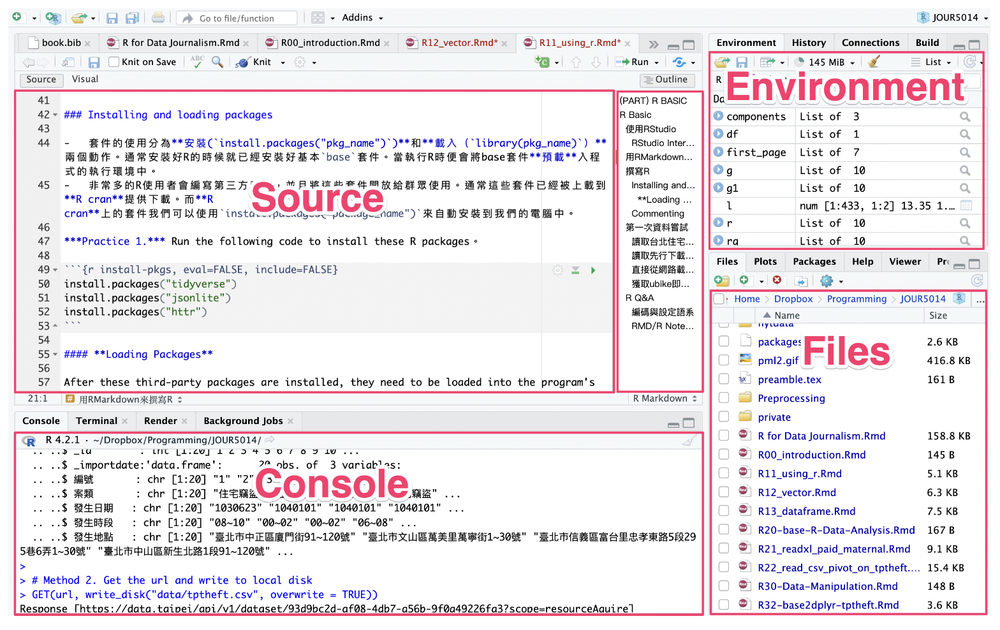

Chapter 2 Using R
本章介紹如何使用 RStudio 編寫和執行 R 程式語言、R語言的基本語法、以及Vector和data.frame資料型態。
2.1 Using RStudio
2.1.1 介面概覽
RStudio 的介面主要劃分為四大區塊，各自負責不同功能：
左上區（Source/Visual）： 撰寫程式碼及 R Markdown 文件的區域。
左下區（Console）： 顯示程式碼執行的即時結果，可直接輸入命令進行互動式操作。
右上區（Environment）： 呈現執行過程中產生的變數與資料物件，方便檢查數據內容。
右下區（Files/Packages/Help）：
Files： 顯示本機檔案目錄，便於瀏覽資料。
Packages： 列出目前已載入與可用的套件。
Help： 查詢函式與套件說明，方便尋求技術支援。

2.1.2 撰寫R Markdown
R Markdown 格式允許作者在同一份文件中同時混合撰寫程式碼與敘述性文字，非常適合用來撰寫技術文件與學術報告。文件中常見的區塊包括：
內容區塊（Text Cell）： 使用 Markdown 語法撰寫標題、段落、點列等格式化文字。詳細指令可以參考rmarkdown-cheatsheet (rstudio.com)。這種格式的靈活性和強大功能，使得 R Markdown 成為撰寫技術文檔和學術報告的理想選擇，能夠有效地將敘述性文本與程式碼結果結合，提升文檔的互動性和表達力。
程式碼區塊（Code Cell）： 撰寫 R 程式碼，並可直接執行以呈現結果。
2.1.3 常用快捷鍵
程式碼區塊可以用下列鍵盤指令來新增和執行。
Cmd(Ctrl)+Option(Alt)+i新增一個程式碼區塊Cmd+Enter(Ctrl+Enterin Window) 執行程式碼區塊中游標所在的那一行指令。Cmd(Ctrl)+Shift+Enter執行游標所在的整個程式碼區塊- 其他常用鍵盤指令 - 註解：用滑鼠或鍵盤圈選某幾行程式碼後，可用
Cmd(Ctrl)+Shift+c來將這幾行標記為註解或將其去除註解標記。
Practice. 用鍵盤快速鍵新增一個程式碼區塊、輸入以下程式碼並嘗試用鍵盤快速鍵執行。
a <- c(1, 2, 3, 4, 5)
b <- 4
a*b
2.1.4 安裝與載入第三方套件
- 套件的使用分為「安裝(
install.packages("pkg_name"))」和「載入（library(pkg_name)）」兩個步驟。 - 通常安裝好R的時候就已經安裝好基本
base套件。當執行R時便會將base套件預載入程式的執行環境中。 - 熱心的R使用者會編寫第三方套件，而第三方套件則可透過 R CRAN 自動安裝。。而R cran上的套件我們可以使用
install.packages("package_name")來自動安裝到我們的電腦中。
Practice 1. 執行以下程式碼
載入套件。在安裝這些第三方套件之後，需要將它們載入到程式的運行環境中，然後才能使用。因此，需要使用 library(package_name) 命令來載入它們。
2.1.5 R 預載套件介紹
當 R 的程式開始執行時，會預載入一些基本的套件，包括 stats、graphics、grDevices、utils 和 datasets。這些套件為 R 提供了基本的數據處理、統計分析、圖形顯示和檔案處理等功能。以下是這些套件的重要函式：
stats：這個套件包含了許多統計分析相關的函式，例如假設檢定、方差分析、線性迴歸和時間序列分析等。其中，比較常用的函式有t.test()、lm()、glm()、anova()、cor()等。graphics：這個套件提供了用於繪製各種圖形的函式，例如散佈圖、直方圖、盒鬚圖、線圖、散點矩陣等。其中，常用的函式有plot()、hist()、boxplot()、lines()、points()等。grDevices：這個套件包含了用於輸出圖形的函式，例如pdf()、png()、jpeg()和tiff()等。utils：這個套件包含了一些實用的函式，例如install.packages()、help()、data()等。datasets：這個套件包含了一些內建的數據集，可以用來進行測試和練習，例如iris、mtcars、CO2等。可以使用data()函式載入這些數據集。
2.2 Practical Examples
本節將透過實作範例，展示如何使用 R 讀取線上資料並進行基本資料操作。
2.2.1 從內政部開放資料讀取資料
MOS（Ministry of the Interior）: 中華民國行政院內政部
library(httr)
library(jsonlite)
url <- "https://www.ris.gov.tw/rs-opendata/api/v1/datastore/ODRP024/107?page=1"
first_page <- fromJSON(content(GET(url), "text"))
# head(first_page$responseData)
head(first_page$responseData) %>% rename(戶長=headhousehold_count)## statistic_yyy district_code site_id village edu sex 戶長
## 1 107 65000010001 新北市板橋區 留侯里 博畢 男 3
## 2 107 65000010001 新北市板橋區 留侯里 碩畢 男 26
## 3 107 65000010001 新北市板橋區 留侯里 大畢 男 71
## 4 107 65000010001 新北市板橋區 留侯里 專畢 男 52
## 5 107 65000010001 新北市板橋區 留侯里 高中畢 男 122
## 6 107 65000010001 新北市板橋區 留侯里 國中畢 男 402.2.2 取得臺北 YouBike (v2) 即時資料
以下範例從臺北市資料大平臺下載 YouBike 即時資訊，並檢視前六欄資料
url <- "https://tcgbusfs.blob.core.windows.net/dotapp/youbike/v2/youbike_immediate.json"
ubike.df <- fromJSON(content(GET(url),"text", encoding = "utf-8"))
head(ubike.df) %>% select(1:6)## sno sna tot sbi sarea mday
## 1 500101001 YouBike2.0_捷運科技大樓站 28 1 大安區 2024-03-31 23:09:14
## 2 500101002 YouBike2.0_復興南路二段273號前 21 1 大安區 2024-03-31 23:02:18
## 3 500101003 YouBike2.0_國北教大實小東側門 16 14 大安區 2024-03-31 22:26:18
## 4 500101004 YouBike2.0_和平公園東側 11 11 大安區 2024-03-31 23:01:14
## 5 500101005 YouBike2.0_辛亥復興路口西北側 16 11 大安區 2024-03-31 22:50:25
## 6 500101006 YouBike2.0_復興南路二段280號前 11 8 大安區 2024-03-31 22:46:18## sno sna tot sbi
## 1 500101001 YouBike2.0_捷運科技大樓站 28 1
## 2 500101002 YouBike2.0_復興南路二段273號前 21 1
## 3 500101003 YouBike2.0_國北教大實小東側門 16 14
## 4 500101004 YouBike2.0_和平公園東側 11 11
## 5 500101005 YouBike2.0_辛亥復興路口西北側 16 11
## 6 500101006 YouBike2.0_復興南路二段280號前 11 8
## 7 500101007 YouBike2.0_復興南路二段340巷口 11 6
## 8 500101008 YouBike2.0_新生南路三段52號前 17 5
## 9 500101009 YouBike2.0_新生南路三段66號前 16 0
## 10 500101010 YouBike2.0_新生南路三段82號前 20 10
## 11 500101012 YouBike2.0_辛亥路一段30號前 8 0
## 12 500101013 YouBike2.0_和平復興路口西北側 9 4
## 13 500101014 YouBike2.0_羅斯福路三段311號前 11 2
## 14 500101015 YouBike2.0_大安運動中心停車場 14 12
## 15 500101016 YouBike2.0_羅斯福路三段245號前 8 2
## 16 500101018 YouBike2.0_溫州公園 5 2
## 17 500101019 YouBike2.0_和平臥龍街口 15 15
## 18 500101020 YouBike2.0_溫州停車場 5 0
## 19 500101021 YouBike2.0_銘傳國小側門 7 1
## 20 500101022 YouBike2.0_捷運公館站(2號出口) 99 0
## 21 500101023 YouBike2.0_第二學生活動中心 25 1
## 22 500101024 YouBike2.0_臺灣科技大學正門 30 9
## 23 500101025 YouBike2.0_臺灣科技大學側門 99 24
## 24 500101026 YouBike2.0_公館公園 15 14
## 25 500101027 YouBike2.0_臺灣科技大學後門 39 12
## 26 500101028 YouBike2.0_臺大醫學院附設癌醫中心 20 8
## 27 500101029 YouBike2.0_臺大環研大樓 15 9
## 28 500101030 YouBike2.0_臺大永齡生醫工程館 34 3
## 29 500101031 YouBike2.0_臺大男七舍前 20 19
## 30 500101032 YouBike2.0_臺大男一舍前 61 60
## 31 500101033 YouBike2.0_臺大男六舍前 46 39
## 32 500101034 YouBike2.0_臺大動物醫院前 18 6
## 33 500101035 YouBike2.0_臺大土木研究大樓前 24 8
## 34 500101036 YouBike2.0_臺大萬才館前 20 8
## 35 500101037 YouBike2.0_臺大國青大樓宿舍前 20 19
## 36 500101038 YouBike2.0_臺大社科院圖書館前 27 0
## 37 500101039 YouBike2.0_臺大法人語言訓練中心前 28 11
## 38 500101040 YouBike2.0_臺大綜合體育館停車場前 25 7
## 39 500101041 YouBike2.0_辛亥新生路口東南側 41 24
## 40 500101042 YouBike2.0_基隆長興路口東側 15 15
## 41 500101091 YouBike2.0_國北教大側門南側 25 20
## 42 500101092 YouBike2.0_和平實小東北側 13 11
## 43 500101093 YouBike2.0_大安區健康服務中心 15 4
## 44 500101094 YouBike2.0_辛亥泰順街口 20 12
## 45 500101095 YouBike2.0_芳和國中 37 32
## 46 500101097 YouBike2.0_臥龍樂業街口 41 36
## 47 500101098 YouBike2.0_臥龍公園 14 13
## 48 500101099 YouBike2.0_嘉興公園 44 33
## 49 500101100 YouBike2.0_捷運麟光站(2號出口) 50 12
## 50 500101101 YouBike2.0_捷運六張犁站 64 12
## 51 500101102 YouBike2.0_喬治工商 24 14
## 52 500101103 YouBike2.0_法治公園 15 7
## 53 500101104 YouBike2.0_捷運臺電大樓站(2號出口) 18 3
## 54 500101105 YouBike2.0_和平金山路口 45 17
## 55 500101107 YouBike2.0_和平龍泉街口 34 34
## 56 500101108 YouBike2.0_和平泰順街口 9 9
## 57 500101109 YouBike2.0_臺灣師範大學(圖書館) 40 29
## 58 500101110 YouBike2.0_捷運古亭站(6號出口) 60 5
## 59 500101111 YouBike2.0_捷運古亭站(5號出口) 14 1
## 60 500101113 YouBike2.0_臺北市立圖書館(總館) 51 50
## 61 500101114 YouBike2.0_新生和平路口東北側 51 7
## 62 500101115 YouBike2.0_建國和平路口西北側 50 45
## 63 500101116 YouBike2.0_金華公園 46 40
## 64 500101117 YouBike2.0_捷運東門站(3號出口) 15 3
## 65 500101118 YouBike2.0_金甌女中 12 1
## 66 500101119 YouBike2.0_金杭公園 20 11
## 67 500101120 YouBike2.0_愛國金山路口 43 6
## 68 500101122 YouBike2.0_敦化南路二段293巷口南側 14 7
## 69 500101123 YouBike2.0_敦化基隆路口 38 7
## 70 500101124 YouBike2.0_安和路二段181巷口 17 8
## 71 500101125 YouBike2.0_臨江街夜市(通化街101巷口) 30 25
## 72 500101126 YouBike2.0_臨江街夜市(基隆路) 29 6
## 73 500101127 YouBike2.0_台北科技大學億光大樓 46 0
## 74 500101128 YouBike2.0_新生南路一段119巷口 33 24
## 75 500101129 YouBike2.0_幸安國小(仁愛路) 16 8
## 76 500101130 YouBike2.0_民榮公園 15 14
## 77 500101131 YouBike2.0_復興南路1段340巷口 50 10
## 78 500101132 YouBike2.0_建國濟南路口 54 27
## 79 500101133 YouBike2.0_捷運忠孝復興站(2號出口) 43 24
## 80 500101134 YouBike2.0_捷運大安站(4號出口) 13 11
## 81 500101135 YouBike2.0_捷運大安站(2號出口) 22 22
## 82 500101136 YouBike2.0_信義大安路口(信維大樓) 12 4
## 83 500101137 YouBike2.0_龍門廣場 70 6
## 84 500101138 YouBike2.0_仁愛安和路口 33 1
## 85 500101139 YouBike2.0_信義敦化路口 52 31
## 86 500101140 YouBike2.0_仁愛國中 25 1
## 87 500101141 YouBike2.0_捷運信義安和站(2號出口) 24 5
## 88 500101142 YouBike2.0_八德市場 30 27
## 89 500101143 YouBike2.0_昌隆公園 16 14
## 90 500101144 YouBike2.0_捷運大安森林公園站(2號出口) 69 42
## 91 500101145 YouBike2.0_信義延吉街口 15 1
## 92 500101146 YouBike2.0_光信公園(光復南路456巷) 15 15
## 93 500101147 YouBike2.0_僑安地下停車場(2號出口)東南側 20 0
## 94 500101148 YouBike2.0_建國南路一段279巷口 32 10
## 95 500101149 YouBike2.0_捷運忠孝新生站(6號出口) 15 2
## 96 500101150 YouBike2.0_捷運忠孝新生站(4號出口) 34 6
## 97 500101151 YouBike2.0_大安高工 23 18
## 98 500101152 YouBike2.0_捷運忠孝新生站(3號出口) 23 6
## 99 500101153 YouBike2.0_瑠公公園 20 0
## 100 500101154 YouBike2.0_敦化市民路口 23 7
## 101 500101155 YouBike2.0_捷運大安森林公園站(5號出口) 15 3
## 102 500101156 YouBike2.0_信義建國路口 52 24
## 103 500101157 YouBike2.0_東豐公園 19 14
## 104 500101158 YouBike2.0_德安公園(四維路66巷) 14 3
## 105 500101159 YouBike2.0_捷運忠孝復興站(5號出口) 41 0
## 106 500101160 YouBike2.0_捷運忠孝敦化站(2號出口) 17 0
## 107 500101161 YouBike2.0_捷運忠孝敦化站(7號出口) 18 0
## 108 500101163 YouBike2.0_瑞安街208巷 15 11
## 109 500101165 YouBike2.0_樂利路21巷口 17 13
## 110 500101166 YouBike2.0_捷運科技大樓站(台北教育大學) 54 18
## 111 500101167 YouBike2.0_捷運國父紀念館站(2號出口) 45 1
## 112 500101168 YouBike2.0_仁愛醫院 36 8
## 113 500101169 YouBike2.0_捷運信義安和站(4號出口) 30 6
## 114 500101170 YouBike2.0_成功國宅 36 23
## 115 500101171 YouBike2.0_仁愛延吉街口 33 3
## 116 500101172 YouBike2.0_捷運信義安和站(1號出口) 33 10
## 117 500101173 YouBike2.0_敦化南路二段103巷口 24 20
## 118 500101174 YouBike2.0_復興南路二段128巷口 37 4
## 119 500101175 YouBike2.0_和平東建國南路口 17 2
## 120 500101176 YouBike2.0_芳蘭山莊 16 5
## 121 500101177 YouBike2.0_復興南路一段126巷口 15 14
## 122 500101179 YouBike2.0_捷運東門站(5號出口) 28 0
## 123 500101180 YouBike2.0_仁愛路四段48巷口 11 0
## 124 500101181 YouBike2.0_捷運公館站(3號出口) 90 1
## 125 500101182 YouBike2.0_臺北科技大學(電機工程系) 16 11
## 126 500101183 YouBike2.0_忠孝東路三段217巷口 34 0
## 127 500101184 YouBike2.0_新生南路三段94巷口 15 0
## 128 500101185 YouBike2.0_辛亥新生路口西北側 12 7
## 129 500101186 YouBike2.0_捷運大安站(6號出口) 19 8
## 130 500101187 YouBike2.0_臥龍街195巷口 14 5
## 131 500101188 YouBike2.0_辛亥路三段157巷口 19 19
## 132 500101189 YouBike2.0_臥龍基隆路口 16 6
## 133 500101190 YouBike2.0_敦親公園 26 23
## 134 500101191 YouBike2.0_大安運動中心 33 2
## 135 500101192 YouBike2.0_和平敦化路口 36 15
## 136 500101193 YouBike2.0_基隆長興路口 43 31
## 137 500101194 YouBike2.0_仁愛路四段122巷口 16 8
## 138 500101196 YouBike2.0_市民敦化路口 15 1
## 139 500101197 YouBike2.0_忠孝東路四段49巷口 15 0
## 140 500101198 YouBike2.0_市民復興路口(東南側) 16 0
## 141 500101199 YouBike2.0_和平新生路口西南側 13 8
## 142 500101200 YouBike2.0_全安公園 16 13
## 143 500101201 YouBike2.0_信義路三段134巷口 19 10
## 144 500101202 YouBike2.0_仁愛敦南圓環(東南側) 16 7
## 145 500101203 YouBike2.0_臺北遠企購物中心 33 4
## 146 500101204 YouBike2.0_外交部外交及國際事務學院 17 12
## 147 500101205 YouBike2.0_四維路170巷口 22 17
## 148 500101206 YouBike2.0_捷運大安站(3號出口) 46 31
## 149 500101207 YouBike2.0_捷運臺電大樓站(2號出口)_1 35 1
## 150 500101208 YouBike2.0_信義路四段199巷 15 7
## 151 500101209 YouBike2.0_臺大資訊大樓 40 1
## 152 500101210 YouBike2.0_敦化南路二段81巷 40 10
## 153 500101211 YouBike2.0_原臺北刑務所官舍 23 23
## 154 500101212 YouBike2.0_捷運國父紀念館站(1號出口) 25 0
## 155 500101213 YouBike2.0_懷生國中 15 9
## 156 500101214 YouBike2.0_仁愛敦南圓環(西北側) 20 6
## 157 500101215 YouBike2.0_立人國小 17 16
## 158 500101216 YouBike2.0_和平東路二段18巷口 24 24
## 159 500101217 YouBike2.0_捷運大安站(5號出口) 26 14
## 160 500101218 YouBike2.0_臨江公園 23 18
## 161 500101219 YouBike2.0_羅斯福路四段113巷19弄口 14 7
## 162 500101221 YouBike2.0_忠孝東路四段248巷口 15 1
## 163 500101222 YouBike2.0_仁愛延吉路口(西北側) 18 5
## 164 500101223 YouBike2.0_樂利路101巷口 13 12
## 165 500101224 YouBike2.0_羅斯福浦城街口 15 8
## 166 500101225 YouBike2.0_敦化南路一段295巷口 18 15
## 167 500101226 YouBike2.0_通安區民活動中心 19 16
## 168 500101227 YouBike2.0_復興忠孝東路口(東南側) 28 13
## 169 500101228 YouBike2.0_仁愛大安路口(東北側) 21 4
## 170 500101229 YouBike2.0_臺灣師範大學(浦城街) 15 12
## 171 500101230 YouBike2.0_安和路二段69巷口 20 10
## 172 500101231 YouBike2.0_大安國小 25 16
## 173 500101232 YouBike2.0_捷運古亭站(3號出口) 15 3
## 174 500101233 YouBike2.0_捷運忠孝復興站(3號出口) 37 4
## 175 500101234 YouBike2.0_和平東路二段90巷 20 6
## 176 500101235 YouBike2.0_光復南路420巷口 16 0
## 177 500101236 YouBike2.0_富陽臥龍街口 18 8
## 178 500101237 YouBike2.0_仁愛復興路口 25 3
## 179 500101238 YouBike2.0_仁愛敦南圓環(東側) 16 9
## 180 500101239 YouBike2.0_古風公園 15 3
## 181 500103001 YouBike2.0_延平國宅 30 28
## 182 500103002 YouBike2.0_臺北市立圖書館大同分館 20 11
## 183 500103003 YouBike2.0_合昌宮 15 9
## 184 500103004 YouBike2.0_民族延平路口 36 19
## 185 500103005 YouBike2.0_重慶酒泉街口 44 15
## 186 500103006 YouBike2.0_樹德公園 14 5
## 187 500103007 YouBike2.0_陳天來故居 18 18
## 188 500103008 YouBike2.0_臺北孔廟 37 25
## 189 500103009 YouBike2.0_捷運圓山站(1號出口) 44 0
## 190 500103010 YouBike2.0_酒泉延平路口 41 23
## 191 500103011 YouBike2.0_重慶國中 49 6
## 192 500103012 YouBike2.0_重慶北路三段383巷口 25 25
## 193 500103013 YouBike2.0_台北數位產業園區 24 13
## 194 500103019 YouBike2.0_民權延平路口(西北側) 20 20
## 195 500103020 YouBike2.0_民權迪化街口 47 25
## 196 500103021 YouBike2.0_大稻埕公園 35 22
## 197 500103022 YouBike2.0_大龍老人住宅 14 12
## 198 500103023 YouBike2.0_大龍峒社會住宅 20 13
## 199 500103024 YouBike2.0_捷運大橋頭站(2號出口) 57 4
## 200 500103025 YouBike2.0_捷運大橋頭站(1A出口) 18 10
## 201 500103026 YouBike2.0_捷運民權西路站(2號出口) 25 0
## 202 500103027 YouBike2.0_捷運雙連站(2號出口) 41 3
## 203 500103028 YouBike2.0_捷運北門站(3號出口) 62 22
## 204 500103029 YouBike2.0_朝陽公園 10 5
## 205 500103030 YouBike2.0_永樂市場 38 24
## 206 500103031 YouBike2.0_大龍公園 18 13
## 207 500103032 YouBike2.0_重慶涼州街口 13 7
## 208 500103033 YouBike2.0_圓山線形公園 14 8
## 209 500103034 YouBike2.0_圓環站 31 15
## 210 500103035 YouBike2.0_重慶民族路口 26 16
## 211 500103036 YouBike2.0_承德路三段8巷口 21 4
## 212 500103037 YouBike2.0_太原廣場 31 15
## 213 500103038 YouBike2.0_國順公園 20 17
## 214 500103039 YouBike2.0_聯合醫院中興院區 40 19
## 215 500103040 YouBike2.0_蔣渭水紀念公園 36 21
## 216 500103041 YouBike2.0_迪化休閒運動公園 15 2
## 217 500103042 YouBike2.0_大同運動中心 16 15
## 218 500103043 YouBike2.0_重慶保安街口(家樂福重慶店) 20 12
## 219 500103044 YouBike2.0_大稻埕碼頭 52 16
## 220 500103045 YouBike2.0_歸綏戲曲公園 20 17
## 221 500103046 YouBike2.0_民權國中(民權西路) 17 2
## 222 500103047 YouBike2.0_承德民權路口 17 10
## 223 500103048 YouBike2.0_南京太原路口 18 4
## 224 500103049 YouBike2.0_承德民生西路口 11 3
## 225 500103050 YouBike2.0_太原五原路口 32 16
## 226 500103051 YouBike2.0_臺北轉運站(華陰街) 20 0
## 227 500103052 YouBike2.0_捷運民權西路站(3號出口) 50 0
## 228 500103053 YouBike2.0_捷運中山站(5號出口) 15 2
## 229 500103054 YouBike2.0_重慶長安路口 15 12
## 230 500103055 YouBike2.0_承德昌吉街口 18 17
## 231 500103056 YouBike2.0_大同16號廣場 14 6
## 232 500103057 YouBike2.0_捷運圓山站(2號出口) 37 0
## 233 500103058 YouBike2.0_樹德公園_1 40 20
## 234 500103059 YouBike2.0_承德鄭州路口(市民高架下) 38 5
## 235 500103060 YouBike2.0_成淵高中 14 3
## 236 500103061 YouBike2.0_雙蓮國小 20 20
## 237 500103062 YouBike2.0_寧夏涼州街口 15 3
## 238 500103063 YouBike2.0_延平涼州街口 14 9
## 239 500103064 YouBike2.0_大同行政中心 16 11
## 240 500103065 YouBike2.0_大龍市場 15 14
## 241 500103068 YouBike2.0_哈密街23巷19弄口 23 3
## 242 500104001 YouBike2.0_劍潭抽水站 17 7
## 243 500104002 YouBike2.0_通河東街大南路口 15 9
## 244 500104003 YouBike2.0_福港街停車場 22 14
## 245 500104004 YouBike2.0_百齡國小 50 39
## 246 500104005 YouBike2.0_雨聲街165巷口 15 7
## 247 500104006 YouBike2.0_天和公園 13 6
## 248 500104007 YouBike2.0_中山天母路口 29 16
## 249 500104008 YouBike2.0_天母運動公園 50 32
## 250 500104009 YouBike2.0_臺北市立大學(天母校區) 48 8
## 251 500104010 YouBike2.0_忠誠路二段53巷 18 7
## 252 500104012 YouBike2.0_天母棒球場 26 21
## 253 500104013 YouBike2.0_天母北天玉街口 15 11
## 254 500104014 YouBike2.0_蘭興公園 48 19
## 255 500104015 YouBike2.0_明勝公園 14 10
## 256 500104016 YouBike2.0_劍潭海外青年活動中心 23 0
## 257 500104018 YouBike2.0_忠誠路一段173巷口 11 2
## 258 500104019 YouBike2.0_雨農國小 14 10
## 259 500104020 YouBike2.0_忠誠公園 14 5
## 260 500104021 YouBike2.0_芝山抽水站 46 26
## 261 500104022 YouBike2.0_至誠路一段305巷口 21 7
## 262 500104023 YouBike2.0_華齡公園 32 28
## 263 500104024 YouBike2.0_前港公園(福德宮) 18 12
## 264 500104025 YouBike2.0_華齡街185巷口 12 7
## 265 500104026 YouBike2.0_前港公園(前港街) 19 13
## 266 500104027 YouBike2.0_百齡高中 15 8
## 267 500104028 YouBike2.0_捷運芝山站(2號出口) 21 9
## 268 500104029 YouBike2.0_臺灣戲曲中心 25 7
## 269 500104030 YouBike2.0_捷運劍潭站(2號出口) 49 14
## 270 500104031 YouBike2.0_劍潭基河路口 66 1
## 271 500104032 YouBike2.0_志成公園 23 13
## 272 500104033 YouBike2.0_福林國小 14 11
## 273 500104034 YouBike2.0_中山中正路口 19 10
## 274 500104035 YouBike2.0_士林運動中心 30 10
## 275 500104036 YouBike2.0_陽明高中 36 32
## 276 500104037 YouBike2.0_兒童新樂園 23 12
## 277 500104038 YouBike2.0_臺北市立天文館 46 25
## 278 500104039 YouBike2.0_華聲公園 27 0
## 279 500104040 YouBike2.0_福林公園 17 10
## 280 500104041 YouBike2.0_捷運士林站(2號出口) 30 6
## 281 500104042 YouBike2.0_銘傳大學 26 11
## 282 500104043 YouBike2.0_士林高商 26 4
## 283 500104044 YouBike2.0_蘭雅公園 38 9
## 284 500104045 YouBike2.0_聯合醫院陽明院區 25 14
## 285 500104046 YouBike2.0_捷運芝山站(1號出口) 36 0
## 286 500104047 YouBike2.0_至誠公園 15 10
## 287 500104048 YouBike2.0_原住民文化主題公園 21 14
## 288 500104049 YouBike2.0_通河東街2段10巷口 15 12
## 289 500104050 YouBike2.0_梅林新村 15 4
## 290 500104051 YouBike2.0_延平北中正路口 30 22
## 291 500104052 YouBike2.0_重慶北路四段190巷口 13 10
## 292 500104053 YouBike2.0_重慶北葫東街口 15 11
## 293 500104054 YouBike2.0_葫蘆國小 30 21
## 294 500104055 YouBike2.0_士林3號廣場 30 13
## 295 500104056 YouBike2.0_社正公園 15 1
## 296 500104057 YouBike2.0_社子國小 15 10
## 297 500104058 YouBike2.0_社中街384巷口 18 7
## 298 500104059 YouBike2.0_忠誠路一段138號 15 12
## 299 500104060 YouBike2.0_社子公園 32 15
## 300 500104061 YouBike2.0_國立故宮博物院 17 3
## 301 500104062 YouBike2.0_泰北高中 16 10
## 302 500104063 YouBike2.0_後港公園 15 6
## 303 500104064 YouBike2.0_重慶北路四段117號 18 10
## 304 500104065 YouBike2.0_社子島島頭公園 15 8
## 305 500104066 YouBike2.0_延平北路八段133巷口 15 8
## 306 500104067 YouBike2.0_坤天亭 14 8
## 307 500104068 YouBike2.0_社子島濕地解說小築 15 9
## 308 500104069 YouBike2.0_福安國中 25 14
## 309 500104070 YouBike2.0_福安消防分隊 15 8
## 310 500104071 YouBike2.0_聖山綠地 15 9
## 311 500104072 YouBike2.0_芝山國小 38 25
## 312 500104073 YouBike2.0_士林新天地 29 8
## 313 500104074 YouBike2.0_蘭雅國小 37 33
## 314 500104075 YouBike2.0_中正基河路口 37 17
## 315 500104076 YouBike2.0_福林公園(中正路) 45 14
## 316 500104077 YouBike2.0_至善臨溪路口 48 19
## 317 500104078 YouBike2.0_市立圖書館葫蘆堵分館 13 9
## 318 500104079 YouBike2.0_東山路110巷口 16 6
## 319 500104080 YouBike2.0_永平社會住宅 15 6
## 320 500104081 YouBike2.0_雨農橋 16 9
## 321 500104082 YouBike2.0_通河街76巷/承德路四段10巷口 14 5
## 322 500104083 YouBike2.0_芝山聖佑宮 15 5
## 323 500104084 YouBike2.0_至誠雨聲街口 9 0
## 324 500104085 YouBike2.0_捷運線型公園(後街) 13 12
## 325 500104086 YouBike2.0_天母公園 12 9
## 326 500104087 YouBike2.0_基河文林路口 16 6
## 327 500104088 YouBike2.0_文林福華路口 19 6
## 328 500104089 YouBike2.0_劍潭海外青年活動中心_1 39 13
## 329 500104090 YouBike2.0_社子國小_1 36 25
## 330 500104091 YouBike2.0_捷運劍潭站(1號出口) 70 3
## 331 500104092 YouBike2.0_德行東山路口 12 8
## 332 500104094 YouBike2.0_重慶北通河西街口 12 3
## 333 500104095 YouBike2.0_葫蘆國小(延平北路五段285巷) 15 11
## 334 500104096 YouBike2.0_社子市場 15 10
## 335 500104097 YouBike2.0_士林區農會社子分部 8 6
## 336 500104098 YouBike2.0_承德劍潭路口 19 4
## 337 500104099 YouBike2.0_文林路101巷口 17 9
## 338 500104100 YouBike2.0_延平北路五段257巷15弄口 11 8
## 339 500104101 YouBike2.0_延平北路五段257巷4弄口 15 9
## 340 500104102 YouBike2.0_啟明學校 16 8
## 341 500104103 YouBike2.0_中山福國路口 14 6
## 342 500104104 YouBike2.0_德行公園 14 9
## 343 500104105 YouBike2.0_承德後港街口 11 3
## 344 500104106 YouBike2.0_中山北路五段698巷口 15 12
## 345 500104107 YouBike2.0_捷運士林站(1號出口) 38 24
## 346 500104108 YouBike2.0_捷運芝山站(2號出口)_1 62 4
## 347 500104109 YouBike2.0_銘傳大學(中山北路五段280巷口) 23 1
## 348 500104110 YouBike2.0_海光公園南側 12 5
## 349 500104111 YouBike2.0_士商路40巷口 15 10
## 350 500104112 YouBike2.0_劍潭郵局 16 7
## 351 500104113 YouBike2.0_士東路91巷口 16 8
## 352 500104114 YouBike2.0_美崙公園 13 8
## 353 500104115 YouBike2.0_臺北市立大學(忠誠路二段207巷) 17 6
## 354 500104116 YouBike2.0_天母東路8巷/忠誠路二段154巷口 14 2
## 355 500104117 YouBike2.0_美崙公園(東北側) 15 7
## 356 500104118 YouBike2.0_福安河濱公園 14 6
## 357 500104119 YouBike2.0_忠誠忠義街口(北側) 13 8
## 358 500104120 YouBike2.0_忠誠忠義街口(南側) 14 4
## 359 500104121 YouBike2.0_士林國小 15 7
## 360 500104124 YouBike2.0_天和一號公園 15 10
## 361 500104125 YouBike2.0_忠誠路二段178巷口 15 5
## 362 500104126 YouBike2.0_克強磺溪街口 14 4
## 363 500104128 YouBike2.0_蘭雅公園(西側) 15 11
## 364 500104129 YouBike2.0_福林路100巷77弄口 18 5
## 365 500105001 YouBike2.0_台北花木批發市場 40 21
## 366 500105002 YouBike2.0_捷運萬隆站(4號出口) 22 0
## 367 500105003 YouBike2.0_捷運萬隆站(1號出口) 34 0
## 368 500105004 YouBike2.0_萬和二號公園 35 17
## 369 500105005 YouBike2.0_捷運萬隆站(2號出口) 12 0
## 370 500105006 YouBike2.0_景仁公園 16 8
## 371 500105007 YouBike2.0_捷運景美站(2號出口) 63 2
## 372 500105008 YouBike2.0_羅斯福景隆街口 25 7
## 373 500105009 YouBike2.0_景福街/羅斯福路6段142巷口 28 11
## 374 500105010 YouBike2.0_興旺公園 30 22
## 375 500105011 YouBike2.0_興福國中 25 15
## 376 500105012 YouBike2.0_興隆路2段203巷 32 14
## 377 500105013 YouBike2.0_景美運動公園 11 3
## 378 500105014 YouBike2.0_景美醫院 18 6
## 379 500105015 YouBike2.0_師範大學公館校區 14 10
## 380 500105016 YouBike2.0_景華街128巷口 29 21
## 381 500105017 YouBike2.0_仙跡岩登山口(景興路) 22 4
## 382 500105018 YouBike2.0_國立政治大學 35 18
## 383 500105019 YouBike2.0_捷運動物園站 57 1
## 384 500105020 YouBike2.0_捷運木柵站 31 19
## 385 500105021 YouBike2.0_捷運萬芳社區站 49 17
## 386 500105022 YouBike2.0_文山運動中心 30 16
## 387 500105023 YouBike2.0_捷運辛亥站 42 0
## 388 500105024 YouBike2.0_興豐公園 25 8
## 389 500105025 YouBike2.0_木柵光輝路口 33 31
## 390 500105026 YouBike2.0_考試院 26 10
## 391 500105027 YouBike2.0_和興路26巷口 22 7
## 392 500105028 YouBike2.0_世新大學 30 5
## 393 500105029 YouBike2.0_一壽橋 28 18
## 394 500105030 YouBike2.0_臺北市立景美女中 25 12
## 395 500105031 YouBike2.0_永安藝文館-表演36房 29 17
## 396 500105032 YouBike2.0_忠順區民活動中心 31 14
## 397 500105033 YouBike2.0_景文中學 36 19
## 398 500105034 YouBike2.0_老泉街籃球場 14 9
## 399 500105035 YouBike2.0_文山行政中心 27 0
## 400 500105036 YouBike2.0_木柵公園 38 5
## 401 500105037 YouBike2.0_興隆公共住宅D2區 19 12
## 402 500105038 YouBike2.0_木新路3段95巷口 16 9
## 403 500105039 YouBike2.0_樟腳里公園 15 15
## 404 500105040 YouBike2.0_實踐國中 13 6
## 405 500105041 YouBike2.0_指南路3段2巷 13 13
## 406 500105042 YouBike2.0_萊茵公園 14 8
## 407 500105043 YouBike2.0_木柵社會住宅 12 3
## 408 500105044 YouBike2.0_秀明路一段185巷口 20 4
## 409 500105045 YouBike2.0_秀明路一段129巷口 22 12
## 410 500105046 YouBike2.0_恆光橋(老泉街) 13 2
## 411 500105047 YouBike2.0_萬有3號公園 14 6
## 412 500105048 YouBike2.0_捷運萬芳醫院站(興隆路三段115巷) 20 5
## 413 500105049 YouBike2.0_興得閱覽室 24 13
## 414 500105050 YouBike2.0_辛亥生態公園 18 0
## 415 500105051 YouBike2.0_博嘉運動公園 12 0
## 416 500105052 YouBike2.0_國立政治大學(萬壽路) 54 40
## 417 500105053 YouBike2.0_仙岩公園 11 9
## 418 500105054 YouBike2.0_政大一街口 14 3
## 419 500105055 YouBike2.0_文山第二行政中心 38 12
## 420 500105056 YouBike2.0_移民署訓練中心 13 9
## 421 500105057 YouBike2.0_海巡署(南側) 10 2
## 422 500105058 YouBike2.0_明道國小東南側 18 3
## 423 500105059 YouBike2.0_木南公園 12 7
## 424 500105060 YouBike2.0_實踐國中(木新路三段310巷口) 17 8
## 425 500105061 YouBike2.0_師範大學公館校區_1 34 8
## 426 500105062 YouBike2.0_捷運動物園站(2號出口) 39 0
## 427 500105063 YouBike2.0_政大水岸電梯 10 9
## 428 500105064 YouBike2.0_敦南山林 14 2
## 429 500105066 YouBike2.0_景美污水抽水站 15 1
## 430 500105067 YouBike2.0_萬和三號公園(北側) 13 6
## 431 500105068 YouBike2.0_景興國中 10 4
## 432 500105069 YouBike2.0_景仁公園_1 30 17
## 433 500105070 YouBike2.0_師大公館校區學二舍 40 15
## 434 500105071 YouBike2.0_景行公園 15 0
## 435 500105072 YouBike2.0_萬興國小 16 6
## 436 500105073 YouBike2.0_辛亥路四段77巷口 14 9
## 437 500105074 YouBike2.0_景興路42巷口 12 4
## 438 500105075 YouBike2.0_木柵路三段48巷 15 7
## 439 500105076 YouBike2.0_木柵路二段109巷 15 11
## 440 500105077 YouBike2.0_試院公園 15 7
## 441 500105079 YouBike2.0_樟樹公園 15 11
## 442 500105080 YouBike2.0_萬美萬安街口 16 2
## 443 500105081 YouBike2.0_興隆路二段203巷(敦南) 27 22
## 444 500105082 YouBike2.0_新光秀明路口 15 4
## 445 500105083 YouBike2.0_光輝路134巷口 15 8
## 446 500105084 YouBike2.0_光輝公園 15 15
## 447 500105085 YouBike2.0_木新公園 12 6
## 448 500105086 YouBike2.0_興隆路二段275巷1弄口 16 6
## 449 500105087 YouBike2.0_中國科技大學 21 3
## 450 500105088 YouBike2.0_樟新街8巷 17 4
## 451 500105089 YouBike2.0_仙岩路22巷口 28 20
## 452 500105090 YouBike2.0_木柵萬芳路口 18 8
## 453 500105091 YouBike2.0_福興路78巷 14 11
## 454 500105093 YouBike2.0_興泰公園 12 7
## 455 500105094 YouBike2.0_興岩社會福利綜合大樓 18 6
## 456 500105095 YouBike2.0_興隆路二段22巷9弄口 13 6
## 457 500106001 YouBike2.0_臺北自來水事業處 20 1
## 458 500106002 YouBike2.0_汀州思源街口東南側 20 2
## 459 500106003 YouBike2.0_捷運公館站(1號出口) 12 1
## 460 500106004 YouBike2.0_捷運公館站(4號出口) 12 2
## 461 500106005 YouBike2.0_捷運古亭站(9號出口) 20 13
## 462 500106006 YouBike2.0_捷運古亭站(2號出口) 55 0
## 463 500106007 YouBike2.0_捷運臺電大樓站(1號出口) 34 0
## 464 500106008 YouBike2.0_客家文化主題公園 15 15
## 465 500106009 YouBike2.0_河堤國小 39 26
## 466 500106010 YouBike2.0_紀州庵 25 17
## 467 500106011 YouBike2.0_捷運臺電大樓站(5號出口) 14 8
## 468 500106012 YouBike2.0_捷運臺電大樓站(4號出口) 13 10
## 469 500106013 YouBike2.0_羅斯福三段金門街口 15 13
## 470 500106014 YouBike2.0_牯嶺公園 58 28
## 471 500106015 YouBike2.0_捷運古亭站(8號出口) 15 0
## 472 500106016 YouBike2.0_捷運古亭站(7號出口) 12 2
## 473 500106017 YouBike2.0_南昌公園 55 20
## 474 500106018 YouBike2.0_和平重慶路口 46 31
## 475 500106019 YouBike2.0_孫立人將軍官邸 23 9
## 476 500106020 YouBike2.0_羅斯福路二段6巷口 14 7
## 477 500106021 YouBike2.0_金華杭州南路口 21 13
## 478 500106022 YouBike2.0_捷運中正紀念堂站(3號出口) 18 5
## 479 500106023 YouBike2.0_捷運中正紀念堂站(4號出口) 21 8
## 480 500106025 YouBike2.0_螢橋國小 41 29
## 481 500106026 YouBike2.0_古亭智慧圖書館 14 8
## 482 500106027 YouBike2.0_永昌公園 15 5
## 483 500106028 YouBike2.0_中華路二段409巷口 15 9
## 484 500106029 YouBike2.0_南機場夜市(中華路二段) 41 27
## 485 500106030 YouBike2.0_南海和平路口西南側 19 2
## 486 500106031 YouBike2.0_莒光和平路口 20 11
## 487 500106037 YouBike2.0_水源路11-1號旁 19 13
## 488 500106038 YouBike2.0_南門國中 29 12
## 489 500106039 YouBike2.0_捷運小南門站(2號出口) 18 9
## 490 500106040 YouBike2.0_介壽公園 23 14
## 491 500106041 YouBike2.0_中華貴陽街口 20 4
## 492 500106042 YouBike2.0_華山文創園區 39 30
## 493 500106043 YouBike2.0_捷運善導寺站(1號出口) 46 14
## 494 500106044 YouBike2.0_濟南紹興路口 39 18
## 495 500106046 YouBike2.0_林森仁愛路口 13 4
## 496 500106047 YouBike2.0_中正運動中心 39 13
## 497 500106048 YouBike2.0_信義杭州路口 59 17
## 498 500106049 YouBike2.0_捷運善導寺站(3號出口) 20 0
## 499 500106050 YouBike2.0_捷運小南門站(1號出口) 46 27
## 500 500106051 YouBike2.0_延平南路133巷口 17 7
## 501 500106052 YouBike2.0_捷運西門站(2號出口) 36 9
## 502 500106053 YouBike2.0_寶慶博愛路口 47 6
## 503 500106054 YouBike2.0_法務部 27 6
## 504 500106055 YouBike2.0_臺北市立大學(博愛校區) 59 29
## 505 500106056 YouBike2.0_國家圖書館 36 11
## 506 500106057 YouBike2.0_市民金山路口 50 15
## 507 500106058 YouBike2.0_聯合醫院和平院區 32 24
## 508 500106059 YouBike2.0_中山堂 43 4
## 509 500106060 YouBike2.0_中華漢口街口 19 9
## 510 500106061 YouBike2.0_中華路一段21巷口 22 4
## 511 500106062 YouBike2.0_捷運臺大醫院站(4號出口) 60 22
## 512 500106063 YouBike2.0_寶藏巖觀音亭 23 9
## 513 500106064 YouBike2.0_師大水源路口 21 10
## 514 500106065 YouBike2.0_中山徐州路口 26 15
## 515 500106066 YouBike2.0_信義連雲街口 39 2
## 516 500106067 YouBike2.0_臺北轉運站 68 35
## 517 500106068 YouBike2.0_莒光大埔街口 32 19
## 518 500106069 YouBike2.0_捷運忠孝新生站(2號出口) 32 0
## 519 500106070 YouBike2.0_光華商場 39 6
## 520 500106071 YouBike2.0_中山青島路口 40 0
## 521 500106072 YouBike2.0_捷運中正紀念堂站(5號出口) 29 12
## 522 500106073 YouBike2.0_北平東杭州北路口 20 0
## 523 500106074 YouBike2.0_王貫英先生紀念圖書館 15 15
## 524 500106075 YouBike2.0_金山信義路口 25 2
## 525 500106077 YouBike2.0_林森徐州路口 16 16
## 526 500106078 YouBike2.0_徐州杭州路口 19 11
## 527 500106079 YouBike2.0_捷運中正紀念堂站(6號出口) 17 9
## 528 500106080 YouBike2.0_捷運臺北車站(M2出口) 20 0
## 529 500106083 YouBike2.0_臺北市國父史蹟館(逸仙公園) 31 0
## 530 500106084 YouBike2.0_捷運西門站(5號出口) 30 2
## 531 500106085 YouBike2.0_弘道國中 18 9
## 532 500106086 YouBike2.0_臺北市第一女子高級中學 17 2
## 533 500106087 YouBike2.0_台北市替代役中心 15 4
## 534 500106088 YouBike2.0_紹興徐州路口 18 17
## 535 500106089 YouBike2.0_羅斯福寧波東街口 26 1
## 536 500106090 YouBike2.0_自來水園區 40 0
## 537 500106091 YouBike2.0_仁愛林森路口 31 3
## 538 500106092 YouBike2.0_捷運西門站(3號出口) 36 3
## 539 500106093 YouBike2.0_仁愛金山路口 9 5
## 540 500106094 YouBike2.0_杭州南路一段101巷口 14 8
## 541 500106095 YouBike2.0_仁愛杭州路口 16 8
## 542 500106096 YouBike2.0_龍興里活動中心 21 17
## 543 500106097 YouBike2.0_植物園 29 25
## 544 500106098 YouBike2.0_郵政博物館 24 9
## 545 500106099 YouBike2.0_林森北平路口 20 8
## 546 500106100 YouBike2.0_北平紹興路口 15 3
## 547 500106101 YouBike2.0_天津北平路口 15 4
## 548 500106102 YouBike2.0_捷運忠孝新生站(1號出口) 19 1
## 549 500106103 YouBike2.0_捷運忠孝新生站(5號出口) 13 2
## 550 500106104 YouBike2.0_捷運臺大醫院站(1號出口) 19 6
## 551 500106105 YouBike2.0_臺大醫院兒童醫院 22 3
## 552 500106106 YouBike2.0_林森濟南路口(東北側) 15 4
## 553 500106107 YouBike2.0_仁愛紹興街口(南側) 17 4
## 554 500106108 YouBike2.0_中華南海路口 15 8
## 555 500106109 YouBike2.0_立法院台北會館 15 10
## 556 500106110 YouBike2.0_捷運善導寺站(3號出口)(忠孝東路側) 17 0
## 557 500106111 YouBike2.0_國家音樂廳 22 2
## 558 500106112 YouBike2.0_忠孝西重慶南路口 33 5
## 559 500106113 YouBike2.0_濟南路二段8巷口 14 6
## 560 500106114 YouBike2.0_仁愛金山路口(東南側) 14 8
## 561 500106115 YouBike2.0_臺灣文學基地 15 2
## 562 500106116 YouBike2.0_重慶南詔安街口 15 12
## 563 500106117 YouBike2.0_文光公園 17 9
## 564 500106118 YouBike2.0_捷運中正紀念堂站(2號出口) 12 3
## 565 500106119 YouBike2.0_螢圃里小公園 19 11
## 566 500106120 YouBike2.0_螢橋公園 15 14
## 567 500106121 YouBike2.0_泉州寧波西街口 30 22
## 568 500106122 YouBike2.0_和平西路二段98巷口 16 7
## 569 500106123 YouBike2.0_仁愛新生路口(西南側) 18 17
## 570 500106124 YouBike2.0_幸安市場 15 6
## 571 500106125 YouBike2.0_龍口市場 14 9
## 572 500107001 YouBike2.0_通北街65巷口 16 12
## 573 500107002 YouBike2.0_圓山風景區 15 2
## 574 500107003 YouBike2.0_樂群二堤頂大道口 20 6
## 575 500107004 YouBike2.0_劍潭社區 13 7
## 576 500107005 YouBike2.0_培英公園 40 14
## 577 500107006 YouBike2.0_樂群二明水路口 20 4
## 578 500107007 YouBike2.0_北安大直街口 31 6
## 579 500107008 YouBike2.0_捷運劍南路站(2號出口) 86 38
## 580 500107009 YouBike2.0_樂群二敬業三路口 20 14
## 581 500107010 YouBike2.0_樂群二敬業四路口 36 27
## 582 500107011 YouBike2.0_捷運大直站(3號出口) 34 30
## 583 500107012 YouBike2.0_復興市民路口 52 9
## 584 500107013 YouBike2.0_南京遼寧街口 42 1
## 585 500107014 YouBike2.0_伊通長安路口 21 17
## 586 500107015 YouBike2.0_新生長安路口 30 3
## 587 500107016 YouBike2.0_市民林森路口 39 33
## 588 500107017 YouBike2.0_南京新生路口 34 8
## 589 500107018 YouBike2.0_一江公園 37 1
## 590 500107019 YouBike2.0_松江公園 37 10
## 591 500107020 YouBike2.0_新生長春路口 32 5
## 592 500107021 YouBike2.0_第二果菜批發市場 40 19
## 593 500107022 YouBike2.0_民生建國路口 33 0
## 594 500107023 YouBike2.0_興安華城 62 55
## 595 500107024 YouBike2.0_捷運中山國中站 62 0
## 596 500107025 YouBike2.0_龍江錦州街口 16 10
## 597 500107026 YouBike2.0_建國長春路口 16 9
## 598 500107027 YouBike2.0_南京建國路口 42 2
## 599 500107028 YouBike2.0_捷運松江南京站(7號出口) 75 0
## 600 500107029 YouBike2.0_朱崙商場 37 27
## 601 500107030 YouBike2.0_中吉公園 15 5
## 602 500107031 YouBike2.0_華山公園 19 13
## 603 500107032 YouBike2.0_建國北路一段17巷 45 13
## 604 500107033 YouBike2.0_江寧公園 15 13
## 605 500107034 YouBike2.0_民權龍江路口 32 24
## 606 500107035 YouBike2.0_捷運中山國小站(2號出口) 59 5
## 607 500107036 YouBike2.0_捷運行天宮站(3號出口) 42 7
## 608 500107037 YouBike2.0_林森農安街口 17 9
## 609 500107038 YouBike2.0_捷運中山國小站(4號出口) 20 6
## 610 500107039 YouBike2.0_農安雙城街口 15 2
## 611 500107040 YouBike2.0_新生德惠街口 15 15
## 612 500107041 YouBike2.0_民族林森路口 37 21
## 613 500107042 YouBike2.0_臺北市立美術館 24 17
## 614 500107043 YouBike2.0_中山民族路口 16 5
## 615 500107044 YouBike2.0_新生高架停車場(林森北路107巷口) 14 13
## 616 500107045 YouBike2.0_南京林森路口(東南側) 10 10
## 617 500107046 YouBike2.0_仁德公園 18 18
## 618 500107047 YouBike2.0_中原公園 15 11
## 619 500107048 YouBike2.0_下埤公園 24 13
## 620 500107049 YouBike2.0_五常國中 16 15
## 621 500107050 YouBike2.0_榮星花園 46 38
## 622 500107051 YouBike2.0_民權建國路口 50 23
## 623 500107052 YouBike2.0_松江路431巷口 15 6
## 624 500107053 YouBike2.0_新喜公園 13 11
## 625 500107054 YouBike2.0_吉林路407巷口 15 8
## 626 500107055 YouBike2.0_民族松江路口 17 9
## 627 500107056 YouBike2.0_林安泰古厝 36 3
## 628 500107057 YouBike2.0_中山公民會館 20 10
## 629 500107058 YouBike2.0_渭水八德路口 23 5
## 630 500107059 YouBike2.0_捷運中山站(2號出口) 33 1
## 631 500107060 YouBike2.0_撫順公園 30 1
## 632 500107061 YouBike2.0_新生公園 29 25
## 633 500107062 YouBike2.0_捷運行天宮站(1號出口) 46 6
## 634 500107063 YouBike2.0_林森長春路口 28 1
## 635 500107064 YouBike2.0_建國農安街口 50 29
## 636 500107065 YouBike2.0_松江路77巷口 10 4
## 637 500107066 YouBike2.0_建國長安路口 20 5
## 638 500107067 YouBike2.0_市民新生路口 15 4
## 639 500107068 YouBike2.0_民權吉林路口 15 9
## 640 500107069 YouBike2.0_中山農安街口 17 11
## 641 500107070 YouBike2.0_捷運行政大樓 14 4
## 642 500107071 YouBike2.0_中吉公園(松江路188巷) 22 2
## 643 500107072 YouBike2.0_吉林路123巷口 13 11
## 644 500107074 YouBike2.0_中原民生路口 15 6
## 645 500107075 YouBike2.0_國立臺北大學(臺北校區) 38 7
## 646 500107076 YouBike2.0_錦州吉林路口 30 19
## 647 500107077 YouBike2.0_中山北路二段59巷口 12 10
## 648 500107078 YouBike2.0_永盛公園(民生東路一段23巷) 24 23
## 649 500107079 YouBike2.0_新生錦州街口 20 8
## 650 500107080 YouBike2.0_濱江街199巷口 15 7
## 651 500107081 YouBike2.0_大佳社區公園 15 5
## 652 500107082 YouBike2.0_濱江果菜市場 22 19
## 653 500107083 YouBike2.0_興安合江路口 19 4
## 654 500107084 YouBike2.0_復興北路514巷口東側 12 9
## 655 500107085 YouBike2.0_台泥大樓 18 1
## 656 500107086 YouBike2.0_植福樂群路口 10 2
## 657 500107087 YouBike2.0_新興公園 26 6
## 658 500107088 YouBike2.0_南京伊通街口 11 2
## 659 500107089 YouBike2.0_南京龍江路口 15 4
## 660 500107090 YouBike2.0_撫順街41巷(崇德宮前) 19 6
## 661 500107091 YouBike2.0_臺北市立圖書館大直分館 20 9
## 662 500107092 YouBike2.0_捷運大直站(1號出口) 27 5
## 663 500107093 YouBike2.0_捷運松江南京站(4號出口) 32 0
## 664 500107095 YouBike2.0_中429公園 15 6
## 665 500107096 YouBike2.0_長春路137巷口 16 5
## 666 500107097 YouBike2.0_松江民生路口 17 1
## 667 500107098 YouBike2.0_松江路132巷口 14 2
## 668 500107099 YouBike2.0_長春吉林路口 10 3
## 669 500107100 YouBike2.0_長春一江街口 11 1
## 670 500107101 YouBike2.0_捷運松江南京站(8號出口) 20 0
## 671 500107102 YouBike2.0_南京一江街口 10 0
## 672 500107103 YouBike2.0_松江長春路口 16 0
## 673 500107104 YouBike2.0_經國七海文化園區 15 7
## 674 500107105 YouBike2.0_民族玉門街口 20 3
## 675 500107106 YouBike2.0_新生農安街口 15 13
## 676 500107107 YouBike2.0_稻江高級護理家事職業學校 14 10
## 677 500107108 YouBike2.0_捷運大直站(3號出口)_1 18 11
## 678 500107109 YouBike2.0_樂群二明水路口_1 34 16
## 679 500107110 YouBike2.0_民權吉林路口(南側) 16 11
## 680 500107111 YouBike2.0_長春龍江路口 24 7
## 681 500107112 YouBike2.0_民權新生路口 26 1
## 682 500107113 YouBike2.0_建國長春路口(北側) 30 19
## 683 500107114 YouBike2.0_中山行政中心 30 19
## 684 500107115 YouBike2.0_臺北市立美術館_1 30 27
## 685 500107116 YouBike2.0_劍潭社區_1 42 24
## 686 500107117 YouBike2.0_濱江國小游泳池 16 5
## 687 500107118 YouBike2.0_林森公園 32 15
## 688 500107119 YouBike2.0_中428公園 15 5
## 689 500107120 YouBike2.0_復華公園 20 4
## 690 500107121 YouBike2.0_新生民族路口(西南側) 15 13
## 691 500107122 YouBike2.0_捷運南京復興站(1號出口) 21 1
## 692 500107123 YouBike2.0_八德市場(北側) 26 9
## 693 500107124 YouBike2.0_龍江朱崙街口 14 1
## 694 500107125 YouBike2.0_大直街94巷 15 9
## 695 500107126 YouBike2.0_捷運南京復興站(8號出口) 25 3
## 696 500107127 YouBike2.0_民權建國路口(南側) 15 5
## 697 500107128 YouBike2.0_林森德惠街口 16 6
## 698 500107129 YouBike2.0_新生濱江街口(東南側) 21 9
## 699 500107130 YouBike2.0_新生北路一段62巷口 20 9
## 700 500107131 YouBike2.0_新生長春路口(東北側) 19 1
## 701 500107132 YouBike2.0_捷運劍南路站(1號出口) 21 8
## 702 500107133 YouBike2.0_敬業三樂群三路口(西北側) 16 1
## 703 500107134 YouBike2.0_長春路258巷2弄口 15 15
## 704 500107135 YouBike2.0_長寧大廈社區(南側) 15 13
## 705 500107136 YouBike2.0_建國五常街口 20 12
## 706 500107137 YouBike2.0_中山北路二段62巷口 12 4
## 707 500107138 YouBike2.0_市民安東街口 20 11
## 708 500107139 YouBike2.0_市民大道二段5巷口 15 3
## 709 500107140 YouBike2.0_捷運中山站(3號出口) 21 0
## 710 500107141 YouBike2.0_建國北路高架橋下停車場G區 18 4
## 711 500107142 YouBike2.0_朱崙公園 20 8
## 712 500107143 YouBike2.0_朱崙復興北路口 12 4
## 713 500107144 YouBike2.0_捷運行天宮站(4號出口) 30 20
## 714 500107145 YouBike2.0_建國北路三段86巷口 15 11
## 715 500107146 YouBike2.0_正守公園 15 13
## 716 500107147 YouBike2.0_四平松江路口 18 1
## 717 500107148 YouBike2.0_金泰公園 16 4
## 718 500107149 YouBike2.0_北安通北街口 17 13
## 719 500107150 YouBike2.0_民權東復興北路口(西北側) 20 4
## 720 500107151 YouBike2.0_臺北市立大同高中 22 1
## 721 500107153 YouBike2.0_北安明水路口(自強隧道) 12 5
## 722 500108001 YouBike2.0_文湖街21巷118弄口 28 15
## 723 500108002 YouBike2.0_北勢湖環保公園 15 5
## 724 500108003 YouBike2.0_洲子一號公園 43 4
## 725 500108004 YouBike2.0_西康公園 16 10
## 726 500108005 YouBike2.0_文湖國小 43 18
## 727 500108006 YouBike2.0_文湖街81巷10號西側 14 9
## 728 500108007 YouBike2.0_德明財經科技大學 27 17
## 729 500108008 YouBike2.0_麗山國小 18 10
## 730 500108009 YouBike2.0_麗山高中 33 7
## 731 500108010 YouBike2.0_港華五號公園 16 13
## 732 500108011 YouBike2.0_大湖國小 25 6
## 733 500108012 YouBike2.0_安湖三號公園 12 3
## 734 500108013 YouBike2.0_東湖路113巷95弄 10 7
## 735 500108014 YouBike2.0_瑞光計程車服務站 20 10
## 736 500108015 YouBike2.0_文德三號公園(江南街71巷16弄) 15 10
## 737 500108016 YouBike2.0_捷運大湖公園站(2號出口) 28 5
## 738 500108018 YouBike2.0_康寧星雲街口 12 8
## 739 500108019 YouBike2.0_星雲街47號 15 5
## 740 500108020 YouBike2.0_捷運西湖站(1號出口) 23 0
## 741 500108021 YouBike2.0_捷運西湖站(2號出口) 19 9
## 742 500108022 YouBike2.0_洲子二號公園 60 18
## 743 500108023 YouBike2.0_港都公園 15 4
## 744 500108024 YouBike2.0_環山路二段26巷口 22 9
## 745 500108025 YouBike2.0_成功金龍路口 29 13
## 746 500108026 YouBike2.0_碧山公園 31 9
## 747 500108027 YouBike2.0_金瑞公園 30 16
## 748 500108028 YouBike2.0_捷運文德站(2號出口) 49 1
## 749 500108029 YouBike2.0_陽光公園 16 6
## 750 500108030 YouBike2.0_文德二號公園(南側) 13 10
## 751 500108031 YouBike2.0_文德二號公園(北側) 15 0
## 752 500108032 YouBike2.0_瑞陽公園 12 7
## 753 500108033 YouBike2.0_湖光國宅 37 12
## 754 500108034 YouBike2.0_潭美街213號 12 8
## 755 500108035 YouBike2.0_南京東路六段180號 21 11
## 756 500108036 YouBike2.0_潭美國小(南京舊宗路口) 16 7
## 757 500108037 YouBike2.0_新明路343號 10 6
## 758 500108038 YouBike2.0_週美里活動廣場 17 15
## 759 500108039 YouBike2.0_內湖行政中心 25 19
## 760 500108040 YouBike2.0_樂康公園 20 14
## 761 500108041 YouBike2.0_安康路32巷24弄 21 6
## 762 500108043 YouBike2.0_明美公園 30 9
## 763 500108044 YouBike2.0_南京東路六段368巷 47 16
## 764 500108045 YouBike2.0_新明成功路口 30 12
## 765 500108046 YouBike2.0_民權瑞光路口 32 7
## 766 500108047 YouBike2.0_瑞光公共住宅(瑞光路) 18 6
## 767 500108048 YouBike2.0_民權東路六段15巷 28 6
## 768 500108049 YouBike2.0_扶輪親恩公園 30 14
## 769 500108050 YouBike2.0_新湖三民善街口 15 2
## 770 500108051 YouBike2.0_內湖119號綠地 24 14
## 771 500108052 YouBike2.0_行善公園 20 1
## 772 500108054 YouBike2.0_三軍總醫院 34 13
## 773 500108055 YouBike2.0_福華商場 25 14
## 774 500108056 YouBike2.0_臺北市網球中心 34 10
## 775 500108057 YouBike2.0_捷運葫洲站(1號出口) 37 27
## 776 500108058 YouBike2.0_麗湖國小 27 14
## 777 500108059 YouBike2.0_金湖路347巷125弄口 15 6
## 778 500108060 YouBike2.0_碧湖公園 25 1
## 779 500108061 YouBike2.0_碧湖公園(內湖路二段103巷) 19 9
## 780 500108062 YouBike2.0_貿七社區 17 13
## 781 500108063 YouBike2.0_內湖區農會 12 6
## 782 500108064 YouBike2.0_捷運內湖站(2號出口) 10 1
## 783 500108065 YouBike2.0_康寧金湖路口 14 5
## 784 500108066 YouBike2.0_康寧路一段156巷20弄口 17 6
## 785 500108067 YouBike2.0_安康公園 19 11
## 786 500108068 YouBike2.0_安泰街83巷 34 13
## 787 500108069 YouBike2.0_內溝溪生態展示館 16 5
## 788 500108070 YouBike2.0_捷運港墘站(2號出口) 47 3
## 789 500108071 YouBike2.0_東湖國中 42 11
## 790 500108072 YouBike2.0_石潭公園(安康路) 20 6
## 791 500108073 YouBike2.0_內湖垃圾焚化廠 20 7
## 792 500108074 YouBike2.0_康寧公園(北側) 20 9
## 793 500108075 YouBike2.0_康寧路三段54巷口 15 5
## 794 500108076 YouBike2.0_行善路25巷口 21 15
## 795 500108077 YouBike2.0_新明路460巷口 15 3
## 796 500108078 YouBike2.0_下灣公園 30 13
## 797 500108079 YouBike2.0_民權東路六段245巷口 12 5
## 798 500108081 YouBike2.0_東湖國小 29 17
## 799 500108082 YouBike2.0_捷運內湖站(1號出口) 28 9
## 800 500108083 YouBike2.0_瑞光港墘路口 30 21
## 801 500108084 YouBike2.0_瑞湖陽光街口 34 7
## 802 500108085 YouBike2.0_金龍公園 15 5
## 803 500108086 YouBike2.0_星雲街138巷1弄口 15 6
## 804 500108087 YouBike2.0_東湖一號公園 10 6
## 805 500108088 YouBike2.0_東湖二號公園 15 11
## 806 500108089 YouBike2.0_康湖二號公園(康寧醫院) 16 11
## 807 500108090 YouBike2.0_堤頂大道新湖一路口 13 4
## 808 500108091 YouBike2.0_下灣公園(成功路) 16 5
## 809 500108092 YouBike2.0_舊宗行善路口 9 0
## 810 500108093 YouBike2.0_新湖二路250巷口 20 3
## 811 500108094 YouBike2.0_成功路四段41巷口 12 6
## 812 500108095 YouBike2.0_金湖星雲街口 30 11
## 813 500108096 YouBike2.0_國防醫學院 15 7
## 814 500108097 YouBike2.0_民權東路六段190巷117弄口 15 9
## 815 500108098 YouBike2.0_內湖運動中心 21 10
## 816 500108099 YouBike2.0_九華公園 16 9
## 817 500108100 YouBike2.0_內湖路二段179巷口 16 9
## 818 500108102 YouBike2.0_行善行愛路口 12 2
## 819 500108103 YouBike2.0_民善新湖二路口(家樂福內湖店) 23 0
## 820 500108104 YouBike2.0_統振大樓 25 11
## 821 500108105 YouBike2.0_陽光街161巷口 16 9
## 822 500108106 YouBike2.0_潭美公園(南京東路六段368巷) 18 13
## 823 500108107 YouBike2.0_西康二號公園 21 11
## 824 500108108 YouBike2.0_三民國中(民權東路六段47巷) 13 3
## 825 500108109 YouBike2.0_瑞光路76巷口 12 2
## 826 500108110 YouBike2.0_捷運東湖站 35 11
## 827 500108111 YouBike2.0_新湖國小 12 4
## 828 500108112 YouBike2.0_碧山內湖路口 16 16
## 829 500108115 YouBike2.0_民權東路六段413巷 16 4
## 830 500108116 YouBike2.0_宏匯瑞光廣場(瑞光路) 16 9
## 831 500108117 YouBike2.0_宏匯瑞光廣場(港墘路) 20 11
## 832 500108118 YouBike2.0_康樂街151巷 14 8
## 833 500108119 YouBike2.0_內湖路一段360巷 15 8
## 834 500108120 YouBike2.0_成功路三段83號前 11 10
## 835 500108121 YouBike2.0_內湖路一段47巷 16 5
## 836 500108122 YouBike2.0_陽光舊宗路口 20 4
## 837 500108123 YouBike2.0_安湖公園 8 6
## 838 500108124 YouBike2.0_湖興公園 16 3
## 839 500108126 YouBike2.0_安泰街(康樂橋下) 15 7
## 840 500108127 YouBike2.0_康樂綠地 15 9
## 841 500108128 YouBike2.0_捷運港墘站(1號出口) 23 8
## 842 500108129 YouBike2.0_明美公園(行善路333巷) 16 12
## 843 500108130 YouBike2.0_行善路383巷 17 8
## 844 500108131 YouBike2.0_舊宗新湖三路口 18 8
## 845 500108132 YouBike2.0_內湖運動公園 17 9
## 846 500108133 YouBike2.0_內湖路三段326巷口 15 5
## 847 500108134 YouBike2.0_成功公園 11 8
## 848 500108135 YouBike2.0_康寧路三段189巷93弄口 14 6
## 849 500108136 YouBike2.0_中國醫藥大學附設醫院臺北分院 13 2
## 850 500108137 YouBike2.0_康樂抽水站 15 9
## 851 500108138 YouBike2.0_環山路三段16巷口 13 5
## 852 500108139 YouBike2.0_文德一號綠地 15 5
## 853 500108140 YouBike2.0_臺北花市 30 2
## 854 500108141 YouBike2.0_行善社會住宅 23 2
## 855 500108142 YouBike2.0_康寧路三段99巷17弄口 15 8
## 856 500108143 YouBike2.0_堤頂大道二段407巷口 15 6
## 857 500108144 YouBike2.0_海德堡科技大樓 12 9
## 858 500108145 YouBike2.0_致伸科技大樓 17 10
## 859 500108146 YouBike2.0_內湖路一段288巷口 20 7
## 860 500108147 YouBike2.0_大都會客運內湖站 15 12
## 861 500108148 YouBike2.0_瑞湖公園 15 6
## 862 500108150 YouBike2.0_台灣世曦大樓 16 3
## 863 500108151 YouBike2.0_遠雄時代總部 14 2
## 864 500108152 YouBike2.0_瑞光路358巷口 14 6
## 865 500108153 YouBike2.0_大港墘公園(洲子街) 18 7
## 866 500108154 YouBike2.0_世紀經貿 16 13
## 867 500108156 YouBike2.0_民權東路六段56巷口 15 6
## 868 500108157 YouBike2.0_新湖三行忠路72巷口 15 4
## 869 500108158 YouBike2.0_新湖三新湖二146巷口 15 2
## 870 500108159 YouBike2.0_舊宗新湖二路口 17 2
## 871 500108160 YouBike2.0_新光基湖大樓 19 9
## 872 500108161 YouBike2.0_內湖路一段120巷15弄 19 8
## 873 500108162 YouBike2.0_北勢湖環保公園(堤頂大道側) 14 3
## 874 500108164 YouBike2.0_達爾文大樓 15 6
## 875 500108165 YouBike2.0_東湖四號公園 15 6
## 876 500108166 YouBike2.0_加瑪科技中心 13 2
## 877 500108167 YouBike2.0_福壽公園 14 9
## 878 500108168 YouBike2.0_捷運西湖站(1號出口)內湖路側 13 1
## 879 500108169 YouBike2.0_威剛科技總部 25 9
## 880 500108170 YouBike2.0_太陽科技廣場 15 3
## 881 500108171 YouBike2.0_瑞光路316巷 20 3
## 882 500108172 YouBike2.0_文德路220巷口 15 8
## 883 500108173 YouBike2.0_長壽抽水站 15 4
## 884 500108174 YouBike2.0_捷運葫洲站(2號出口) 18 7
## 885 500108175 YouBike2.0_五分埤 16 2
## 886 500108176 YouBike2.0_環山路三段1巷(麗山高中) 18 9
## 887 500108177 YouBike2.0_潭美公園(南京東路六段482號) 29 3
## 888 500109001 YouBike2.0_承德路七段304巷口 20 15
## 889 500109002 YouBike2.0_洲美運動公園 20 7
## 890 500109003 YouBike2.0_榮華二明德路口 30 15
## 891 500109004 YouBike2.0_捷運明德站(1號出口) 23 8
## 892 500109005 YouBike2.0_文林建民路口 25 18
## 893 500109006 YouBike2.0_永欣綠地 37 14
## 894 500109007 YouBike2.0_關渡宮 40 31
## 895 500109008 YouBike2.0_關渡自然公園 25 6
## 896 500109009 YouBike2.0_關渡醫院 14 5
## 897 500109010 YouBike2.0_捷運忠義站(1號出口) 30 15
## 898 500109011 YouBike2.0_捷運關渡站(1號出口) 54 31
## 899 500109012 YouBike2.0_捷運關渡站(2號出口) 14 1
## 900 500109013 YouBike2.0_中央北路四段540巷口 27 12
## 901 500109014 YouBike2.0_大度立德路口 18 13
## 902 500109015 YouBike2.0_捷運復興崗站(1號出口) 45 12
## 903 500109016 YouBike2.0_捷運復興崗站旅客服務中心 15 6
## 904 500109017 YouBike2.0_豐年公園 20 9
## 905 500109018 YouBike2.0_稻香重三路口 15 2
## 906 500109019 YouBike2.0_國防大學政治作戰學院 45 23
## 907 500109020 YouBike2.0_秀山區民活動中心 36 15
## 908 500109022 YouBike2.0_大業大同街口 42 17
## 909 500109023 YouBike2.0_捷運新北投站 42 26
## 910 500109024 YouBike2.0_捷運北投站 30 6
## 911 500109025 YouBike2.0_捷運奇岩站(三合街) 40 6
## 912 500109026 YouBike2.0_八仙里辦公處 16 5
## 913 500109027 YouBike2.0_清江國小 58 41
## 914 500109028 YouBike2.0_大業路300巷口 20 6
## 915 500109029 YouBike2.0_立農公園 21 16
## 916 500109030 YouBike2.0_北投奇岩長青樂活大樓 15 1
## 917 500109031 YouBike2.0_捷運唭哩岸站(2號出口) 54 29
## 918 500109032 YouBike2.0_北投運動中心 60 10
## 919 500109033 YouBike2.0_陽明大學 53 16
## 920 500109034 YouBike2.0_捷運石牌站(2號出口) 62 40
## 921 500109035 YouBike2.0_台北護理大學 42 9
## 922 500109036 YouBike2.0_捷運石牌站(1號出口) 33 18
## 923 500109037 YouBike2.0_振興醫院 36 11
## 924 500109039 YouBike2.0_石牌國小 26 8
## 925 500109040 YouBike2.0_振興公園 13 8
## 926 500109041 YouBike2.0_立農國小 19 11
## 927 500109042 YouBike2.0_承德路七段280巷口 17 10
## 928 500109043 YouBike2.0_致遠一路二段11巷 22 13
## 929 500109044 YouBike2.0_榮富公園 13 3
## 930 500109045 YouBike2.0_中正高中 31 6
## 931 500109046 YouBike2.0_立功立德路口 41 23
## 932 500109047 YouBike2.0_中央北路四段30巷口 16 4
## 933 500109048 YouBike2.0_陽明交大圖書館 37 13
## 934 500109049 YouBike2.0_捷運新北投站(2號出口) 11 3
## 935 500109050 YouBike2.0_復興公園 14 5
## 936 500109051 YouBike2.0_承德石牌路口 17 3
## 937 500109052 YouBike2.0_承德路七段188巷口 16 10
## 938 500109053 YouBike2.0_捷運明德站(3號出口) 48 3
## 939 500109054 YouBike2.0_大豐公園 39 22
## 940 500109055 YouBike2.0_洲美公園 30 23
## 941 500109056 YouBike2.0_中和街455巷11弄 13 4
## 942 500109057 YouBike2.0_洲美蜆仔港公園 20 5
## 943 500109058 YouBike2.0_文化三杏林一路口 17 11
## 944 500109059 YouBike2.0_珠海復興一路口 15 10
## 945 500109060 YouBike2.0_裕民二路33巷 15 8
## 946 500109061 YouBike2.0_新奇岩社會住宅 12 8
## 947 500109062 YouBike2.0_泉源公園 15 10
## 948 500109063 YouBike2.0_奇岩4號綠地 12 8
## 949 500109064 YouBike2.0_臺北健康護理大學(教研大樓) 15 5
## 950 500109065 YouBike2.0_奇岩一號公園 24 0
## 951 500109066 YouBike2.0_福星公園 18 2
## 952 500109067 YouBike2.0_中庸公園 12 10
## 953 500109068 YouBike2.0_豐年公園_1 33 17
## 954 500109070 YouBike2.0_光明溫泉路口 20 12
## 955 500109071 YouBike2.0_和信治癌中心醫院 18 8
## 956 500109072 YouBike2.0_致遠新村 15 5
## 957 500109073 YouBike2.0_北投公園露天溫泉 15 8
## 958 500109074 YouBike2.0_中和街493巷9弄口 16 4
## 959 500109075 YouBike2.0_捷運北投站(1號出口) 58 14
## 960 500109076 YouBike2.0_石牌立農街口 29 3
## 961 500109077 YouBike2.0_捷運唭哩岸站(1號出口) 20 13
## 962 500109078 YouBike2.0_大興光明路2巷口 14 7
## 963 500109079 YouBike2.0_捷運忠義站(2號出口) 20 11
## 964 500109080 YouBike2.0_福國承德路口 15 10
## 965 500109081 YouBike2.0_捷運北投站(1號出口)(北投路側) 31 0
## 966 500109082 YouBike2.0_華固創富中心 15 5
## 967 500109084 YouBike2.0_崇仰公園(公舘路255巷) 20 10
## 968 500109085 YouBike2.0_北投文化公園(北側) 15 4
## 969 500109086 YouBike2.0_中和綠地 13 4
## 970 500109087 YouBike2.0_大業路65巷口 15 12
## 971 500109088 YouBike2.0_公舘承德路口 17 9
## 972 500109089 YouBike2.0_文林北明德路口(東北側) 15 5
## 973 500109091 YouBike2.0_永興路一段32巷口 12 6
## 974 500109093 YouBike2.0_關渡國中 24 16
## 975 500109094 YouBike2.0_立功街55巷口 14 7
## 976 500109095 YouBike2.0_承德路七段401巷(洲美橋下) 15 9
## 977 500109096 YouBike2.0_大業路(農禪寺) 16 11
## 978 500110002 YouBike2.0_捷運松山站(4號出口) 19 2
## 979 500110003 YouBike2.0_塔悠八德路口 34 24
## 980 500110004 YouBike2.0_鵬程公園 24 19
## 981 500110005 YouBike2.0_中崙高中 50 13
## 982 500110006 YouBike2.0_捷運南京三民站(2號出口) 19 0
## 983 500110007 YouBike2.0_捷運南京三民站(1號出口) 39 1
## 984 500110008 YouBike2.0_光復北路11巷口 23 3
## 985 500110009 YouBike2.0_捷運南京三民站(4號出口) 13 2
## 986 500110010 YouBike2.0_西松高中 14 7
## 987 500110011 YouBike2.0_民權復興路口 36 5
## 988 500110012 YouBike2.0_民福三號綠地 15 12
## 989 500110013 YouBike2.0_民有一號公園 41 22
## 990 500110014 YouBike2.0_民生敦化路口 66 52
## 991 500110015 YouBike2.0_松基公園 20 1
## 992 500110016 YouBike2.0_三民路166巷口 12 11
## 993 500110017 YouBike2.0_民生活動中心 43 25
## 994 500110018 YouBike2.0_捷運小巨蛋站(2號出口) 26 1
## 995 500110019 YouBike2.0_臺北市藝文推廣處 45 16
## 996 500110020 YouBike2.0_民生國小(敦化北路199巷) 20 18
## 997 500110021 YouBike2.0_敦北公園 48 4
## 998 500110022 YouBike2.0_民權運動公園 44 26
## 999 500110023 YouBike2.0_新東公園 36 11
## 1000 500110024 YouBike2.0_民生光復路口 33 25
## 1001 500110025 YouBike2.0_三民公園 27 19
## 1002 500110026 YouBike2.0_八德路三段74巷口 17 3
## 1003 500110027 YouBike2.0_八德路三段8巷口 15 0
## 1004 500110028 YouBike2.0_三軍總醫院(松山分院) 44 0
## 1005 500110029 YouBike2.0_平安新城 16 11
## 1006 500110030 YouBike2.0_健康社會住宅 20 7
## 1007 500110031 YouBike2.0_民權光復路口(東北側) 24 8
## 1008 500110032 YouBike2.0_市民東興路口 30 15
## 1009 500110033 YouBike2.0_光復南路22巷口 29 24
## 1010 500110034 YouBike2.0_光復南路58巷 12 9
## 1011 500110035 YouBike2.0_松山新城 14 8
## 1012 500110036 YouBike2.0_內政部營建署 33 19
## 1013 500110037 YouBike2.0_南京光復路口 31 1
## 1014 500110038 YouBike2.0_民生立體停車場 24 18
## 1015 500110039 YouBike2.0_健康新城 44 28
## 1016 500110040 YouBike2.0_健安新城 30 12
## 1017 500110041 YouBike2.0_復盛公園 37 20
## 1018 500110042 YouBike2.0_中崙福成宮 31 2
## 1019 500110043 YouBike2.0_捷運南京復興站(7號出口) 15 8
## 1020 500110044 YouBike2.0_捷運南京復興站(5號出口) 52 16
## 1021 500110045 YouBike2.0_塔悠疏散門 32 12
## 1022 500110046 YouBike2.0_臺北田徑場 47 26
## 1023 500110047 YouBike2.0_捷運小巨蛋站(5號出口) 22 3
## 1024 500110048 YouBike2.0_敦化長春路口 34 24
## 1025 500110049 YouBike2.0_饒河疏散門(基四號疏散門) 19 2
## 1026 500110050 YouBike2.0_捷運松山站(2號出口) 14 7
## 1027 500110051 YouBike2.0_民權東路三段106巷口 22 7
## 1028 500110052 YouBike2.0_南京東路五段59巷口 11 8
## 1029 500110053 YouBike2.0_三民公園(塔悠路) 20 9
## 1030 500110054 YouBike2.0_寶清公園 13 12
## 1031 500110055 YouBike2.0_西松公園 11 7
## 1032 500110056 YouBike2.0_長壽公園 15 11
## 1033 500110057 YouBike2.0_復源公園 14 14
## 1034 500110058 YouBike2.0_南京東路四段179巷口 13 6
## 1035 500110059 YouBike2.0_臺北田徑場(北寧路側) 38 13
## 1036 500110060 YouBike2.0_西松高中(健康路325巷) 31 10
## 1037 500110061 YouBike2.0_南京東興路口 30 3
## 1038 500110062 YouBike2.0_捷運松山站(3號出口) 52 5
## 1039 500110063 YouBike2.0_介壽國中 12 12
## 1040 500110064 YouBike2.0_敦化南京路口(東北側) 14 0
## 1041 500110065 YouBike2.0_敦化八德路口 20 13
## 1042 500110066 YouBike2.0_新東街51巷口 30 9
## 1043 500110067 YouBike2.0_八德立體停車場 34 10
## 1044 500110068 YouBike2.0_長春慶城街口 16 7
## 1045 500110069 YouBike2.0_八德路四段652巷口 20 16
## 1046 500110070 YouBike2.0_捷運松山站(1號出口) 15 5
## 1047 500110071 YouBike2.0_捷運小巨蛋站(3號出口) 28 6
## 1048 500110072 YouBike2.0_捷運小巨蛋站(5號出口)_1 20 0
## 1049 500110073 YouBike2.0_敦化北路155巷口 30 1
## 1050 500110074 YouBike2.0_民生復興路口 17 10
## 1051 500110076 YouBike2.0_市民延吉街口 30 12
## 1052 500110077 YouBike2.0_龍城市場 15 14
## 1053 500110078 YouBike2.0_捷運南京三民站(3號出口) 28 0
## 1054 500110079 YouBike2.0_塔悠基隆路口(麥帥一橋下) 20 5
## 1055 500110080 YouBike2.0_五常街370巷 11 3
## 1056 500110081 YouBike2.0_延壽街119巷口 15 14
## 1057 500110082 YouBike2.0_市民東寧路口 15 4
## 1058 500110083 YouBike2.0_民福簡易綠地 15 10
## 1059 500110084 YouBike2.0_三民國小(撫遠街) 20 16
## 1060 500110085 YouBike2.0_民生郵局 14 13
## 1061 500110086 YouBike2.0_民權敦化路口(西北側) 24 7
## 1062 500111001 YouBike2.0_南港公園(東新街) 20 7
## 1063 500111002 YouBike2.0_南港公園(福德街) 56 48
## 1064 500111003 YouBike2.0_捷運昆陽站(1號出口) 65 8
## 1065 500111004 YouBike2.0_忠孝東路六段225巷口 35 30
## 1066 500111005 YouBike2.0_捷運後山埤站(1號出口) 53 13
## 1067 500111006 YouBike2.0_合樂公園 15 3
## 1068 500111007 YouBike2.0_合心廣場 43 30
## 1069 500111008 YouBike2.0_成德國中 44 9
## 1070 500111009 YouBike2.0_玉成公園 36 13
## 1071 500111010 YouBike2.0_研究院舊莊街口 30 11
## 1072 500111011 YouBike2.0_中研院綜合體育館東側 30 20
## 1073 500111012 YouBike2.0_國家生技園區 30 6
## 1074 500111013 YouBike2.0_捷運南港展覽館站(5號出口) 73 3
## 1075 500111014 YouBike2.0_中研公園 40 27
## 1076 500111015 YouBike2.0_福山公園 25 25
## 1077 500111016 YouBike2.0_舊莊區民活動中心 25 11
## 1078 500111017 YouBike2.0_凌雲市場 25 13
## 1079 500111018 YouBike2.0_市民大道八段532號 15 6
## 1080 500111019 YouBike2.0_捷運南港軟體園區(2號出口) 37 20
## 1081 500111020 YouBike2.0_南港國小 41 12
## 1082 500111021 YouBike2.0_興中立體停車場(興中路) 26 18
## 1083 500111022 YouBike2.0_臺北市立圖書館南港分館 40 25
## 1084 500111023 YouBike2.0_東陽公園 30 23
## 1085 500111024 YouBike2.0_向陽南港路口 27 9
## 1086 500111025 YouBike2.0_南港車站(忠孝東路七段415巷) 11 9
## 1087 500111026 YouBike2.0_捷運南港站(2號出口) 14 5
## 1088 500111027 YouBike2.0_捷運南港站(1號出口) 20 11
## 1089 500111028 YouBike2.0_東新國小 22 13
## 1090 500111029 YouBike2.0_中華科技大學 20 5
## 1091 500111030 YouBike2.0_六福公園 19 18
## 1092 500111031 YouBike2.0_南港加壓站 24 7
## 1093 500111032 YouBike2.0_臺北流行音樂中心(南港路) 21 11
## 1094 500111033 YouBike2.0_興南公園 26 19
## 1095 500111034 YouBike2.0_臺北流行音樂中心(市民大道) 21 2
## 1096 500111035 YouBike2.0_南港車站(市民大道) 30 5
## 1097 500111036 YouBike2.0_忠孝東路七段527巷口 15 9
## 1098 500111037 YouBike2.0_南港軟體園區(新民街) 19 11
## 1099 500111038 YouBike2.0_世貿公園 35 8
## 1100 500111039 YouBike2.0_凌雲五村(研究院路三段8巷) 26 25
## 1101 500111040 YouBike2.0_新新公園(昆陽街60巷) 20 16
## 1102 500111041 YouBike2.0_南港高中(昆陽街) 14 10
## 1103 500111042 YouBike2.0_南港路三段290巷口 20 11
## 1104 500111043 YouBike2.0_南港路三段220巷口 25 9
## 1105 500111044 YouBike2.0_南港東新街口 28 11
## 1106 500111045 YouBike2.0_八德中坡路口 40 24
## 1107 500111046 YouBike2.0_捷運後山埤站(3號出口) 12 0
## 1108 500111047 YouBike2.0_玉成公園運動中心 15 7
## 1109 500111048 YouBike2.0_百福公園 18 14
## 1110 500111049 YouBike2.0_南湖大橋(經貿二路255巷) 20 11
## 1111 500111050 YouBike2.0_園區重陽路口 13 11
## 1112 500111051 YouBike2.0_南港車站B棟(市民大道) 16 7
## 1113 500111052 YouBike2.0_胡適公園 20 10
## 1114 500111053 YouBike2.0_南港抽水站 13 9
## 1115 500111054 YouBike2.0_經貿公園 20 16
## 1116 500111055 YouBike2.0_育成高中 20 7
## 1117 500111056 YouBike2.0_捷運南港展覽館站(7號出口) 20 7
## 1118 500111057 YouBike2.0_力行橋(南港) 18 5
## 1119 500111058 YouBike2.0_舊莊國小(舊莊街一段) 15 3
## 1120 500111059 YouBike2.0_向陽公園 17 6
## 1121 500111060 YouBike2.0_小彎社會住宅 51 28
## 1122 500111061 YouBike2.0_捷運南港展覽館站(6號出口) 25 8
## 1123 500111062 YouBike2.0_捷運南港展覽館站(4號出口) 22 12
## 1124 500111063 YouBike2.0_成德綠地 17 10
## 1125 500111064 YouBike2.0_南港公園(東新街170巷) 16 6
## 1126 500111065 YouBike2.0_中坡市民路口(東北側) 19 12
## 1127 500111066 YouBike2.0_昆陽公園 14 8
## 1128 500111067 YouBike2.0_南港路二段178巷口 18 12
## 1129 500111068 YouBike2.0_南港車站(忠孝東路) 24 20
## 1130 500111069 YouBike2.0_南港車站(興華路) 48 14
## 1131 500111070 YouBike2.0_玉成公園(成福路178巷口) 18 8
## 1132 500111071 YouBike2.0_玉東公園(東新街) 14 11
## 1133 500111072 YouBike2.0_南港出租國宅社區 25 14
## 1134 500111073 YouBike2.0_成福路197巷口 15 8
## 1135 500111074 YouBike2.0_南港疏散門(基三號疏散門) 15 11
## 1136 500111075 YouBike2.0_成德立體停車場 14 7
## 1137 500111076 YouBike2.0_南港展覽館2館 18 8
## 1138 500111077 YouBike2.0_舊莊派出所 15 10
## 1139 500111078 YouBike2.0_南港路三段80巷 15 10
## 1140 500111079 YouBike2.0_捷運昆陽站(4號出口) 28 2
## 1141 500111080 YouBike2.0_忠孝東路六段278巷口 14 4
## 1142 500111081 YouBike2.0_中研院人文社會科學館 20 0
## 1143 500111082 YouBike2.0_南港路三段130巷口 12 12
## 1144 500111083 YouBike2.0_南港路三段190巷口 16 14
## 1145 500111084 YouBike2.0_忠孝東路六段212巷口 15 15
## 1146 500111085 YouBike2.0_新富公園 13 0
## 1147 500111086 YouBike2.0_東新街63巷口 15 10
## 1148 500111087 YouBike2.0_中興公園 15 10
## 1149 500111088 YouBike2.0_向陽市民大道路口(西北側) 13 4
## 1150 500111089 YouBike2.0_向陽南港路口(西北側) 16 3
## 1151 500111090 YouBike2.0_研究院路一段151巷口 14 5
## 1152 500111113 YouBike2.0_內湖機廠(港東街) 15 11
## 1153 500112001 YouBike2.0_黎忠區民活動中心 16 11
## 1154 500112002 YouBike2.0_基隆路二段159巷口 14 14
## 1155 500112003 YouBike2.0_嘉興街175巷口 16 12
## 1156 500112004 YouBike2.0_和平東路三段631巷口 15 5
## 1157 500112005 YouBike2.0_和平東路三段530巷口 15 4
## 1158 500112006 YouBike2.0_景勤二號公園 41 15
## 1159 500112007 YouBike2.0_臺北醫學大學 64 7
## 1160 500112008 YouBike2.0_三興公園 47 29
## 1161 500112009 YouBike2.0_松德站 48 35
## 1162 500112010 YouBike2.0_捷運象山站(2號出口) 31 0
## 1163 500112011 YouBike2.0_象山公園 48 0
## 1164 500112012 YouBike2.0_松仁路253巷3弄 25 19
## 1165 500112013 YouBike2.0_興雅國中 18 7
## 1166 500112014 YouBike2.0_捷運象山站(1號出口) 24 1
## 1167 500112015 YouBike2.0_松德路200巷 41 21
## 1168 500112016 YouBike2.0_中全公園 34 15
## 1169 500112017 YouBike2.0_台北市災害應變中心 53 32
## 1170 500112018 YouBike2.0_信義運動中心 35 9
## 1171 500112019 YouBike2.0_捷運台北101/世貿站(3號出口) 15 0
## 1172 500112020 YouBike2.0_景新公園 17 8
## 1173 500112021 YouBike2.0_光復信義路口東南側 16 13
## 1174 500112022 YouBike2.0_三張犁 56 15
## 1175 500112023 YouBike2.0_仁愛路四段496巷口 34 8
## 1176 500112024 YouBike2.0_松山工農 34 10
## 1177 500112025 YouBike2.0_松友公園 31 20
## 1178 500112026 YouBike2.0_林口公園 51 28
## 1179 500112027 YouBike2.0_松山家商 25 4
## 1180 500112028 YouBike2.0_永春陂濕地公園 23 22
## 1181 500112029 YouBike2.0_臺北市政府 63 19
## 1182 500112030 YouBike2.0_松智松壽路口 39 20
## 1183 500112031 YouBike2.0_市府松壽路口 28 14
## 1184 500112032 YouBike2.0_市府松高路口 54 12
## 1185 500112033 YouBike2.0_市民廣場 44 2
## 1186 500112035 YouBike2.0_信義廣場(台北101) 96 27
## 1187 500112036 YouBike2.0_捷運台北101/世貿站(5號出口) 15 0
## 1188 500112037 YouBike2.0_春光公園 41 15
## 1189 500112038 YouBike2.0_松仁路121巷口 31 9
## 1190 500112039 YouBike2.0_福德國小 36 20
## 1191 500112040 YouBike2.0_福德公園 35 31
## 1192 500112042 YouBike2.0_松高路(信義新天地A4館) 17 0
## 1193 500112043 YouBike2.0_興雅松仁路口 65 8
## 1194 500112044 YouBike2.0_福祥公園 19 16
## 1195 500112045 YouBike2.0_吳興公車總站 56 44
## 1196 500112046 YouBike2.0_泰和公園 40 15
## 1197 500112047 YouBike2.0_興雅國小(基隆路一段37巷) 27 19
## 1198 500112048 YouBike2.0_雅祥公園(松信路50巷口) 12 8
## 1199 500112049 YouBike2.0_松山車站 70 19
## 1200 500112050 YouBike2.0_五常公園 37 29
## 1201 500112051 YouBike2.0_永吉松信路口 35 21
## 1202 500112052 YouBike2.0_三興國小 22 8
## 1203 500112053 YouBike2.0_市民松信路口 20 19
## 1204 500112054 YouBike2.0_松山高中 42 0
## 1205 500112055 YouBike2.0_基隆光復路口 31 6
## 1206 500112056 YouBike2.0_基隆忠孝路口西南側 14 0
## 1207 500112057 YouBike2.0_泰和里民活動中心 18 2
## 1208 500112058 YouBike2.0_捷運後山埤站(2號出口) 22 1
## 1209 500112059 YouBike2.0_虎林永吉路口 15 6
## 1210 500112060 YouBike2.0_永吉公園 18 7
## 1211 500112061 YouBike2.0_永吉路321巷口 15 5
## 1212 500112062 YouBike2.0_松山永吉路口 20 11
## 1213 500112063 YouBike2.0_松山路292巷口 17 11
## 1214 500112064 YouBike2.0_捷運象山站(3號出口) 51 13
## 1215 500112065 YouBike2.0_松德公園 40 12
## 1216 500112066 YouBike2.0_世貿三館 54 11
## 1217 500112067 YouBike2.0_松德虎林街口 30 20
## 1218 500112068 YouBike2.0_富台公園 32 10
## 1219 500112069 YouBike2.0_基隆路一段101巷口 32 20
## 1220 500112070 YouBike2.0_捷運永春站(2號出口) 30 0
## 1221 500112071 YouBike2.0_吳興街260巷 32 10
## 1222 500112072 YouBike2.0_松山家商(林口街) 47 22
## 1223 500112073 YouBike2.0_仁愛逸仙路口 38 6
## 1224 500112074 YouBike2.0_安強公園 20 16
## 1225 500112075 YouBike2.0_信義基隆路口 26 1
## 1226 500112076 YouBike2.0_捷運台北101/世貿站(2號出口) 52 2
## 1227 500112078 YouBike2.0_吳興街284巷36弄口 25 13
## 1228 500112079 YouBike2.0_協和祐德高級中學 20 5
## 1229 500112080 YouBike2.0_福德國小公車站 10 10
## 1230 500112081 YouBike2.0_松仁路95巷口 60 22
## 1231 500112082 YouBike2.0_臺北南山廣場_1 68 14
## 1232 500112083 YouBike2.0_景聯廣場 13 0
## 1233 500112084 YouBike2.0_景平公園 13 8
## 1234 500112085 YouBike2.0_捷運市政府站(3號出口) 92 2
## 1235 500112086 YouBike2.0_五分埔公園 18 7
## 1236 500112087 YouBike2.0_松仁路305號 14 11
## 1237 500112088 YouBike2.0_吳興街394巷口 12 7
## 1238 500112089 YouBike2.0_忠孝東路五段215巷口 24 14
## 1239 500112090 YouBike2.0_松勤莊敬路口 15 0
## 1240 500112091 YouBike2.0_松仁松平路口 10 4
## 1241 500112092 YouBike2.0_信義松德路口 18 16
## 1242 500112093 YouBike2.0_捷運市政府站(4號出口) 14 0
## 1243 500112094 YouBike2.0_吳興街284巷(廣安宮) 15 12
## 1244 500112095 YouBike2.0_景勤二號公園(西南側) 22 18
## 1245 500112096 YouBike2.0_克勤新村 18 10
## 1246 500112097 YouBike2.0_和平東路三段291號 15 14
## 1247 500112098 YouBike2.0_永吉路468巷口 13 9
## 1248 500112099 YouBike2.0_廣慈博愛園區(西側) 23 14
## 1249 500112100 YouBike2.0_和平東路三段341巷口 16 12
## 1250 500112101 YouBike2.0_革新公園 14 2
## 1251 500112102 YouBike2.0_黎雙公園 17 11
## 1252 500112103 YouBike2.0_臺北文化體育園區辦公大樓 33 1
## 1253 500112104 YouBike2.0_捷運國父紀念館站(5號出口) 23 0
## 1254 500112105 YouBike2.0_光復南菸廠路口 25 1
## 1255 500112106 YouBike2.0_中坡北永吉路口 15 7
## 1256 500112107 YouBike2.0_松仁路281巷66弄 20 14
## 1257 500112108 YouBike2.0_基隆市民路口 26 16
## 1258 500113001 YouBike2.0_德昌寶興街口(西北角) 14 2
## 1259 500113002 YouBike2.0_寶興長泰街口(西南角) 17 4
## 1260 500113003 YouBike2.0_萬大路486巷口 10 4
## 1261 500113004 YouBike2.0_國興中華路口 14 5
## 1262 500113005 YouBike2.0_古亭國中 25 16
## 1263 500113006 YouBike2.0_國興水源路口 14 4
## 1264 500113007 YouBike2.0_青年公園高爾夫球場 16 7
## 1265 500113008 YouBike2.0_國興青年路口 43 26
## 1266 500113009 YouBike2.0_青年公園棒球場 28 9
## 1267 500113010 YouBike2.0_青年公園籃球場 16 9
## 1268 500113012 YouBike2.0_復華花園新城 38 24
## 1269 500113013 YouBike2.0_新和國小 20 11
## 1270 500113014 YouBike2.0_莒光郵局 16 3
## 1271 500113015 YouBike2.0_莒光立體停車場 10 4
## 1272 500113016 YouBike2.0_艋舺大道146巷口 14 4
## 1273 500113017 YouBike2.0_東園國小 33 18
## 1274 500113018 YouBike2.0_華中疏散門 12 1
## 1275 500113019 YouBike2.0_錦德公園 29 15
## 1276 500113020 YouBike2.0_忠德公園 19 10
## 1277 500113022 YouBike2.0_華江高中 50 36
## 1278 500113023 YouBike2.0_西園艋舺路口 50 17
## 1279 500113025 YouBike2.0_雙園國中 24 12
## 1280 500113026 YouBike2.0_長順區民活動中心 26 15
## 1281 500113027 YouBike2.0_華江國小 23 13
## 1282 500113028 YouBike2.0_華江八號公園 20 15
## 1283 500113029 YouBike2.0_環河南雙園街口 15 6
## 1284 500113030 YouBike2.0_大理高中 35 20
## 1285 500113031 YouBike2.0_糖廍文化園區 14 9
## 1286 500113032 YouBike2.0_兩棵樹公園 19 9
## 1287 500113033 YouBike2.0_萬華青年公宅 23 11
## 1288 500113034 YouBike2.0_開封西寧路口 41 22
## 1289 500113035 YouBike2.0_峨眉停車場 47 9
## 1290 500113036 YouBike2.0_長沙公園 30 5
## 1291 500113037 YouBike2.0_貓公園(中興橋頭) 15 0
## 1292 500113038 YouBike2.0_西本願寺廣場 87 1
## 1293 500113039 YouBike2.0_中華桂林路口 34 7
## 1294 500113040 YouBike2.0_捷運龍山寺站(1號出口) 30 2
## 1295 500113041 YouBike2.0_龍山國小 30 11
## 1296 500113042 YouBike2.0_華西公園 39 24
## 1297 500113043 YouBike2.0_老松國小 50 31
## 1298 500113044 YouBike2.0_萬華火車站 53 15
## 1299 500113045 YouBike2.0_萬華火車站(D2廣場) 17 2
## 1300 500113046 YouBike2.0_捷運龍山寺站(3號出口) 23 0
## 1301 500113047 YouBike2.0_臺北市電影主題公園(峨眉街) 15 2
## 1302 500113048 YouBike2.0_臺北市電影主題公園(康定路) 15 5
## 1303 500113049 YouBike2.0_中華峨眉街口 24 12
## 1304 500113050 YouBike2.0_萬華266號綠地 15 8
## 1305 500113051 YouBike2.0_萬大國小(萬大路344巷口) 18 1
## 1306 500113052 YouBike2.0_德昌街10巷口 10 6
## 1307 500113053 YouBike2.0_環河南和平西路口 20 15
## 1308 500113054 YouBike2.0_長順街60巷口 15 7
## 1309 500113055 YouBike2.0_西園公園 14 6
## 1310 500113056 YouBike2.0_華江污水廠 20 20
## 1311 500113057 YouBike2.0_柳鄉公園 15 15
## 1312 500113058 YouBike2.0_綠堤社區公園 22 14
## 1313 500113059 YouBike2.0_長順艋舺大道口 26 20
## 1314 500113060 YouBike2.0_富民路145巷口 20 6
## 1315 500113061 YouBike2.0_環南綜合市場 14 4
## 1316 500113062 YouBike2.0_龍山國中 15 8
## 1317 500113063 YouBike2.0_洛陽停車場 22 16
## 1318 500113064 YouBike2.0_桂林昆明街口 20 16
## 1319 500113065 YouBike2.0_萬華國中_1 36 7
## 1320 500113066 YouBike2.0_青年公園3號出口 38 15
## 1321 500113068 YouBike2.0_捷運龍山寺站(1號出口)_1 49 31
## 1322 500113069 YouBike2.0_莒光社會住宅 30 21
## 1323 500113070 YouBike2.0_艋舺西藏路口 20 5
## 1324 500113071 YouBike2.0_萬大路493巷 10 10
## 1325 500113072 YouBike2.0_雙園國中地下停車場 12 8
## 1326 500113073 YouBike2.0_青年路152巷口 16 9
## 1327 500113074 YouBike2.0_和平西路二段190巷口 15 11
## 1328 500113075 YouBike2.0_萬大路424巷口 15 5
## 1329 500113077 YouBike2.0_長泰街52巷口 15 5
## 1330 500113078 YouBike2.0_水源青年路口 24 7
## 1331 500113079 YouBike2.0_青年公園4號出口 24 7
## 1332 500113080 YouBike2.0_祥安水岸景觀大廈 15 4
## 1333 500113081 YouBike2.0_大理高中(西藏路) 19 11
## 1334 500113085 YouBike2.0_艋舺雙園街口 14 13
## 1335 500113086 YouBike2.0_德昌街125巷口 15 5
## 1336 500119005 YouBike2.0_臺大水源舍區A棟 37 20
## 1337 500119006 YouBike2.0_臺大卓越研究大樓 32 22
## 1338 500119007 YouBike2.0_臺大水源修齊會館 18 0
## 1339 500119008 YouBike2.0_臺大檔案展示館 10 6
## 1340 500119009 YouBike2.0_臺大水源舍區B棟 30 27
## 1341 500119043 YouBike2.0_臺大男八舍東側 42 40
## 1342 500119044 YouBike2.0_臺大禮賢樓東南側 23 13
## 1343 500119045 YouBike2.0_臺大農業陳列館北側 45 15
## 1344 500119046 YouBike2.0_臺大管理學院二館北側 40 1
## 1345 500119047 YouBike2.0_臺大土木系館 30 0
## 1346 500119048 YouBike2.0_臺大大一女舍北側 53 0
## 1347 500119049 YouBike2.0_臺大女九舍西南側 62 6
## 1348 500119050 YouBike2.0_臺大小福樓東側 31 0
## 1349 500119051 YouBike2.0_臺大立體機車停車場 27 6
## 1350 500119052 YouBike2.0_臺大工綜館南側 26 3
## 1351 500119053 YouBike2.0_臺大天文數學館南側 19 7
## 1352 500119054 YouBike2.0_臺大心理系館南側 30 3
## 1353 500119055 YouBike2.0_臺大樂學館東側 28 2
## 1354 500119056 YouBike2.0_臺大農化新館西側 10 5
## 1355 500119057 YouBike2.0_臺大五號館西側 20 1
## 1356 500119058 YouBike2.0_臺大舊體育館西側 33 2
## 1357 500119059 YouBike2.0_臺大共同教室北側 20 0
## 1358 500119060 YouBike2.0_臺大共同教室東南側 12 0
## 1359 500119061 YouBike2.0_臺大鹿鳴堂東側 27 5
## 1360 500119062 YouBike2.0_臺大公館停車場西北側 12 3
## 1361 500119063 YouBike2.0_臺大第二行政大樓南側 27 15
## 1362 500119064 YouBike2.0_臺大明達館機車停車場 28 11
## 1363 500119065 YouBike2.0_臺大二號館 10 0
## 1364 500119066 YouBike2.0_臺大凝態館南側 20 4
## 1365 500119067 YouBike2.0_臺大社科院西側 42 3
## 1366 500119068 YouBike2.0_臺大社會系館南側 39 16
## 1367 500119069 YouBike2.0_臺大思亮館東南側 10 3
## 1368 500119070 YouBike2.0_臺大椰林小舖 48 1
## 1369 500119071 YouBike2.0_臺大計資中心南側 34 6
## 1370 500119072 YouBike2.0_臺大原分所北側 12 6
## 1371 500119074 YouBike2.0_臺大生命科學館西北側 30 14
## 1372 500119075 YouBike2.0_臺大第一活動中心西南側 40 11
## 1373 500119076 YouBike2.0_臺大博理館西側 22 2
## 1374 500119077 YouBike2.0_臺大博雅館西側 56 11
## 1375 500119078 YouBike2.0_臺大森林館北側 10 4
## 1376 500119079 YouBike2.0_臺大一號館 19 1
## 1377 500119080 YouBike2.0_臺大小小福西南側 10 1
## 1378 500119081 YouBike2.0_臺大教研館北側 11 2
## 1379 500119082 YouBike2.0_臺大四號館東北側 10 2
## 1380 500119083 YouBike2.0_臺大新生教室南側 18 4
## 1381 500119084 YouBike2.0_臺大鄭江樓北側 10 0
## 1382 500119085 YouBike2.0_臺大電機二館東南側 14 6
## 1383 500119086 YouBike2.0_臺大圖資系館北側 25 1
## 1384 500119087 YouBike2.0_臺大總圖書館西南側 30 2
## 1385 500119088 YouBike2.0_臺大黑森林西側 20 20
## 1386 500119089 YouBike2.0_臺大獸醫館南側 24 2
## 1387 500119090 YouBike2.0_臺大新體育館東南側 40 4
## 1388 500119091 YouBike2.0_臺大明達館北側(員工宿舍) 18 2
## sarea mday lat lng
## 1 大安區 2024-03-31 23:09:14 25.02605 121.5436
## 2 大安區 2024-03-31 23:02:18 25.02565 121.5436
## 3 大安區 2024-03-31 22:26:18 25.02429 121.5412
## 4 大安區 2024-03-31 23:01:14 25.02351 121.5428
## 5 大安區 2024-03-31 22:50:25 25.02153 121.5430
## 6 大安區 2024-03-31 22:46:18 25.02429 121.5433
## 7 大安區 2024-03-31 22:29:18 25.02253 121.5433
## 8 大安區 2024-03-31 22:32:18 25.02112 121.5341
## 9 大安區 2024-03-31 23:09:14 25.01976 121.5338
## 10 大安區 2024-03-31 23:08:18 25.01894 121.5336
## 11 大安區 2024-03-31 21:53:13 25.01986 121.5298
## 12 大安區 2024-03-31 23:07:17 25.02543 121.5433
## 13 大安區 2024-03-31 23:08:19 25.01717 121.5320
## 14 大安區 2024-03-31 22:56:19 25.02035 121.5464
## 15 大安區 2024-03-31 23:08:18 25.01927 121.5299
## 16 大安區 2024-03-31 23:03:14 25.01895 121.5316
## 17 大安區 2024-03-31 22:40:21 25.02446 121.5467
## 18 大安區 2024-01-14 04:17:15 25.02093 121.5331
## 19 大安區 2024-03-31 23:09:18 25.01385 121.5355
## 20 大安區 2024-03-31 23:01:35 25.01491 121.5344
## 21 大安區 2024-03-31 22:38:17 25.01244 121.5366
## 22 大安區 2024-03-31 23:04:18 25.01451 121.5414
## 23 大安區 2024-03-31 22:58:18 25.01295 121.5397
## 24 大安區 2024-03-31 22:45:14 25.01137 121.5406
## 25 大安區 2024-03-31 23:07:18 25.01182 121.5417
## 26 大安區 2024-03-31 22:49:18 25.01426 121.5438
## 27 大安區 2024-03-31 22:44:17 25.01234 121.5450
## 28 大安區 2024-03-31 23:05:19 25.01360 121.5466
## 29 大安區 2024-03-31 23:08:19 25.01537 121.5470
## 30 大安區 2024-03-31 23:08:14 25.01637 121.5453
## 31 大安區 2024-03-31 23:07:17 25.01664 121.5452
## 32 大安區 2024-03-31 22:10:31 25.01576 121.5429
## 33 大安區 2024-03-31 22:34:17 25.01787 121.5476
## 34 大安區 2024-03-31 22:59:17 25.02032 121.5450
## 35 大安區 2024-03-31 22:57:19 25.02076 121.5443
## 36 大安區 2024-03-31 22:46:14 25.02101 121.5428
## 37 大安區 2024-03-31 22:31:08 25.02104 121.5408
## 38 大安區 2024-03-31 21:45:18 25.02220 121.5363
## 39 大安區 2024-03-31 23:03:17 25.02218 121.5347
## 40 大安區 2024-03-31 22:49:14 25.01727 121.5447
## 41 大安區 2024-03-31 22:54:18 25.02286 121.5466
## 42 大安區 2024-03-31 21:45:19 25.02164 121.5470
## 43 大安區 2024-03-31 22:21:21 25.02147 121.5441
## 44 大安區 2024-03-31 22:52:18 25.02193 121.5316
## 45 大安區 2024-03-31 23:08:19 25.01890 121.5501
## 46 大安區 2024-03-31 22:32:14 25.01856 121.5556
## 47 大安區 2024-03-31 22:21:21 25.01623 121.5504
## 48 大安區 2024-03-31 23:04:18 25.02100 121.5521
## 49 大安區 2024-03-31 22:57:19 25.01810 121.5593
## 50 大安區 2024-03-31 23:07:18 25.02397 121.5527
## 51 大安區 2024-03-31 23:04:18 25.02705 121.5555
## 52 大安區 2024-03-31 23:09:17 25.02694 121.5533
## 53 大安區 2024-03-31 22:59:18 25.02021 121.5294
## 54 大安區 2024-03-31 23:08:18 25.02669 121.5253
## 55 大安區 2024-03-31 23:08:14 25.02638 121.5297
## 56 大安區 2024-03-31 23:09:14 25.02621 121.5317
## 57 大安區 2024-03-31 23:09:17 25.02660 121.5297
## 58 大安區 2024-03-31 23:03:18 25.02760 121.5222
## 59 大安區 2024-03-31 23:07:14 25.02715 121.5229
## 60 大安區 2024-03-31 23:01:14 25.02895 121.5379
## 61 大安區 2024-03-31 23:04:18 25.02657 121.5352
## 62 大安區 2024-03-31 23:09:18 25.02606 121.5374
## 63 大安區 2024-03-31 23:01:19 25.02984 121.5311
## 64 大安區 2024-03-31 22:56:19 25.03383 121.5281
## 65 大安區 2024-03-31 23:05:19 25.03519 121.5245
## 66 大安區 2024-03-31 22:37:18 25.03325 121.5244
## 67 大安區 2024-03-31 23:09:17 25.03164 121.5266
## 68 大安區 2024-03-31 21:25:19 25.02370 121.5490
## 69 大安區 2024-03-31 23:04:18 25.02215 121.5484
## 70 大安區 2024-03-31 22:43:17 25.02721 121.5499
## 71 大安區 2024-03-31 23:09:17 25.02952 121.5541
## 72 大安區 2024-03-31 23:03:17 25.02931 121.5572
## 73 大安區 2024-03-02 02:25:18 25.04177 121.5383
## 74 大安區 2024-03-31 23:03:18 25.04003 121.5330
## 75 大安區 2024-03-31 23:09:18 25.03753 121.5352
## 76 大安區 2024-03-31 22:53:18 25.03534 121.5354
## 77 大安區 2024-03-31 23:09:17 25.03701 121.5435
## 78 大安區 2024-03-31 23:08:18 25.03935 121.5383
## 79 大安區 2024-03-31 23:03:17 25.04035 121.5436
## 80 大安區 2024-03-31 23:05:18 25.03320 121.5439
## 81 大安區 2024-03-31 21:39:14 25.03358 121.5414
## 82 大安區 2024-03-31 22:59:18 25.03317 121.5464
## 83 大安區 2024-03-31 23:08:19 25.04092 121.5482
## 84 大安區 2024-03-31 23:01:14 25.03754 121.5529
## 85 大安區 2024-03-31 23:08:19 25.03333 121.5498
## 86 大安區 2024-03-31 22:29:19 25.03706 121.5517
## 87 大安區 2024-03-31 23:09:17 25.03304 121.5517
## 88 大安區 2024-03-31 22:46:18 25.04463 121.5366
## 89 大安區 2024-03-31 23:04:18 25.04448 121.5395
## 90 大安區 2024-03-31 23:04:18 25.03332 121.5344
## 91 大安區 2024-03-31 23:07:18 25.03318 121.5572
## 92 大安區 2024-03-31 22:43:13 25.03513 121.5561
## 93 大安區 2024-03-31 22:42:14 25.03910 121.5569
## 94 大安區 2024-03-31 22:40:26 25.03635 121.5383
## 95 大安區 2024-03-31 22:53:18 25.04091 121.5329
## 96 大安區 2024-03-31 23:09:17 25.04239 121.5332
## 97 大安區 2024-03-31 23:07:18 25.03126 121.5434
## 98 大安區 2024-03-31 22:56:19 25.04189 121.5338
## 99 大安區 2024-03-30 08:59:14 25.04201 121.5461
## 100 大安區 2024-03-31 23:05:19 25.04405 121.5486
## 101 大安區 2024-03-31 23:09:17 25.03336 121.5364
## 102 大安區 2024-03-31 22:50:25 25.03280 121.5375
## 103 大安區 2024-03-31 22:38:17 25.03569 121.5451
## 104 大安區 2024-03-31 22:19:19 25.03473 121.5477
## 105 大安區 2024-01-14 04:19:10 25.04262 121.5444
## 106 大安區 2024-03-31 22:23:14 25.04153 121.5524
## 107 大安區 2024-03-31 22:53:14 25.04159 121.5494
## 108 大安區 2024-03-31 23:09:17 25.02979 121.5405
## 109 大安區 2024-03-31 23:01:20 25.02770 121.5513
## 110 大安區 2024-03-31 23:05:18 25.02469 121.5446
## 111 大安區 2024-03-31 23:04:18 25.04122 121.5575
## 112 大安區 2024-03-31 22:56:19 25.03756 121.5459
## 113 大安區 2024-03-31 23:08:19 25.03305 121.5538
## 114 大安區 2024-03-31 23:04:18 25.02681 121.5467
## 115 大安區 2024-03-31 22:49:18 25.03748 121.5556
## 116 大安區 2024-03-31 23:08:18 25.03331 121.5526
## 117 大安區 2024-03-31 22:56:19 25.02870 121.5490
## 118 大安區 2024-03-31 23:08:18 25.02861 121.5434
## 119 大安區 2024-03-31 22:51:18 25.02575 121.5377
## 120 大安區 2024-03-31 22:37:18 25.01223 121.5479
## 121 大安區 2024-03-31 23:04:18 25.04311 121.5431
## 122 大安區 2024-03-31 23:09:18 25.03363 121.5296
## 123 大安區 2024-03-31 23:09:14 25.03609 121.5471
## 124 大安區 2024-03-31 22:58:18 25.01551 121.5337
## 125 大安區 2024-03-31 22:58:18 25.04196 121.5365
## 126 大安區 2024-01-14 04:19:10 25.04176 121.5403
## 127 大安區 2024-03-31 23:09:18 25.01744 121.5333
## 128 大安區 2024-03-31 22:53:18 25.02267 121.5341
## 129 大安區 2024-03-31 23:03:18 25.03479 121.5438
## 130 大安區 2024-03-31 22:28:19 25.01783 121.5522
## 131 大安區 2024-03-31 21:58:14 25.01727 121.5490
## 132 大安區 2024-03-31 22:52:18 25.02039 121.5485
## 133 大安區 2024-03-31 23:07:17 25.02347 121.5411
## 134 大安區 2024-03-31 23:05:18 25.02054 121.5456
## 135 大安區 2024-03-31 23:03:18 25.02444 121.5491
## 136 大安區 2024-03-31 22:51:18 25.01705 121.5443
## 137 大安區 2024-03-31 21:03:18 25.03762 121.5501
## 138 大安區 2024-03-31 23:09:18 25.04464 121.5494
## 139 大安區 2024-03-31 22:47:13 25.04172 121.5454
## 140 大安區 2024-03-31 23:08:18 25.04472 121.5440
## 141 大安區 2024-03-31 23:08:18 25.02598 121.5345
## 142 大安區 2024-03-31 22:45:19 25.02535 121.5510
## 143 大安區 2024-03-31 23:07:18 25.03333 121.5397
## 144 大安區 2024-03-31 22:23:19 25.03715 121.5494
## 145 大安區 2024-03-31 23:05:18 25.02709 121.5490
## 146 大安區 2024-03-31 23:05:18 25.03710 121.5484
## 147 大安區 2024-03-31 22:52:18 25.02821 121.5486
## 148 大安區 2024-03-31 23:06:17 25.03328 121.5425
## 149 大安區 2024-03-31 22:29:18 25.02055 121.5285
## 150 大安區 2024-03-31 22:56:19 25.03459 121.5516
## 151 大安區 2024-03-31 22:40:26 25.02101 121.5415
## 152 大安區 2024-03-31 22:33:18 25.03002 121.5489
## 153 大安區 2024-03-31 22:21:16 25.03054 121.5247
## 154 大安區 2024-03-31 23:09:17 25.04205 121.5566
## 155 大安區 2024-03-31 22:46:18 25.04010 121.5412
## 156 大安區 2024-03-31 23:01:20 25.03827 121.5480
## 157 大安區 2024-03-31 22:57:19 25.02974 121.5515
## 158 大安區 2024-03-31 23:09:17 25.02268 121.5361
## 159 大安區 2024-03-31 23:06:17 25.03303 121.5437
## 160 大安區 2024-03-31 23:09:18 25.02832 121.5559
## 161 大安區 2024-03-31 22:46:18 25.01027 121.5400
## 162 大安區 2024-03-31 23:03:14 25.04132 121.5539
## 163 大安區 2024-03-31 22:47:18 25.03795 121.5547
## 164 大安區 2024-03-31 22:56:19 25.02528 121.5522
## 165 大安區 2024-03-31 23:03:18 25.02208 121.5268
## 166 大安區 2024-03-31 23:02:18 25.03551 121.5495
## 167 大安區 2024-03-31 23:05:19 25.02942 121.5529
## 168 大安區 2024-03-31 23:06:18 25.04061 121.5439
## 169 大安區 2024-03-31 22:59:17 25.03813 121.5463
## 170 大安區 2024-03-31 23:08:19 25.02476 121.5280
## 171 大安區 2024-03-31 23:02:17 25.03056 121.5525
## 172 大安區 2024-03-31 22:47:18 25.02014 121.5508
## 173 大安區 2024-03-31 22:40:25 25.02572 121.5236
## 174 大安區 2024-03-31 23:07:18 25.04152 121.5441
## 175 大安區 2024-03-31 22:32:18 25.02468 121.5396
## 176 大安區 2024-03-31 23:03:14 25.03601 121.5574
## 177 大安區 2024-03-31 23:07:17 25.01870 121.5569
## 178 大安區 2024-03-31 23:05:18 25.03817 121.5440
## 179 大安區 2024-03-31 22:14:18 25.03804 121.5504
## 180 大安區 2024-03-31 22:15:19 25.02187 121.5291
## 181 大同區 2024-03-31 23:03:17 25.07894 121.5112
## 182 大同區 2024-03-31 22:51:17 25.07410 121.5135
## 183 大同區 2024-03-31 22:52:18 25.07717 121.5093
## 184 大同區 2024-03-31 22:26:18 25.06864 121.5107
## 185 大同區 2024-03-31 23:07:17 25.07158 121.5137
## 186 大同區 2024-03-31 23:08:19 25.06647 121.5165
## 187 大同區 2024-03-31 22:32:14 25.05601 121.5089
## 188 大同區 2024-03-31 22:21:20 25.07378 121.5158
## 189 大同區 2024-03-31 23:08:14 25.07133 121.5202
## 190 大同區 2024-03-31 23:07:18 25.07220 121.5106
## 191 大同區 2024-03-31 23:01:20 25.07567 121.5186
## 192 大同區 2024-03-31 22:59:13 25.07598 121.5141
## 193 大同區 2024-03-31 22:16:19 25.07447 121.5200
## 194 大同區 2024-03-31 22:42:14 25.06326 121.5110
## 195 大同區 2024-03-31 22:58:18 25.06327 121.5094
## 196 大同區 2024-03-31 22:52:18 25.05915 121.5103
## 197 大同區 2024-03-31 22:16:18 25.06853 121.5173
## 198 大同區 2024-03-31 22:37:18 25.07080 121.5183
## 199 大同區 2024-03-31 23:04:18 25.06314 121.5131
## 200 大同區 2024-03-31 23:09:18 25.06325 121.5116
## 201 大同區 2024-03-31 22:27:14 25.06174 121.5197
## 202 大同區 2024-03-31 23:04:18 25.05826 121.5206
## 203 大同區 2024-03-31 23:07:18 25.04991 121.5104
## 204 大同區 2024-03-31 23:06:18 25.05592 121.5137
## 205 大同區 2024-03-31 23:08:18 25.05454 121.5105
## 206 大同區 2024-03-31 22:24:19 25.07049 121.5160
## 207 大同區 2024-03-31 23:09:18 25.06054 121.5134
## 208 大同區 2024-03-31 22:57:19 25.06867 121.5199
## 209 大同區 2024-03-31 23:08:18 25.05369 121.5142
## 210 大同區 2024-03-31 23:06:18 25.06853 121.5136
## 211 大同區 2024-03-31 22:21:21 25.06407 121.5182
## 212 大同區 2024-03-31 22:48:18 25.04925 121.5147
## 213 大同區 2024-03-31 23:09:17 25.06594 121.5108
## 214 大同區 2024-03-31 22:58:18 25.05205 121.5082
## 215 大同區 2024-03-31 23:04:18 25.06011 121.5173
## 216 大同區 2024-03-31 22:19:19 25.07491 121.5115
## 217 大同區 2024-03-31 22:16:19 25.06496 121.5161
## 218 大同區 2024-03-31 23:08:19 25.05918 121.5137
## 219 大同區 2024-03-31 22:44:18 25.05662 121.5078
## 220 大同區 2024-03-31 22:54:18 25.05805 121.5135
## 221 大同區 2024-03-31 22:56:19 25.06322 121.5144
## 222 大同區 2024-03-31 23:07:18 25.06247 121.5184
## 223 大同區 2024-03-31 23:06:18 25.05366 121.5164
## 224 大同區 2024-03-31 22:45:19 25.05756 121.5183
## 225 大同區 2024-03-31 23:03:17 25.05646 121.5170
## 226 大同區 2024-03-31 23:09:14 25.04937 121.5191
## 227 大同區 2024-03-31 22:49:14 25.06129 121.5202
## 228 大同區 2024-03-31 23:08:18 25.05296 121.5194
## 229 大同區 2024-03-31 23:07:18 25.05150 121.5140
## 230 大同區 2024-03-31 23:09:18 25.06587 121.5185
## 231 大同區 2024-03-31 22:40:26 25.05658 121.5083
## 232 大同區 2024-03-31 22:12:14 25.07182 121.5193
## 233 大同區 2024-03-31 22:43:17 25.06669 121.5161
## 234 大同區 2024-03-31 23:08:19 25.04879 121.5163
## 235 大同區 2024-03-31 22:40:25 25.06036 121.5200
## 236 大同區 2024-03-31 22:37:14 25.06157 121.5168
## 237 大同區 2024-03-31 23:09:18 25.06095 121.5143
## 238 大同區 2024-03-31 23:05:18 25.06092 121.5113
## 239 大同區 2024-03-31 23:08:19 25.06603 121.5148
## 240 大同區 2024-03-31 22:18:18 25.07473 121.5145
## 241 大同區 2024-03-31 21:01:57 25.07563 121.5182
## 242 士林區 2024-03-31 22:52:18 25.08128 121.5178
## 243 士林區 2024-03-31 20:13:18 25.08914 121.5154
## 244 士林區 2024-03-31 22:52:14 25.08695 121.5190
## 245 士林區 2024-03-31 23:09:17 25.08521 121.5192
## 246 士林區 2024-03-31 22:52:18 25.10277 121.5336
## 247 士林區 2024-03-31 22:44:18 25.12001 121.5334
## 248 士林區 2024-03-31 22:51:18 25.11856 121.5296
## 249 士林區 2024-03-31 22:26:18 25.11633 121.5341
## 250 士林區 2024-03-31 22:56:19 25.11356 121.5372
## 251 士林區 2024-03-31 22:54:18 25.11127 121.5324
## 252 士林區 2024-03-31 22:41:17 25.11341 121.5319
## 253 士林區 2024-03-31 22:23:19 25.12011 121.5265
## 254 士林區 2024-03-31 22:57:19 25.11184 121.5259
## 255 士林區 2024-03-31 22:28:19 25.08009 121.5190
## 256 士林區 2024-03-31 22:44:14 25.07994 121.5243
## 257 士林區 2024-03-31 23:08:18 25.10813 121.5304
## 258 士林區 2024-03-31 22:33:17 25.10540 121.5295
## 259 士林區 2024-03-31 22:56:18 25.10399 121.5259
## 260 士林區 2024-03-31 23:02:17 25.10155 121.5283
## 261 士林區 2024-03-31 21:21:17 25.10186 121.5308
## 262 士林區 2024-03-31 22:56:19 25.08302 121.5207
## 263 士林區 2024-03-31 22:42:18 25.08671 121.5210
## 264 士林區 2024-03-31 22:50:25 25.08828 121.5199
## 265 士林區 2024-03-31 23:01:20 25.08480 121.5212
## 266 士林區 2024-03-31 22:59:17 25.08736 121.5227
## 267 士林區 2024-03-31 22:47:17 25.10364 121.5222
## 268 士林區 2024-03-31 21:56:14 25.10208 121.5198
## 269 士林區 2024-03-31 22:57:19 25.08388 121.5254
## 270 士林區 2024-03-31 23:03:18 25.08403 121.5249
## 271 士林區 2024-03-31 20:45:18 25.09667 121.5321
## 272 士林區 2024-03-31 22:29:19 25.09896 121.5302
## 273 士林區 2024-03-31 22:59:18 25.09651 121.5275
## 274 士林區 2024-03-31 22:56:19 25.08911 121.5215
## 275 士林區 2024-03-31 23:09:18 25.09164 121.5171
## 276 士林區 2024-03-31 23:03:17 25.09631 121.5145
## 277 士林區 2024-03-31 22:16:18 25.09598 121.5178
## 278 士林區 2024-01-14 04:18:09 25.09619 121.5223
## 279 士林區 2024-03-31 22:48:18 25.09419 121.5283
## 280 士林區 2024-03-31 23:07:17 25.09343 121.5264
## 281 士林區 2024-03-31 22:58:18 25.08771 121.5268
## 282 士林區 2024-03-31 22:56:19 25.09435 121.5170
## 283 士林區 2024-03-31 22:51:17 25.10991 121.5304
## 284 士林區 2024-03-31 20:57:26 25.10455 121.5319
## 285 士林區 2024-03-31 23:09:18 25.10225 121.5229
## 286 士林區 2024-03-31 22:40:26 25.10143 121.5358
## 287 士林區 2024-03-31 21:23:18 25.10113 121.5516
## 288 士林區 2024-03-31 23:04:18 25.09106 121.5150
## 289 士林區 2024-03-31 22:28:19 25.09755 121.5404
## 290 士林區 2024-03-31 23:01:19 25.08678 121.5095
## 291 士林區 2024-03-31 23:01:20 25.08505 121.5117
## 292 士林區 2024-03-31 21:21:39 25.08393 121.5117
## 293 士林區 2024-03-31 20:01:50 25.08254 121.5075
## 294 士林區 2024-03-31 22:32:18 25.10459 121.5242
## 295 士林區 2024-03-31 23:06:17 25.08824 121.5105
## 296 士林區 2024-03-31 21:08:18 25.09058 121.5014
## 297 士林區 2024-03-31 22:29:18 25.09346 121.5038
## 298 士林區 2024-03-31 22:46:18 25.10641 121.5294
## 299 士林區 2024-03-31 23:03:18 25.09020 121.5062
## 300 士林區 2024-03-31 15:16:19 25.09833 121.5479
## 301 士林區 2024-03-31 21:15:18 25.09763 121.5340
## 302 士林區 2024-03-31 22:04:19 25.09312 121.5142
## 303 士林區 2024-03-31 22:59:18 25.08279 121.5122
## 304 士林區 2024-03-31 19:03:17 25.10893 121.4664
## 305 士林區 2024-03-31 22:16:18 25.10304 121.4830
## 306 士林區 2024-03-31 14:18:19 25.10640 121.4836
## 307 士林區 2024-03-31 21:56:19 25.11314 121.4897
## 308 士林區 2024-03-31 21:56:18 25.10261 121.4882
## 309 士林區 2024-03-31 19:43:17 25.09669 121.4971
## 310 士林區 2024-03-31 23:07:18 25.10696 121.5323
## 311 士林區 2024-03-31 23:04:18 25.11044 121.5359
## 312 士林區 2024-03-31 23:01:20 25.08899 121.5175
## 313 士林區 2024-03-31 22:59:18 25.10775 121.5231
## 314 士林區 2024-03-31 22:21:21 25.09330 121.5196
## 315 士林區 2024-03-31 22:09:19 25.09609 121.5301
## 316 士林區 2024-03-31 22:13:19 25.09709 121.5423
## 317 士林區 2024-03-31 22:46:18 25.08217 121.5107
## 318 士林區 2024-03-31 22:36:18 25.11306 121.5395
## 319 士林區 2024-03-31 21:14:17 25.08887 121.5031
## 320 士林區 2024-03-31 22:47:18 25.10012 121.5325
## 321 士林區 2024-03-31 23:01:35 25.08019 121.5202
## 322 士林區 2024-03-31 19:28:18 25.10455 121.5302
## 323 士林區 2024-03-31 23:01:14 25.10199 121.5293
## 324 士林區 2024-03-31 23:09:17 25.09812 121.5245
## 325 士林區 2024-03-31 17:43:15 25.12408 121.5300
## 326 士林區 2024-03-31 22:56:19 25.08637 121.5247
## 327 士林區 2024-03-31 22:51:18 25.10094 121.5224
## 328 士林區 2024-03-31 22:42:18 25.07960 121.5237
## 329 士林區 2024-03-31 18:21:19 25.09029 121.5019
## 330 士林區 2024-03-31 23:08:19 25.08577 121.5253
## 331 士林區 2024-03-31 22:11:19 25.11070 121.5400
## 332 士林區 2024-03-31 20:22:18 25.08756 121.5118
## 333 士林區 2024-03-31 22:57:19 25.08406 121.5067
## 334 士林區 2024-03-31 22:53:18 25.08810 121.5087
## 335 士林區 2024-03-31 21:49:18 25.08912 121.5049
## 336 士林區 2024-03-31 22:41:17 25.08410 121.5234
## 337 士林區 2024-03-31 22:59:18 25.08761 121.5261
## 338 士林區 2024-03-31 22:59:18 25.08408 121.5096
## 339 士林區 2024-03-31 22:38:17 25.08471 121.5089
## 340 士林區 2024-03-31 22:12:19 25.11742 121.5347
## 341 士林區 2024-03-31 22:47:18 25.10203 121.5256
## 342 士林區 2024-03-31 22:45:19 25.10585 121.5238
## 343 士林區 2024-03-31 22:56:19 25.08238 121.5231
## 344 士林區 2024-03-31 23:08:19 25.09765 121.5276
## 345 士林區 2024-03-31 23:03:17 25.09561 121.5255
## 346 士林區 2024-03-31 23:02:18 25.10336 121.5226
## 347 士林區 2024-03-31 15:19:18 25.08762 121.5271
## 348 士林區 2024-03-31 20:43:19 25.08036 121.5084
## 349 士林區 2024-03-31 23:04:18 25.09013 121.5205
## 350 士林區 2024-03-31 23:04:18 25.08182 121.5243
## 351 士林區 2024-03-31 22:56:19 25.11247 121.5291
## 352 士林區 2024-03-31 23:05:14 25.09677 121.5193
## 353 士林區 2024-03-31 22:50:25 25.11642 121.5374
## 354 士林區 2024-03-31 23:01:20 25.11579 121.5311
## 355 士林區 2024-03-31 22:57:19 25.09886 121.5183
## 356 士林區 2024-03-31 19:52:18 25.09646 121.4936
## 357 士林區 2024-03-31 20:37:18 25.10566 121.5292
## 358 士林區 2024-03-31 23:04:18 25.10519 121.5287
## 359 士林區 2024-03-31 22:53:18 25.09204 121.5247
## 360 士林區 2024-03-31 22:56:18 25.11836 121.5347
## 361 士林區 2024-03-31 22:23:18 25.11633 121.5329
## 362 士林區 2024-03-31 22:27:19 25.10893 121.5232
## 363 士林區 2024-03-31 22:53:18 25.10985 121.5286
## 364 士林區 2024-03-31 20:42:18 25.09441 121.5328
## 365 文山區 2024-03-31 23:08:19 25.00402 121.5407
## 366 文山區 2024-03-31 22:56:14 25.00270 121.5386
## 367 文山區 2024-03-31 22:47:13 25.00115 121.5392
## 368 文山區 2024-03-31 23:09:18 25.00154 121.5364
## 369 文山區 2024-03-31 22:23:14 25.00144 121.5398
## 370 文山區 2024-03-31 22:54:18 24.99621 121.5404
## 371 文山區 2024-03-31 23:04:18 24.99366 121.5412
## 372 文山區 2024-03-31 22:57:19 24.99898 121.5403
## 373 文山區 2024-03-31 22:10:30 24.99812 121.5366
## 374 文山區 2024-03-31 22:56:14 25.00587 121.5501
## 375 文山區 2024-03-31 23:08:18 25.00465 121.5492
## 376 文山區 2024-03-31 23:06:17 25.00346 121.5471
## 377 文山區 2024-03-31 22:59:18 25.00219 121.5445
## 378 文山區 2024-03-31 23:08:19 24.99136 121.5401
## 379 文山區 2024-03-31 23:04:18 25.00792 121.5373
## 380 文山區 2024-03-31 23:07:17 24.99543 121.5473
## 381 文山區 2024-03-31 22:56:19 24.99118 121.5436
## 382 文山區 2024-03-31 22:52:18 24.98737 121.5773
## 383 文山區 2024-03-31 22:37:14 24.99873 121.5798
## 384 文山區 2024-03-31 22:57:18 24.99798 121.5746
## 385 文山區 2024-03-31 22:59:17 24.99886 121.5677
## 386 文山區 2024-03-31 22:53:18 24.99676 121.5596
## 387 文山區 2024-03-31 21:17:24 25.00467 121.5568
## 388 文山區 2024-03-31 23:01:19 24.99982 121.5476
## 389 文山區 2024-03-31 23:08:19 24.98816 121.5553
## 390 文山區 2024-03-31 23:03:18 24.98747 121.5498
## 391 文山區 2024-03-31 22:26:18 24.98573 121.5453
## 392 文山區 2024-03-31 22:43:17 24.98859 121.5434
## 393 文山區 2024-03-31 23:07:18 24.97837 121.5555
## 394 文山區 2024-03-31 22:08:21 24.98058 121.5562
## 395 文山區 2024-03-31 21:59:17 24.98414 121.5691
## 396 文山區 2024-03-31 22:47:18 24.98471 121.5633
## 397 文山區 2024-03-31 21:51:17 24.98574 121.5674
## 398 文山區 2024-03-31 16:50:26 24.97619 121.5583
## 399 文山區 2024-03-31 22:26:13 24.98959 121.5696
## 400 文山區 2024-03-31 22:52:18 24.98718 121.5606
## 401 文山區 2024-03-31 23:09:18 24.98814 121.5636
## 402 文山區 2024-03-31 23:09:18 24.98088 121.5631
## 403 文山區 2024-03-31 22:39:14 24.98181 121.5657
## 404 文山區 2024-03-31 22:42:18 24.98301 121.5540
## 405 文山區 2024-03-31 22:28:14 24.98537 121.5796
## 406 文山區 2024-03-31 21:03:18 24.98642 121.5651
## 407 文山區 2024-03-31 22:57:19 24.98935 121.5665
## 408 文山區 2024-03-31 19:09:18 24.99151 121.5684
## 409 文山區 2024-03-31 21:05:19 24.99111 121.5670
## 410 文山區 2024-03-31 21:38:18 24.97989 121.5675
## 411 文山區 2024-03-31 22:54:18 24.99889 121.5433
## 412 文山區 2024-03-31 22:03:20 24.99939 121.5585
## 413 文山區 2024-03-31 23:01:19 24.99579 121.5550
## 414 文山區 2024-03-31 23:03:14 25.00348 121.5564
## 415 文山區 2024-03-31 21:01:14 25.00079 121.5753
## 416 文山區 2024-03-31 22:12:19 24.98841 121.5765
## 417 文山區 2024-03-31 22:56:19 24.99797 121.5498
## 418 文山區 2024-03-31 22:39:18 24.98543 121.5801
## 419 文山區 2024-03-31 23:01:35 25.00115 121.5514
## 420 文山區 2024-03-31 22:41:18 24.99271 121.5587
## 421 文山區 2024-03-31 22:06:19 24.99472 121.5595
## 422 文山區 2024-03-31 13:14:19 24.98695 121.5646
## 423 文山區 2024-03-31 22:42:18 24.98662 121.5707
## 424 文山區 2024-03-31 22:02:18 24.98339 121.5564
## 425 文山區 2024-03-31 23:06:17 25.00753 121.5372
## 426 文山區 2024-01-14 04:19:10 24.99766 121.5787
## 427 文山區 2024-03-31 16:48:18 24.98200 121.5717
## 428 文山區 2024-03-31 22:02:18 25.00264 121.5768
## 429 文山區 2024-03-31 23:06:18 25.01076 121.5364
## 430 文山區 2024-03-31 22:09:19 25.00345 121.5364
## 431 文山區 2024-03-31 23:05:18 24.99609 121.5428
## 432 文山區 2024-03-31 22:59:17 24.99660 121.5403
## 433 文山區 2024-03-31 23:09:18 25.00825 121.5342
## 434 文山區 2024-03-31 22:45:14 24.99279 121.5426
## 435 文山區 2024-03-31 22:35:18 24.98939 121.5768
## 436 文山區 2024-03-31 22:05:21 25.00743 121.5588
## 437 文山區 2024-03-31 23:07:17 24.99696 121.5445
## 438 文山區 2024-03-31 22:11:19 24.98768 121.5657
## 439 文山區 2024-03-31 22:21:20 24.98944 121.5619
## 440 文山區 2024-03-31 22:32:18 24.98808 121.5472
## 441 文山區 2024-03-31 22:40:26 24.98250 121.5595
## 442 文山區 2024-03-31 22:07:20 25.00223 121.5704
## 443 文山區 2024-03-31 22:47:17 25.00198 121.5486
## 444 文山區 2024-03-31 22:56:19 24.99197 121.5737
## 445 文山區 2024-03-31 22:50:25 24.98532 121.5583
## 446 文山區 2024-03-31 21:58:14 24.98655 121.5552
## 447 文山區 2024-03-31 22:31:09 24.98217 121.5578
## 448 文山區 2024-03-31 22:47:18 25.00268 121.5528
## 449 文山區 2024-03-31 23:02:18 24.99925 121.5555
## 450 文山區 2024-03-31 21:31:08 24.97932 121.5541
## 451 文山區 2024-03-31 22:59:17 24.99892 121.5489
## 452 文山區 2024-03-31 22:21:21 24.99509 121.5720
## 453 文山區 2024-03-31 22:50:25 25.00437 121.5505
## 454 文山區 2024-03-31 16:45:19 25.00492 121.5558
## 455 文山區 2024-03-31 22:57:18 25.00061 121.5494
## 456 文山區 2024-03-31 21:16:18 24.99746 121.5454
## 457 中正區 2024-03-31 17:43:19 25.01374 121.5307
## 458 中正區 2024-03-31 23:07:17 25.01470 121.5319
## 459 中正區 2024-03-31 23:08:19 25.01453 121.5344
## 460 中正區 2024-03-31 23:09:18 25.01507 121.5338
## 461 中正區 2024-03-31 22:53:18 25.02694 121.5222
## 462 中正區 2024-03-31 23:04:14 25.02550 121.5235
## 463 中正區 2024-03-31 23:08:19 25.01970 121.5290
## 464 中正區 2024-03-31 22:53:14 25.02069 121.5246
## 465 中正區 2024-03-31 22:57:41 25.02277 121.5229
## 466 中正區 2024-03-31 23:07:17 25.02092 121.5205
## 467 中正區 2024-03-31 23:04:18 25.02075 121.5277
## 468 中正區 2024-03-31 23:08:18 25.02102 121.5275
## 469 中正區 2024-03-31 23:08:18 25.02345 121.5250
## 470 中正區 2024-03-31 22:54:18 25.02338 121.5189
## 471 中正區 2024-03-31 22:36:13 25.02701 121.5216
## 472 中正區 2024-03-31 23:02:18 25.02805 121.5216
## 473 中正區 2024-03-31 23:01:35 25.02698 121.5208
## 474 中正區 2024-03-31 23:04:18 25.02723 121.5166
## 475 中正區 2024-03-31 23:05:19 25.02933 121.5185
## 476 中正區 2024-03-31 21:44:18 25.02923 121.5206
## 477 中正區 2024-03-31 23:09:17 25.03100 121.5221
## 478 中正區 2024-03-31 23:08:18 25.03239 121.5187
## 479 中正區 2024-03-31 23:05:19 25.03376 121.5177
## 480 中正區 2024-03-31 22:58:18 25.02609 121.5139
## 481 中正區 2024-03-31 22:34:18 25.02543 121.5105
## 482 中正區 2024-03-31 22:43:17 25.02643 121.5094
## 483 中正區 2024-03-31 23:09:18 25.02598 121.5081
## 484 中正區 2024-03-31 23:02:17 25.02886 121.5052
## 485 中正區 2024-03-31 22:50:25 25.03024 121.5090
## 486 中正區 2024-03-31 22:01:43 25.03132 121.5075
## 487 中正區 2024-03-31 22:48:18 25.01602 121.5256
## 488 中正區 2024-03-31 22:46:18 25.03543 121.5083
## 489 中正區 2024-03-31 23:02:17 25.03567 121.5101
## 490 中正區 2024-03-31 23:01:20 25.03907 121.5138
## 491 中正區 2024-03-31 23:09:18 25.03938 121.5077
## 492 中正區 2024-03-31 23:02:18 25.04367 121.5285
## 493 中正區 2024-03-31 23:07:18 25.04527 121.5222
## 494 中正區 2024-03-31 23:02:18 25.04193 121.5246
## 495 中正區 2024-03-31 22:57:41 25.03915 121.5216
## 496 中正區 2024-03-31 22:42:18 25.03786 121.5199
## 497 中正區 2024-03-31 23:08:18 25.03570 121.5241
## 498 中正區 2024-03-31 22:59:13 25.04428 121.5234
## 499 中正區 2024-03-31 23:03:17 25.03648 121.5095
## 500 中正區 2024-03-31 22:57:19 25.03792 121.5085
## 501 中正區 2024-03-31 22:54:18 25.04160 121.5084
## 502 中正區 2024-03-31 22:44:18 25.04129 121.5112
## 503 中正區 2024-03-31 22:56:19 25.03705 121.5125
## 504 中正區 2024-03-31 23:03:17 25.03545 121.5133
## 505 中正區 2024-03-31 20:45:18 25.03763 121.5171
## 506 中正區 2024-03-31 23:02:17 25.04590 121.5307
## 507 中正區 2024-03-31 22:45:19 25.03516 121.5064
## 508 中正區 2024-03-31 23:09:18 25.04412 121.5102
## 509 中正區 2024-03-31 23:07:18 25.04533 121.5094
## 510 中正區 2024-03-31 23:04:18 25.04677 121.5099
## 511 中正區 2024-03-31 23:01:19 25.04297 121.5164
## 512 中正區 2024-03-31 23:02:17 25.01027 121.5331
## 513 中正區 2024-03-31 23:06:18 25.02030 121.5230
## 514 中正區 2024-03-31 22:58:18 25.04178 121.5191
## 515 中正區 2024-03-31 22:33:17 25.03377 121.5304
## 516 中正區 2024-03-31 22:56:19 25.04842 121.5199
## 517 中正區 2024-03-31 22:12:18 25.03132 121.5052
## 518 中正區 2024-03-31 23:09:14 25.04235 121.5322
## 519 中正區 2024-03-31 22:56:19 25.04478 121.5327
## 520 中正區 2024-03-31 21:06:14 25.04503 121.5197
## 521 中正區 2024-03-31 22:50:25 25.03526 121.5168
## 522 中正區 2024-03-31 22:32:14 25.04553 121.5274
## 523 中正區 2024-03-31 21:42:13 25.02266 121.5236
## 524 中正區 2024-03-31 22:56:18 25.03443 121.5272
## 525 中正區 2024-03-31 22:41:14 25.04094 121.5221
## 526 中正區 2024-03-31 22:56:19 25.04023 121.5256
## 527 中正區 2024-03-31 21:13:18 25.03615 121.5166
## 528 中正區 2024-03-31 23:07:14 25.04821 121.5190
## 529 中正區 2024-03-31 23:09:18 25.04779 121.5204
## 530 中正區 2024-03-31 22:38:17 25.04244 121.5086
## 531 中正區 2024-03-31 22:33:18 25.03828 121.5152
## 532 中正區 2024-03-31 22:40:26 25.03850 121.5129
## 533 中正區 2024-03-31 22:38:17 25.01808 121.5275
## 534 中正區 2024-03-31 23:07:14 25.04051 121.5240
## 535 中正區 2024-03-31 23:09:17 25.03145 121.5194
## 536 中正區 2024-03-31 23:09:14 25.01328 121.5300
## 537 中正區 2024-03-31 22:54:18 25.03895 121.5223
## 538 中正區 2024-03-31 23:08:19 25.04178 121.5087
## 539 中正區 2024-03-31 22:59:18 25.03840 121.5280
## 540 中正區 2024-03-31 22:09:19 25.03746 121.5280
## 541 中正區 2024-03-31 22:52:18 25.03846 121.5250
## 542 中正區 2024-03-31 23:02:18 25.02815 121.5111
## 543 中正區 2024-03-31 22:45:19 25.02990 121.5103
## 544 中正區 2024-03-31 22:56:19 25.03158 121.5146
## 545 中正區 2024-03-31 23:05:18 25.04659 121.5238
## 546 中正區 2024-03-31 22:56:18 25.04597 121.5258
## 547 中正區 2024-03-31 22:13:19 25.04692 121.5221
## 548 中正區 2024-03-31 23:08:14 25.04272 121.5321
## 549 中正區 2024-03-31 23:03:18 25.04113 121.5327
## 550 中正區 2024-03-31 23:06:17 25.04074 121.5159
## 551 中正區 2024-03-31 23:08:14 25.04461 121.5188
## 552 中正區 2024-03-31 23:04:18 25.04250 121.5227
## 553 中正區 2024-03-31 23:07:17 25.03837 121.5234
## 554 中正區 2024-03-31 22:42:18 25.02703 121.5069
## 555 中正區 2024-03-31 22:24:19 25.03371 121.5107
## 556 中正區 2024-03-31 22:56:14 25.04467 121.5236
## 557 中正區 2024-03-31 22:58:18 25.03788 121.5190
## 558 中正區 2024-03-31 22:44:18 25.04724 121.5127
## 559 中正區 2024-03-31 22:40:25 25.04127 121.5270
## 560 中正區 2024-03-31 23:01:20 25.03811 121.5285
## 561 中正區 2024-03-31 22:45:19 25.04148 121.5287
## 562 中正區 2024-03-31 23:05:19 25.02507 121.5165
## 563 中正區 2024-03-31 22:44:18 25.03898 121.5306
## 564 中正區 2024-03-31 23:04:18 25.03212 121.5186
## 565 中正區 2024-03-31 22:26:18 25.02484 121.5197
## 566 中正區 2024-03-31 22:52:18 25.02682 121.5174
## 567 中正區 2024-03-31 22:14:19 25.02965 121.5142
## 568 中正區 2024-03-31 22:09:19 25.02890 121.5097
## 569 中正區 2024-03-31 23:06:18 25.03796 121.5326
## 570 中正區 2024-03-31 23:01:20 25.04032 121.5314
## 571 中正區 2024-03-31 23:01:20 25.02750 121.5101
## 572 中山區 2024-03-31 21:52:18 25.08251 121.5400
## 573 中山區 2024-03-31 22:38:17 25.07805 121.5295
## 574 中山區 2024-03-31 22:03:20 25.08030 121.5625
## 575 中山區 2024-03-31 21:11:18 25.08524 121.5375
## 576 中山區 2024-03-31 23:09:18 25.08258 121.5446
## 577 中山區 2024-03-31 22:54:18 25.08009 121.5523
## 578 中山區 2024-03-31 23:01:20 25.08474 121.5497
## 579 中山區 2024-03-31 22:45:19 25.08401 121.5554
## 580 中山區 2024-03-31 22:12:19 25.07985 121.5561
## 581 中山區 2024-03-31 23:06:17 25.07976 121.5581
## 582 中山區 2024-03-31 23:04:18 25.07923 121.5473
## 583 中山區 2024-03-31 23:08:19 25.04585 121.5438
## 584 中山區 2024-03-31 23:08:19 25.05176 121.5422
## 585 中山區 2024-03-31 23:02:17 25.04833 121.5347
## 586 中山區 2024-03-31 23:03:18 25.04861 121.5293
## 587 中山區 2024-03-31 23:06:18 25.04796 121.5244
## 588 中山區 2024-03-31 23:09:18 25.05194 121.5277
## 589 中山區 2024-03-31 22:57:36 25.05316 121.5315
## 590 中山區 2024-03-31 22:45:19 25.05025 121.5327
## 591 中山區 2024-03-31 22:45:19 25.05639 121.5275
## 592 中山區 2024-03-31 22:52:18 25.06642 121.5374
## 593 中山區 2024-03-31 22:49:14 25.05778 121.5369
## 594 中山區 2024-03-31 23:08:18 25.05606 121.5417
## 595 中山區 2024-03-31 23:09:14 25.06106 121.5441
## 596 中山區 2024-03-31 23:09:18 25.06045 121.5408
## 597 中山區 2024-03-31 21:59:18 25.05469 121.5369
## 598 中山區 2024-03-31 23:07:18 25.05214 121.5368
## 599 中山區 2024-03-31 22:56:14 25.05246 121.5332
## 600 中山區 2024-03-31 23:04:18 25.04762 121.5404
## 601 中山區 2024-03-31 22:28:19 25.05604 121.5317
## 602 中山區 2024-03-31 23:02:18 25.04710 121.5277
## 603 中山區 2024-03-31 22:31:09 25.04699 121.5374
## 604 中山區 2024-03-31 23:08:18 25.06140 121.5393
## 605 中山區 2024-03-31 23:09:18 25.06225 121.5411
## 606 中山區 2024-03-31 23:08:19 25.06246 121.5271
## 607 中山區 2024-03-31 23:07:18 25.05992 121.5333
## 608 中山區 2024-03-31 22:59:18 25.06531 121.5256
## 609 中山區 2024-03-31 23:05:18 25.06283 121.5270
## 610 中山區 2024-03-31 23:08:19 25.06491 121.5245
## 611 中山區 2024-03-31 22:52:14 25.06652 121.5276
## 612 中山區 2024-03-31 22:53:18 25.06847 121.5256
## 613 中山區 2024-03-31 22:38:17 25.06987 121.5229
## 614 中山區 2024-03-31 22:14:19 25.06816 121.5226
## 615 中山區 2024-03-31 23:01:20 25.04983 121.5285
## 616 中山區 2024-03-31 23:03:14 25.05201 121.5256
## 617 中山區 2024-03-31 20:58:14 25.05337 121.5289
## 618 中山區 2024-03-31 22:46:14 25.05583 121.5282
## 619 中山區 2024-03-31 22:48:18 25.06682 121.5421
## 620 中山區 2024-03-31 22:19:14 25.06505 121.5437
## 621 中山區 2024-03-31 22:54:14 25.06424 121.5404
## 622 中山區 2024-03-31 22:56:19 25.06251 121.5376
## 623 中山區 2024-03-31 23:05:19 25.06585 121.5334
## 624 中山區 2024-03-31 22:58:18 25.06533 121.5318
## 625 中山區 2024-03-31 22:48:18 25.06595 121.5304
## 626 中山區 2024-03-31 23:06:17 25.06833 121.5328
## 627 中山區 2024-03-31 22:31:09 25.07154 121.5306
## 628 中山區 2024-03-31 22:48:18 25.06185 121.5226
## 629 中山區 2024-03-31 22:49:18 25.04573 121.5351
## 630 中山區 2024-03-31 22:46:14 25.05228 121.5218
## 631 中山區 2024-03-31 22:39:18 25.06416 121.5220
## 632 中山區 2024-03-31 22:21:21 25.06839 121.5303
## 633 中山區 2024-03-31 22:32:17 25.05867 121.5331
## 634 中山區 2024-03-31 22:59:17 25.05497 121.5254
## 635 中山區 2024-03-31 23:08:18 25.06503 121.5368
## 636 中山區 2024-03-31 23:03:18 25.04985 121.5331
## 637 中山區 2024-03-31 22:09:19 25.04836 121.5367
## 638 中山區 2024-03-31 22:32:18 25.04611 121.5319
## 639 中山區 2024-03-31 23:04:18 25.06269 121.5306
## 640 中山區 2024-03-31 22:57:19 25.06510 121.5224
## 641 中山區 2024-03-31 22:12:19 25.05575 121.5217
## 642 中山區 2024-03-31 22:40:21 25.05680 121.5319
## 643 中山區 2024-03-31 23:04:18 25.05731 121.5302
## 644 中山區 2024-03-31 23:07:18 25.05808 121.5289
## 645 中山區 2024-03-31 23:06:18 25.05794 121.5424
## 646 中山區 2024-03-31 23:09:17 25.06028 121.5299
## 647 中山區 2024-03-31 23:04:18 25.05606 121.5229
## 648 中山區 2024-03-31 23:01:14 25.05873 121.5249
## 649 中山區 2024-03-31 22:36:18 25.05955 121.5274
## 650 中山區 2024-03-31 22:44:18 25.07340 121.5399
## 651 中山區 2024-03-31 17:29:14 25.07275 121.5373
## 652 中山區 2024-03-31 22:40:25 25.06807 121.5367
## 653 中山區 2024-03-31 23:08:18 25.05619 121.5395
## 654 中山區 2024-03-31 23:06:18 25.06597 121.5412
## 655 中山區 2024-03-31 23:09:17 25.06142 121.5230
## 656 中山區 2024-03-31 22:15:19 25.08303 121.5604
## 657 中山區 2024-03-31 22:42:18 25.06157 121.5244
## 658 中山區 2024-03-31 22:59:18 25.05189 121.5352
## 659 中山區 2024-03-31 22:51:18 25.05205 121.5401
## 660 中山區 2024-03-31 22:49:18 25.06389 121.5192
## 661 中山區 2024-03-31 22:27:19 25.08152 121.5465
## 662 中山區 2024-03-31 23:07:18 25.08010 121.5471
## 663 中山區 2024-03-31 23:09:18 25.05120 121.5331
## 664 中山區 2024-03-31 22:09:19 25.07864 121.5556
## 665 中山區 2024-03-31 22:54:18 25.05791 121.5311
## 666 中山區 2024-03-31 22:45:19 25.05765 121.5330
## 667 中山區 2024-03-31 23:06:18 25.05277 121.5301
## 668 中山區 2024-03-31 22:59:18 25.05481 121.5303
## 669 中山區 2024-03-31 23:08:14 25.05488 121.5314
## 670 中山區 2024-03-31 22:49:14 25.05215 121.5328
## 671 中山區 2024-03-31 23:08:18 25.05215 121.5317
## 672 中山區 2024-03-31 22:15:14 25.05499 121.5329
## 673 中山區 2024-03-31 23:08:18 25.07802 121.5351
## 674 中山區 2024-03-31 21:28:17 25.06873 121.5200
## 675 中山區 2024-03-31 23:06:13 25.06493 121.5278
## 676 中山區 2024-03-31 23:06:18 25.06532 121.5285
## 677 中山區 2024-03-31 22:56:19 25.07934 121.5467
## 678 中山區 2024-03-31 22:33:17 25.07983 121.5524
## 679 中山區 2024-03-31 23:08:18 25.06245 121.5304
## 680 中山區 2024-03-31 23:09:18 25.05473 121.5403
## 681 中山區 2024-03-31 22:28:18 25.06305 121.5278
## 682 中山區 2024-03-31 22:58:18 25.05476 121.5369
## 683 中山區 2024-03-31 23:09:18 25.06432 121.5335
## 684 中山區 2024-03-31 22:48:17 25.07063 121.5233
## 685 中山區 2024-03-31 22:54:18 25.08476 121.5379
## 686 中山區 2024-03-31 22:35:19 25.07818 121.5618
## 687 中山區 2024-03-31 23:06:17 25.05223 121.5258
## 688 中山區 2024-03-31 22:39:18 25.07825 121.5534
## 689 中山區 2024-03-31 23:04:18 25.05339 121.5401
## 690 中山區 2024-03-31 23:09:18 25.06819 121.5277
## 691 中山區 2024-03-31 23:03:14 25.05253 121.5426
## 692 中山區 2024-03-31 23:09:18 25.04478 121.5366
## 693 中山區 2024-03-31 22:50:20 25.05004 121.5404
## 694 中山區 2024-03-31 22:51:17 25.08431 121.5476
## 695 中山區 2024-03-31 23:01:20 25.05196 121.5433
## 696 中山區 2024-03-31 22:43:17 25.06228 121.5370
## 697 中山區 2024-03-31 23:03:18 25.06688 121.5257
## 698 中山區 2024-03-31 22:13:19 25.07059 121.5281
## 699 中山區 2024-03-31 21:56:19 25.04699 121.5307
## 700 中山區 2024-03-31 23:06:17 25.05532 121.5277
## 701 中山區 2024-03-31 23:09:18 25.08519 121.5550
## 702 中山區 2024-03-31 22:46:18 25.08272 121.5562
## 703 中山區 2024-03-31 23:07:14 25.05427 121.5390
## 704 中山區 2024-03-31 23:07:18 25.05418 121.5433
## 705 中山區 2024-03-31 23:09:14 25.06419 121.5373
## 706 中山區 2024-03-31 23:06:17 25.05676 121.5227
## 707 中山區 2024-03-31 23:02:17 25.04480 121.5421
## 708 中山區 2024-03-31 21:46:18 25.04812 121.5217
## 709 中山區 2024-03-31 23:05:14 25.05236 121.5221
## 710 中山區 2024-03-31 22:56:19 25.05959 121.5368
## 711 中山區 2024-03-31 22:16:19 25.04919 121.5420
## 712 中山區 2024-03-31 22:34:18 25.04992 121.5438
## 713 中山區 2024-03-31 23:08:19 25.06037 121.5328
## 714 中山區 2024-03-31 21:32:18 25.06617 121.5353
## 715 中山區 2024-03-31 23:07:17 25.04808 121.5290
## 716 中山區 2024-03-31 22:53:14 25.05366 121.5328
## 717 中山區 2024-03-31 22:01:20 25.07702 121.5664
## 718 中山區 2024-03-31 23:04:18 25.07965 121.5415
## 719 中山區 2024-03-31 23:04:18 25.06246 121.5432
## 720 中山區 2024-03-31 22:56:19 25.05484 121.5352
## 721 中山區 2024-03-31 21:16:18 25.08578 121.5523
## 722 內湖區 2024-03-31 23:03:17 25.09122 121.5596
## 723 內湖區 2024-03-31 22:18:18 25.08378 121.5621
## 724 內湖區 2024-03-31 23:05:18 25.07977 121.5645
## 725 內湖區 2024-03-31 21:31:08 25.08284 121.5645
## 726 內湖區 2024-03-31 23:01:20 25.08637 121.5609
## 727 內湖區 2024-03-31 23:07:17 25.08707 121.5641
## 728 內湖區 2024-03-31 23:01:20 25.08637 121.5657
## 729 內湖區 2024-03-31 22:12:19 25.08260 121.5716
## 730 內湖區 2024-03-31 21:59:18 25.08398 121.5773
## 731 內湖區 2024-03-31 21:33:18 25.08522 121.5746
## 732 內湖區 2024-03-31 22:59:18 25.08803 121.5996
## 733 內湖區 2024-03-31 23:04:18 25.07021 121.6159
## 734 內湖區 2024-03-31 22:37:18 25.07177 121.6149
## 735 內湖區 2024-03-31 23:03:17 25.07450 121.5739
## 736 內湖區 2024-03-31 22:57:19 25.07524 121.5772
## 737 內湖區 2024-03-31 22:54:18 25.08395 121.6018
## 738 內湖區 2024-03-31 21:59:18 25.07958 121.5934
## 739 內湖區 2024-03-31 22:10:31 25.07864 121.5918
## 740 內湖區 2024-03-31 23:05:14 25.08301 121.5664
## 741 內湖區 2024-03-31 23:01:35 25.08205 121.5672
## 742 內湖區 2024-03-31 23:09:17 25.07932 121.5687
## 743 內湖區 2024-03-31 22:48:17 25.08296 121.5752
## 744 內湖區 2024-03-31 22:12:18 25.08598 121.5720
## 745 內湖區 2024-03-31 22:45:19 25.08436 121.5948
## 746 內湖區 2024-03-31 23:04:18 25.08780 121.5923
## 747 內湖區 2024-03-31 23:08:19 25.08785 121.5879
## 748 內湖區 2024-03-31 23:04:18 25.07842 121.5846
## 749 內湖區 2024-03-31 21:12:17 25.07695 121.5876
## 750 內湖區 2024-03-31 22:44:18 25.07504 121.5837
## 751 內湖區 2024-03-31 23:08:14 25.07758 121.5838
## 752 內湖區 2024-03-31 23:02:18 25.07777 121.5796
## 753 內湖區 2024-03-31 22:31:09 25.07538 121.5808
## 754 內湖區 2024-03-31 22:10:31 25.05575 121.5849
## 755 內湖區 2024-03-31 21:38:18 25.05590 121.5799
## 756 內湖區 2024-03-31 22:33:18 25.05768 121.5816
## 757 內湖區 2024-03-31 22:59:17 25.05653 121.5834
## 758 內湖區 2024-03-31 22:53:18 25.05390 121.5808
## 759 內湖區 2024-03-31 21:49:18 25.06915 121.5890
## 760 內湖區 2024-03-31 17:21:18 25.07007 121.6205
## 761 內湖區 2024-03-31 23:04:18 25.06181 121.5945
## 762 內湖區 2024-03-31 21:26:17 25.06256 121.5861
## 763 內湖區 2024-03-31 22:39:18 25.05827 121.5871
## 764 內湖區 2024-03-31 22:28:19 25.06058 121.5911
## 765 內湖區 2024-03-31 22:31:09 25.06835 121.5832
## 766 內湖區 2024-03-31 22:53:18 25.07335 121.5795
## 767 內湖區 2024-03-31 21:17:29 25.06853 121.5781
## 768 內湖區 2024-03-31 22:46:18 25.06709 121.5800
## 769 內湖區 2024-03-31 22:53:18 25.06286 121.5750
## 770 內湖區 2024-03-31 23:05:18 25.05594 121.5786
## 771 內湖區 2024-03-31 22:31:09 25.05301 121.5759
## 772 內湖區 2024-03-31 23:07:18 25.07151 121.5899
## 773 內湖區 2024-03-31 23:01:20 25.06877 121.5927
## 774 內湖區 2024-03-31 22:56:19 25.06740 121.5975
## 775 內湖區 2024-03-31 22:45:19 25.07249 121.6080
## 776 內湖區 2024-03-31 22:47:17 25.07332 121.6022
## 777 內湖區 2024-03-31 21:59:18 25.07330 121.5983
## 778 內湖區 2024-03-31 22:38:17 25.07988 121.5829
## 779 內湖區 2024-03-31 22:36:18 25.08317 121.5811
## 780 內湖區 2024-03-31 22:43:17 25.08357 121.5853
## 781 內湖區 2024-03-31 22:40:26 25.08165 121.5889
## 782 內湖區 2024-03-31 23:08:18 25.08350 121.5945
## 783 內湖區 2024-03-31 21:29:17 25.07896 121.5992
## 784 內湖區 2024-03-31 22:31:09 25.07792 121.5935
## 785 內湖區 2024-03-31 22:46:18 25.06657 121.6136
## 786 內湖區 2024-03-31 22:56:19 25.07669 121.6171
## 787 內湖區 2024-03-31 20:41:18 25.08722 121.6231
## 788 內湖區 2024-03-31 23:09:18 25.07967 121.5758
## 789 內湖區 2024-03-31 22:36:18 25.07334 121.6196
## 790 內湖區 2024-03-31 20:56:19 25.06261 121.5933
## 791 內湖區 2024-03-31 22:10:31 25.06209 121.6035
## 792 內湖區 2024-03-31 23:01:20 25.06927 121.6102
## 793 內湖區 2024-03-31 22:07:20 25.07160 121.6094
## 794 內湖區 2024-03-31 23:08:19 25.05707 121.5766
## 795 內湖區 2024-03-31 20:03:18 25.05503 121.5782
## 796 內湖區 2024-03-31 22:27:19 25.06516 121.5956
## 797 內湖區 2024-03-31 22:40:25 25.06708 121.6006
## 798 內湖區 2024-03-31 22:49:18 25.06854 121.6153
## 799 內湖區 2024-03-31 23:02:17 25.08373 121.5941
## 800 內湖區 2024-03-31 22:01:20 25.07611 121.5749
## 801 內湖區 2024-03-31 23:09:18 25.07296 121.5760
## 802 內湖區 2024-03-31 22:57:18 25.08554 121.5908
## 803 內湖區 2024-03-31 22:26:18 25.07943 121.5954
## 804 內湖區 2024-03-31 22:04:21 25.07567 121.6118
## 805 內湖區 2024-03-31 22:48:18 25.07415 121.6107
## 806 內湖區 2024-03-31 22:05:21 25.07514 121.6086
## 807 內湖區 2024-03-31 15:54:18 25.05892 121.5735
## 808 內湖區 2024-03-31 22:25:19 25.06682 121.5907
## 809 內湖區 2024-03-31 22:59:13 25.05876 121.5806
## 810 內湖區 2024-03-31 15:39:18 25.06455 121.5826
## 811 內湖區 2024-03-31 23:01:20 25.08105 121.5921
## 812 內湖區 2024-03-31 19:50:25 25.08151 121.5976
## 813 內湖區 2024-03-31 22:26:18 25.06851 121.5956
## 814 內湖區 2024-03-31 21:57:02 25.06434 121.5940
## 815 內湖區 2024-03-31 22:07:19 25.07848 121.5749
## 816 內湖區 2024-03-31 22:43:17 25.08844 121.5612
## 817 內湖區 2024-03-31 20:26:17 25.08454 121.5840
## 818 內湖區 2024-03-31 20:17:30 25.06060 121.5829
## 819 內湖區 2024-03-31 23:09:14 25.06017 121.5755
## 820 內湖區 2024-03-31 20:44:18 25.06007 121.6014
## 821 內湖區 2024-03-31 22:57:14 25.07433 121.5858
## 822 內湖區 2024-03-31 22:44:17 25.05928 121.5862
## 823 內湖區 2024-03-31 21:08:18 25.08503 121.5637
## 824 內湖區 2024-03-31 20:01:49 25.06935 121.5869
## 825 內湖區 2024-03-31 21:09:18 25.07168 121.5812
## 826 內湖區 2024-03-31 23:03:17 25.06664 121.6135
## 827 內湖區 2024-03-31 21:25:19 25.06874 121.5892
## 828 內湖區 2024-03-31 23:04:14 25.08627 121.5914
## 829 內湖區 2024-03-31 13:46:18 25.07038 121.6035
## 830 內湖區 2024-03-31 23:01:20 25.07676 121.5743
## 831 內湖區 2024-03-31 22:05:20 25.07777 121.5756
## 832 內湖區 2024-03-31 22:48:17 25.07192 121.6196
## 833 內湖區 2024-03-31 22:46:18 25.08120 121.5707
## 834 內湖區 2024-03-31 23:05:19 25.07823 121.5898
## 835 內湖區 2024-03-31 22:57:41 25.08781 121.5587
## 836 內湖區 2024-03-31 19:34:18 25.07243 121.5742
## 837 內湖區 2024-03-31 22:17:32 25.07392 121.6154
## 838 內湖區 2024-03-31 21:08:18 25.06671 121.5891
## 839 內湖區 2024-03-31 17:07:18 25.07849 121.6167
## 840 內湖區 2024-03-31 22:37:18 25.07539 121.6203
## 841 內湖區 2024-03-31 22:57:41 25.08004 121.5757
## 842 內湖區 2024-03-31 22:40:25 25.06058 121.5866
## 843 內湖區 2024-03-31 21:21:18 25.06365 121.5861
## 844 內湖區 2024-03-31 22:16:19 25.06321 121.5768
## 845 內湖區 2024-03-31 16:53:18 25.06766 121.5746
## 846 內湖區 2024-03-31 22:31:09 25.08968 121.5835
## 847 內湖區 2024-03-31 19:35:19 25.08416 121.5966
## 848 內湖區 2024-03-31 23:08:19 25.07350 121.6126
## 849 內湖區 2024-03-31 22:58:18 25.08227 121.5909
## 850 內湖區 2024-03-31 22:56:19 25.06643 121.6173
## 851 內湖區 2024-03-31 23:09:17 25.08464 121.5794
## 852 內湖區 2024-03-31 21:41:18 25.07860 121.5830
## 853 內湖區 2024-03-31 23:04:18 25.06265 121.5743
## 854 內湖區 2024-03-31 21:50:25 25.06126 121.5820
## 855 內湖區 2024-03-31 20:21:19 25.07210 121.6099
## 856 內湖區 2024-03-31 19:19:18 25.08019 121.5632
## 857 內湖區 2024-03-31 18:50:29 25.08156 121.5623
## 858 內湖區 2024-03-31 19:46:17 25.08067 121.5656
## 859 內湖區 2024-03-31 22:48:17 25.08202 121.5686
## 860 內湖區 2024-03-31 22:28:18 25.06749 121.5778
## 861 內湖區 2024-03-31 22:38:17 25.06888 121.5771
## 862 內湖區 2024-03-31 23:09:17 25.07345 121.5785
## 863 內湖區 2024-03-31 22:43:17 25.07821 121.5710
## 864 內湖區 2024-03-31 21:10:25 25.07733 121.5727
## 865 內湖區 2024-03-31 23:02:17 25.07897 121.5737
## 866 內湖區 2024-03-31 22:12:19 25.08049 121.5736
## 867 內湖區 2024-03-31 22:09:19 25.06805 121.5849
## 868 內湖區 2024-03-31 19:04:19 25.06605 121.5821
## 869 內湖區 2024-03-31 21:32:18 25.06407 121.5779
## 870 內湖區 2024-03-31 22:32:18 25.06151 121.5781
## 871 內湖區 2024-03-31 22:37:18 25.08152 121.5649
## 872 內湖區 2024-03-31 13:29:18 25.08203 121.5630
## 873 內湖區 2024-03-31 18:49:18 25.08318 121.5615
## 874 內湖區 2024-03-31 18:29:18 25.07941 121.5728
## 875 內湖區 2024-03-31 22:36:17 25.07074 121.6180
## 876 內湖區 2024-03-31 22:29:19 25.08035 121.5705
## 877 內湖區 2024-03-31 23:07:18 25.07983 121.5962
## 878 內湖區 2024-03-31 22:57:18 25.08227 121.5671
## 879 內湖區 2024-03-31 20:12:18 25.06153 121.6003
## 880 內湖區 2024-03-31 21:14:18 25.08514 121.5616
## 881 內湖區 2024-03-31 18:56:19 25.07567 121.5734
## 882 內湖區 2024-03-31 22:47:13 25.07862 121.5880
## 883 內湖區 2024-03-30 14:06:19 25.06099 121.5966
## 884 內湖區 2024-03-31 22:57:19 25.07264 121.6069
## 885 內湖區 2024-03-31 17:12:20 25.07595 121.6226
## 886 內湖區 2024-03-31 22:01:20 25.08438 121.5788
## 887 內湖區 2024-03-31 15:43:18 25.06092 121.5890
## 888 北投區 2024-03-31 22:49:17 25.11680 121.5048
## 889 北投區 2024-03-31 22:21:21 25.10981 121.4989
## 890 北投區 2024-03-31 23:07:18 25.11357 121.5225
## 891 北投區 2024-03-31 22:10:31 25.10896 121.5194
## 892 北投區 2024-03-31 22:49:18 25.10788 121.5146
## 893 北投區 2024-03-31 21:24:18 25.12416 121.5261
## 894 北投區 2024-03-31 21:17:29 25.11739 121.4629
## 895 北投區 2024-03-31 21:57:02 25.11884 121.4691
## 896 北投區 2024-03-31 22:31:18 25.12030 121.4665
## 897 北投區 2024-03-31 20:37:18 25.13149 121.4737
## 898 北投區 2024-03-31 22:03:19 25.12397 121.4671
## 899 北投區 2024-03-31 22:18:18 25.12618 121.4674
## 900 北投區 2024-03-31 22:21:21 25.12796 121.4678
## 901 北投區 2024-03-31 19:46:17 25.12310 121.4709
## 902 北投區 2024-03-31 22:46:18 25.13780 121.4863
## 903 北投區 2024-03-31 21:35:19 25.13666 121.4816
## 904 北投區 2024-03-31 22:19:19 25.13475 121.4961
## 905 北投區 2024-03-31 21:02:18 25.13997 121.4897
## 906 北投區 2024-03-31 23:06:17 25.13776 121.4934
## 907 北投區 2024-03-31 21:44:18 25.14582 121.4930
## 908 北投區 2024-03-31 22:23:19 25.13691 121.4999
## 909 北投區 2024-03-31 23:06:18 25.13733 121.5034
## 910 北投區 2024-03-31 22:39:17 25.13187 121.4990
## 911 北投區 2024-03-31 23:09:18 25.12634 121.5010
## 912 北投區 2024-03-31 21:27:18 25.12297 121.5016
## 913 北投區 2024-03-31 22:59:17 25.12725 121.5068
## 914 北投區 2024-03-31 21:21:39 25.12814 121.4978
## 915 北投區 2024-03-31 22:56:19 25.11798 121.5034
## 916 北投區 2024-03-31 22:04:21 25.12666 121.5037
## 917 北投區 2024-03-31 22:53:18 25.12087 121.5052
## 918 北投區 2024-03-31 23:07:17 25.11666 121.5096
## 919 北投區 2024-03-31 22:19:19 25.11912 121.5122
## 920 北投區 2024-03-31 22:56:19 25.11451 121.5157
## 921 北投區 2024-03-31 22:56:19 25.11752 121.5166
## 922 北投區 2024-03-31 22:58:18 25.11542 121.5147
## 923 北投區 2024-03-31 23:02:17 25.11753 121.5219
## 924 北投區 2024-03-31 23:09:18 25.11440 121.5131
## 925 北投區 2024-03-31 23:02:17 25.11865 121.5235
## 926 北投區 2024-03-31 20:42:18 25.11978 121.5042
## 927 北投區 2024-03-31 22:25:19 25.11587 121.5058
## 928 北投區 2024-03-31 23:04:18 25.11093 121.5138
## 929 北投區 2024-03-31 22:45:19 25.11370 121.5244
## 930 北投區 2024-03-31 20:32:17 25.10467 121.5165
## 931 北投區 2024-03-31 23:04:18 25.12501 121.4716
## 932 北投區 2024-03-31 19:53:18 25.13539 121.4780
## 933 北投區 2024-03-31 22:01:20 25.12081 121.5135
## 934 北投區 2024-03-31 23:09:17 25.13675 121.5022
## 935 北投區 2024-03-31 22:33:18 25.13872 121.5021
## 936 北投區 2024-03-31 22:57:41 25.11272 121.5092
## 937 北投區 2024-03-31 22:10:31 25.11416 121.5077
## 938 北投區 2024-03-31 23:06:17 25.11000 121.5184
## 939 北投區 2024-03-31 23:06:17 25.13102 121.5041
## 940 北投區 2024-03-31 20:58:17 25.10032 121.5060
## 941 北投區 2024-03-31 22:14:14 25.14319 121.4962
## 942 北投區 2024-03-31 21:10:25 25.10065 121.5111
## 943 北投區 2024-03-31 22:49:18 25.14058 121.4992
## 944 北投區 2024-03-31 20:37:18 25.14045 121.5045
## 945 北投區 2024-03-31 23:09:17 25.11535 121.5174
## 946 北投區 2024-03-31 22:56:19 25.12287 121.5037
## 947 北投區 2024-03-31 16:15:15 25.14193 121.5083
## 948 北投區 2024-03-31 22:52:18 25.12533 121.5057
## 949 北投區 2024-03-31 22:38:17 25.11857 121.5185
## 950 北投區 2024-03-31 16:15:15 25.12862 121.5033
## 951 北投區 2024-03-31 20:50:25 25.10940 121.5125
## 952 北投區 2024-03-31 22:13:19 25.13774 121.5014
## 953 北投區 2024-03-31 22:57:18 25.13597 121.4970
## 954 北投區 2024-03-31 22:50:25 25.13431 121.5023
## 955 北投區 2024-03-31 23:09:17 25.12757 121.4721
## 956 北投區 2024-03-31 21:03:18 25.14319 121.4909
## 957 北投區 2024-03-31 21:31:18 25.13684 121.5079
## 958 北投區 2024-03-31 22:56:19 25.14390 121.4945
## 959 北投區 2024-03-31 23:09:17 25.13258 121.4986
## 960 北投區 2024-03-31 21:21:18 25.11879 121.5192
## 961 北投區 2024-03-31 22:36:17 25.12082 121.5073
## 962 北投區 2024-03-31 22:18:19 25.13043 121.5002
## 963 北投區 2024-03-31 23:07:18 25.13076 121.4735
## 964 北投區 2024-03-31 20:42:18 25.10171 121.5126
## 965 北投區 2024-03-31 23:04:14 25.13201 121.4982
## 966 北投區 2024-03-31 18:45:19 25.10392 121.5124
## 967 北投區 2024-03-31 20:54:17 25.12595 121.5110
## 968 北投區 2024-03-31 23:02:17 25.13713 121.4971
## 969 北投區 2024-03-31 22:52:18 25.14190 121.4989
## 970 北投區 2024-03-31 22:31:09 25.12307 121.4991
## 971 北投區 2024-03-31 22:28:18 25.11969 121.5017
## 972 北投區 2024-03-31 22:52:18 25.10576 121.5173
## 973 北投區 2024-03-31 21:40:26 25.13905 121.5001
## 974 北投區 2024-03-31 21:17:28 25.11955 121.4673
## 975 北投區 2024-03-31 21:21:18 25.12518 121.4692
## 976 北投區 2024-03-31 21:57:02 25.11483 121.4993
## 977 北投區 2024-03-31 16:15:15 25.12231 121.4996
## 978 松山區 2024-03-31 23:08:19 25.04987 121.5778
## 979 松山區 2024-03-31 22:56:19 25.05009 121.5720
## 980 松山區 2024-03-31 22:53:18 25.05503 121.5688
## 981 松山區 2024-03-31 22:51:18 25.04878 121.5609
## 982 松山區 2024-03-31 22:39:14 25.05136 121.5628
## 983 松山區 2024-03-31 23:09:17 25.05155 121.5636
## 984 松山區 2024-03-31 23:09:17 25.04937 121.5580
## 985 松山區 2024-03-31 23:09:18 25.05152 121.5646
## 986 松山區 2024-03-31 22:09:19 25.05492 121.5670
## 987 松山區 2024-03-31 23:03:17 25.06220 121.5456
## 988 松山區 2024-03-31 22:47:18 25.06374 121.5477
## 989 松山區 2024-03-31 22:58:18 25.06095 121.5473
## 990 松山區 2024-03-31 23:06:17 25.05804 121.5490
## 991 松山區 2024-03-31 23:01:20 25.05460 121.5449
## 992 松山區 2024-03-31 22:35:18 25.06190 121.5633
## 993 松山區 2024-03-31 23:04:18 25.05907 121.5631
## 994 松山區 2024-03-31 23:01:20 25.05157 121.5512
## 995 松山區 2024-03-31 22:48:18 25.04826 121.5524
## 996 松山區 2024-03-31 23:01:20 25.05633 121.5529
## 997 松山區 2024-03-31 23:09:18 25.06118 121.5510
## 998 松山區 2024-03-31 22:51:18 25.06200 121.5602
## 999 松山區 2024-03-31 23:06:17 25.05925 121.5689
## 1000 松山區 2024-03-31 23:05:18 25.05834 121.5550
## 1001 松山區 2024-03-31 22:59:17 25.06129 121.5667
## 1002 松山區 2024-03-31 22:40:26 25.04459 121.5525
## 1003 松山區 2024-03-31 23:01:14 25.04488 121.5499
## 1004 松山區 2024-01-14 04:19:10 25.05419 121.5563
## 1005 松山區 2024-03-31 22:53:18 25.05528 121.5590
## 1006 松山區 2024-03-31 22:56:19 25.05433 121.5654
## 1007 松山區 2024-03-31 22:47:18 25.06206 121.5547
## 1008 松山區 2024-03-31 22:57:18 25.04840 121.5659
## 1009 松山區 2024-03-31 22:57:41 25.04693 121.5577
## 1010 松山區 2024-03-31 23:08:18 25.04566 121.5566
## 1011 松山區 2024-03-31 23:09:18 25.05347 121.5544
## 1012 松山區 2024-03-31 22:52:18 25.04769 121.5448
## 1013 松山區 2024-03-31 23:07:18 25.05143 121.5572
## 1014 松山區 2024-03-31 23:09:17 25.05846 121.5595
## 1015 松山區 2024-03-31 23:06:17 25.05408 121.5610
## 1016 松山區 2024-03-31 23:01:19 25.05606 121.5635
## 1017 松山區 2024-03-31 23:01:20 25.04763 121.5611
## 1018 松山區 2024-03-31 23:07:17 25.04524 121.5466
## 1019 松山區 2024-03-31 23:07:17 25.05278 121.5448
## 1020 松山區 2024-03-31 23:08:18 25.05168 121.5451
## 1021 松山區 2024-03-31 22:54:18 25.06480 121.5679
## 1022 松山區 2024-03-31 22:49:18 25.04951 121.5494
## 1023 松山區 2024-03-31 23:02:17 25.05176 121.5535
## 1024 松山區 2024-03-31 23:01:19 25.05360 121.5487
## 1025 松山區 2024-03-31 23:05:19 25.05147 121.5768
## 1026 松山區 2024-03-31 23:04:18 25.05013 121.5764
## 1027 松山區 2024-03-31 23:01:20 25.06200 121.5447
## 1028 松山區 2024-03-31 22:56:19 25.05163 121.5591
## 1029 松山區 2024-03-31 21:24:17 25.06241 121.5683
## 1030 松山區 2024-03-31 23:01:14 25.05198 121.5681
## 1031 松山區 2024-03-31 23:06:18 25.05406 121.5641
## 1032 松山區 2024-03-31 23:01:20 25.05378 121.5589
## 1033 松山區 2024-03-31 22:57:36 25.04634 121.5542
## 1034 松山區 2024-03-31 23:01:20 25.05173 121.5561
## 1035 松山區 2024-03-31 23:01:20 25.04954 121.5526
## 1036 松山區 2024-03-31 23:04:18 25.05567 121.5671
## 1037 松山區 2024-03-31 23:01:19 25.05149 121.5653
## 1038 松山區 2024-03-31 23:09:17 25.04962 121.5775
## 1039 松山區 2024-03-31 22:51:14 25.05722 121.5571
## 1040 松山區 2024-03-31 22:48:14 25.05226 121.5493
## 1041 松山區 2024-03-31 22:56:18 25.04802 121.5486
## 1042 松山區 2024-03-31 22:54:18 25.06150 121.5633
## 1043 松山區 2024-03-31 23:08:18 25.04985 121.5719
## 1044 松山區 2024-03-31 22:51:14 25.05452 121.5464
## 1045 松山區 2024-03-31 22:38:17 25.04942 121.5750
## 1046 松山區 2024-03-31 23:04:18 25.05014 121.5769
## 1047 松山區 2024-03-31 23:03:18 25.05152 121.5524
## 1048 松山區 2024-03-31 23:09:14 25.05181 121.5521
## 1049 松山區 2024-03-31 22:07:20 25.05420 121.5491
## 1050 松山區 2024-03-31 22:49:18 25.05764 121.5444
## 1051 松山區 2024-03-31 23:03:18 25.04440 121.5540
## 1052 松山區 2024-03-31 22:42:14 25.05454 121.5542
## 1053 松山區 2024-03-31 22:52:14 25.05129 121.5643
## 1054 松山區 2024-03-31 23:09:17 25.05139 121.5706
## 1055 松山區 2024-03-31 23:09:18 25.06432 121.5454
## 1056 松山區 2024-03-31 23:07:14 25.05708 121.5649
## 1057 松山區 2024-03-31 23:04:18 25.04742 121.5631
## 1058 松山區 2024-03-31 22:34:18 25.06589 121.5453
## 1059 松山區 2024-03-31 22:41:18 25.06457 121.5646
## 1060 松山區 2024-03-31 22:57:19 25.05936 121.5659
## 1061 松山區 2024-03-31 22:45:19 25.06185 121.5500
## 1062 南港區 2024-03-31 22:31:09 25.04591 121.5923
## 1063 南港區 2024-03-31 22:53:18 25.04128 121.5909
## 1064 南港區 2024-03-31 22:54:18 25.05014 121.5924
## 1065 南港區 2024-03-31 22:48:18 25.04919 121.5883
## 1066 南港區 2024-03-31 22:59:18 25.04437 121.5813
## 1067 南港區 2024-03-31 22:43:17 25.04843 121.5815
## 1068 南港區 2024-03-31 23:09:17 25.04608 121.5832
## 1069 南港區 2024-03-31 23:08:18 25.04592 121.5882
## 1070 南港區 2024-03-31 22:59:17 25.04281 121.5861
## 1071 南港區 2024-03-31 23:02:18 25.04239 121.6168
## 1072 南港區 2024-03-31 22:31:08 25.04054 121.6137
## 1073 南港區 2024-03-31 21:07:17 25.04763 121.6115
## 1074 南港區 2024-03-31 23:07:17 25.05469 121.6167
## 1075 南港區 2024-03-31 23:05:19 25.04697 121.6137
## 1076 南港區 2024-03-31 22:09:14 25.04499 121.6178
## 1077 南港區 2024-03-31 22:53:18 25.04139 121.6191
## 1078 南港區 2024-03-31 23:05:18 25.03564 121.6141
## 1079 南港區 2024-03-31 22:13:19 25.05400 121.6133
## 1080 南港區 2024-03-31 23:01:20 25.05933 121.6168
## 1081 南港區 2024-03-31 21:49:18 25.05668 121.6114
## 1082 南港區 2024-03-31 23:07:18 25.05629 121.6070
## 1083 南港區 2024-03-31 23:09:18 25.05485 121.6087
## 1084 南港區 2024-03-31 23:04:18 25.05716 121.5979
## 1085 南港區 2024-03-31 22:51:17 25.05437 121.5942
## 1086 南港區 2024-03-31 22:53:18 25.05252 121.6092
## 1087 南港區 2024-03-31 23:01:19 25.05201 121.6074
## 1088 南港區 2024-03-31 23:02:18 25.05192 121.6064
## 1089 南港區 2024-03-31 22:47:17 25.05507 121.6028
## 1090 南港區 2024-03-31 22:36:18 25.03392 121.6098
## 1091 南港區 2024-03-31 23:08:18 25.04681 121.6170
## 1092 南港區 2024-03-31 22:02:19 25.04805 121.6159
## 1093 南港區 2024-03-31 23:05:18 25.05343 121.5995
## 1094 南港區 2024-03-31 23:05:19 25.05766 121.6040
## 1095 南港區 2024-03-31 23:07:18 25.05211 121.5984
## 1096 南港區 2024-03-31 23:05:19 25.05326 121.6066
## 1097 南港區 2024-03-31 22:56:19 25.05266 121.6128
## 1098 南港區 2024-03-31 22:41:17 25.05627 121.6137
## 1099 南港區 2024-03-31 22:56:19 25.05831 121.6142
## 1100 南港區 2024-03-31 23:06:18 25.03595 121.6169
## 1101 南港區 2024-03-31 21:50:25 25.05210 121.5905
## 1102 南港區 2024-03-31 22:07:20 25.05285 121.5928
## 1103 南港區 2024-03-31 23:03:18 25.05234 121.5815
## 1104 南港區 2024-03-31 22:31:09 25.05289 121.5860
## 1105 南港區 2024-03-31 21:57:02 25.05168 121.5828
## 1106 南港區 2024-03-31 23:03:17 25.05064 121.5803
## 1107 南港區 2024-03-31 22:21:16 25.04511 121.5836
## 1108 南港區 2024-03-31 22:37:18 25.04193 121.5849
## 1109 南港區 2024-03-31 22:57:41 25.03884 121.5879
## 1110 南港區 2024-03-31 22:47:18 25.06148 121.6138
## 1111 南港區 2024-03-31 22:50:25 25.05937 121.6107
## 1112 南港區 2024-03-31 23:01:35 25.05293 121.6055
## 1113 南港區 2024-03-31 19:27:18 25.04014 121.6177
## 1114 南港區 2024-03-31 19:24:18 25.06164 121.6127
## 1115 南港區 2024-03-31 22:17:32 25.06271 121.6160
## 1116 南港區 2024-03-31 22:57:19 25.05853 121.6098
## 1117 南港區 2024-03-31 23:01:20 25.05436 121.6181
## 1118 南港區 2024-03-31 23:09:18 25.05172 121.6169
## 1119 南港區 2024-03-31 23:05:18 25.03987 121.6201
## 1120 南港區 2024-03-31 22:56:19 25.05705 121.5927
## 1121 南港區 2024-03-31 23:01:20 25.05820 121.5937
## 1122 南港區 2024-03-31 22:29:19 25.05465 121.6185
## 1123 南港區 2024-03-31 21:40:26 25.05535 121.6184
## 1124 南港區 2024-03-31 22:26:18 25.04675 121.5873
## 1125 南港區 2024-03-31 22:21:21 25.04134 121.5932
## 1126 南港區 2024-03-31 23:04:18 25.04969 121.5803
## 1127 南港區 2024-03-31 22:31:09 25.04830 121.5943
## 1128 南港區 2024-03-31 22:46:18 25.05368 121.5997
## 1129 南港區 2024-03-31 23:08:19 25.05225 121.6077
## 1130 南港區 2024-03-31 22:59:17 25.05343 121.6063
## 1131 南港區 2024-03-31 23:09:17 25.04177 121.5874
## 1132 南港區 2024-03-31 23:04:18 25.04998 121.5838
## 1133 南港區 2024-03-31 22:11:19 25.03878 121.5930
## 1134 南港區 2024-03-31 22:40:26 25.04066 121.5888
## 1135 南港區 2024-03-31 22:57:19 25.05543 121.5892
## 1136 南港區 2024-03-31 22:54:18 25.04557 121.5863
## 1137 南港區 2024-03-31 22:31:09 25.05545 121.6165
## 1138 南港區 2024-03-31 22:01:43 25.03827 121.6227
## 1139 南港區 2024-03-31 21:51:18 25.05394 121.5912
## 1140 南港區 2024-03-31 22:57:19 25.05066 121.5943
## 1141 南港區 2024-03-31 23:09:17 25.04916 121.5891
## 1142 南港區 2024-03-15 13:02:36 25.04126 121.6118
## 1143 南港區 2024-03-31 22:21:16 25.05457 121.5878
## 1144 南港區 2024-03-31 22:13:19 25.05381 121.5864
## 1145 南港區 2024-03-31 22:03:14 25.04880 121.5874
## 1146 南港區 2024-03-18 00:17:22 25.05296 121.6171
## 1147 南港區 2024-03-31 22:59:18 25.04728 121.5861
## 1148 南港區 2024-03-31 23:05:19 25.04487 121.6148
## 1149 南港區 2024-03-31 23:04:18 25.05163 121.5953
## 1150 南港區 2024-03-31 22:34:17 25.05486 121.5944
## 1151 南港區 2024-03-31 22:09:19 25.04997 121.6162
## 1152 南港區 2024-03-31 23:01:19 25.05800 121.6219
## 1153 信義區 2024-03-31 23:01:20 25.02035 121.5577
## 1154 信義區 2024-03-31 23:03:14 25.02561 121.5541
## 1155 信義區 2024-03-31 23:09:18 25.02811 121.5567
## 1156 信義區 2024-03-31 19:07:17 25.01320 121.5633
## 1157 信義區 2024-03-31 22:45:19 25.01545 121.5613
## 1158 信義區 2024-03-31 22:56:19 25.02698 121.5584
## 1159 信義區 2024-03-31 23:05:19 25.02668 121.5618
## 1160 信義區 2024-03-31 23:02:18 25.02868 121.5593
## 1161 信義區 2024-03-31 22:44:18 25.03162 121.5740
## 1162 信義區 2024-03-31 22:40:21 25.03222 121.5697
## 1163 信義區 2024-03-31 23:07:14 25.02863 121.5698
## 1164 信義區 2024-03-31 23:01:19 25.02678 121.5688
## 1165 信義區 2024-03-31 22:19:19 25.03616 121.5698
## 1166 信義區 2024-03-31 22:32:18 25.03295 121.5687
## 1167 信義區 2024-03-31 22:46:18 25.03471 121.5730
## 1168 信義區 2024-03-31 22:54:18 25.03820 121.5750
## 1169 信義區 2024-03-31 23:08:19 25.02868 121.5667
## 1170 信義區 2024-03-31 22:47:18 25.03189 121.5668
## 1171 信義區 2024-03-31 22:47:13 25.03275 121.5634
## 1172 信義區 2024-03-31 22:42:18 25.03003 121.5629
## 1173 信義區 2024-03-31 23:09:18 25.03281 121.5576
## 1174 信義區 2024-03-31 22:57:41 25.03452 121.5576
## 1175 信義區 2024-03-31 23:08:19 25.03745 121.5602
## 1176 信義區 2024-03-31 23:06:18 25.03961 121.5720
## 1177 信義區 2024-03-31 23:07:18 25.03423 121.5764
## 1178 信義區 2024-03-31 23:08:19 25.03894 121.5791
## 1179 信義區 2024-03-31 20:32:17 25.03470 121.5802
## 1180 信義區 2024-03-31 22:31:09 25.03301 121.5810
## 1181 信義區 2024-03-31 23:05:18 25.03801 121.5654
## 1182 信義區 2024-03-31 23:04:18 25.03607 121.5653
## 1183 信義區 2024-03-31 22:47:17 25.03627 121.5638
## 1184 信義區 2024-03-31 23:01:20 25.03899 121.5637
## 1185 信義區 2024-03-31 23:07:18 25.03599 121.5622
## 1186 信義區 2024-03-31 23:05:18 25.03306 121.5662
## 1187 信義區 2024-03-31 23:07:14 25.03338 121.5633
## 1188 信義區 2024-03-31 23:07:18 25.04270 121.5811
## 1189 信義區 2024-03-31 23:04:18 25.03476 121.5687
## 1190 信義區 2024-03-31 23:03:18 25.03846 121.5862
## 1191 信義區 2024-03-31 23:07:17 25.03841 121.5836
## 1192 信義區 2024-03-31 22:42:14 25.03918 121.5665
## 1193 信義區 2024-03-31 23:09:18 25.04010 121.5682
## 1194 信義區 2024-03-31 23:09:18 25.04626 121.5704
## 1195 信義區 2024-03-31 23:09:17 25.02388 121.5698
## 1196 信義區 2024-03-31 22:59:18 25.01930 121.5710
## 1197 信義區 2024-03-31 22:44:18 25.04773 121.5690
## 1198 信義區 2024-03-31 22:51:14 25.04732 121.5721
## 1199 信義區 2024-03-31 23:08:19 25.04890 121.5784
## 1200 信義區 2024-03-31 22:54:18 25.04797 121.5743
## 1201 信義區 2024-03-31 23:03:17 25.04548 121.5721
## 1202 信義區 2024-03-31 23:08:19 25.02969 121.5577
## 1203 信義區 2024-03-31 22:56:19 25.04927 121.5721
## 1204 信義區 2024-03-31 22:36:13 25.04330 121.5638
## 1205 信義區 2024-03-31 23:01:20 25.03005 121.5576
## 1206 信義區 2024-03-31 22:25:14 25.04108 121.5629
## 1207 信義區 2024-03-31 22:51:17 25.02130 121.5703
## 1208 信義區 2024-03-31 22:57:19 25.04395 121.5818
## 1209 信義區 2024-03-31 22:59:17 25.04519 121.5771
## 1210 信義區 2024-03-31 23:07:18 25.04345 121.5754
## 1211 信義區 2024-03-31 23:07:17 25.04561 121.5755
## 1212 信義區 2024-03-31 23:07:17 25.04623 121.5777
## 1213 信義區 2024-03-31 22:57:14 25.04320 121.5779
## 1214 信義區 2024-03-31 23:03:17 25.03295 121.5712
## 1215 信義區 2024-03-31 23:01:20 25.03657 121.5735
## 1216 信義區 2024-03-31 22:58:18 25.03511 121.5637
## 1217 信義區 2024-03-31 23:07:17 25.03830 121.5762
## 1218 信義區 2024-03-31 23:08:18 25.04185 121.5720
## 1219 信義區 2024-03-31 23:07:17 25.04516 121.5670
## 1220 信義區 2024-03-31 23:07:14 25.04050 121.5754
## 1221 信義區 2024-03-31 23:07:17 25.02606 121.5631
## 1222 信義區 2024-03-31 23:07:18 25.03593 121.5791
## 1223 信義區 2024-03-31 23:07:14 25.03771 121.5612
## 1224 信義區 2024-03-31 23:01:20 25.03693 121.5754
## 1225 信義區 2024-03-31 23:08:19 25.03321 121.5587
## 1226 信義區 2024-03-31 23:09:14 25.03270 121.5616
## 1227 信義區 2024-03-31 22:59:13 25.02236 121.5627
## 1228 信義區 2024-03-31 22:56:19 25.04260 121.5838
## 1229 信義區 2024-03-31 22:56:14 25.03929 121.5875
## 1230 信義區 2024-03-31 23:06:17 25.03656 121.5687
## 1231 信義區 2024-03-31 23:08:19 25.03404 121.5660
## 1232 信義區 2024-03-26 12:18:17 25.03214 121.5597
## 1233 信義區 2024-03-31 23:09:17 25.02976 121.5642
## 1234 信義區 2024-03-31 23:07:14 25.04084 121.5679
## 1235 信義區 2024-03-31 22:37:18 25.04719 121.5806
## 1236 信義區 2024-03-31 23:08:19 25.02306 121.5704
## 1237 信義區 2024-03-31 23:04:18 25.02474 121.5674
## 1238 信義區 2024-03-31 22:43:17 25.04090 121.5705
## 1239 信義區 2024-03-31 22:49:14 25.03203 121.5615
## 1240 信義區 2024-03-31 23:09:18 25.03047 121.5684
## 1241 信義區 2024-03-31 23:06:17 25.03322 121.5743
## 1242 信義區 2024-03-31 23:08:14 25.04146 121.5673
## 1243 信義區 2024-03-31 22:37:18 25.02326 121.5633
## 1244 信義區 2024-03-31 23:01:20 25.02605 121.5577
## 1245 信義區 2024-03-31 22:40:25 25.02589 121.5607
## 1246 信義區 2024-03-31 23:08:18 25.02186 121.5553
## 1247 信義區 2024-03-31 23:05:18 25.04533 121.5791
## 1248 信義區 2024-03-31 23:09:18 25.03866 121.5808
## 1249 信義區 2024-03-31 22:47:17 25.02188 121.5589
## 1250 信義區 2024-03-31 22:57:19 25.04367 121.5674
## 1251 信義區 2024-03-31 23:09:17 25.02460 121.5603
## 1252 信義區 2024-03-31 22:53:18 25.04144 121.5613
## 1253 信義區 2024-03-31 22:01:14 25.04206 121.5579
## 1254 信義區 2024-03-31 22:57:18 25.04482 121.5580
## 1255 信義區 2024-03-31 22:36:17 25.04557 121.5806
## 1256 信義區 2024-03-31 23:01:19 25.02261 121.5718
## 1257 信義區 2024-03-31 21:42:17 25.04892 121.5691
## 1258 萬華區 2024-03-31 23:08:14 25.02365 121.4953
## 1259 萬華區 2024-03-31 23:04:18 25.02160 121.4960
## 1260 萬華區 2024-03-31 22:48:18 25.01975 121.4973
## 1261 萬華區 2024-03-31 22:53:14 25.02485 121.5090
## 1262 萬華區 2024-03-31 23:07:18 25.02442 121.5107
## 1263 萬華區 2024-03-31 22:58:18 25.02297 121.5084
## 1264 萬華區 2024-03-31 22:15:19 25.02481 121.5075
## 1265 萬華區 2024-03-31 22:46:18 25.02594 121.5065
## 1266 萬華區 2024-03-31 22:38:17 25.02410 121.5029
## 1267 萬華區 2024-03-31 22:43:17 25.02085 121.5054
## 1268 萬華區 2024-03-31 22:54:18 25.02964 121.5026
## 1269 萬華區 2024-03-31 22:56:18 25.02582 121.5025
## 1270 萬華區 2024-03-31 22:47:18 25.03124 121.5012
## 1271 萬華區 2024-03-31 22:31:18 25.03116 121.5034
## 1272 萬華區 2024-03-31 22:35:19 25.03301 121.5016
## 1273 萬華區 2024-03-31 22:17:32 25.02257 121.4981
## 1274 萬華區 2024-03-31 23:03:14 25.01688 121.4953
## 1275 萬華區 2024-03-31 23:03:18 25.02332 121.4926
## 1276 萬華區 2024-03-31 23:06:17 25.02516 121.4960
## 1277 萬華區 2024-03-31 22:57:41 25.02744 121.4962
## 1278 萬華區 2024-03-31 23:05:19 25.03267 121.4976
## 1279 萬華區 2024-03-31 23:01:20 25.02673 121.4918
## 1280 萬華區 2024-03-31 21:25:19 25.03284 121.4891
## 1281 萬華區 2024-03-31 22:46:18 25.03397 121.4903
## 1282 萬華區 2024-03-31 23:07:17 25.03388 121.4929
## 1283 萬華區 2024-03-31 22:10:31 25.03203 121.4913
## 1284 萬華區 2024-03-31 23:06:18 25.03124 121.4908
## 1285 萬華區 2024-03-31 22:56:19 25.03383 121.4946
## 1286 萬華區 2024-03-31 23:01:20 25.03253 121.4955
## 1287 萬華區 2024-03-31 22:43:17 25.02021 121.5038
## 1288 萬華區 2024-03-31 22:40:26 25.04662 121.5072
## 1289 萬華區 2024-03-31 23:09:17 25.04441 121.5054
## 1290 萬華區 2024-03-31 21:37:18 25.04170 121.4999
## 1291 萬華區 2024-03-31 22:46:14 25.04367 121.5022
## 1292 萬華區 2024-03-31 23:09:17 25.04099 121.5077
## 1293 萬華區 2024-03-31 23:07:17 25.03771 121.5066
## 1294 萬華區 2024-03-31 23:06:18 25.03535 121.4994
## 1295 萬華區 2024-03-31 22:46:18 25.03550 121.4954
## 1296 萬華區 2024-03-31 23:02:17 25.03852 121.4988
## 1297 萬華區 2024-03-31 22:46:18 25.03792 121.5018
## 1298 萬華區 2024-03-31 22:43:17 25.03364 121.5032
## 1299 萬華區 2024-03-31 23:09:17 25.03394 121.5012
## 1300 萬華區 2024-03-31 22:31:04 25.03509 121.5020
## 1301 萬華區 2024-03-31 22:53:18 25.04445 121.5031
## 1302 萬華區 2024-03-31 23:06:18 25.04551 121.5032
## 1303 萬華區 2024-03-31 23:04:18 25.04345 121.5084
## 1304 萬華區 2024-03-31 22:56:19 25.04030 121.5020
## 1305 萬華區 2024-03-31 23:09:17 25.02376 121.4999
## 1306 萬華區 2024-03-31 22:32:18 25.02533 121.4996
## 1307 萬華區 2024-03-31 22:24:19 25.03517 121.4905
## 1308 萬華區 2024-03-31 21:19:18 25.03119 121.4886
## 1309 萬華區 2024-03-31 22:16:19 25.02710 121.4977
## 1310 萬華區 2024-03-31 22:08:14 25.03606 121.4916
## 1311 萬華區 2024-03-31 22:36:13 25.03731 121.4953
## 1312 萬華區 2024-03-31 22:50:25 25.03302 121.4931
## 1313 萬華區 2024-03-31 22:01:20 25.03035 121.4923
## 1314 萬華區 2024-03-31 22:19:19 25.01796 121.4999
## 1315 萬華區 2024-03-31 22:47:17 25.02860 121.4891
## 1316 萬華區 2024-03-31 22:57:19 25.03646 121.5049
## 1317 萬華區 2024-03-31 23:02:18 25.04776 121.5061
## 1318 萬華區 2024-03-31 22:46:18 25.03811 121.5036
## 1319 萬華區 2024-03-31 23:07:18 25.02926 121.4994
## 1320 萬華區 2024-03-31 22:59:17 25.02273 121.5027
## 1321 萬華區 2024-03-31 22:58:18 25.03548 121.5003
## 1322 萬華區 2024-03-31 22:57:19 25.03170 121.5003
## 1323 萬華區 2024-03-31 22:27:19 25.02870 121.4916
## 1324 萬華區 2024-03-31 21:37:14 25.01975 121.4992
## 1325 萬華區 2024-03-31 22:41:17 25.02768 121.4913
## 1326 萬華區 2024-03-31 23:08:19 25.01979 121.5009
## 1327 萬華區 2024-03-31 22:43:17 25.03348 121.5045
## 1328 萬華區 2024-03-31 23:01:20 25.02039 121.4927
## 1329 萬華區 2024-03-31 21:38:17 25.02320 121.5003
## 1330 萬華區 2024-03-31 22:51:17 25.02005 121.5043
## 1331 萬華區 2024-03-31 22:37:18 25.02114 121.5027
## 1332 萬華區 2024-03-31 21:17:28 25.01907 121.5022
## 1333 萬華區 2024-03-31 22:26:18 25.03062 121.4902
## 1334 萬華區 2024-03-31 22:41:17 25.03010 121.4932
## 1335 萬華區 2024-03-31 23:09:18 25.02406 121.4964
## 1336 臺大公館校區 2024-03-31 23:08:19 25.01493 121.5304
## 1337 臺大公館校區 2024-03-31 23:08:18 25.01466 121.5292
## 1338 臺大公館校區 2024-03-31 22:42:14 25.01411 121.5300
## 1339 臺大公館校區 2024-03-31 19:21:18 25.01391 121.5289
## 1340 臺大公館校區 2024-03-31 23:08:18 25.01525 121.5301
## 1341 臺大公館校區 2024-03-31 23:03:14 25.01729 121.5453
## 1342 臺大公館校區 2024-03-31 23:09:17 25.01408 121.5376
## 1343 臺大公館校區 2024-03-31 22:41:18 25.01839 121.5340
## 1344 臺大公館校區 2024-03-31 23:09:17 25.01355 121.5367
## 1345 臺大公館校區 2024-03-31 21:56:14 25.01761 121.5384
## 1346 臺大公館校區 2024-03-31 23:09:17 25.01547 121.5344
## 1347 臺大公館校區 2024-03-31 23:05:19 25.01937 121.5390
## 1348 臺大公館校區 2024-03-31 22:59:13 25.01846 121.5376
## 1349 臺大公館校區 2024-03-31 22:53:18 25.01616 121.5425
## 1350 臺大公館校區 2024-03-31 23:09:18 25.01857 121.5406
## 1351 臺大公館校區 2024-03-31 22:51:18 25.02108 121.5378
## 1352 臺大公館校區 2024-03-31 22:41:18 25.01941 121.5404
## 1353 臺大公館校區 2024-03-31 22:42:18 25.01793 121.5358
## 1354 臺大公館校區 2024-03-31 23:05:19 25.01627 121.5353
## 1355 臺大公館校區 2024-03-31 22:56:14 25.01666 121.5372
## 1356 臺大公館校區 2024-03-31 23:03:17 25.01980 121.5358
## 1357 臺大公館校區 2024-01-14 04:17:15 25.01595 121.5379
## 1358 臺大公館校區 2024-03-31 22:17:26 25.01566 121.5379
## 1359 臺大公館校區 2024-03-31 23:09:18 25.01511 121.5379
## 1360 臺大公館校區 2024-03-31 23:02:18 25.01345 121.5380
## 1361 臺大公館校區 2024-03-31 23:09:18 25.01603 121.5363
## 1362 臺大公館校區 2024-03-31 22:48:17 25.01754 121.5440
## 1363 臺大公館校區 2024-03-31 22:29:14 25.01699 121.5357
## 1364 臺大公館校區 2024-03-31 22:53:18 25.02157 121.5363
## 1365 臺大公館校區 2024-03-31 23:09:17 25.02053 121.5414
## 1366 臺大公館校區 2024-03-31 22:54:18 25.01987 121.5417
## 1367 臺大公館校區 2024-03-31 21:05:19 25.02074 121.5391
## 1368 臺大公館校區 2024-03-31 23:08:19 25.01561 121.5358
## 1369 臺大公館校區 2024-03-31 21:18:18 25.02036 121.5399
## 1370 臺大公館校區 2024-03-31 21:01:19 25.01881 121.5387
## 1371 臺大公館校區 2024-03-31 23:09:18 25.01548 121.5383
## 1372 臺大公館校區 2024-03-31 22:45:19 25.01761 121.5400
## 1373 臺大公館校區 2024-03-31 22:54:18 25.01922 121.5419
## 1374 臺大公館校區 2024-03-31 16:07:17 25.01890 121.5360
## 1375 臺大公館校區 2024-03-31 23:05:18 25.01704 121.5389
## 1376 臺大公館校區 2024-03-31 23:09:17 25.01698 121.5345
## 1377 臺大公館校區 2024-03-31 21:46:17 25.01539 121.5369
## 1378 臺大公館校區 2024-03-31 23:05:18 25.01337 121.5391
## 1379 臺大公館校區 2024-03-31 17:59:18 25.01703 121.5378
## 1380 臺大公館校區 2024-03-31 21:27:18 25.01960 121.5385
## 1381 臺大公館校區 2024-03-31 22:57:36 25.01900 121.5430
## 1382 臺大公館校區 2024-03-31 22:28:18 25.01857 121.5425
## 1383 臺大公館校區 2024-03-31 22:53:18 25.01804 121.5393
## 1384 臺大公館校區 2024-03-31 21:17:29 25.01690 121.5403
## 1385 臺大公館校區 2024-03-31 23:06:13 25.01995 121.5435
## 1386 臺大公館校區 2024-03-31 22:48:17 25.01791 121.5424
## 1387 臺大公館校區 2024-03-31 21:56:19 25.02112 121.5359
## 1388 臺大公館校區 2024-03-31 20:52:18 25.01816 121.5447
## ar sareaen
## 1 復興南路二段235號前 Daan Dist.
## 2 復興南路二段273號西側 Daan Dist.
## 3 和平東路二段96巷7號 Daan Dist.
## 4 和平東路二段118巷33號 Daan Dist.
## 5 復興南路二段368號 Daan Dist.
## 6 復興南路二段280號 Daan Dist.
## 7 復興南路二段342號 Daan Dist.
## 8 新生南路三段52號 Daan Dist.
## 9 新生南路三段66號東側 Daan Dist.
## 10 新生南路三段82號 Daan Dist.
## 11 辛亥路一段30號 Daan Dist.
## 12 復興南路二段236號 Daan Dist.
## 13 羅斯福路三段311號 Daan Dist.
## 14 敦南街76巷28號 Daan Dist.
## 15 羅斯福路三段245號 Daan Dist.
## 16 羅斯福路三段283巷11號 Daan Dist.
## 17 臥龍街1號 Daan Dist.
## 18 新生南路三段54巷/溫州街口 Daan Dist.
## 19 羅斯福路四段21號旁天橋下 Daan Dist.
## 20 捷運公館站(2號出口)外側 Daan Dist.
## 21 羅斯福路四段107號(西南側) Daan Dist.
## 22 基隆路四段43號(臺灣科技大學正門旁小側門靠田徑場) Daan Dist.
## 23 基隆路四段73巷與基隆路口 Daan Dist.
## 24 羅斯福路四段113巷基隆路四段41巷口 Daan Dist.
## 25 基隆路四段41巷68弄臺科帆船大樓旁 Daan Dist.
## 26 基隆路三段155巷57號西側 Daan Dist.
## 27 芳蘭路/基隆路三段155巷口 Daan Dist.
## 28 芳蘭路51號西北側 Daan Dist.
## 29 長興街/長興街80巷口西側 Daan Dist.
## 30 長興街50號西北側 Daan Dist.
## 31 大安區長興街31號 Daan Dist.
## 32 基隆路三段155巷/基隆路四段口 Daan Dist.
## 33 辛亥路三段188號 Daan Dist.
## 34 臺大萬才館北側 Daan Dist.
## 35 辛亥路三段30號西北側 Daan Dist.
## 36 辛亥路與復興南路口西南側 Daan Dist.
## 37 臺大法人語言訓練中心北側 Daan Dist.
## 38 臺大綜合體育館北側 Daan Dist.
## 39 辛亥新生路口東南側 Daan Dist.
## 40 基隆長興路口東側 Daan Dist.
## 41 敦南街51號 Daan Dist.
## 42 敦南街73號 Daan Dist.
## 43 辛亥路三段15號 Daan Dist.
## 44 辛亥泰順街口東南側 Daan Dist.
## 45 臥龍街170號(前) Daan Dist.
## 46 臥龍街234-2號 Daan Dist.
## 47 辛亥路三段223號西側 Daan Dist.
## 48 樂業街101巷3號西北側 Daan Dist.
## 49 和平東路三段420號東北側 Daan Dist.
## 50 和平東路三段410號 Daan Dist.
## 51 基隆路二段166號 Daan Dist.
## 52 通化街189號西側 Daan Dist.
## 53 辛亥路一段/羅斯福路三段口北側(辛亥路側) Daan Dist.
## 54 和平東路一段/金山南路二段西南側 Daan Dist.
## 55 和平東路一段/龍泉街口西南側 Daan Dist.
## 56 和平東路一段/泰順街口東南側 Daan Dist.
## 57 和平東路一段129號前 Daan Dist.
## 58 羅斯福路二段41號前 Daan Dist.
## 59 和平東路一段19號前 Daan Dist.
## 60 建國南路二段/建國南路二段151巷(橋下空間) Daan Dist.
## 61 新生南路二段與和平東路二段口東北側 Daan Dist.
## 62 建國南路二段與和平東路二段口西北側 Daan Dist.
## 63 金華街249號對面 Daan Dist.
## 64 信義路二段128號前 Daan Dist.
## 65 信義路二段與杭州南路二段東南側 Daan Dist.
## 66 愛國東路21巷與杭州南路二段25巷口東南側 Daan Dist.
## 67 愛國東路與杭州南路二段口西南側 Daan Dist.
## 68 敦化南路二段293巷口南側 Daan Dist.
## 69 敦化南路二段218號 Daan Dist.
## 70 安和路二段185號 Daan Dist.
## 71 通化街111號 Daan Dist.
## 72 基隆路二段108號 Daan Dist.
## 73 忠孝東路三段81號 Daan Dist.
## 74 新生南路一段113號 Daan Dist.
## 75 仁愛路三段22號 Daan Dist.
## 76 建國南路一段304巷45號南側 Daan Dist.
## 77 復興南路一段信義路三段147巷45弄口 Daan Dist.
## 78 建國南路一段/濟南路三段口(東南側) Daan Dist.
## 79 復興南路一段/仁愛路三段123巷13弄(西北側) Daan Dist.
## 80 信義路4段6號(前) Daan Dist.
## 81 信義路3段143號(前) Daan Dist.
## 82 信義路四段74號(前) Daan Dist.
## 83 敦化南路一段與敦化南路一段236巷口 Daan Dist.
## 84 仁愛路四段258號前 Daan Dist.
## 85 信義路四段155號前 Daan Dist.
## 86 安和路一段75號(對面) Daan Dist.
## 87 信義路四段188號前 Daan Dist.
## 88 市民大道三段170號 Daan Dist.
## 89 市民大道三段206號西側 Daan Dist.
## 90 捷運大安森林公園站(2號出口)西側 Daan Dist.
## 91 信義路四段353號 Daan Dist.
## 92 延吉街249號 Daan Dist.
## 93 光復南路290巷5號 Daan Dist.
## 94 建國南路一段275號 Daan Dist.
## 95 新生南路一段101號 Daan Dist.
## 96 忠孝新生路口北側 Daan Dist.
## 97 復興南路二段52號(前) Daan Dist.
## 98 忠孝東路三段與10巷口 Daan Dist.
## 99 忠孝東路四段49巷4弄/大安路口 Daan Dist.
## 100 敦化南路1段158號(前) Daan Dist.
## 101 捷運大安森林公園站(5號出口)東側 Daan Dist.
## 102 建國南路二段與信義路三段口西南側 Daan Dist.
## 103 東豐街24號(旁公園路側) Daan Dist.
## 104 四維路66巷6號北側 Daan Dist.
## 105 復興南路一段135巷3號(對面) Daan Dist.
## 106 忠孝東路四段221號 Daan Dist.
## 107 忠孝東路四段143號 Daan Dist.
## 108 瑞安街208巷39號對面 Daan Dist.
## 109 樂利路25號 Daan Dist.
## 110 和平東路二段134號前 Daan Dist.
## 111 忠孝東路四段/光復南路口(西南側) Daan Dist.
## 112 仁愛路四段/大安路一段口(西南側) Daan Dist.
## 113 信義路四段252號前 Daan Dist.
## 114 和平東路三段1巷/四維路198巷口(西北側) Daan Dist.
## 115 仁愛路四段376號前 Daan Dist.
## 116 信義路四段225號前 Daan Dist.
## 117 敦化南路二段99號前 Daan Dist.
## 118 復興南路二段142之1號前 Daan Dist.
## 119 和平東路/建國南路口(北側) Daan Dist.
## 120 基隆路三段155巷148號 Daan Dist.
## 121 復興南路一段126巷1號前 Daan Dist.
## 122 信義路二段178號前 Daan Dist.
## 123 仁愛路四段48巷/東豐街(北側) Daan Dist.
## 124 捷運公館站(3號出口)西側 Daan Dist.
## 125 忠孝東路三段100號對側 Daan Dist.
## 126 忠孝東路三段229-1號前 Daan Dist.
## 127 新生南路三段94號前 Daan Dist.
## 128 辛亥路一段/新生南路三段(西北側) Daan Dist.
## 129 復興南路一段303號前 Daan Dist.
## 130 臥龍街/臥龍街195巷(南側) Daan Dist.
## 131 辛亥路三段與辛亥路三段157巷口西北側 Daan Dist.
## 132 臥龍街與基隆路二段口東北側 Daan Dist.
## 133 和平東路二段96巷8之1號(前方) Daan Dist.
## 134 辛亥路三段55號前方人行道(大安運動中心) Daan Dist.
## 135 和平東路三段 / 敦化南路二段口(東側) Daan Dist.
## 136 基隆路/長興街(東南側) Daan Dist.
## 137 仁愛路四段118號前 Daan Dist.
## 138 敦化南路一段111號前 Daan Dist.
## 139 忠孝東路四段55號前 Daan Dist.
## 140 市民大道四段/復興路一段口(東南側) Daan Dist.
## 141 新生南路三段2號前 Daan Dist.
## 142 安和路二段227巷16號對側 Daan Dist.
## 143 信義路三段/信義路三段134巷口 Daan Dist.
## 144 仁愛路四段110號前 Daan Dist.
## 145 敦化南路二段201號前 Daan Dist.
## 146 敦化南路一段280號 Daan Dist.
## 147 敦化南路二段92號對側中央分隔島 Daan Dist.
## 148 信義路三段184號前 Daan Dist.
## 149 羅斯福路三段201號旁 Daan Dist.
## 150 信義路四段199巷/安和路一段90巷口 Daan Dist.
## 151 辛亥路二段(臺大外語學院外) Daan Dist.
## 152 敦化南路二段與敦化南路二段81巷口西北側 Daan Dist.
## 153 金華街78號對側 Daan Dist.
## 154 光復南路200巷26號東側 Daan Dist.
## 155 忠孝東路三段248巷30號 Daan Dist.
## 156 仁愛路四段85號前 Daan Dist.
## 157 安和路二段/敦化南路二段81巷(西南側) Daan Dist.
## 158 辛亥路二段43號前 Daan Dist.
## 159 復興南路二段/信義路四段(東南側) Daan Dist.
## 160 通化街143巷33號對側 Daan Dist.
## 161 羅斯福路四段119巷84號對側 Daan Dist.
## 162 忠孝東路四段230號前 Daan Dist.
## 163 仁愛路四段363號前 Daan Dist.
## 164 樂利路97號前 Daan Dist.
## 165 羅斯福路三段117號前 Daan Dist.
## 166 敦化南路一段295巷1號 Daan Dist.
## 167 通安街129號對面 Daan Dist.
## 168 復興南路一段191號前 Daan Dist.
## 169 仁愛路四段37號前 Daan Dist.
## 170 浦城街1號對側 Daan Dist.
## 171 安和路二段/安和路二段69巷 Daan Dist.
## 172 臥龍街131巷11弄與樂業街108巷口 Daan Dist.
## 173 羅斯福路二段81-1號前 Daan Dist.
## 174 忠孝東路四段48號前 Daan Dist.
## 175 和平東路二段90巷/和平東路二段76巷5弄 Daan Dist.
## 176 光復南路438號 Daan Dist.
## 177 富陽街129號前 Daan Dist.
## 178 仁愛路四段1號前 Daan Dist.
## 179 仁愛路四段121號 Daan Dist.
## 180 龍泉街93巷7號對側 Daan Dist.
## 181 延平北路五段1-1號(對面) Datong Dist
## 182 重慶北路三段318號旁 Datong Dist
## 183 環河北路二段371號旁 Datong Dist
## 184 延平北路三段123號北側 Datong Dist
## 185 重慶北路三段260號前 Datong Dist
## 186 大龍街85巷12號對側 Datong Dist
## 187 西寧北路112號前方 Datong Dist
## 188 哈密街61號口對側人行道 Datong Dist
## 189 酒泉街235號前 Datong Dist
## 190 酒泉街235號前 Datong Dist
## 191 敦煌路19號前 Datong Dist
## 192 敦煌路與重慶北路三段383巷口 Datong Dist
## 193 承德路三段287號前方 Datong Dist
## 194 民權西路239號前方 Datong Dist
## 195 民權西路與迪化街一段口(橋墩下) Datong Dist
## 196 安西街1巷7號(對側) Datong Dist
## 197 民族西路82號前方 Datong Dist
## 198 承德路三段210號旁 Datong Dist
## 199 捷運大橋頭站(2號出口)西側 Datong Dist
## 200 民權西路237號旁 Datong Dist
## 201 捷運民權西路站(2號出口)西側 Datong Dist
## 202 萬全街22號對面 Datong Dist
## 203 塔城街與鄭州路口西南側 Datong Dist
## 204 重慶北路二段62-1號旁 Datong Dist
## 205 南京西路233巷103號旁 Datong Dist
## 206 大龍街217號對側 Datong Dist
## 207 重慶北路二段180號旁 Datong Dist
## 208 玉門街/民族西路(西北側) Datong Dist
## 209 重慶北路一段128號前 Datong Dist
## 210 重慶北路三段162號前 Datong Dist
## 211 承德路三段14號前 Datong Dist
## 212 鄭州路23號(旁) Datong Dist
## 213 昌吉街117號前 Datong Dist
## 214 長安西路299號(對面) Datong Dist
## 215 錦西街/興城街口(西南側) Datong Dist
## 216 延平北路四段200號(南側) Datong Dist
## 217 大龍街51號(旁) Datong Dist
## 218 重慶北路二段171號(旁) Datong Dist
## 219 大稻埕疏散門(淡五號水門)外 Datong Dist
## 220 重慶北路二段/歸綏街口(南側) Datong Dist
## 221 民權西路/蘭州街(西側) Datong Dist
## 222 承德路二段239號前 Datong Dist
## 223 南京西路/太原路(東側) Datong Dist
## 224 承德路二段137號前 Datong Dist
## 225 太原路 / 五原路口(東南側) Datong Dist
## 226 華陰街45號(對面) Datong Dist
## 227 民權西路70巷37號對面 Datong Dist
## 228 南京西路57號前 Datong Dist
## 229 長安西路244號(重慶路側) Datong Dist
## 230 承德路三段83號前 Datong Dist
## 231 環河北路一段/民生西路口(東南側) Datong Dist
## 232 承德路三段/庫倫街(東南側) Datong Dist
## 233 大龍街/大龍街85巷(東北側) Datong Dist
## 234 承德路一段/鄭州路口(市民高架下) Datong Dist
## 235 錦西街與錦西街52巷口東北側 Datong Dist
## 236 民權西路102巷4弄25號對側人行道 Datong Dist
## 237 寧夏路141號對側 Datong Dist
## 238 延平北路二段/涼州街口(行人天橋下) Datong Dist
## 239 昌吉街63號旁 Datong Dist
## 240 重慶北路三段335巷13號對面 Datong Dist
## 241 敦煌路78號 Datong Dist
## 242 通河東街325巷/通河東街口 Shilin Dist
## 243 通河東街1段192號(旁) Shilin Dist
## 244 華齡街175號(旁) Shilin Dist
## 245 前港街104號(對面) Shilin Dist
## 246 雨聲街/雨聲街165巷(西北側) Shilin Dist
## 247 天母東路69巷30號(前方路側) Shilin Dist
## 248 天母西路3-55號前人行道 Shilin Dist
## 249 忠誠路二段/忠誠路二段207巷(東南側) Shilin Dist
## 250 士東路276號至280號對面人行道 Shilin Dist
## 251 忠誠路2段53巷7號(對面) Shilin Dist
## 252 忠誠路二段122號(對面) Shilin Dist
## 253 天母北路33號(前) Shilin Dist
## 254 中山北路六段/士東路(西北側) Shilin Dist
## 255 承德路4段6巷71號(對面) Shilin Dist
## 256 中山北路4段/通河街口 Shilin Dist
## 257 忠誠路一段177號(前) Shilin Dist
## 258 忠義街6號對側 Shilin Dist
## 259 忠誠路一段18號(對面) Shilin Dist
## 260 至誠路二段47-49號(前) Shilin Dist
## 261 至誠路一段303號(對面) Shilin Dist
## 262 劍潭路76號(對面) Shilin Dist
## 263 後港街134巷/後港街口 Shilin Dist
## 264 華齡街188號(前) Shilin Dist
## 265 前港街48號(對面) Shilin Dist
## 266 承德路四段179巷/承德路4段口 Shilin Dist
## 267 福華路151號(對面) Shilin Dist
## 268 文林路751號(南側) Shilin Dist
## 269 基河路18號(對面) Shilin Dist
## 270 劍潭路基河路口(捷運站橋下空間) Shilin Dist
## 271 中正路/雨農路口(西北側) Shilin Dist
## 272 福志路50號(對面) Shilin Dist
## 273 中山北路五段609號(前) Shilin Dist
## 274 士商路1號(前) Shilin Dist
## 275 中正路510號(前) Shilin Dist
## 276 承德路五段55號(旁公車亭) Shilin Dist
## 277 基河路363號(前) Shilin Dist
## 278 華聲街17號(南側路側) Shilin Dist
## 279 福林路/中山北路五段(東北側) Shilin Dist
## 280 中山北路五段505巷44弄2號(對面) Shilin Dist
## 281 中山北路五段250號(銘傳大學對側) Shilin Dist
## 282 士商路150號(校門旁) Shilin Dist
## 283 忠誠路二段/忠誠路二段40巷(西南側) Shilin Dist
## 284 雨聲街105號(南側) Shilin Dist
## 285 福華路114號(對面) Shilin Dist
## 286 至誠路一段80號(對面) Shilin Dist
## 287 至善路二段280號(對面) Shilin Dist
## 288 通河東街2段5號(對面) Shilin Dist
## 289 至善路一段/至善路一段138巷(北側) Shilin Dist
## 290 中正路613號(對面) Shilin Dist
## 291 重慶北路四段198號(前) Shilin Dist
## 292 重慶北路四段177號(前) Shilin Dist
## 293 環河北路三段/葫蘆街(東北側) Shilin Dist
## 294 中山北路六段81號(旁) Shilin Dist
## 295 社中街39號(對面) Shilin Dist
## 296 社中街476號(對面) Shilin Dist
## 297 通河西街二段194號(對面) Shilin Dist
## 298 忠誠路一段138號(斜前方) Shilin Dist
## 299 永平街20巷37弄/永平街20巷11弄(社子公園南側) Shilin Dist
## 300 力行街8號(對面) Shilin Dist
## 301 福林路240號(前) Shilin Dist
## 302 通河東街二段26號(旁公園) Shilin Dist
## 303 重慶北路四段117號(前) Shilin Dist
## 304 延平北路九段323號(後方堤外) Shilin Dist
## 305 延平北路八段133巷42號(對面) Shilin Dist
## 306 延平北路八段96巷15號(前) Shilin Dist
## 307 社子島濕地解說小築 Shilin Dist
## 308 延平北路七段250號(前) Shilin Dist
## 309 延平北路七段42之7號(對面) Shilin Dist
## 310 忠義街94號(旁) Shilin Dist
## 311 德行東路285號(德行東路283巷側人行道) Shilin Dist
## 312 大南路325號前方 Shilin Dist
## 313 礦溪街與中山北路六段195巷口 Shilin Dist
## 314 中正路420號前 Shilin Dist
## 315 中正路/志成街口(南側) Shilin Dist
## 316 至善路一段/臨溪路(西南側) Shilin Dist
## 317 延平北路五段136巷1號前 Shilin Dist
## 318 東山路114號對側 Shilin Dist
## 319 環河北路三段261巷2號 Shilin Dist
## 320 福志路14巷42號(對面) Shilin Dist
## 321 承德路四段10巷37號(旁) Shilin Dist
## 322 雨聲街90號旁 Shilin Dist
## 323 至誠路二段與雨聲街口東北側 Shilin Dist
## 324 後街15號旁 Shilin Dist
## 325 中山北路七段141巷30號對側 Shilin Dist
## 326 基河路3-1號對側人行道 Shilin Dist
## 327 文林路 / 福華路口(東側) Shilin Dist
## 328 通河街 / 通河街2巷(南側) Shilin Dist
## 329 延平北路六段/社中街(社子國小對面跨提便道橋下) Shilin Dist
## 330 捷運劍潭站(1號出口)北側 Shilin Dist
## 331 德行東路/東山路(西北側) Shilin Dist
## 332 重慶北路四段276號(前) Shilin Dist
## 333 環河北路三段/延平北路五段285巷 Shilin Dist
## 334 延平北路六段67號旁 Shilin Dist
## 335 社子街162號旁 Shilin Dist
## 336 承德路四段與劍潭路口西側 Shilin Dist
## 337 文林路100號前 Shilin Dist
## 338 葫蘆街184號對側 Shilin Dist
## 339 延平北路五段257巷17號前 Shilin Dist
## 340 忠誠路二段200號(新光三越天母店)對側 Shilin Dist
## 341 中山北路五段837號前 Shilin Dist
## 342 德行西路33號對側 Shilin Dist
## 343 承德路四段/後港街口 Shilin Dist
## 344 中山北路五段692號前 Shilin Dist
## 345 中正路236巷/中正路口 Shilin Dist
## 346 福華路/福華路162巷(東南側) Shilin Dist
## 347 中山北路五段280巷口 Shilin Dist
## 348 葫蘆街79號對側公園 Shilin Dist
## 349 士商路40巷2號旁 Shilin Dist
## 350 基河路/承德路四段77巷口(捷運橋下) Shilin Dist
## 351 士東路91巷3號旁 Shilin Dist
## 352 美崙街118號斜對面人行道 Shilin Dist
## 353 忠誠路二段207巷/士東路299巷口 Shilin Dist
## 354 天母東路8巷57號對側 Shilin Dist
## 355 文林路587巷115號對側 Shilin Dist
## 356 延平北路七段145巷45號斜對面 Shilin Dist
## 357 忠誠路一段125號前 Shilin Dist
## 358 忠誠路一段109號前 Shilin Dist
## 359 福德路與福德路48巷口 Shilin Dist
## 360 天母東路69巷/天母東路 Shilin Dist
## 361 忠誠路二段178巷13號對面 Shilin Dist
## 362 克強路與磺溪街口西南側 Shilin Dist
## 363 德行東路109巷75號東側 Shilin Dist
## 364 福林路100巷/福林路100巷77弄 Shilin Dist
## 365 萬盛街/興隆路一段(西北側) Wenshan Dist
## 366 羅斯福路5段210號(前) Wenshan Dist
## 367 羅斯福路五段250號(前) Wenshan Dist
## 368 萬隆街255號(對面) Wenshan Dist
## 369 興隆路一段70巷/羅斯福路5段211巷26弄口 Wenshan Dist
## 370 羅斯福路六段142巷1號(旁) Wenshan Dist
## 371 景文街1號(對面) Wenshan Dist
## 372 羅斯福路六段/景隆街口(東南側) Wenshan Dist
## 373 景福街/羅斯福路6段142巷口 Wenshan Dist
## 374 福興路106巷28弄96號(對面) Wenshan Dist
## 375 福興路95巷/福興路63巷4弄口 Wenshan Dist
## 376 興隆路2段203巷108號(對面) Wenshan Dist
## 377 景豐街79號(旁公園) Wenshan Dist
## 378 羅斯福路六段280號(前) Wenshan Dist
## 379 汀州路四段77號(旁) Wenshan Dist
## 380 景華街124號(旁汽車格) Wenshan Dist
## 381 景興街239號(前) Wenshan Dist
## 382 指南路二段153號(對面) Wenshan Dist
## 383 新光路二段30號(對面) Wenshan Dist
## 384 木柵路四段82巷18號前(捷運橋樑下) Wenshan Dist
## 385 萬芳路60號(西側廣場) Wenshan Dist
## 386 興隆路三段/興隆路三段192巷8弄 Wenshan Dist
## 387 辛亥路四段114號(旁人行道) Wenshan Dist
## 388 興隆路二段123巷/興隆路二段(西北側) Wenshan Dist
## 389 木柵路一段290號(旁) Wenshan Dist
## 390 試院路(雙號)/木柵路一段(東北側) Wenshan Dist
## 391 和興路44巷 / 和興路26巷口 Wenshan Dist
## 392 木柵路一段17巷1號(西側) Wenshan Dist
## 393 樟新街64號前方 Wenshan Dist
## 394 木新路三段/一壽街(西北側) Wenshan Dist
## 395 木新路二段156號前人行道(永安市場) Wenshan Dist
## 396 忠順街二段22號前方人行道(忠順區民活動中心) Wenshan Dist
## 397 保儀路/木柵路三段102巷口(西南側) Wenshan Dist
## 398 老泉街26巷老泉街口(籃球場前) Wenshan Dist
## 399 木柵路三段220號(前) Wenshan Dist
## 400 興隆路四段50號(前) Wenshan Dist
## 401 興隆路四段105巷49號(旁) Wenshan Dist
## 402 木新路三段95巷30號(對面) Wenshan Dist
## 403 木新路二段299巷15號(旁) Wenshan Dist
## 404 忠順街一段2號(旁) Wenshan Dist
## 405 指南路三段4號(旁) Wenshan Dist
## 406 忠順街二段87巷25弄29號 Wenshan Dist
## 407 久康街24巷46號對側 Wenshan Dist
## 408 秀明路一段與秀明路一段185巷口 Wenshan Dist
## 409 秀明路一段129巷與秀明路一段路口 Wenshan Dist
## 410 老泉街/恆光街口 Wenshan Dist
## 411 景隆街105號(對面) Wenshan Dist
## 412 興隆路三段115巷2號 Wenshan Dist
## 413 興隆路三段304巷145號 Wenshan Dist
## 414 辛亥路四段199號 Wenshan Dist
## 415 木柵路四段159巷16號 Wenshan Dist
## 416 萬壽路16巷6號(前) Wenshan Dist
## 417 仙岩路16巷37號旁 Wenshan Dist
## 418 政大一街19號對側 Wenshan Dist
## 419 興隆路二段160-1號前 Wenshan Dist
## 420 興隆路三段306號 Wenshan Dist
## 421 興隆路三段211號對側(公車亭後) Wenshan Dist
## 422 興隆路四段109巷116號對側 Wenshan Dist
## 423 木新路二段永安街22巷口 Wenshan Dist
## 424 忠順街一段木新路三段310巷口 Wenshan Dist
## 425 師大公館校區校門口(汀州路側) Wenshan Dist
## 426 新光路二段28號前 Wenshan Dist
## 427 政治大學水岸電梯旁 Wenshan Dist
## 428 木柵路四段159巷16弄(社區出入口對側) Wenshan Dist
## 429 汀州路四段10號北側人行道 Wenshan Dist
## 430 溪洲街107巷(公園北側) Wenshan Dist
## 431 三福街4巷與景興路46巷口 Wenshan Dist
## 432 景仁街 / 羅斯福路六段142巷口(北側) Wenshan Dist
## 433 臺灣師範大學學二舍西側人行道 Wenshan Dist
## 434 景中街與景中街30巷口 Wenshan Dist
## 435 秀明路二段114號公車亭旁 Wenshan Dist
## 436 辛亥路四段77巷口 Wenshan Dist
## 437 景興路42巷與景興路口西南側 Wenshan Dist
## 438 木柵路三段48巷1弄口 Wenshan Dist
## 439 木柵路二段109巷14號旁 Wenshan Dist
## 440 木柵路一段59巷29號對側 Wenshan Dist
## 441 忠順街一段26巷30弄1號對側 Wenshan Dist
## 442 萬美街一段/萬安街口 Wenshan Dist
## 443 興隆路二段203巷16號 Wenshan Dist
## 444 新光路一段145號前 Wenshan Dist
## 445 光輝路140號對側 Wenshan Dist
## 446 光輝路7號後側 Wenshan Dist
## 447 木新路三段278巷11號斜對面 Wenshan Dist
## 448 興隆路二段275巷1弄2號前 Wenshan Dist
## 449 興隆路三段56號 Wenshan Dist
## 450 樟新街8巷9號對側 Wenshan Dist
## 451 仙岩路26號旁 Wenshan Dist
## 452 木柵路四段75號對側自行車道旁 Wenshan Dist
## 453 福興路78巷/福興路78巷10弄 Wenshan Dist
## 454 辛亥路四段166巷24號對側 Wenshan Dist
## 455 興隆路二段88號前 Wenshan Dist
## 456 興隆路二段22巷9弄與景興街23巷6弄口 Wenshan Dist
## 457 思源街1號東側 Zhongzheng Dist
## 458 汀州路三段思源街口東南側 Zhongzheng Dist
## 459 羅斯福路四段68號 Zhongzheng Dist
## 460 羅斯福路四段48號 Zhongzheng Dist
## 461 羅斯福路二段100號(前方) Zhongzheng Dist
## 462 羅斯福路二段168號前 Zhongzheng Dist
## 463 辛亥路一段/羅斯福路三段南側 Zhongzheng Dist
## 464 師大路/金門街11巷口對側人行道 Zhongzheng Dist
## 465 汀洲路二段182巷內186號旁 Zhongzheng Dist
## 466 水源路/同安街口(東側) Zhongzheng Dist
## 467 羅斯福路三段126號前 Zhongzheng Dist
## 468 師大路/羅斯福路三段西側 Zhongzheng Dist
## 469 羅斯福路三段2號前 Zhongzheng Dist
## 470 廈門街113巷/牯嶺街口(西側) Zhongzheng Dist
## 471 和平西路一段13-1號前方 Zhongzheng Dist
## 472 羅斯福路二段44號前方 Zhongzheng Dist
## 473 和平西路一段與南昌路二段口西北側 Zhongzheng Dist
## 474 和平西路一段/福州街口東側 Zhongzheng Dist
## 475 南昌路一段136號前 Zhongzheng Dist
## 476 羅斯福路二段/羅斯福路二段6巷口 Zhongzheng Dist
## 477 金華街口/杭州南路二段西北側 Zhongzheng Dist
## 478 金華街17號前方 Zhongzheng Dist
## 479 羅斯福路一段5號前方 Zhongzheng Dist
## 480 泉州街32號對面人行道 Zhongzheng Dist
## 481 中華路二段443巷45號前 Zhongzheng Dist
## 482 詔安街224號前 Zhongzheng Dist
## 483 中華路二段403號前 Zhongzheng Dist
## 484 中華路二段305巷至307巷 Zhongzheng Dist
## 485 南海路與和平西路二段西南側 Zhongzheng Dist
## 486 莒光路2號前 Zhongzheng Dist
## 487 水源路11-1號(旁) Zhongzheng Dist
## 488 廣州街8巷/廣州街口東南側 Zhongzheng Dist
## 489 愛國西路30號之2前方 Zhongzheng Dist
## 490 貴陽街懷寧街口(東北側) Zhongzheng Dist
## 491 貴陽街一段243之1號(前) Zhongzheng Dist
## 492 忠孝東路二段41號 Zhongzheng Dist
## 493 忠孝東路一段7號 Zhongzheng Dist
## 494 濟南紹興路口東南側 Zhongzheng Dist
## 495 林森南路與仁愛路一段西北側 Zhongzheng Dist
## 496 信義路一段1號前 Zhongzheng Dist
## 497 信義路一段21號前 Zhongzheng Dist
## 498 林森南路1號南側 Zhongzheng Dist
## 499 愛國西路/延平南路(西北側) Zhongzheng Dist
## 500 延平南路162號對側 Zhongzheng Dist
## 501 中華路一段59號旁 Zhongzheng Dist
## 502 博愛路162號 Zhongzheng Dist
## 503 重慶南路一段130號旁 Zhongzheng Dist
## 504 愛國西路1號(前) Zhongzheng Dist
## 505 中山南路20號前 Zhongzheng Dist
## 506 金山市民大道口南側 Zhongzheng Dist
## 507 中華路二段33號旁 Zhongzheng Dist
## 508 武昌街一段與延平南路口 Zhongzheng Dist
## 509 中華路一段與漢口街一段路口 Zhongzheng Dist
## 510 中華路一段11號(斜前方) Zhongzheng Dist
## 511 常德街1號(公園路側) Zhongzheng Dist
## 512 汀州路三段230巷23號 Zhongzheng Dist
## 513 師大路/水源路口(東南側) Zhongzheng Dist
## 514 中山南路/徐州路(東南側) Zhongzheng Dist
## 515 信義路二段213號前 Zhongzheng Dist
## 516 市民大道一段/中山北路一段(西北側) Zhongzheng Dist
## 517 莒光路/大埔街口(東北側) Zhongzheng Dist
## 518 忠孝東路二段132號(東側) Zhongzheng Dist
## 519 新生北路一段/市民大道三段口(西側) Zhongzheng Dist
## 520 中山南路/青島東路口(東北側) Zhongzheng Dist
## 521 捷運中正紀念堂站(5號出口)西側 Zhongzheng Dist
## 522 北平東路/杭州北路口(東北側) Zhongzheng Dist
## 523 汀州路二段265號 Zhongzheng Dist
## 524 金山南路一段148號前側 Zhongzheng Dist
## 525 林森南路/徐州路口(西南側) Zhongzheng Dist
## 526 徐州路/杭州南路一段口(西北側) Zhongzheng Dist
## 527 捷運中正紀念堂站(6號出口)北側 Zhongzheng Dist
## 528 市民大道一段168號旁 Zhongzheng Dist
## 529 中山北路一段46號北側 Zhongzheng Dist
## 530 捷運西門站(5號出口)南側 Zhongzheng Dist
## 531 公園路21號西北側 Zhongzheng Dist
## 532 重慶南路一段165號旁 Zhongzheng Dist
## 533 汀州路三段8號前 Zhongzheng Dist
## 534 紹興南街/徐州路(東南側) Zhongzheng Dist
## 535 羅斯福路一段/寧波東街(東南側) Zhongzheng Dist
## 536 中正區思源街16號對面人行道 Zhongzheng Dist
## 537 仁愛路一段路口/林森南路(東北側) Zhongzheng Dist
## 538 中華路一段/寶慶路(東南側) Zhongzheng Dist
## 539 仁愛路二段31號前 Zhongzheng Dist
## 540 金山南路一段72號前 Zhongzheng Dist
## 541 仁愛路一段59號旁 Zhongzheng Dist
## 542 三元街131號旁 Zhongzheng Dist
## 543 和平西路二段100號前 Zhongzheng Dist
## 544 重慶南路二段45號前方(郵政博物館前) Zhongzheng Dist
## 545 林森北路與北平東路口西北側 Zhongzheng Dist
## 546 北平東路30號對側人行道 Zhongzheng Dist
## 547 天津街1號對側人行道 Zhongzheng Dist
## 548 捷運忠孝新生站(1號出口)後方 Zhongzheng Dist
## 549 新生南路一段56號前方 Zhongzheng Dist
## 550 公園路/常德街口(西側) Zhongzheng Dist
## 551 中山南路8號(青島西路側) Zhongzheng Dist
## 552 林森南路/濟南路一段口(東北側) Zhongzheng Dist
## 553 仁愛路一段/紹興南街口(南側) Zhongzheng Dist
## 554 中華路二段343號前 Zhongzheng Dist
## 555 博愛路217號旁 Zhongzheng Dist
## 556 忠孝東路一段/林森南路口 Zhongzheng Dist
## 557 信義路一段(國家音樂廳西北側) Zhongzheng Dist
## 558 忠孝西路一段100號前 Zhongzheng Dist
## 559 濟南路二段6-1號對側 Zhongzheng Dist
## 560 仁愛路二段48-4號前 Zhongzheng Dist
## 561 齊東街53巷10號 Zhongzheng Dist
## 562 重慶南路三段/詔安街 Zhongzheng Dist
## 563 仁愛路二段65巷4號對側 Zhongzheng Dist
## 564 羅斯福路一段10號前 Zhongzheng Dist
## 565 汀州路二段135號對側 Zhongzheng Dist
## 566 和平西路一段110號旁 Zhongzheng Dist
## 567 泉州街15號對側 Zhongzheng Dist
## 568 三元街81號前 Zhongzheng Dist
## 569 仁愛路二段110號 Zhongzheng Dist
## 570 濟南路二段55號 Zhongzheng Dist
## 571 汀州路一段232號對側 Zhongzheng Dist
## 572 通北街/通北街65巷口(東北側) Zhongshan Dist
## 573 北安路/北安路77巷口(西北側) Zhongshan Dist
## 574 堤頂大道二段382號(旁) Zhongshan Dist
## 575 通北街146巷2弄2號(對面公園) Zhongshan Dist
## 576 崇實路/大直街62巷(東南側) Zhongshan Dist
## 577 樂群二路/明水路口(東北側) Zhongshan Dist
## 578 北安路676號前人行道 Zhongshan Dist
## 579 敬業三路11號(植福路側對面) Zhongshan Dist
## 580 敬業三路155號(前) Zhongshan Dist
## 581 樂群二路186號 Zhongshan Dist
## 582 北安路536號(旁) Zhongshan Dist
## 583 復興南路一段36-9號前人行道 Zhongshan Dist
## 584 南京東路三段189號(對面) Zhongshan Dist
## 585 伊通街/長安東路二段(西南側路側) Zhongshan Dist
## 586 新生北路一段/長安東路二段交叉口(北側) Zhongshan Dist
## 587 市民大道二段/林森北路(東北側) Zhongshan Dist
## 588 新生北路一段/南京東路一段口(橋墩下方) Zhongshan Dist
## 589 一江街/松江路132巷口(西北側) Zhongshan Dist
## 590 松江路/松江路84巷(西北側路側) Zhongshan Dist
## 591 新生北路二段/新生北路二段68巷交叉口(新生橋下) Zhongshan Dist
## 592 民族東路410巷2弄18號(東側) Zhongshan Dist
## 593 民生東路三段 / 建國北路二段口 Zhongshan Dist
## 594 興安街53-4號對側 Zhongshan Dist
## 595 復興北路386號南側 Zhongshan Dist
## 596 龍江路287號前方 Zhongshan Dist
## 597 建國北路/長春路口(南側) Zhongshan Dist
## 598 南京東路二段/建國北路二段(北側) Zhongshan Dist
## 599 松江路119號前 Zhongshan Dist
## 600 龍江路15號前 Zhongshan Dist
## 601 松江路170巷20號對側 Zhongshan Dist
## 602 市民大道與長安東路一段52巷口 Zhongshan Dist
## 603 建國北路一段17巷/八德路二段137巷口 Zhongshan Dist
## 604 合江街186號對側 Zhongshan Dist
## 605 民權東路三段與龍江路口東南側 Zhongshan Dist
## 606 捷運中山國小站(2號出口)後方 Zhongshan Dist
## 607 松江路261號前 Zhongshan Dist
## 608 林森北路582號(前) Zhongshan Dist
## 609 民權東路一段/民權東路一段71巷口 Zhongshan Dist
## 610 農安街12-1號前方 Zhongshan Dist
## 611 新生北路三段76號對側 Zhongshan Dist
## 612 民族東路17號前 Zhongshan Dist
## 613 花博公園5號出入口旁 Zhongshan Dist
## 614 中山北路三段54號前 Zhongshan Dist
## 615 新生北路一段與林森北路107巷口(新生高架橋下) Zhongshan Dist
## 616 南京東路一段86號前 Zhongshan Dist
## 617 吉林路108巷與南京東路二段21巷口東南側 Zhongshan Dist
## 618 新生北路二段45巷(中原公園西側) Zhongshan Dist
## 619 民族東路512巷13弄4號 Zhongshan Dist
## 620 復興北路488巷2弄5號對側 Zhongshan Dist
## 621 五常街77號對側 Zhongshan Dist
## 622 民權東路三段/建國北路三段口(東北側) Zhongshan Dist
## 623 松江路433號前 Zhongshan Dist
## 624 德惠街170巷22號對側 Zhongshan Dist
## 625 吉林路401號前 Zhongshan Dist
## 626 民族東路與松江路口西北側 Zhongshan Dist
## 627 濱江街5號對側 Zhongshan Dist
## 628 中山北路二段128巷口 Zhongshan Dist
## 629 渭水路54號對側 Zhongshan Dist
## 630 南京西路4號前 Zhongshan Dist
## 631 中山北路三段2號對側 Zhongshan Dist
## 632 民族東路/吉林路口(西北側) Zhongshan Dist
## 633 松江路230號前 Zhongshan Dist
## 634 長春路29號前 Zhongshan Dist
## 635 建國北路/農安街口(建國橋下) Zhongshan Dist
## 636 松江路77巷口 Zhongshan Dist
## 637 建國北路一段與長安東路二段口北側 Zhongshan Dist
## 638 新生北路一段36號前 Zhongshan Dist
## 639 民權東路二段51號前 Zhongshan Dist
## 640 中山北路三段25號前 Zhongshan Dist
## 641 中山北路二段48巷7號前 Zhongshan Dist
## 642 松江路188巷11號對側 Zhongshan Dist
## 643 吉林路125號前 Zhongshan Dist
## 644 民生東路二段33號旁 Zhongshan Dist
## 645 民生東路三段67號前 Zhongshan Dist
## 646 錦州街174號前 Zhongshan Dist
## 647 中山北路二段59之3號前 Zhongshan Dist
## 648 民生東路一段23巷/民生東路一段27巷口 Zhongshan Dist
## 649 新生北路二段100號前 Zhongshan Dist
## 650 濱江街199巷(八號疏散門前) Zhongshan Dist
## 651 濱江街154巷對側 Zhongshan Dist
## 652 民族東路336號前 Zhongshan Dist
## 653 興安街60號對側 Zhongshan Dist
## 654 復興北路514巷66號前側 Zhongshan Dist
## 655 中山北路二段113-133號前 Zhongshan Dist
## 656 植福路/樂群三路(西北側) Zhongshan Dist
## 657 錦州街13巷/中山北路二段137巷口(東南側) Zhongshan Dist
## 658 南京東路二段178-1號 Zhongshan Dist
## 659 南京東路三段121號前 Zhongshan Dist
## 660 撫順街41巷1-7號對側 Zhongshan Dist
## 661 大直街28號對側 Zhongshan Dist
## 662 北安路535之2號旁 Zhongshan Dist
## 663 松江路95-1至109號前方 Zhongshan Dist
## 664 敬業三路177巷南側 Zhongshan Dist
## 665 民生東路二段134號前 Zhongshan Dist
## 666 松江路208號前 Zhongshan Dist
## 667 吉林路100號對側 Zhongshan Dist
## 668 長春路120號前 Zhongshan Dist
## 669 長春路135號前 Zhongshan Dist
## 670 南京東路二段101號前 Zhongshan Dist
## 671 南京東路二段85號前 Zhongshan Dist
## 672 松江路158號前 Zhongshan Dist
## 673 北安路301號前 Zhongshan Dist
## 674 民族西路口與玉門街口東北側 Zhongshan Dist
## 675 新生北路三段與農安街口(高架橋下) Zhongshan Dist
## 676 農安街77巷與農安街77巷1弄口 Zhongshan Dist
## 677 北安路458巷41弄52之1號前 Zhongshan Dist
## 678 樂群二路 / 明水路口(東側) Zhongshan Dist
## 679 民權東路二段46號前 Zhongshan Dist
## 680 長春路與龍江路口西北側 Zhongshan Dist
## 681 民權東路一段/新生北路三段(北側)(新生高架橋下) Zhongshan Dist
## 682 建國北路/長春路口(北側) Zhongshan Dist
## 683 松江路/農安街口 Zhongshan Dist
## 684 中山北路三段(花博流行館前) Zhongshan Dist
## 685 通北街143號前 Zhongshan Dist
## 686 樂群二路266巷99號前 Zhongshan Dist
## 687 林森北路/南京東路一段 Zhongshan Dist
## 688 樂群二路30巷/樂群二路116巷61弄 Zhongshan Dist
## 689 南京東路三段109巷/龍江路120巷 Zhongshan Dist
## 690 新生北路三段/民族東路(西南側) Zhongshan Dist
## 691 捷運南京復興站(1號出口)後方(遼寧街155巷) Zhongshan Dist
## 692 建國南路一段/市民大道交叉口(北側) Zhongshan Dist
## 693 龍江路/朱崙街口西北側 Zhongshan Dist
## 694 大直街94巷口 Zhongshan Dist
## 695 南京東路三段221號前 Zhongshan Dist
## 696 民權東路三段/建國北路二段(南側高架橋下) Zhongshan Dist
## 697 德惠街11號東側 Zhongshan Dist
## 698 新生北路三段/濱江街口(東南側) Zhongshan Dist
## 699 新生北路一段64號對側 Zhongshan Dist
## 700 新生北路二段39-2號對側 Zhongshan Dist
## 701 北安路807號 Zhongshan Dist
## 702 敬業三路/樂群三路口 Zhongshan Dist
## 703 長春路258巷6號北側 Zhongshan Dist
## 704 遼寧街201巷13號前 Zhongshan Dist
## 705 建國北路三段/五常街 Zhongshan Dist
## 706 中山北路二段66號前 Zhongshan Dist
## 707 市民大道三段179號前 Zhongshan Dist
## 708 市民大道二段/市民大道二段5巷 Zhongshan Dist
## 709 南京西路1號前 Zhongshan Dist
## 710 建國北路高架橋下停車場G區 Zhongshan Dist
## 711 龍江路45巷42號對側 Zhongshan Dist
## 712 復興北路56號 Zhongshan Dist
## 713 松江路316號旁 Zhongshan Dist
## 714 建國北路三段/建國北路三段86巷 Zhongshan Dist
## 715 長安東路一段56巷/長安東路一段 Zhongshan Dist
## 716 松江路148號旁 Zhongshan Dist
## 717 堤頂大道二段246巷3號旁 Zhongshan Dist
## 718 北安路與通北街口東北側 Zhongshan Dist
## 719 民權東路三段69號前 Zhongshan Dist
## 720 長春路167號前 Zhongshan Dist
## 721 北安路/明水路(公車站：自強隧道) Zhongshan Dist
## 722 文湖街21巷118弄6-10號(前) Neihu Dist
## 723 內湖路一段66-72號前方公園 Neihu Dist
## 724 基湖路37號西側 Neihu Dist
## 725 內湖路一段225巷口 Neihu Dist
## 726 文湖街21巷口北側 Neihu Dist
## 727 文湖街81巷10號西側 Neihu Dist
## 728 環山路一段56號南側 Neihu Dist
## 729 內湖路一段411巷19弄9號對側 Neihu Dist
## 730 環山路二段141號北側 Neihu Dist
## 731 環山路二段81號西北側 Neihu Dist
## 732 大湖山莊街/大湖山莊街176巷(東南側) Neihu Dist
## 733 東湖路113巷49弄3號北側 Neihu Dist
## 734 東湖路113巷95弄13號西側 Neihu Dist
## 735 港墘路221巷2號 Neihu Dist
## 736 瑞光路271號東南側 Neihu Dist
## 737 成功路五段5號東側 Neihu Dist
## 738 康寧路一段116號 Neihu Dist
## 739 星雲街47號南側 Neihu Dist
## 740 環山路一段9巷9號對側 Neihu Dist
## 741 內湖路一段291號(對面) Neihu Dist
## 742 瑞光路500號(對面) Neihu Dist
## 743 港華街57號(對面) Neihu Dist
## 744 環山路二段/環山路二段26巷(西南側) Neihu Dist
## 745 成功路四段188號 Neihu Dist
## 746 內湖路三段60巷28號東側 Neihu Dist
## 747 金龍路203-8號北側 Neihu Dist
## 748 文德路212號旁 Neihu Dist
## 749 陽光街與文德路220巷口西側 Neihu Dist
## 750 陽光街與陽光街68巷102弄口 Neihu Dist
## 751 文德路210巷12號對側 Neihu Dist
## 752 文德路22巷6號(對面) Neihu Dist
## 753 文德路22巷與文德路22巷74弄口 Neihu Dist
## 754 潭美街213號南側 Neihu Dist
## 755 南京東路六段180號北側 Neihu Dist
## 756 行善路179號南側 Neihu Dist
## 757 新明路341號北側 Neihu Dist
## 758 潭美街139號對側 Neihu Dist
## 759 民權東路六段99號(前) Neihu Dist
## 760 康樂街61巷73弄22-1號南側 Neihu Dist
## 761 安康路32巷24弄22號 Neihu Dist
## 762 石潭路27號南側 Neihu Dist
## 763 南京東路六段382號西南側 Neihu Dist
## 764 新明路22號 Neihu Dist
## 765 民權東路六段50號 Neihu Dist
## 766 瑞光路160號 Neihu Dist
## 767 民權東路六段15巷29號 Neihu Dist
## 768 民權東路六段30號 Neihu Dist
## 769 新湖三路36號 Neihu Dist
## 770 南京東路六段125號南側 Neihu Dist
## 771 潭美街27號西側 Neihu Dist
## 772 成功路二段424號(對面) Neihu Dist
## 773 民權東路六段/民權東路六段180巷(西南側) Neihu Dist
## 774 民權東路六段208號(前) Neihu Dist
## 775 康寧路三段39號(對面) Neihu Dist
## 776 金湖路363巷11號(對面) Neihu Dist
## 777 金湖路347巷125弄1號(對面) Neihu Dist
## 778 內湖路二段/內湖路二段103巷口(東北側) Neihu Dist
## 779 內湖路二段103巷76號(對面) Neihu Dist
## 780 內湖路二段179巷48弄17號(旁) Neihu Dist
## 781 內湖路二段334號(前) Neihu Dist
## 782 成功路四段167巷6弄2號(旁) Neihu Dist
## 783 康寧路一段273號(對面) Neihu Dist
## 784 康寧路一段156巷/康寧路一段156巷20弄(西側) Neihu Dist
## 785 五分街14巷31號(對面) Neihu Dist
## 786 安泰街83巷3號(對面) Neihu Dist
## 787 康樂街236-3號(前) Neihu Dist
## 788 內湖路一段520號 Neihu Dist
## 789 康樂街125巷4號(對面) Neihu Dist
## 790 安康路28號西北側 Neihu Dist
## 791 安康路290號西側 Neihu Dist
## 792 康寧路三段60號南側 Neihu Dist
## 793 康寧路三段54-5號西側 Neihu Dist
## 794 行善路39號(前) Neihu Dist
## 795 南京東路六段122號(斜前方) Neihu Dist
## 796 民權東路六段206巷/民權東路六段190巷75弄(西北側) Neihu Dist
## 797 民權東路六段247號(前) Neihu Dist
## 798 東湖路與東湖路113巷口東側 Neihu Dist
## 799 成功路四段182巷/成功路四段口(西側) Neihu Dist
## 800 港墘路185號前 Neihu Dist
## 801 瑞湖街101號對側 Neihu Dist
## 802 金龍路112巷口(金龍公園側) Neihu Dist
## 803 星雲街138巷18號 Neihu Dist
## 804 康寧路三段189巷163弄13號東南側 Neihu Dist
## 805 康寧路三段99巷39弄70號東南側 Neihu Dist
## 806 成功路五段420巷17號東側 Neihu Dist
## 807 堤頂大道一段215號前 Neihu Dist
## 808 成功路二段189號北側 Neihu Dist
## 809 行善路179號西側 Neihu Dist
## 810 新湖二路/新湖二路250巷(西南側) Neihu Dist
## 811 成功路四段41巷6號前側 Neihu Dist
## 812 金湖路83號對側 Neihu Dist
## 813 民權東路六段161號前側 Neihu Dist
## 814 民權東路六段190巷117弄15號對側 Neihu Dist
## 815 洲子街12號前 Neihu Dist
## 816 文湖街21巷68弄25-6號北側 Neihu Dist
## 817 內湖路二段179巷242號對側 Neihu Dist
## 818 行善路243號(前) Neihu Dist
## 819 民善街88號(旁) Neihu Dist
## 820 安美街181號前 Neihu Dist
## 821 陽光街161巷14號對側 Neihu Dist
## 822 南京東路六段366號對側 Neihu Dist
## 823 文湖街60巷/環山路一段24巷(北側) Neihu Dist
## 824 民權東路六段47巷6號對側 Neihu Dist
## 825 瑞光路102號前 Neihu Dist
## 826 安康路315巷/五分街14巷(西側) Neihu Dist
## 827 民權東路六段/成功路二段320巷31弄(東南側) Neihu Dist
## 828 內湖路三段72巷15號西側 Neihu Dist
## 829 民權東路六段409號前 Neihu Dist
## 830 瑞光路353號前(瑞光路側人行道) Neihu Dist
## 831 瑞光路355號前(港墘路側人行道) Neihu Dist
## 832 康樂街151巷/康樂街 Neihu Dist
## 833 內湖路一段358號 Neihu Dist
## 834 成功路三段83號前 Neihu Dist
## 835 內湖路一段47巷/內湖路一段47巷22弄 Neihu Dist
## 836 陽光街/舊宗路二段 Neihu Dist
## 837 東湖路113巷95弄/康寧路三段75巷 Neihu Dist
## 838 成功路二段250巷23弄/成功路二段312巷 Neihu Dist
## 839 安泰街(康樂橋下) Neihu Dist
## 840 康樂街191巷/康樂街 Neihu Dist
## 841 內湖路一段663號前 Neihu Dist
## 842 行善路333巷92號前 Neihu Dist
## 843 行善路383巷27號對側 Neihu Dist
## 844 舊宗路一段/新湖三路(南側) Neihu Dist
## 845 舊宗路二段/民權東路六段11巷 Neihu Dist
## 846 內湖路三段326巷/內湖路三段 Neihu Dist
## 847 成功路四段223巷/成功路四段223巷6弄 Neihu Dist
## 848 康寧路三段189巷/康寧路三段189巷93弄 Neihu Dist
## 849 內湖路二段368號對側 Neihu Dist
## 850 東湖路160巷23號 Neihu Dist
## 851 環山路三段/環山路三段16巷口(東南側) Neihu Dist
## 852 內湖區文德路91號旁 Neihu Dist
## 853 新湖三路28號前人行道 Neihu Dist
## 854 行愛路與新湖一路口西南側 Neihu Dist
## 855 康寧路三段99巷19號對側 Neihu Dist
## 856 堤頂大道二段405號前 Neihu Dist
## 857 堤頂大道二段473號前 Neihu Dist
## 858 瑞光路669號旁 Neihu Dist
## 859 內湖路一段290號前 Neihu Dist
## 860 民權東路六段11巷25號對側 Neihu Dist
## 861 民權東路六段15巷/民權東路六段19巷 Neihu Dist
## 862 陽光街323號 Neihu Dist
## 863 瑞光路423號 Neihu Dist
## 864 瑞光路/瑞光路358巷 Neihu Dist
## 865 洲子街/瑞光路393巷 Neihu Dist
## 866 內湖路一段396號 Neihu Dist
## 867 民權東路六段56巷7號對側 Neihu Dist
## 868 新湖三路/行忠路72巷 Neihu Dist
## 869 新湖三路122、124號對側 Neihu Dist
## 870 舊宗路一段/新湖二路(南側) Neihu Dist
## 871 基湖路12號 Neihu Dist
## 872 內湖路一段120巷15弄8號對側 Neihu Dist
## 873 堤頂大道二段501號前 Neihu Dist
## 874 洲子街61號 Neihu Dist
## 875 康樂街110巷21號對側 Neihu Dist
## 876 內湖路一段360巷17-19號 Neihu Dist
## 877 星雲街156號對側 Neihu Dist
## 878 內湖區內湖路一段289號 Neihu Dist
## 879 潭美街537號前 Neihu Dist
## 880 內湖路一段91巷16號對側 Neihu Dist
## 881 瑞光路316巷35號 Neihu Dist
## 882 文德路與文德路220巷口西南側 Neihu Dist
## 883 安美街38號前方 Neihu Dist
## 884 康寧路三段16巷6號斜對面 Neihu Dist
## 885 康樂街201巷25-35號對側 Neihu Dist
## 886 環山路三段15號對面 Neihu Dist
## 887 南京東路六段482號 Neihu Dist
## 888 承德路七段306-308號(前) Beitou Dist
## 889 洲美街271號(對面) Beitou Dist
## 890 明德路212號(榮華二路側人行道) Beitou Dist
## 891 西安街一段明德路口(東南側) Beitou Dist
## 892 文林北路214-216號(前) Beitou Dist
## 893 行義路10巷2號(旁) Beitou Dist
## 894 知行路360號(旁) Beitou Dist
## 895 關渡路68號(對面) Beitou Dist
## 896 知行路235巷7號(對面) Beitou Dist
## 897 中央北路四段262號(對面) Beitou Dist
## 898 大度路三段270巷/立功街55巷(西南側) Beitou Dist
## 899 捷運關渡站2號出口外人行道 Beitou Dist
## 900 中央北路四段529號(對面) Beitou Dist
## 901 大度路三段立德路口(西北側) Beitou Dist
## 902 中央北路三段9-1號(對面) Beitou Dist
## 903 中央北路三段185號(前方) Beitou Dist
## 904 大業路529號(對面) Beitou Dist
## 905 稻香重三路口(對面路側) Beitou Dist
## 906 中央北路二段167號(對面) Beitou Dist
## 907 秀山路50號(旁) Beitou Dist
## 908 大業路671號(對面) Beitou Dist
## 909 中和街10號(對面) Beitou Dist
## 910 光明路2巷3號(對面) Beitou Dist
## 911 三合街二段486號(旁) Beitou Dist
## 912 北投路一段臨20號(旁) Beitou Dist
## 913 公舘路198號(對面) Beitou Dist
## 914 大業路302號(前) Beitou Dist
## 915 承德路七段/吉利街(西北側) Beitou Dist
## 916 三合街一段119號(前) Beitou Dist
## 917 西安街二段345-349號(對面) Beitou Dist
## 918 石牌路一段39巷100號(旁) Beitou Dist
## 919 東華街二段136號(對面) Beitou Dist
## 920 東華街一段526號(對面) Beitou Dist
## 921 石牌路二段100號(前) Beitou Dist
## 922 石牌路一段139號(對面) Beitou Dist
## 923 明德路365號(前) Beitou Dist
## 924 石牌路一段142號(對面) Beitou Dist
## 925 天母西路109號(對面) Beitou Dist
## 926 立農街一段201號(對面) Beitou Dist
## 927 承德路七段260號(前) Beitou Dist
## 928 自強街61巷8號(旁) Beitou Dist
## 929 榮華三路2號(旁) Beitou Dist
## 930 文林北路77號(前) Beitou Dist
## 931 立德路15號(前) Beitou Dist
## 932 中央北路四段32號(旁) Beitou Dist
## 933 陽明交大圖書館後方機車停車場 Beitou Dist
## 934 光明路225號(對面) Beitou Dist
## 935 中和街61號對側 Beitou Dist
## 936 承德路七段與石牌路一段口北側 Beitou Dist
## 937 承德路七段192-198號前 Beitou Dist
## 938 明德路95號 Beitou Dist
## 939 大興街145號前 Beitou Dist
## 940 福美路199號旁 Beitou Dist
## 941 中和街455巷11弄6-8號(前) Beitou Dist
## 942 洲美蜆仔港公園西南側(福美路側) Beitou Dist
## 943 杏林一路3號(旁) Beitou Dist
## 944 珠海路/復興一路口(東側) Beitou Dist
## 945 裕民二路33巷/裕民六路(西北側) Beitou Dist
## 946 磺港路269-271號(旁) Beitou Dist
## 947 珠海路145號(對側公園) Beitou Dist
## 948 三合街一段79巷16號(對面) Beitou Dist
## 949 石牌路二段185號對側 Beitou Dist
## 950 磺港路/清江路177巷(東側) Beitou Dist
## 951 文林北路280號(對側公園) Beitou Dist
## 952 珠海路1號旁 Beitou Dist
## 953 大業路539號 Beitou Dist
## 954 光明路148號對側人行道 Beitou Dist
## 955 立德路125號 Beitou Dist
## 956 秀山路26號(懷遠新村社區入口南側) Beitou Dist
## 957 中山路6號西側(北投溪木道西側) Beitou Dist
## 958 中和街493巷9弄2號對側 Beitou Dist
## 959 光明路2巷/光明路交叉口 Beitou Dist
## 960 石牌路二段/立農街二段口 Beitou Dist
## 961 捷運唭哩岸站一(東華) 公車亭對側人行道 Beitou Dist
## 962 大興街50號對側人行道 Beitou Dist
## 963 捷運忠義站(2號出口)無障礙坡道旁 Beitou Dist
## 964 承德路六段80號南側 Beitou Dist
## 965 捷運北投站(1號出口)(北投路側) Beitou Dist
## 966 承德路六段120號(北側地下室車道旁) Beitou Dist
## 967 公舘路255巷43號東側道路對面 Beitou Dist
## 968 文化三路2號西側公園 Beitou Dist
## 969 中和街365號旁 Beitou Dist
## 970 大業路/大業路65巷口 Beitou Dist
## 971 承德路七段390號前 Beitou Dist
## 972 文林北路112號 Beitou Dist
## 973 永興路一段32巷/永興路一段 Beitou Dist
## 974 知行路210巷16號前對側 Beitou Dist
## 975 立功街76號對側 Beitou Dist
## 976 承德路七段401巷200號斜對面 Beitou Dist
## 977 大業路6號 Beitou Dist
## 978 八德路四段742號 Songshan Dist
## 979 塔悠路2號(旁) Songshan Dist
## 980 健康路399號北側 Songshan Dist
## 981 八德路四段91巷9號(對面) Songshan Dist
## 982 南京東路五段156號(前) Songshan Dist
## 983 捷運南京三民站(1號出口) Songshan Dist
## 984 光復北路13號(旁) Songshan Dist
## 985 南京東路五段229號(前) Songshan Dist
## 986 健康路325巷5弄5號(前) Songshan Dist
## 987 民權東路三段119號(前) Songshan Dist
## 988 民族東路712號(對面) Songshan Dist
## 989 敦化北路244巷43號(對面) Songshan Dist
## 990 敦化北路216號(對面) Songshan Dist
## 991 長春路432號(對面) Songshan Dist
## 992 三民路166巷1號(對面) Songshan Dist
## 993 民生東路五段163-1號(前) Songshan Dist
## 994 南京東路四段6號(前) Songshan Dist
## 995 八德路三段25號(前) Songshan Dist
## 996 敦化北路199巷15號(旁) Songshan Dist
## 997 敦化北路/富錦街77巷口(東南側) Songshan Dist
## 998 民權東路四段/新中街口(西南側) Songshan Dist
## 999 民生東路五段/塔悠路口(西南側) Songshan Dist
## 1000 光復北路266號(前) Songshan Dist
## 1001 撫遠街298號對側公園 Songshan Dist
## 1002 八德路三段74巷95號南側 Songshan Dist
## 1003 市民大道四段123號 Songshan Dist
## 1004 光復北路/光復北路190巷口(東南側) Songshan Dist
## 1005 延壽街356巷/延壽街330巷16弄(東北側) Songshan Dist
## 1006 健康路305號(前) Songshan Dist
## 1007 民權東路四段/光復北路(東北側) Songshan Dist
## 1008 東興路33號南側 Songshan Dist
## 1009 光復南路19號西側 Songshan Dist
## 1010 光復南路58巷11號東側 Songshan Dist
## 1011 健康路78號(對面) Songshan Dist
## 1012 八德路二段342號(前) Songshan Dist
## 1013 南京東路四段186號前 Songshan Dist
## 1014 民生東路五段84號前 Songshan Dist
## 1015 健康路179號前 Songshan Dist
## 1016 三民路43巷1號前 Songshan Dist
## 1017 八德路四段106巷/八德路四段106巷6弄口(東側) Songshan Dist
## 1018 市民大道四段73號前 Songshan Dist
## 1019 慶城街1號(東南側) Songshan Dist
## 1020 南京東路三段262號 Songshan Dist
## 1021 民權東路五段41之1號 Songshan Dist
## 1022 敦化北路/八德路三段(東北側) Songshan Dist
## 1023 南京東路四段75-1號前 Songshan Dist
## 1024 敦化北路112號前 Songshan Dist
## 1025 松河街182號對側 Songshan Dist
## 1026 八德路四段685號前 Songshan Dist
## 1027 民權東路三段102號前 Songshan Dist
## 1028 南京東路五段57號(前) Songshan Dist
## 1029 塔悠路/撫遠街261巷(西側) Songshan Dist
## 1030 寶清街/寶清街30巷(北側) Songshan Dist
## 1031 健康路/南京東路五段251巷50弄(西側) Songshan Dist
## 1032 健康路174號(旁) Songshan Dist
## 1033 八德路三段106巷62號(對面) Songshan Dist
## 1034 南京東路四段163號(前) Songshan Dist
## 1035 八德路三段25號前 Songshan Dist
## 1036 健康路325巷 / 健康路325巷12弄口(東北側) Songshan Dist
## 1037 南京東路五段 / 東興路口(北側) Songshan Dist
## 1038 松山路/市民大道六段(西北側捷運3號出口) Songshan Dist
## 1039 民生東路五段36巷/光復北路165巷 Songshan Dist
## 1040 敦化北路/南京東路四段 Songshan Dist
## 1041 敦化南路一段/八德路二段(西南側) Songshan Dist
## 1042 三民路 / 新東街51巷口(東側) Songshan Dist
## 1043 八德路/松信路(西南側) Songshan Dist
## 1044 長春路431號前 Songshan Dist
## 1045 八德路四段650號南側 Songshan Dist
## 1046 八德路四段711號前 Songshan Dist
## 1047 南京東路四段12號前 Songshan Dist
## 1048 南京東路四段/健康路(西北側) Songshan Dist
## 1049 敦化北路151號前分隔島 Songshan Dist
## 1050 民生東路三段/復興北路(東南側) Songshan Dist
## 1051 市民大道/延吉街(市民大道橋下空地) Songshan Dist
## 1052 光復北路190巷35號對側 Songshan Dist
## 1053 捷運南京三民站(3號出口) Songshan Dist
## 1054 南京東路五段386號前 Songshan Dist
## 1055 五常街370巷8號 Songshan Dist
## 1056 延壽街119巷/延壽街 Songshan Dist
## 1057 市民大道五段111號前 Songshan Dist
## 1058 民族東路630號對側 Songshan Dist
## 1059 撫遠街390巷27號對側 Songshan Dist
## 1060 民生東路五段191號 Songshan Dist
## 1061 民權東路三段211號前人行道 Songshan Dist
## 1062 東新街170巷1號西南側 Nangang Dist
## 1063 福德街383號北側 Nangang Dist
## 1064 忠孝東路六段403號 Nangang Dist
## 1065 忠孝東路六段219號 Nangang Dist
## 1066 中坡北路7號東側 Nangang Dist
## 1067 玉成街46號東側 Nangang Dist
## 1068 忠孝東路六段17號東北側 Nangang Dist
## 1069 東新街118巷15號南側 Nangang Dist
## 1070 玉成街247號對側 Nangang Dist
## 1071 舊莊街一段1號西側 Nangang Dist
## 1072 研究院路二段128號(體育館) Nangang Dist
## 1073 研究院路一段130巷99號(國家生技園區) Nangang Dist
## 1074 研究院路一段1號(5號出口) Nangang Dist
## 1075 研究院路二段12巷58弄9號西側 Nangang Dist
## 1076 福山街44巷27號東南側 Nangang Dist
## 1077 舊莊街一段91巷11號西南側 Nangang Dist
## 1078 研究院路三段68巷9號北側 Nangang Dist
## 1079 市民大道八段532號北側 Nangang Dist
## 1080 經貿二路183號(2號出口) Nangang Dist
## 1081 惠民街67號東南側 Nangang Dist
## 1082 興中路44巷1號東側 Nangang Dist
## 1083 南港路一段350號 Nangang Dist
## 1084 重陽路125巷34號東側 Nangang Dist
## 1085 向陽路49號北側 Nangang Dist
## 1086 忠孝東路七段510號西北側 Nangang Dist
## 1087 忠孝東路七段380號(2號出口) Nangang Dist
## 1088 忠孝東路七段380號(1號出口) Nangang Dist
## 1089 東明街68號北側 Nangang Dist
## 1090 研究院路三段246號東側 Nangang Dist
## 1091 研究院路二段35巷23弄25號北側 Nangang Dist
## 1092 研究院路二段3巷1號西側 Nangang Dist
## 1093 南港路二段200-1號南側 Nangang Dist
## 1094 重陽路269號南側 Nangang Dist
## 1095 市民大道八段99號 Nangang Dist
## 1096 南港路一段313號(市民大道) Nangang Dist
## 1097 忠孝東路七段552號 Nangang Dist
## 1098 新民街15號北側 Nangang Dist
## 1099 經貿二路188-1號 Nangang Dist
## 1100 研究院路三段10巷1號東側 Nangang Dist
## 1101 南港路三段47巷8號南側 Nangang Dist
## 1102 昆陽街58號東側 Nangang Dist
## 1103 南港路三段314巷20號 Nangang Dist
## 1104 南港路三段133號 Nangang Dist
## 1105 東新街4號東側 Nangang Dist
## 1106 八德路四段873號 Nangang Dist
## 1107 玉成街150號 Nangang Dist
## 1108 中坡南路19號 Nangang Dist
## 1109 福德街309巷7號南側 Nangang Dist
## 1110 經貿二路255巷1號 Nangang Dist
## 1111 重陽路458號西側 Nangang Dist
## 1112 忠孝東路七段359號(市民大道) Nangang Dist
## 1113 研究院路二段/研究院路二段132巷北側 Nangang Dist
## 1114 重陽路505號 Nangang Dist
## 1115 經園街58號北側 Nangang Dist
## 1116 惠民街71號西側 Nangang Dist
## 1117 富康街1巷16弄2號東側 Nangang Dist
## 1118 研究院路一段101巷16弄2號南側 Nangang Dist
## 1119 舊莊街一段/舊莊街一段145巷口 Nangang Dist
## 1120 成功路一段76號對側 Nangang Dist
## 1121 向陽路258巷/重陽路39巷口(西南側) Nangang Dist
## 1122 南港路一段28號旁 Nangang Dist
## 1123 南港路一段32號(4號出口) Nangang Dist
## 1124 東新街65號東南側 Nangang Dist
## 1125 東新街170巷63號對側 Nangang Dist
## 1126 中坡北路/市民大道七段路口(東北側) Nangang Dist
## 1127 昆陽街173號對側 Nangang Dist
## 1128 南港路二段 / 南港路二段178巷口(北側) Nangang Dist
## 1129 忠孝東路七段/興中路(西北側) Nangang Dist
## 1130 興華路/市民大道八段路口西北側人行道 Nangang Dist
## 1131 成福路178巷8號對側 Nangang Dist
## 1132 東新街/市民大道七段(北側) Nangang Dist
## 1133 福德街373巷80號前 Nangang Dist
## 1134 成福路197巷/成福路 Nangang Dist
## 1135 松河街398號對側 Nangang Dist
## 1136 成福路/東新街80巷10弄 Nangang Dist
## 1137 經貿二路/南港路一段(西北側) Nangang Dist
## 1138 舊莊街一段/舊莊街一段215巷 Nangang Dist
## 1139 南港路三段/南港路三段80巷 Nangang Dist
## 1140 忠孝東路六段465號 Nangang Dist
## 1141 忠孝東路/忠孝東路六段278巷 Nangang Dist
## 1142 研究院路二段128號(人文社會科學館) Nangang Dist
## 1143 松河街380號對側 Nangang Dist
## 1144 松河街358號對側 Nangang Dist
## 1145 忠孝東路六段226號前 Nangang Dist
## 1146 富康街47巷2號對側 Nangang Dist
## 1147 東新街/東新街63巷 Nangang Dist
## 1148 研究院路二段70巷10弄/研究院路二段98巷 Nangang Dist
## 1149 向陽路/市民大道七段 Nangang Dist
## 1150 南港路二段312號 Nangang Dist
## 1151 研究院路1段151巷18號前 Nangang Dist
## 1152 經貿一路77號(港東街) Nangang Dist
## 1153 和平東路三段391巷16號 Xinyi Dist
## 1154 基隆路二段155號 Xinyi Dist
## 1155 基隆路二段131-4號(前) Xinyi Dist
## 1156 和平東路三段633號前 Xinyi Dist
## 1157 和平東路三段530巷口東北側 Xinyi Dist
## 1158 信安街50號(對面) Xinyi Dist
## 1159 台北醫學大學(吳興街220巷59弄) Xinyi Dist
## 1160 吳興街118巷35弄28號前方(三興公園) Xinyi Dist
## 1161 松德路300號南側 Xinyi Dist
## 1162 信義路五段128號東側 Xinyi Dist
## 1163 松仁路153巷15號東側 Xinyi Dist
## 1164 松仁路215巷6號 Xinyi Dist
## 1165 松仁路101號東側 Xinyi Dist
## 1166 信義路5段152號(1號出口) Xinyi Dist
## 1167 松德路200巷53號北側 Xinyi Dist
## 1168 虎林街164巷54號北側 Xinyi Dist
## 1169 莊敬路391巷11弄2號(東北側) Xinyi Dist
## 1170 松勤街100號(前) Xinyi Dist
## 1171 信義路五段16號前 Xinyi Dist
## 1172 莊敬路239巷12號(對面) Xinyi Dist
## 1173 光復南路485號前方 Xinyi Dist
## 1174 光復南路455號前方 Xinyi Dist
## 1175 仁愛路四段與仁愛路四段496巷口西南側 Xinyi Dist
## 1176 忠孝東路五段236巷15號(前) Xinyi Dist
## 1177 信義路六段76巷2弄22號(對面) Xinyi Dist
## 1178 林口街82號(對面) Xinyi Dist
## 1179 松山路655號(前) Xinyi Dist
## 1180 松山路721號(對面) Xinyi Dist
## 1181 台北市政府東門(松智路) Xinyi Dist
## 1182 松智路/松壽路(西北側) Xinyi Dist
## 1183 市府路/松壽路(東北側) Xinyi Dist
## 1184 市府路/松高路(東南側) Xinyi Dist
## 1185 市府路/松壽路(西北側) Xinyi Dist
## 1186 松智路/信義路(東北側) Xinyi Dist
## 1187 市府路/信義路(西北側) Xinyi Dist
## 1188 林口街230號(斜對面) Xinyi Dist
## 1189 松仁路123號北側 Xinyi Dist
## 1190 福德街251巷2號對側 Xinyi Dist
## 1191 大道路與大道路145巷口 Xinyi Dist
## 1192 松高路19號 Xinyi Dist
## 1193 松仁路28號北側 Xinyi Dist
## 1194 松隆路99號西南側 Xinyi Dist
## 1195 松仁路277號南側 Xinyi Dist
## 1196 吳興街600巷81號西側 Xinyi Dist
## 1197 基隆路一段83巷9號西側 Xinyi Dist
## 1198 松信路61號西側 Xinyi Dist
## 1199 松山路11號南側 Xinyi Dist
## 1200 松隆路161號對側 Xinyi Dist
## 1201 松信路/永吉路西南側人行道 Xinyi Dist
## 1202 基隆路二段99-1號(前) Xinyi Dist
## 1203 市民大道六段/松信路口(西側) Xinyi Dist
## 1204 忠孝東路四段599巷36號對側 Xinyi Dist
## 1205 基隆路二段/光復南路(東北側) Xinyi Dist
## 1206 忠孝東路四段550號 Xinyi Dist
## 1207 松仁路308巷60號 Xinyi Dist
## 1208 忠孝東路五段800號 Xinyi Dist
## 1209 永吉路356號東側 Xinyi Dist
## 1210 永吉路326巷66號西側 Xinyi Dist
## 1211 永吉路323號西側 Xinyi Dist
## 1212 松山路166號 Xinyi Dist
## 1213 松山路279號 Xinyi Dist
## 1214 信義路五段/信義路五段91巷口(西北側) Xinyi Dist
## 1215 松德路168巷20號前 Xinyi Dist
## 1216 市府路/松壽路口東南側 Xinyi Dist
## 1217 松德路79號前 Xinyi Dist
## 1218 松信路209號旁 Xinyi Dist
## 1219 基隆路一段109-6號前 Xinyi Dist
## 1220 虎林街132巷44號西側 Xinyi Dist
## 1221 吳興街260巷/吳興街260巷21弄口(東南側) Xinyi Dist
## 1222 林口街/福德街口(東南側) Xinyi Dist
## 1223 仁愛路四段/逸仙路口(西北側) Xinyi Dist
## 1224 虎林街222巷55號 Xinyi Dist
## 1225 信義路四段393號前 Xinyi Dist
## 1226 捷運台北101/世貿站(2號出口)(西側) Xinyi Dist
## 1227 吳興街284巷36弄24號西側 Xinyi Dist
## 1228 中坡南路51號對側 Xinyi Dist
## 1229 福德街308號對側 Xinyi Dist
## 1230 松仁路/松仁路95巷(東南側) Xinyi Dist
## 1231 松智路/松廉路(東北側) Xinyi Dist
## 1232 松勤街8號對側 Xinyi Dist
## 1233 松平路50巷15號對側 Xinyi Dist
## 1234 忠孝東路/松仁路(東南側) Xinyi Dist
## 1235 中坡北路57號旁 Xinyi Dist
## 1236 松仁路/吳興街583巷3弄 Xinyi Dist
## 1237 吳興街394巷/吳興街 Xinyi Dist
## 1238 忠孝東路五段/忠孝東路五段215巷 Xinyi Dist
## 1239 松勤街/莊敬路 Xinyi Dist
## 1240 松仁路/松平路 Xinyi Dist
## 1241 信義路五段180號前 Xinyi Dist
## 1242 忠孝東路五段71巷/忠孝東路五段31巷18弄 Xinyi Dist
## 1243 吳興街284巷23號對側 Xinyi Dist
## 1244 信安街67巷/信安街口東南側 Xinyi Dist
## 1245 信安街67巷75號對側 Xinyi Dist
## 1246 和平東路三段291號前 Xinyi Dist
## 1247 永吉路478號前 Xinyi Dist
## 1248 福德街84巷15號對側 Xinyi Dist
## 1249 和平東路三段341巷63號對側 Xinyi Dist
## 1250 松隆路36號對側 Xinyi Dist
## 1251 信安街103巷/吳興街284巷22弄 Xinyi Dist
## 1252 忠孝東路四段545號 Xinyi Dist
## 1253 光復南路200號對側 Xinyi Dist
## 1254 光復南路76號對側 Xinyi Dist
## 1255 中坡北路35號前 Xinyi Dist
## 1256 松仁路281巷66弄14號 Xinyi Dist
## 1257 基隆路一段3號前方橋下空間 Xinyi Dist
## 1258 寶興街186號(前) Wanhua Dist
## 1259 寶興街/長泰街(西南側) Wanhua Dist
## 1260 萬大路482號(旁) Wanhua Dist
## 1261 國興路2號前 Wanhua Dist
## 1262 中華路二段465號對側 Wanhua Dist
## 1263 國興路1巷15號對側 Wanhua Dist
## 1264 國興路42號對側 Wanhua Dist
## 1265 國興路與青年路口西南側 Wanhua Dist
## 1266 青年路66號對側 Wanhua Dist
## 1267 青年公園籃球場南側 Wanhua Dist
## 1268 西藏路123號前 Wanhua Dist
## 1269 萬大路277巷37弄1號東側 Wanhua Dist
## 1270 莒光路210號前 Wanhua Dist
## 1271 莒光路137號前 Wanhua Dist
## 1272 艋舺大道142號前 Wanhua Dist
## 1273 東園街199號前方 Wanhua Dist
## 1274 環河南路三段371號前 Wanhua Dist
## 1275 德昌街243號前 Wanhua Dist
## 1276 東園街66巷20弄27號前 Wanhua Dist
## 1277 東園街35巷14號對側 Wanhua Dist
## 1278 西園路二段與艋舺大道口西南側 Wanhua Dist
## 1279 西園路二段320巷與興義街口 Wanhua Dist
## 1280 長順街127號前 Wanhua Dist
## 1281 環河南路二段250巷25弄2號對側 Wanhua Dist
## 1282 環河南路二段216號旁 Wanhua Dist
## 1283 環河南路二段282號前 Wanhua Dist
## 1284 環河南路二段與西藏路口東側 Wanhua Dist
## 1285 大理街177號對側 Wanhua Dist
## 1286 艋舺大道與大理街160巷20弄口東側 Wanhua Dist
## 1287 青年路188號前 Wanhua Dist
## 1288 西寧南路12號(對面) Wanhua Dist
## 1289 峨嵋街83號(旁) Wanhua Dist
## 1290 環河南路一段280-1號(對面) Wanhua Dist
## 1291 成都路108號(對面) Wanhua Dist
## 1292 中華路一段164號(前) Wanhua Dist
## 1293 中華路一段與桂林路口西北側 Wanhua Dist
## 1294 和平西路三段/西園路一段(東北側) Wanhua Dist
## 1295 和平西路三段235號(旁) Wanhua Dist
## 1296 桂林路134號(對面) Wanhua Dist
## 1297 康定路238號(對面) Wanhua Dist
## 1298 艋舺大道83號(前) Wanhua Dist
## 1299 康定路/康定路287巷(東南側) Wanhua Dist
## 1300 和平西路三段/和平西路三段88巷(西南側) Wanhua Dist
## 1301 峨嵋街100號(對面) Wanhua Dist
## 1302 康定路18-2號(對面) Wanhua Dist
## 1303 中華路一段130號(前) Wanhua Dist
## 1304 康定路81號(對面) Wanhua Dist
## 1305 萬大路346號(旁) Wanhua Dist
## 1306 德昌街15號(對面) Wanhua Dist
## 1307 環河南路一段/和平西路三段口(西南側) Wanhua Dist
## 1308 長順街60巷38號對側 Wanhua Dist
## 1309 東園街35巷/東園街67巷交叉口 Wanhua Dist
## 1310 桂林路246巷66號南側 Wanhua Dist
## 1311 環河南路二段100巷15號對側 Wanhua Dist
## 1312 大理街170巷與環河南路二段159巷口 Wanhua Dist
## 1313 長順街與雙園街106巷口 Wanhua Dist
## 1314 富民路151號對側 Wanhua Dist
## 1315 環河南路二段245號旁 Wanhua Dist
## 1316 南寧路與廣州街口南側 Wanhua Dist
## 1317 昆明街與洛陽街口西側 Wanhua Dist
## 1318 桂林路與昆明街口西北側 Wanhua Dist
## 1319 西藏路 / 莒光路299巷口(東南側) Wanhua Dist
## 1320 青年路/青年路106巷(東側) Wanhua Dist
## 1321 和平西路三段/和平西路三段109巷(西北側) Wanhua Dist
## 1322 萬大路與興寧街66巷22弄口西北側 Wanhua Dist
## 1323 艋舺大道與西藏路口西南側(華翠大橋下) Wanhua Dist
## 1324 萬大路493巷44號旁 Wanhua Dist
## 1325 西園路二段320巷55弄8-10號前 Wanhua Dist
## 1326 青年路152巷59號對側 Wanhua Dist
## 1327 和平西路二段190巷11號前 Wanhua Dist
## 1328 環河南路三段/萬大路424巷 Wanhua Dist
## 1329 長泰街45號對側 Wanhua Dist
## 1330 水源路與青年路口北側 Wanhua Dist
## 1331 青年路162號對側人行道 Wanhua Dist
## 1332 水源路207之7號前 Wanhua Dist
## 1333 環河南路二段與西藏路口 Wanhua Dist
## 1334 艋舺大道404號前方 Wanhua Dist
## 1335 德昌街142號對側 Wanhua Dist
## 1336 汀洲路三段60巷2弄路側(A舍北側) NTU Dist
## 1337 臺大水源舍區C南側 NTU Dist
## 1338 思源街16號之1旁 NTU Dist
## 1339 臺大檔案展示館東北側 NTU Dist
## 1340 汀洲路三段60巷2弄路側(B舍北側) NTU Dist
## 1341 臺大男八舍東側 NTU Dist
## 1342 臺大仰萃樓東南側 NTU Dist
## 1343 農業陳列館北側 NTU Dist
## 1344 管理學院二號館北側 NTU Dist
## 1345 臺大土木工程學系所南側 NTU Dist
## 1346 臺大女一舍北側 NTU Dist
## 1347 臺大女九舍西南側 NTU Dist
## 1348 臺大小福樓東側 NTU Dist
## 1349 基隆路三段/基隆路三段156巷口北側 NTU Dist
## 1350 臺大工學院東南側 NTU Dist
## 1351 臺大天文數學館西南側 NTU Dist
## 1352 臺大心理學系南側 NTU Dist
## 1353 臺大文學院西側 NTU Dist
## 1354 臺大生化科技學系西側 NTU Dist
## 1355 臺大生物系館西側 NTU Dist
## 1356 臺大田徑場東側 NTU Dist
## 1357 臺大共同教學館東北側 NTU Dist
## 1358 臺大共同教學館東南側 NTU Dist
## 1359 臺大鹿鳴廣場人行道側 NTU Dist
## 1360 臺大公館停車場西北側 NTU Dist
## 1361 臺大行政大樓西側 NTU Dist
## 1362 臺大明達館西側 NTU Dist
## 1363 臺大物理文物廳北側 NTU Dist
## 1364 臺大物理系館南側 NTU Dist
## 1365 臺大社科院西側 NTU Dist
## 1366 臺大社會及社工館南側 NTU Dist
## 1367 臺大思亮館東南側 NTU Dist
## 1368 臺大椰林小舖旁 NTU Dist
## 1369 臺大計算機網路資訊中心南側 NTU Dist
## 1370 臺大原子與分子科學研究所東北側 NTU Dist
## 1371 臺大動物博物館西側 NTU Dist
## 1372 第一學生活動中心東南側 NTU Dist
## 1373 臺大博理館西側 NTU Dist
## 1374 臺大博雅館西側 NTU Dist
## 1375 臺大森林系學系北側 NTU Dist
## 1376 臺大植物魚類標本館一號館北側 NTU Dist
## 1377 臺大進修教育大樓 NTU Dist
## 1378 臺大雅頌廣場東南側 NTU Dist
## 1379 臺大園藝暨景觀學系北側 NTU Dist
## 1380 臺大新生教學館南側 NTU Dist
## 1381 臺大新聞研究所南側 NTU Dist
## 1382 臺大電機二館南側 NTU Dist
## 1383 臺大圖書資訊館北側 NTU Dist
## 1384 臺大圖書館西南側 NTU Dist
## 1385 臺大霖澤館南側 NTU Dist
## 1386 臺大獸醫系館南側 NTU Dist
## 1387 臺大體育館東側 NTU Dist
## 1388 明達館北側前空地 NTU Dist
## snaen
## 1 YouBike2.0_MRT Technology Bldg. Sta.
## 2 YouBike2.0_No.273， Sec. 2， Fuxing S. Rd.
## 3 YouBike2.0_NTUE Experiment Elementary School (East)
## 4 YouBike2.0_Heping Park (East)
## 5 YouBike2.0_Xinhai Fuxing Rd. Intersection (Northwest)
## 6 YouBike2.0_No. 280， Sec. 2， Fuxing S. Rd.
## 7 YouBike2.0_Ln. 340， Sec. 2， Fuxing S. Rd.
## 8 YouBike2.0_No. 52， Sec. 3， Xinsheng S. Rd.
## 9 YouBike2.0_No. 66， Sec. 3， Xinsheng S. Rd.
## 10 YouBike2.0_No. 82， Sec. 3， Xinsheng S. Rd.
## 11 YouBike2.0_No. 30， Sec. 1， Xinhai Rd.
## 12 YouBike2.0_Heping Fuxing Rd. Intersection (Northwest)
## 13 YouBike2.0_No. 311， Sec. 3， Roosevelt Rd.
## 14 YouBike2.0_Taipei Da-an Sports Center Parking lot
## 15 YouBike2.0_No. 245， Sec. 3， Roosevelt Rd.
## 16 YouBike2.0_Wenzhou Park
## 17 YouBike2.0_Heping Wolong St. Intersection
## 18 YouBike2.0_Wenzhou Parking Lot
## 19 YouBike2.0_Taipei Municipal MingChuan Elementary School(Side Gate)
## 20 YouBike2.0_MRT Gongguan Sta. (Exit 2)
## 21 YouBike2.0_2nd Student Activity Center
## 22 YouBike2.0_NTUST(Main Gate)
## 23 YouBike2.0_NTUST(Side Gate)
## 24 YouBike2.0_Gongguan Park
## 25 YouBike2.0_NTUST(Back Gate)
## 26 YouBike2.0_NTU Cancer Center
## 27 YouBike2.0_NTU Environment Research Building
## 28 YouBike2.0_NTU Yonglin Biomedical Engineering Hall
## 29 YouBike2.0_NTU 7th Men's Dorm
## 30 YouBike2.0_NTU 1st Men's Dorm
## 31 YouBike2.0_NTU 6th Men's Dorm
## 32 YouBike2.0_NTU Veterinary Hospital
## 33 YouBike2.0_NTU Civil Engineering Research Building
## 34 YouBike2.0_NTU Wan Tsai Research Hall
## 35 YouBike2.0_NTU Guo - Ching Building
## 36 YouBike2.0_NTU College of social Sciences Building
## 37 YouBike2.0_NTU Language Training & Testing Center
## 38 YouBike2.0_NTU Sports Center Car Park
## 39 YouBike2.0_Xinhai Xinsheng Rd. Intersection (Southeast)
## 40 YouBike2.0_Keelung Changxing Rd. Intersection(East)
## 41 YouBike2.0_NTUE Side Gate(South)
## 42 YouBike2.0_Heping Experiment Elementary School (Northeast)
## 43 YouBike2.0_Daan District Public Health Center
## 44 YouBike2.0_Xinhai Taishun St. Intersection
## 45 YouBike2.0_Fanghe Junior High School
## 46 YouBike2.0_Wolong Leye St. Intersection
## 47 YouBike2.0_Wolong Park
## 48 YouBike2.0_Jiaxing Park
## 49 YouBike2.0_MRT Linguang Sta. (Exit 2)
## 50 YouBike2.0_MRT Liuzhangli Sta.
## 51 YouBike2.0_George Vocational High School of Taipei
## 52 YouBike2.0_Fazhi Park
## 53 YouBike2.0_MRT Taipower Building Sta. (Exit 2)
## 54 YouBike2.0_Sec. 1， Heping E. Rd & Sec. 2， Jinshan S. Rd Intersection
## 55 YouBike2.0_Sec. 1， Heping E. Rd & Longquan St. Intersection
## 56 YouBike2.0_Sec. 1， Heping E. Rd & Taishun St Intersection
## 57 YouBike2.0_National Taiwan Normal University (library)
## 58 YouBike2.0_MRT Guting Sta. (Exit 6)
## 59 YouBike2.0_MRT Guting Sta. (Exit 5)
## 60 YouBike2.0_Taipei Public library
## 61 YouBike2.0_Sec. 2， Xinsheng S. Rd & Sec. 2， Heping E. Rd Intersection
## 62 YouBike2.0_Sec. 2， Jianguo S. Rd & Sec. 2， Heping E. Rd Intersection
## 63 YouBike2.0_Jinhua Park
## 64 YouBike2.0_MRT Dongmen Sta. (Exit 3)
## 65 YouBike2.0_Jin'ou Girls High School
## 66 YouBike2.0_Jinhang Park
## 67 YouBike2.0_Aiguo & Jinshan Rd. Intersection
## 68 YouBike2.0_Ln. 293， Sec. 2， Dunhua S. Rd (South)
## 69 YouBike2.0_Sec. 2， Dunhua S. Rd & Sec. 2， Keelung Rd Intersection
## 70 YouBike2.0_Ln. 181， Sec. 2， Anhe Rd
## 71 YouBike2.0_Linjiang St night market (Ln. 101， Tonghua St)
## 72 YouBike2.0_Linjiang St night market (Keelung Rd)
## 73 YouBike2.0_National Taipei University of Technology (Everlight Building)
## 74 YouBike2.0_Ln. 119， Sec. 1， Xinsheng S. Rd Intersection
## 75 YouBike2.0_Xing'an Elementary School (Ren'ai Rd)
## 76 YouBike2.0_Minrong Park
## 77 YouBike2.0_Ln. 340， Sec. 1， Fuxing S. Rd Intersection
## 78 YouBike2.0_Sec. 1， Jianguo S. Rd & Sec. 3， Jinan Rd Intersection
## 79 YouBike2.0_MRT Zhongxiao Fuxing Sta (Exit 2)
## 80 YouBike2.0_MRT Da’an Sta (Exit 4)
## 81 YouBike2.0_MRT Da’an Sta (Exit 2)
## 82 YouBike2.0_Sec. 4， Xinyi Rd & Da’an Rd Intersection (Xinwei Building)
## 83 YouBike2.0_Long Men Plaza
## 84 YouBike2.0_Sec. 4， Ren'ai Rd & Sec. 1， Anhe Rd Intersection
## 85 YouBike2.0_Sec. 4， Xinyi Rd & Sec. 1， Dunhua S. Rd Intersection
## 86 YouBike2.0_Ren Ai Junior High School
## 87 YouBike2.0_MRT Xinyi Anhe Sta (Exit 2)
## 88 YouBike2.0_Bade Traditional Market
## 89 YouBike2.0_Changlong Park
## 90 YouBike2.0_MRT Daan Park Sta. (Exit 2)
## 91 YouBike2.0_Sec. 4，Xinyi Rd & Yanji St Intersection
## 92 YouBike2.0_Guangxin Park (Ln. 456， Guangfu S. Rd)
## 93 YouBike2.0_Qiao An Dixia Parking (Exit 2) (Southeast)
## 94 YouBike2.0_Ln. 279， Sec. 1， Jianguo S. Rd Intersection
## 95 YouBike2.0_MRT Zhongxiao Xinsheng Sta. (Exit 6)
## 96 YouBike2.0_MRT Zhongxiao Xinsheng Sta. (Exit 4)
## 97 YouBike2.0_Daan Vocational High School
## 98 YouBike2.0_MRT Zhongxiao Xinsheng Sta. (Exit 3)
## 99 YouBike2.0_Liugong Park
## 100 YouBike2.0_Dunhua S. Rd. & Civic Blvd. Intersection
## 101 YouBike2.0_MRT Daan Park Sta. (Exit 5)
## 102 YouBike2.0_Xinyi Rd. & Jianguo Rd. Intersection
## 103 YouBike2.0_Dongfeng Park
## 104 YouBike2.0_Dean Park
## 105 YouBike2.0_MRT Zhongxiao Fuxing Sta (Exit 5)
## 106 YouBike2.0_MRT Zhongxiao Dunhua Sta. (Exit 2)
## 107 YouBike2.0_MRT Zhongxiao Dunhua Sta. (Exit 7)
## 108 YouBike2.0_Ln. 208， Rui'an St.
## 109 YouBike2.0_Ln. 21， Leli Rd. Intersection
## 110 YouBike2.0_MRT Technology Building Station
## 111 YouBike2.0_MRT S.Y.S Memorial Hall Stataion(Exit 2.)
## 112 YouBike2.0_Taipei City Hospital Renai Branch
## 113 YouBike2.0_MRT Xinyi Anhe Sta.(Exit.4)
## 114 YouBike2.0_Chengong Public Housing
## 115 YouBike2.0_Renai & Yanji Intersection
## 116 YouBike2.0_MRT Xinyi Anhe Sta.(Exit.1)
## 117 YouBike2.0_Ln. 103，Sec. 2，Dunhua S. Rd.
## 118 YouBike2.0_Ln. 128， Sec. 2， Fuxing S. Rd.
## 119 YouBike2.0_Heping E. Rd. & Jianguo S. Rd. Intersection
## 120 YouBike2.0_Fanglan
## 121 YouBike2.0_Ln. 126， Sec. 1， Fuxing S. Rd.
## 122 YouBike2.0_MRT Dongmen Sta. (Exit 5)
## 123 YouBike2.0_Ln. 48， Sec. 4， Ren'ai Rd.
## 124 YouBike2.0_MRT Gongguan Sta.(Exit.3)
## 125 YouBike2.0_NTUT(EE)
## 126 YouBike2.0_Ln. 217， Sec. 3， Zhongxiao E. Rd.
## 127 YouBike2.0_Ln. 94， Sec. 3， Xinsheng S. Rd. Intersection
## 128 YouBike2.0_Xinhai Rd. & Xinsheng S. Rd. Intersection
## 129 YouBike2.0_MRT Da’an Sta. (Exit 6)
## 130 YouBike2.0_Ln. 195， Wolong St.
## 131 YouBike2.0_Ln. 157， Sec. 3， Xinhai Rd.
## 132 YouBike2.0_Wolong St. & Xinyi Rd. Intersection
## 133 YouBike2.0_Dunchin Park
## 134 YouBike2.0_Taipei Daan Sports Center
## 135 YouBike2.0_Heping Rd. & Dunhua Rd. Intersection
## 136 YouBike2.0_Keelung Rd. & Changxing St. Intersection
## 137 YouBike2.0_Ln. 122， Sec. 4， Ren'ai Rd.
## 138 YouBike2.0_Civic Blvd. & Dunhua Rd. Intersection
## 139 YouBike2.0_Ln. 49， Sec. 4， Zhongxiao E. Rd.
## 140 YouBike2.0_Civic Blvd. & Fuxing Rd. Intersection (Southeast)
## 141 YouBike2.0_Heping Rd. & Xinsheng S. Rd. Intersection (Southwest)
## 142 YouBike2.0_Quanan Park
## 143 YouBike2.0_Ln. 134， Sec. 3， Xinyi Rd.
## 144 YouBike2.0_Renai Dunnan Traffic Cir (Southeast)
## 145 YouBike2.0_Chenggong Public House
## 146 YouBike2.0_Institute of Diplomacy and International Affairs
## 147 YouBike2.0_Ln. 170， Siwei Rd.
## 148 YouBike2.0_MRT Da’an Sta. (Exit 3)
## 149 YouBike2.0_MRT Taipower Building Sta. (Exit 2)_1
## 150 YouBike2.0_Ln. 199， Sec. 4， Xinyi Rd.
## 151 YouBike2.0_NTU Information Building
## 152 YouBike2.0_Ln. 81， Sec. 2， Dunhua S. Rd.
## 153 YouBike2.0_Former Taipei Prison Office
## 154 YouBike2.0_MRT S.Y.S Memorial Hall Sta. (Exit 1)
## 155 YouBike2.0_Huai Sheng Junior High School
## 156 YouBike2.0_Renai Dunnan Traffic Cir (Northwest)
## 157 YouBike2.0_Lih Jen International Private Elementary and Middle School
## 158 YouBike2.0_Ln. 18， Sec. 2， Heping E. Rd.
## 159 YouBike2.0_MRT Da’an Sta. (Exit 5)
## 160 YouBike2.0_Linjiang Park
## 161 YouBike2.0_Aly. 19， Ln. 113， Sec. 4， Roosevelt Rd.
## 162 YouBike2.0_Ln. 248， Sec. 4， Zhongxiao E. Rd.
## 163 YouBike2.0_Ren'ai Rd. & Yanji St. Intersection (Northwest)
## 164 YouBike2.0_Ln. 101， Leli Rd.
## 165 YouBike2.0_Roosevelt Rd. & Pucheng St. Intersection
## 166 YouBike2.0_Ln. 295， Sec. 1， Dunhua S. Rd.
## 167 YouBike2.0_Ln. 108， Tong'an St.
## 168 YouBike2.0_Zhongxiao E. Rd. & Fuxing S. Rd. Intersection (Southeast)
## 169 YouBike2.0_Ren'ai Rd. & Da'an Rd. Intersection (Northeast)
## 170 YouBike2.0_National Taiwan Normal University (Pucheng St.)
## 171 YouBike2.0_Ln. 69， Sec. 2， Anhe Rd.
## 172 YouBike2.0_DaAn Elementary School
## 173 YouBike2.0_MRT Guting Sta. (Exit 3)
## 174 YouBike2.0_MRT Zhongxiao Fuxing Sta. (Exit 3)
## 175 YouBike2.0_Ln. 90， Sec. 2， HePing E. Rd.
## 176 YouBike2.0_Ln. 420， GuangFu S. Rd.
## 177 YouBike2.0_FuYang St. & WoLong St. Intersection
## 178 YouBike2.0_RenAi Rd. & FuXing Rd. Intersection
## 179 YouBike2.0_RenAi DunNan Traffic Circle (East)
## 180 YouBike2.0_GuFeng Park
## 181 YouBike2.0_Yanping Public Housing
## 182 YouBike2.0_Taipei Public Library DaTong Branch
## 183 YouBike2.0_Hechang Temple
## 184 YouBike2.0_Minzu Rd. & Yanping Rd. Intersection
## 185 YouBike2.0_Chongqing Rd. & Jiuquan St. Intersection
## 186 YouBike2.0_Shude Park
## 187 YouBike2.0_Chen Tian-lai Residence
## 188 YouBike2.0_Taipei Confucius Temple
## 189 YouBike2.0_MRT Yuanshan Sta. (Exit 1)
## 190 YouBike2.0_Jiuquan St. & Yanping Rd. Intersection
## 191 YouBike2.0_Chongqing Junior High School
## 192 YouBike2.0_Ln. 383， Sec. 3， Chongqing N Rd. Intersection
## 193 YouBike2.0_DigiBlock Taipei
## 194 YouBike2.0_Minquan Rd. & Yanping Rd. Intersection (Northwest)
## 195 YouBike2.0_Minquan Rd. & Dihua St. Intersection
## 196 YouBike2.0_Dadaocheng Park
## 197 YouBike2.0_Dalong Old People Housing
## 198 YouBike2.0_Dalongdong Social Housing
## 199 YouBike2.0_MRT Daqiaotou Sta. (Exit 2)
## 200 YouBike2.0_MRT Daqiaotou Sta. (Exit 1A)
## 201 YouBike2.0_MRT Minquan W. Rd. Sta. (Exit 2)
## 202 YouBike2.0_MRT Shuanglian Sta. (Exit 2)
## 203 YouBike2.0_MRT Beimen. (Exit 3)
## 204 YouBike2.0_Zhaoyang Park
## 205 YouBike2.0_Yongle Market
## 206 YouBike2.0_Dalong Park
## 207 YouBike2.0_Chongcing Rd. & Liangjhou St. Intersection
## 208 YouBike2.0_Linear Park - Yuanshan
## 209 YouBike2.0_Yuanhuan
## 210 YouBike2.0_Chongcing Rd. & Minzu Rd. Intersection
## 211 YouBike2.0_Ln. 8， Sec. 3， Chengde Rd. Intersection
## 212 YouBike2.0_Tai Yuan Guang Chang
## 213 YouBike2.0_Guoshun Park
## 214 YouBike2.0_Taipei City Hospital Zhongxing Branch
## 215 YouBike2.0_Chiang Wei-shui Memorial Park
## 216 YouBike2.0_Dihua Recreational Sports Park
## 217 YouBike2.0_Taipei DaTong Sports Center
## 218 YouBike2.0_Chongqing Rd. & Bao'an St. Intersection
## 219 YouBike2.0_Dadaocheng Wharf
## 220 YouBike2.0_Guisui Park
## 221 YouBike2.0_Min-Quan Junior High School (Minquan W. Rd.)
## 222 YouBike2.0_Chengde Rd. & Minquan Rd. Intersection
## 223 YouBike2.0_Nanjing Rd. & Taiyuan Rd. Intersection
## 224 YouBike2.0_Chengde Rd. & Minsheng W. Rd. Intersection
## 225 YouBike2.0_Taiyuan Rd. & Wuyuan Rd. Intersection
## 226 YouBike2.0_Taipei Bus Station (Huayin St.)
## 227 YouBike2.0_MRT Minquan W. Rd. Sta. (Exit 3)
## 228 YouBike2.0_MRT Zhongshan Sta. (Exit 5)
## 229 YouBike2.0_Chongqing Rd. & Chang'an Rd. Intersection
## 230 YouBike2.0_Chengde Rd. & Changji St. Intersection
## 231 YouBike2.0_Datong Plaza No.16
## 232 YouBike2.0_MRT Yuanshan Sta. (Exit 2)
## 233 YouBike2.0_Shude Park
## 234 YouBike2.0_Chengde Rd. & Zhengzhou Rd. Intersection
## 235 YouBike2.0_ChengYuan High School
## 236 YouBike2.0_ShuangLian Elementary School
## 237 YouBike2.0_Ningxia Rd. & Liangzhou St. Intersection
## 238 YouBike2.0_Yanping Rd. & Liangzhou St. Intersection
## 239 YouBike2.0_Datong District Admin. Center
## 240 YouBike2.0_Dalong Market
## 241 YouBike2.0_Aly. 19， Ln. 23， Hami St.
## 242 YouBike2.0_Jiantan Pumping Station
## 243 YouBike2.0_Tonghe E. St. & Danan Rd. Intersection
## 244 YouBike2.0_Fugang St. Parking Lot
## 245 YouBike2.0_Bailing Elementary School
## 246 YouBike2.0_Ln. 165， Yusheng St. Intersection
## 247 YouBike2.0_Tianhe Park
## 248 YouBike2.0_Zhongshan & Tianmu Rd. Intersection
## 249 YouBike2.0_Tianmu Sports Park
## 250 YouBike2.0_University of Taipei (Tianmu Campus)
## 251 YouBike2.0_Ln. 53， Sec. 2， Zhongcheng Rd.
## 252 YouBike2.0_Taipei Tianmu Baseball Stadium
## 253 YouBike2.0_Tianmu N. Rd. & Tianyu St. Intersection
## 254 YouBike2.0_Lanxing Park
## 255 YouBike2.0_Mingsheng Park
## 256 YouBike2.0_Chientan Youth Activity Center
## 257 YouBike2.0_No. 173， Sec. 1， Zhongcheng Rd. Intersection
## 258 YouBike2.0_Yunong Elementary School
## 259 YouBike2.0_Zhongcheng Park
## 260 YouBike2.0_Zhishan Pumping Plant
## 261 YouBike2.0_Ln. 305， Sec. 1， Zhicheng Rd. Intersection
## 262 YouBike2.0_Hualing Park
## 263 YouBike2.0_Qiangang Park(Fude Temple)
## 264 YouBike2.0_Ln. 185， Hualing St.
## 265 YouBike2.0_Qiangang Park (Qiangang St)
## 266 YouBike2.0_Bailing High School
## 267 YouBike2.0_MRT Zhishan Station
## 268 YouBike2.0_Taiwan Traditional Theatre Center
## 269 YouBike2.0_MRT Jianta Station
## 270 YouBike2.0_Jiantan Rd & Jihe Rd Intersection
## 271 YouBike2.0_Zhicheng Park
## 272 YouBike2.0_Fu-Lin Elementary School
## 273 YouBike2.0_Sec. 5， Jhongshan N. Rd & Jhongjheng Rd Intersection
## 274 YouBike2.0_Shihlin Sport Center
## 275 YouBike2.0_Yangming High School
## 276 YouBike2.0_Taipei Children's Amusement Park
## 277 YouBike2.0_Taipei Astronomical Museum
## 278 YouBike2.0_Huasheng Park
## 279 YouBike2.0_Fulin Park
## 280 YouBike2.0_MRT Shilin Station (Exit 2)
## 281 YouBike2.0_Ming Chuan University Taipei Campus
## 282 YouBike2.0_Shilin High School of Commerce
## 283 YouBike2.0_Lanya Park
## 284 YouBike2.0_Taipei City Hospital Yangming Branch
## 285 YouBike2.0_MRT Zhishan Sta. (Exit 1)
## 286 YouBike2.0_Zhicheng Park
## 287 YouBike2.0_Indigenous People's Park
## 288 YouBike2.0_Ln. 10， Sec. 2， Tonghe E. St. Intersection
## 289 YouBike2.0_Meilin New Village
## 290 YouBike2.0_Yanping N. Rd & Zhongzheng Rd Intersection
## 291 YouBike2.0_Ln. 190， Sec. 4， Chongqing N. Rd Intersection
## 292 YouBike2.0_Sec. 4， Chongqing N. Rd.& Hudong St Intersection
## 293 YouBike2.0_Hulu Elementary School
## 294 YouBike2.0_Shilin Plaza
## 295 YouBike2.0_Shezheng Park
## 296 YouBike2.0_Shezi Elementary School
## 297 YouBike2.0_Ln. 384， Shezhong St Intersection
## 298 YouBike2.0_No. 138， Sec. 1， Zhongcheng Rd
## 299 YouBike2.0_Shezi Park
## 300 YouBike2.0_National Palace Museum
## 301 YouBike2.0_Taibei High School
## 302 YouBike2.0_Hougang Park
## 303 YouBike2.0_No. 117， Sec. 4， Chongqing N. Rd
## 304 YouBike2.0_Daotou Park
## 305 YouBike2.0_Ln. 133， Sec. 8， Yanping N. Rd Intersection
## 306 YouBike2.0_Kuntian Temple
## 307 YouBike2.0_Shezidao Wetlands Service Center
## 308 YouBike2.0_Fu'an Junior High School
## 309 YouBike2.0_Taipei City Fire Department of Fuan Station
## 310 YouBike2.0_Shengshan Greens
## 311 YouBike2.0_Zhishan Elementary School
## 312 YouBike2.0_Shilin New Village
## 313 YouBike2.0_Lanya Elementary School
## 314 YouBike2.0_Jhongjheng Rd. & Jihe Rd. Intersection
## 315 YouBike2.0_Fulin Park (Jhongjheng Rd.)
## 316 YouBike2.0_Jhihshan Rd. & Linsi Rd. Intersection
## 317 YouBike2.0_Taipei Public Library Huludu Branch
## 318 YouBike2.0_Ln. 110， Dongshan Rd.
## 319 YouBike2.0_Yongping Social Housing
## 320 YouBike2.0_Yunong Bridge
## 321 YouBike2.0_Ln. 76， Tonghe St. & Ln. 10， Sec. 4， Chengde Rd. Intersection
## 322 YouBike2.0_Zhishan Shengyou Temple
## 323 YouBike2.0_Zhicheng Rd. & Yusheng St. Intersection
## 324 YouBike2.0_MRT Linear Park (Hou St.)
## 325 YouBike2.0_Tianmu Park
## 326 YouBike2.0_Jihe Rd. & Wenlin Rd. Intersection
## 327 YouBike2.0_Wenlin Rd. & Fude Rd. Intersection
## 328 YouBike2.0_Chientan Overseas Youth Activity Center_1
## 329 YouBike2.0_SheZi Elementary School
## 330 YouBike2.0_MRT Jianta Sta. (Exit 1)
## 331 YouBike2.0_Dexing Rd. & Dongshan Rd. Intersection
## 332 YouBike2.0_Chongqing N. Rd. & Tonghe W. St. Intersection
## 333 YouBike2.0_Hulu Elementary School (Ln. 285， Sec. 5， Yanping N. Rd.)
## 334 YouBike2.0_Shezi Market
## 335 YouBike2.0_Shilin District Farmers' Association (Shezi St.)
## 336 YouBike2.0_Chengde Rd. & Jiantan Rd. Intersection
## 337 YouBike2.0_Ln. 101， Wenlin Rd.
## 338 YouBike2.0_Aly. 15， Ln. 257， Sec. 5， Yanping N. Rd.
## 339 YouBike2.0_Aly. 4， Ln. 257， Sec. 5， Yanping N. Rd.
## 340 YouBike2.0_Taipei School For The Visually Impaired
## 341 YouBike2.0_Zhongshan N. Rd. & Fuguo Rd. Intersection
## 342 YouBike2.0_Dexing Park
## 343 YouBike2.0_Chengde Rd & Hougang St. Intersection
## 344 YouBike2.0_Ln. 698， Sec. 5， Zhongshan N. Rd.
## 345 YouBike2.0_MRT Shilin Sta. (Exit 1)
## 346 YouBike2.0_MRT Zhishan Sta. (Exit 2)_1
## 347 YouBike2.0_MCU (Ln. 280， Sec. 5， Zhongshan N. Rd.)
## 348 YouBike2.0_Haiguang Park (South)
## 349 YouBike2.0_Ln. 40， Shishang Rd.
## 350 YouBike2.0_Shihlin Jiantan Post Office
## 351 YouBike2.0_Ln. 91， Shidong Rd.
## 352 YouBike2.0_Meilun Park
## 353 YouBike2.0_University of Taipei (Ln. 270， Sec. 2， Zhongcheng Rd.)
## 354 YouBike2.0_Ln. 8， Tianmu E. Rd. & Ln. 154， Sec. 2， Zhongcheng Rd. Intersection
## 355 YouBike2.0_Meilun Park (Northeast)
## 356 YouBike2.0_Fuan Riverside Park
## 357 YouBike2.0_Zhongcheng Rd. & Zhongyi St. Intersection (North)
## 358 YouBike2.0_Zhongcheng Rd. & Zhongyi St. Intersection (South)
## 359 YouBike2.0_Shilin Elementary School
## 360 YouBike2.0_No.1 TianHe Park
## 361 YouBike2.0_Ln. 178， Sec. 2， ZhongCheng Rd.
## 362 YouBike2.0_KeGiang Rd. & HuangXi St. Intersection
## 363 YouBike2.0_LanYa Park (West)
## 364 YouBike2.0_Aly. 77， Ln. 100， FuLin Rd.
## 365 YouBike2.0_Taipei Pot Plant Market
## 366 YouBike2.0_MRT Wanlong Sta. (Exit 4)
## 367 YouBike2.0_MRT Wanlong Sta. (Exit 1)
## 368 YouBike2.0_Wanhe 2nd Park
## 369 YouBike2.0_MRT Wanlong Sta. (Exit 2)
## 370 YouBike2.0_Jingren Park
## 371 YouBike2.0_MRT Jingmei Sta. (Exit 2)
## 372 YouBike2.0_Roosevelt Jinglong St. Intersection
## 373 YouBike2.0_Jingfu St & Ln. 142， Sec. 6， Roosevelt Rd Intersection
## 374 YouBike2.0_Xingwang Park
## 375 YouBike2.0_Xing Fu Junior High School
## 376 YouBike2.0_Ln. 203， Sec. 2， Xinglong Rd
## 377 YouBike2.0_Jingmei Sports Park
## 378 YouBike2.0_Jing Mei Hospital
## 379 YouBike2.0_National Taiwan Normal University Gongguan Campus
## 380 YouBike2.0_Ln 128， Jinghua St.
## 381 YouBike2.0_Xianjiyan Trailhead (Jingxing Rd.)
## 382 YouBike2.0_National Chengchi University
## 383 YouBike2.0_MRT Taipei Zoo Sta.
## 384 YouBike2.0_MRT Muzha Sta.
## 385 YouBike2.0_MRT Wanfang Community Sta.
## 386 YouBike2.0_Wen Shan Sports Center
## 387 YouBike2.0_MRT Xinhai Sta.
## 388 YouBike2.0_Xingfeng Park
## 389 YouBike2.0_Muzha Rd. & Guanghui Rd. Intersection
## 390 YouBike2.0_Examination Yuan
## 391 YouBike2.0_No. 26， Hexing St. Intersection
## 392 YouBike2.0_Shih Hsin University
## 393 YouBike2.0_Yishou Bridge
## 394 YouBike2.0_Jingmei Girls High School
## 395 YouBike2.0_Performing Arts School 36
## 396 YouBike2.0_Zhongshun Community Center
## 397 YouBike2.0_Jingwen Bilingual High School
## 398 YouBike2.0_Laoquan St. Basketball Court
## 399 YouBike2.0_Wenshan District Admin. Center
## 400 YouBike2.0_Muzha Park
## 401 YouBike2.0_Xinglong Public Housing (D2)
## 402 YouBike2.0_Ln. 95， Sec. 3， Muxin Rd. Intersection
## 403 YouBike2.0_Zhangjiaoli Park
## 404 YouBike2.0_Shijian Junior High School
## 405 YouBike2.0_Ln. 2， Sec. 3， Zhinan Rd.
## 406 YouBike2.0_Laiyin Park
## 407 YouBike2.0_Muzha Social Housing
## 408 YouBike2.0_Ln. 185， Sec. 1， Xiuming Rd. Intersection
## 409 YouBike2.0_Ln. 129， Sec. 1， Xiuming Rd. Intersection
## 410 YouBike2.0_Hengguang Bridge (Laoquan St.)
## 411 YouBike2.0_Wan You NO.3 Park
## 412 YouBike2.0_MRT Wanfang Hospital Sta. (Ln. 115， Sec. 3， Xinglong Rd.)
## 413 YouBike2.0_Xingde Reading Room
## 414 YouBike2.0_Xinhai Ecological Park
## 415 YouBike2.0_Bo Jia Sports Park
## 416 YouBike2.0_National Chengchi University (Wanshou Rd.)
## 417 YouBike2.0_Sian Yan Park
## 418 YouBike2.0_Zhengda 1st St.
## 419 YouBike2.0_Wenshan 2nd District Office
## 420 YouBike2.0_National Immigration Agency Training Center
## 421 YouBike2.0_Coast Guard Administration (South)
## 422 YouBike2.0_Ming Dao Elementary School (Southeast)
## 423 YouBike2.0_Mu Nan Park
## 424 YouBike2.0_Shijian Junior High School (Ln. 310， Sec. 3， Muxin Rd.)
## 425 YouBike2.0_National Taiwan Normal University Gongguan Campus_1
## 426 YouBike2.0_MRT Taipei Zoo Sta. (Exit 2)
## 427 YouBike2.0_Waterfront Elevator
## 428 YouBike2.0_Dunnan Forest
## 429 YouBike2.0_Jingmei Pumping Station
## 430 YouBike2.0_Wan He NO.3 Park
## 431 YouBike2.0_Jing Xing Junior High School
## 432 YouBike2.0_Jingren Park_1
## 433 YouBike2.0_NTNU Gongguan Campus (Student Dorm 2)
## 434 YouBike2.0_Jing Sing Park
## 435 YouBike2.0_WangXin Elementary School
## 436 YouBike2.0_Ln. 77， Sec. 4， Xinhai Rd.
## 437 YouBike2.0_Ln. 42， Jingxing Rd.
## 438 YouBike2.0_Ln. 48， Sec. 3， Muzha Rd.
## 439 YouBike2.0_Ln. 109， Sec. 2， Muzha Rd.
## 440 YouBike2.0_Shih Yuan Park
## 441 YouBike2.0_Jhang Shu Park
## 442 YouBike2.0_Wanmei St. & Wan'an St. Intersection
## 443 YouBike2.0_Ln. 203， Sec. 2， Xinglong Rd. (Dunnan)
## 444 YouBike2.0_Xinguang Rd. & Xiuming Rd. Intersection
## 445 YouBike2.0_Ln. 134， Guanghui Rd.
## 446 YouBike2.0_Guang Huei Park
## 447 YouBike2.0_Mu Sin Park
## 448 YouBike2.0_Aly. 1， Ln. 275， Sec. 2， Xinglong Rd.
## 449 YouBike2.0_China University of Technology
## 450 YouBike2.0_Ln. 8， Zhangxin St.
## 451 YouBike2.0_Ln. 22， Xianyan Rd.
## 452 YouBike2.0_Muzha &Wanfang Rd. Intersection
## 453 YouBike2.0_Ln. 78， Fuxing Rd.
## 454 YouBike2.0_Sing Tai Park
## 455 YouBike2.0_Taipei City Xing Yan Social Welfare Services Building
## 456 YouBike2.0_Aly. 9， Ln. 22， Sec. 2， XingLong Rd.
## 457 YouBike2.0_Taipei Water Department
## 458 YouBike2.0_Tingzhou Rd. / Siyuan St. intersection (Southeast)
## 459 YouBike2.0_MRT Gongguan Sta. (Exit 1)
## 460 YouBike2.0_MRT Gongguan Sta. (Exit 4)
## 461 YouBike2.0_MRT Guting Sta. (Exit 9)
## 462 YouBike2.0_MRT Guting Sta. (Exit 2)
## 463 YouBike2.0_MRT Taipower Building Sta. (Exit 1)
## 464 YouBike2.0_Hakka Cultural Park
## 465 YouBike2.0_Taipei Municipal Heti Elementary School
## 466 YouBike2.0_Jizhouan Heritage Building
## 467 YouBike2.0_MRT Taipower Building Sta. (Exit 5)
## 468 YouBike2.0_MRT Taipower Building Sta. (Exit 4)
## 469 YouBike2.0_Sec. 3， Roosevelt Rd & Jinmen St Intersection
## 470 YouBike2.0_Guling Park
## 471 YouBike2.0_MRT Guting Sta. (Exit 8)
## 472 YouBike2.0_MRT Guting Sta. (Exit 7)
## 473 YouBike2.0_Nanchang Park
## 474 YouBike2.0_Heping & Chongqing Rd. Intersection
## 475 YouBike2.0_Gen.Sun Li-Jen Residence
## 476 YouBike2.0_Ln.6， Sec.2， Roosevelt Rd.
## 477 YouBike2.0_Jinhua & Hangzhou S. Rd. Intersection
## 478 YouBike2.0_MRT C.K.S. Memorial Hall Sta. (Exit 3)
## 479 YouBike2.0_MRT C.K.S. Memorial Hall Sta. (Exit 4)
## 480 YouBike2.0_Ying-Qiao Elementary School
## 481 YouBike2.0_Guting Intelligent Library
## 482 YouBike2.0_Yongchang Park
## 483 YouBike2.0_Ln. 409， Sec. 2， Zhonghua Rd
## 484 YouBike2.0_Nanjichang Night Market (Sec. 2， Zhonghua Rd)
## 485 YouBike2.0_Nanhai Rd & Sec. 2， Heping W. Rd (Southwest)
## 486 YouBike2.0_Juguang Rd & Sec. 2， Heping W. Rd Intersection
## 487 YouBike2.0_No. 11-1， Shuiyuan Rd
## 488 YouBike2.0_Nan Men Junior High School
## 489 YouBike2.0_MRT Xiaonanmen Sta. (Exit 2)
## 490 YouBike2.0_Jieshou Park
## 491 YouBike2.0_Zhonghua Rd & Guiyang St Intersection
## 492 YouBike2.0_Huashan 1914 Creative Park
## 493 YouBike2.0_MRT Shandao Temple Sta (Exit 1)
## 494 YouBike2.0_Jinan Rd & Shaoxing S. St Intersection
## 495 YouBike2.0_Linsen S. Rd & Sec 1， Ren'ai Rd Intersection
## 496 YouBike2.0_Zhongzheng Sports Center
## 497 YouBike2.0_Sec 1， Xinyi Rd & Hangzhou S. Rd Intersection
## 498 YouBike2.0_MRT Shandao Temple Sta (Exit 3)
## 499 YouBike2.0_MRT Xiaonanmen Sta. (Exit 1)
## 500 YouBike2.0_Ln. 133， Yanping S. Rd Intersection
## 501 YouBike2.0_MRT Ximen Sta (Exit 2)
## 502 YouBike2.0_Baoqing Rd & Bo'ai Rd Intersection
## 503 YouBike2.0_Agency Against Corruption
## 504 YouBike2.0_University of Taipei Boai Campus
## 505 YouBike2.0_National Central Library
## 506 YouBike2.0_Civic Blvd & Jinshan N. Rd Intersection
## 507 YouBike2.0_Taipei City Hospital Heping Branch
## 508 YouBike2.0_Zhongshan Hall
## 509 YouBike2.0_Sec. 1， Zhonghua Rd & Hankou St Intersection
## 510 YouBike2.0_Ln. 21， Sec. 1， Zhonghua Rd Intersection
## 511 YouBike2.0_MRT NTU Hospital Sta. (Exit 4)
## 512 YouBike2.0_Treasure Hill Guanyin Temple
## 513 YouBike2.0_Shida Rd. & Shuiyuan Rd. Intersection
## 514 YouBike2.0_Zhongshan Rd. & Xuzhou Rd. Intersection
## 515 YouBike2.0_Xinyi Rd. & Lianyun St. Intersection
## 516 YouBike2.0_Taipei Bus Station
## 517 YouBike2.0_Jyuguang Rd. & Dapu St. Intersection
## 518 YouBike2.0_MRT Zhongxiao Xinsheng Sta.(Exit.2)
## 519 YouBike2.0_Guang Hua Computer Market
## 520 YouBike2.0_Zhongshan & Qingdao Intersection
## 521 YouBike2.0_MRT C.K.S Memorial Hall Sta.(Exit.5)
## 522 YouBike2.0_Beiping E. Rd. & Hangzhou N. Rd. Intersection
## 523 YouBike2.0_Taipei Public Library Wang Guan-Ying Branch
## 524 YouBike2.0_Jinshan Rd. & Xinyi Rd. Intersection
## 525 YouBike2.0_Linsen Rd. & Xuzhou Rd. Intersection
## 526 YouBike2.0_Xuzhou Rd. Hangzhou Rd. Intersection
## 527 YouBike2.0_MRT C.K.S Memorial Hall Sta.(Exit 6)
## 528 YouBike2.0_MRT Taipei Main Sta.(Exit M2)
## 529 YouBike2.0_Dr. Sun Yat-Sen Memorial House (Sun Yat-sen Park)
## 530 YouBike2.0_MRT Ximen Sta. (Exit 5)
## 531 YouBike2.0_Hondao Junior High School
## 532 YouBike2.0_Taipei First Girls High School
## 533 YouBike2.0_Substitute Military Service Center
## 534 YouBike2.0_Shaoxing St. & Xuzhou Rd. Intersection
## 535 YouBike2.0_Roosevelt Rd. & Ningbo E. St. Intersection
## 536 YouBike2.0_Taipei Water Park
## 537 YouBike2.0_Ren'ai Rd. & Linsen Rd. Intersection
## 538 YouBike2.0_MRT Ximen Sta. (Exit 3)
## 539 YouBike2.0_Ren'ai Rd. & Jinshan Rd. Intersection
## 540 YouBike2.0_Ln. 101， Sec. 1， Hangzhou S. Rd.
## 541 YouBike2.0_Ren'ai Rd. & Hangzhou Rd. Intersection
## 542 YouBike2.0_Longxing Community Center
## 543 YouBike2.0_Taipei Botanical Garden
## 544 YouBike2.0_Postal Museum
## 545 YouBike2.0_Linsen Rd & Beiping Rd. Intersection
## 546 YouBike2.0_Beiping Rd. & Shaoxing St. Intersection
## 547 YouBike2.0_Tianjin St. & Beiping Rd. Intersection
## 548 YouBike2.0_MRT Zhongxiao Xinsheng Sta.(Exit.1)
## 549 YouBike2.0_MRT Zhongxiao Xinsheng Sta.(Exit.5)
## 550 YouBike2.0_MRT NTU Hospital Sta. (Exit. 1)
## 551 YouBike2.0_National Taiwan University Children's Hospital
## 552 YouBike2.0_Linsen Rd. & Jinan Rd. Intersection (Northeast)
## 553 YouBike2.0_Ren'ai Rd. & Shaoxing St. Intersection (South)
## 554 YouBike2.0_Zhonghua Rd. & Nanhai Rd. Intersection
## 555 YouBike2.0_Taipei Association
## 556 YouBike2.0_MRT Shandao Temple Sta. (Exit 3) (Zhongxiao E. Rd.)
## 557 YouBike2.0_National Concert Hall
## 558 YouBike2.0_Zhongxiao W. Rd. & Chongqing S. Rd. Intersection
## 559 YouBike2.0_Ln. 8， Sec. 2， Jinan Rd.
## 560 YouBike2.0_Ren'ai Rd. & Jinshan Rd. Intersection (Southeast)
## 561 YouBike2.0_Taiwan Literature Base
## 562 YouBike2.0_Chongqing S. Rd. & Zhao'an St. Intersection
## 563 YouBike2.0_Wenguang Park
## 564 YouBike2.0_MRT C.K.S Memorial Hall Sta.(Exit 2)
## 565 YouBike2.0_Yingpulixiao Park
## 566 YouBike2.0_Yingqiao Park
## 567 YouBike2.0_Ningbo W. St. & Quanzhou St. Intersection
## 568 YouBike2.0_Ln. 98， Sec. 2， Heping W. Rd.
## 569 YouBike2.0_Ren'ai Rd. & Xinsheng Rd. Intersection (Southwest)
## 570 YouBike2.0_Xingan Market
## 571 YouBike2.0_LongKou Market
## 572 YouBike2.0_Ln. 65， Tongbei St.
## 573 YouBike2.0_Yuanshan Scenic Area
## 574 YouBike2.0_Lequn 2nd & Tiding Blvd. Intersection
## 575 YouBike2.0_Jiantan Community
## 576 YouBike2.0_Peiying Park
## 577 YouBike2.0_Lequn 2nd & Mingshui Rd. Intersection
## 578 YouBike2.0_Bei'an & Dajhih St. Intersection
## 579 YouBike2.0_MRT Jiannan Rd. Station (Exit 2)
## 580 YouBike2.0_Lequn 2nd & Jingye 3rd Rd. Intersection
## 581 YouBike2.0_Lequn 2nd & Jingye 4th Rd. Intersection
## 582 YouBike2.0_Dazhi Station (Exit 3)
## 583 YouBike2.0_Fuxing Rd. & Civic Blvd. Intersection
## 584 YouBike2.0_Nanjing Rd. & Liaoning St. Intersection
## 585 YouBike2.0_Yitong St. & Chang'an Rd. Intersection
## 586 YouBike2.0_Xinsheng Rd. & Chang'an Rd. Intersection
## 587 YouBike2.0_Civic Blvd. & Linsen Rd. Intersection
## 588 YouBike2.0_Nanjing Rd. & Xinsheng Rd. Intersection
## 589 YouBike2.0_Yijiang Park
## 590 YouBike2.0_Songjiang Park
## 591 YouBike2.0_Xinsheng Rd. & Changchun Rd. Intersection
## 592 YouBike2.0_The Second Wholesale Fruit and Vegetable Market
## 593 YouBike2.0_Minsheng Rd. & Jianguo Rd. Intersection
## 594 YouBike2.0_Xing An Hua Cheng
## 595 YouBike2.0_MRT Zhongshan Junior High School Sta.
## 596 YouBike2.0_Long Jiang Rd. & Jinzhou St. Intersection
## 597 YouBike2.0_Jianguo Rd. & Changchun Rd. Intersection
## 598 YouBike2.0_Nanjing E Rd. & Jianguo Rd. Intersection
## 599 YouBike2.0_MRT Songjiang Nanjing Sta. (Exit 7)
## 600 YouBike2.0_Zhulun Market
## 601 YouBike2.0_Zhongji Park
## 602 YouBike2.0_Huashan Park
## 603 YouBike2.0_Ln. 17， Sec. 1， Jianguo N. Rd.
## 604 YouBike2.0_Jiangning Park
## 605 YouBike2.0_Minquan E. Rd. & Long Jiang Rd. Intersection
## 606 YouBike2.0_MRT Zhongshan Elementary School Sta. (Exit 2)
## 607 YouBike2.0_MRT Xingtian Temple Sta. (Exit 3)
## 608 YouBike2.0_Linsen Rd. & Nong'an St. Intersection
## 609 YouBike2.0_MRT Zhongshan Elementary School Sta. (Exit 4)
## 610 YouBike2.0_Nong'an St. & Shuangcheng St. Intersection
## 611 YouBike2.0_Xinsheng Rd. & Dehui St. Intersection
## 612 YouBike2.0_Minzu Rd. & Linsen Rd. Intersection
## 613 YouBike2.0_Taipei Fine Arts Museum
## 614 YouBike2.0_Zhongshan Rd. & Minzu Rd. Intersection
## 615 YouBike2.0_Xinsheng Elevated Parking Lot (Ln. 107， Linsen N. Rd.)
## 616 YouBike2.0_Nanjing E. Rd.
## 617 YouBike2.0_Rende Park
## 618 YouBike2.0_Zhongyuan Park
## 619 YouBike2.0_Xiapi Park
## 620 YouBike2.0_Wuchang Junior High School
## 621 YouBike2.0_Rongxing Garden
## 622 YouBike2.0_Minquan Rd. & Jianguo N. Rd. Intersection
## 623 YouBike2.0_Ln. 431， Songshan Rd. Intersection
## 624 YouBike2.0_Xinxi Park
## 625 YouBike2.0_Ln. 407， Jilin Rd. Intersection
## 626 YouBike2.0_Minzu Rd. & Songjiang Rd. Intersection
## 627 YouBike2.0_Lin An Tai Historical House
## 628 YouBike2.0_zhongshan Public Assembly Hall
## 629 YouBike2.0_Weishuei Rd. & Bade Rd. Intersection
## 630 YouBike2.0_MRT Zhongshan Sta. (Exit 2)
## 631 YouBike2.0_Fushun Park
## 632 YouBike2.0_Xinsheng Park
## 633 YouBike2.0_MRT Xingtian Temple Sta. (Exit 1)
## 634 YouBike2.0_Linsen & Changchun Intersection
## 635 YouBike2.0_Jianguo & Nong'an Intersection
## 636 YouBike2.0_Ln. 77， Songjiang Rd.
## 637 YouBike2.0_Jianguo & Chang'an Intersection
## 638 YouBike2.0_Civic & Xinsheng Intersection
## 639 YouBike2.0_Minquan & Jilin Intersection
## 640 YouBike2.0_Zhongshan Rd. & Nong'an St. Intersection
## 641 YouBike2.0_MRT Administration Building
## 642 YouBike2.0_Zhongji Park(Ln. 188， Songjiang Rd.)
## 643 YouBike2.0_Ln. 123， Jilin Rd.
## 644 YouBike2.0_Zhongyuan St. & Minsheng Rd. Intersection
## 645 YouBike2.0_National Taipei University(Taipei Canpus)
## 646 YouBike2.0_Jinzhou St. & Jilin Rd. Intersection
## 647 YouBike2.0_Ln. 59， Sec. 2， Zhongshan N. Rd.
## 648 YouBike2.0_Yongsheng Park(Ln. 23， Sec. 1， Minsheng E. Rd.)
## 649 YouBike2.0_Xinsheng Rd. & Jinzhou St. Intersection
## 650 YouBike2.0_Ln. 199， Binjiang St.
## 651 YouBike2.0_Dajia Community Park
## 652 YouBike2.0_Binjiang Fruit and Vegetable Wholesale Market
## 653 YouBike2.0_Xing'an St. & Hejiang St. Intersection
## 654 YouBike2.0_Fuxing Rd. & Longjiang Rd. Intersection
## 655 YouBike2.0_TCC Building
## 656 YouBike2.0_Zhifu Rd. & Lequn Rd. Intersection
## 657 YouBike2.0_Xinxing Park
## 658 YouBike2.0_Nanjing Rd. & Yitong St. Intersection
## 659 YouBike2.0_Nanjing Rd. & Longjiang Rd. Intersection
## 660 YouBike2.0_Ln. 41， Fushun St. (Chongde Temple)
## 661 YouBike2.0_Taipei Public Library Dazhi Branch
## 662 YouBike2.0_MRT Dazhi Sta. (Exit 1)
## 663 YouBike2.0_MRT Songjiang Nanjing Sta. (Exit 4)
## 664 YouBike2.0_hong 429 Park
## 665 YouBike2.0_Ln. 137， Changchun Rd.
## 666 YouBike2.0_Songjiang Rd. & Minsheng Rd. Intersection
## 667 YouBike2.0_Ln. 132， Songjiang Rd.
## 668 YouBike2.0_Changchun Rd. & Jilin Rd. Intersection
## 669 YouBike2.0_Changchun Rd. & Yijiang St. Intersection
## 670 YouBike2.0_MRT Songjiang Nanjing Sta. (Exit 8)
## 671 YouBike2.0_Nanjing Rd. & Yijiang St. Intersection
## 672 YouBike2.0_Songjiang Rd. & Changchun Rd. Intersection
## 673 YouBike2.0_Ching-kuo Chi-Hai Culture Park
## 674 YouBike2.0_Minzu Rd. & Yumen St. Intersection
## 675 YouBike2.0_Xinsheng Rd. & Nong'an St. Intersection
## 676 YouBike2.0_Daojiang Senior High School of Nursing and Home Economics
## 677 YouBike2.0_MRT Dazhi Sta.(Exit 3)_1
## 678 YouBike2.0_Lequn 2nd Rd. & Mingshui Rd. Intersection
## 679 YouBike2.0_Minquan Rd. & Jilin Rd. Intersection
## 680 YouBike2.0_Changchun Rd. & Longjiang Rd. Intersection
## 681 YouBike2.0_Minquan Rd. & Xinsheng Rd. Intersection
## 682 YouBike2.0_Jianguo Rd. & Changchun Rd. Intersection
## 683 YouBike2.0_Zhongshan District Household Registration Office
## 684 YouBike2.0_Taipei Fine Arts Museum_1
## 685 YouBike2.0_Jiantan Community_1
## 686 YouBike2.0_Binjiang Elementary School Swimming Pool
## 687 YouBike2.0_Linsen Park
## 688 YouBike2.0_Zhong 428 Park
## 689 YouBike2.0_Fuhua Park
## 690 YouBike2.0_Xinsheng Rd. & Minzu Rd. Intersection
## 691 YouBike2.0_MRT Nanjing Fuxing Sta. (Exit.1)
## 692 YouBike2.0_Bade Market (North)
## 693 YouBike2.0_Longjiang Rd. & Zhulun St. Intersection
## 694 YouBike2.0_Ln. 94， Dazhi St.
## 695 YouBike2.0_MRT Nanjing Fuxing Sta. (Exit.8)
## 696 YouBike2.0_Minquan Rd. & Jianguo Rd. Intersection (South)
## 697 YouBike2.0_Linsen Rd. & Dehui St. Intersection
## 698 YouBike2.0_Xinsheng Rd. & Binjiang St. Intersection (Southeast)
## 699 YouBike2.0_Ln. 62， Sec. 1， Xinsheng N. Rd.
## 700 YouBike2.0_Xinsheng Rd. & Changchun Rd. Intersection (Northeast)
## 701 YouBike2.0_MRT Jiannan Rd. Sta. (Exit. 1)
## 702 YouBike2.0_Jingye 3rd Rd. & Lequn 3rd Rd. Intersection (Northwest)
## 703 YouBike2.0_Aly. 2， Ln. 258， Changchun Rd.
## 704 YouBike2.0_Zhangning Dasha Community (South)
## 705 YouBike2.0_Jianguo Rd. & Wuchang St. Intersection
## 706 YouBike2.0_Ln. 62， Sec. 2， Zhongshan N. Rd.
## 707 YouBike2.0_Civic Blvd. & Andong St. Intersection
## 708 YouBike2.0_Ln. 5， Sec. 2， Civic Blvd.
## 709 YouBike2.0_MRT Zhongshan Sta. (Exit 3)
## 710 YouBike2.0_Jianguo N. Rd. Parking Lot (G)
## 711 YouBike2.0_Zhulun Park
## 712 YouBike2.0_Zhulun St. & Fuxing N. Rd. Intersection
## 713 YouBike2.0_MRT Xingtian Temple Sta. (Exit 4)
## 714 YouBike2.0_Ln. 86， Sec. 3， JianGuo N. Rd.
## 715 YouBike2.0_ZhengShou Park
## 716 YouBike2.0_SiPing St. & SongJiang Rd. Intersection
## 717 YouBike2.0_JinTai Park
## 718 YouBike2.0_BeiAn Rd. & TongBei St. Intersection
## 719 YouBike2.0_MinQuan E. Rd. & FuXing N. Rd. Intersection (Northwest)
## 720 YouBike2.0_Taipei Municipal Datong High School
## 721 YouBike2.0_BeiAn Rd. & MingShui Rd. Intersection (ZiQiang Tunnel)
## 722 YouBike2.0_Aly. 118， Ln. 21， Wunhu St.
## 723 YouBike2.0_Beishi Lake Environmental Park
## 724 YouBike2.0_Jhouzih No.1 Park
## 725 YouBike2.0_Xikang Park
## 726 YouBike2.0_Wenhu Elementary School
## 727 YouBike2.0_No. 10， Ln. 81， Wenhu St
## 728 YouBike2.0_Takming University of Science and Technology
## 729 YouBike2.0_Lishan Elementary School
## 730 YouBike2.0_Lishan Senior High School
## 731 YouBike2.0_Ganghua 2nd Park
## 732 YouBike2.0_Dahu Elementary School
## 733 YouBike2.0_Anhu No.3 Park
## 734 YouBike2.0_Aly. 95， Ln. 113， Donghu Rd
## 735 YouBike2.0_Ruiguangjichengchefuwu Sta
## 736 YouBike2.0_Wende No. 3 Park
## 737 YouBike2.0_MRT Dahu Park Sta. (Exit 2)
## 738 YouBike2.0_Kangning Rd & Xingyun St Intersection
## 739 YouBike2.0_No. 47， Xingyun St
## 740 YouBike2.0_MRT Xihu Sta. (Exit 1)
## 741 YouBike2.0_MRT Xihu Sta. (Exit 2)
## 742 YouBike2.0_Zhouzi No. 2 Park
## 743 YouBike2.0_Gangdu Park
## 744 YouBike2.0_Ln. 26， Sec. 2， Huanshan Rd Intersection
## 745 YouBike2.0_Chenggong Rd & Jinlong Rd Intersection
## 746 YouBike2.0_Bishan Park
## 747 YouBike2.0_Jinrui Park
## 748 YouBike2.0_MRT Wende Sta. (Exit 2)
## 749 YouBike2.0_Yangguang Park
## 750 YouBike2.0_Wende No.2 Park (South)
## 751 YouBike2.0_Wende No.2 Park (North)
## 752 YouBike2.0_Ruiyang Park
## 753 YouBike2.0_Hu Guang Public House
## 754 YouBike2.0_No. 213， Tanmei St.
## 755 YouBike2.0_No. 180， Sec. 6， Nanjing E. Rd.
## 756 YouBike2.0_Tanmei Elementary School (Nanjing Rd. & Jiuzong Rd. Intersection
## 757 YouBike2.0_No. 343， Xinming Rd.
## 758 YouBike2.0_Zhoumei Community Center
## 759 YouBike2.0_Neihu District Office
## 760 YouBike2.0_Lekang Park
## 761 YouBike2.0_Aly. 24， Ln. 32， Ankang Rd.
## 762 YouBike2.0_Mingmei Park
## 763 YouBike2.0_Ln. 368， Sec. 6， Nanjing E. Rd.
## 764 YouBike2.0_Xinming Rd. & Chenggong Rd. Intersection
## 765 YouBike2.0_Minquan E. Rd. & Ruiguang Rd. Intersection
## 766 YouBike2.0_Ruiguang Public Housing (Ruiguang Rd)
## 767 YouBike2.0_Ln. 15， Sec. 6， Minquan E. Rd.
## 768 YouBike2.0_Rotary Park
## 769 YouBike2.0_Xinhu 3rd Rd & Minshan St Intersection
## 770 YouBike2.0_No.119 Neihu Greens
## 771 YouBike2.0_Xingshan Park
## 772 YouBike2.0_Tri-Service General Hospital
## 773 YouBike2.0_Fuhua Market
## 774 YouBike2.0_Taipei Tennis Center
## 775 YouBike2.0_MRT Huzhou Sta. (Exit 1)
## 776 YouBike2.0_Lihu Elementary School
## 777 YouBike2.0_Aly. 125， Ln. 347， Jinhu Rd. Intersection
## 778 YouBike2.0_Bihu Park
## 779 YouBike2.0_Bihu Park (Ln. 103， Sec. 2， Neihu Rd.)
## 780 YouBike2.0_Maoqi Community
## 781 YouBike2.0_Neihu District Farmers' Association
## 782 YouBike2.0_MRT Neihu Sta. (Exit 2)
## 783 YouBike2.0_Kangning Rd. & Jinhu Rd. Intersection
## 784 YouBike2.0_Aly. 20， Ln. 156， Sec. 1， Kangning Rd. Intersection
## 785 YouBike2.0_Ankang Park
## 786 YouBike2.0_Ln. 83， Antai St.
## 787 YouBike2.0_Neigousi Ecological Exhibition Hall
## 788 YouBike2.0_MRT Gangqian Sta. (Exit 2)
## 789 YouBike2.0_Dong Hu Junior High School
## 790 YouBike2.0_Shitan Park (Ankang Rd.)
## 791 YouBike2.0_Neihu Refuse Incineration Plant
## 792 YouBike2.0_Kangning Park (North)
## 793 YouBike2.0_Ln. 54， Sec. 3， Kangning Rd. Intersection
## 794 YouBike2.0_Ln. 25， Xingshan Rd. Intersection
## 795 YouBike2.0_Ln. 460， Xinming Rd. Intersection
## 796 YouBike2.0_Xiawan Park
## 797 YouBike2.0_Ln. 245， Sec. 6， Minquan E. Rd. Intersection
## 798 YouBike2.0_Donghu Elementary School
## 799 YouBike2.0_MRT Neihu Sta. (Exit.1)
## 800 YouBike2.0_Rueiguang Rd. & Gangcian Rd. Intersection
## 801 YouBike2.0_Rueihu St. & Yangguang St. Intersection
## 802 YouBike2.0_Jinlong Park
## 803 YouBike2.0_Aly. 1， Ln. 138， Xingyun St.
## 804 YouBike2.0_Donghu No. 1 Park
## 805 YouBike2.0_Donghu No. 2 Park
## 806 YouBike2.0_Kanghu No. 2 Park(Kang-Ning General Hospital)
## 807 YouBike2.0_Tiding Blvd. & Xinhu 1st Rd. Intersection
## 808 YouBike2.0_Xiawan Park
## 809 YouBike2.0_Jiuzong Rd. & Xingshan Rd. Intersection
## 810 YouBike2.0_Ln. 250， Xinhu 2nd Rd.
## 811 YouBike2.0_Ln. 41， Sec. 4， Chenggong Rd.
## 812 YouBike2.0_Jinhu Rd. & Xingyun St. Intersection
## 813 YouBike2.0_National Defense Medical Center
## 814 YouBike2.0_Aly. 117， Ln. 190， Sec. 6， Minquan E. Rd.
## 815 YouBike2.0_Taipei Neihu Sports Center
## 816 YouBike2.0_Jiuhua Park
## 817 YouBike2.0_Ln. 179， Sec. 2， Neihu Rd.
## 818 YouBike2.0_Xingshan Rd. & Xing'ai Rd. Intersection
## 819 YouBike2.0_Xinhu 2nd Rd. & Minshan St. Intersection (Carrefour)
## 820 YouBike2.0_Welldone Building
## 821 YouBike2.0_Ln. 161， Yangguang St. Intersection
## 822 YouBike2.0_Tanmei Park (Ln. 368， Sec. 6， Nanjing E. Rd.)
## 823 YouBike2.0_Xikang No. 2 Park
## 824 YouBike2.0_Sanmin Junior High School (Ln. 47， Sec. 6， Minquan E. Rd.)
## 825 YouBike2.0_Ln. 76， Ruiguang Rd.
## 826 YouBike2.0_MRT Donghu Sta.
## 827 YouBike2.0_XinHu Elementary School
## 828 YouBike2.0_Bishan Rd. & Neihu Rd. Intersection
## 829 YouBike2.0_Ln. 413， Sec. 6， Minquan E. Rd.
## 830 YouBike2.0_Honhui Ruiguang Plaza (Ruiguang Rd.)
## 831 YouBike2.0_Honhui Ruiguang Plaza (Gangqian Rd.)
## 832 YouBike2.0_Ln. 151， Kangle St.
## 833 YouBike2.0_Ln. 360， Sec. 1， Neihu Rd.
## 834 YouBike2.0_No. 83， Sec. 3， Chenggong Rd.
## 835 YouBike2.0_Ln. 47， Sec. 1， Neihu Rd.
## 836 YouBike2.0_Yangguang St. & Jiuzong Rd. Intersection
## 837 YouBike2.0_Anhu Park
## 838 YouBike2.0_Huxing Park
## 839 YouBike2.0_Antai St.(Kangle Bridge)
## 840 YouBike2.0_Kangle Greens
## 841 YouBike2.0_MRT Gangqian Sta. (Exit 1)
## 842 YouBike2.0_Mingmei Park (Ln. 333， Xingshan Rd.)
## 843 YouBike2.0_Ln. 383， Xingshan Rd.
## 844 YouBike2.0_Jiuzong Rd. & Xinhu 3rd Rd. Intersection
## 845 YouBike2.0_Neihu Sports Park
## 846 YouBike2.0_Ln. 326， Sec. 3， Neihu Rd.
## 847 YouBike2.0_Chengong Park
## 848 YouBike2.0_Aly. 93， Ln. 189， Sec. 3， Kangning Rd.
## 849 YouBike2.0_China Medical University Hospital (Taipei Branch)
## 850 YouBike2.0_Kangle Pumping Station
## 851 YouBike2.0_Ln. 16， Sec. 3， Huanshan Rd.
## 852 YouBike2.0_Wende Green No.1
## 853 YouBike2.0_Taipei Flowers Auction
## 854 YouBike2.0_Xingshan Social Housing
## 855 YouBike2.0_Aly. 17， Ln. 99， Sec. 3， Kangning Rd.
## 856 YouBike2.0_Ln. 407， Sec. 2， Tiding Blvd.
## 857 YouBike2.0_Heidelberg Science & Technology Building
## 858 YouBike2.0_Primax Headquarters Building
## 859 YouBike2.0_Ln. 288， Sec. 1， Neihu Rd.
## 860 YouBike2.0_Mtc Bus (Neihu)
## 861 YouBike2.0_Ruihu Park
## 862 YouBike2.0_CECI Engineering Consultants， Inc.
## 863 YouBike2.0_Farglory Group
## 864 YouBike2.0_Ln. 358， Ruiguang Rd.
## 865 YouBike2.0_Dagangqian Park (Zhouzi St.)
## 866 YouBike2.0_Century Trade Building
## 867 YouBike2.0_Ln. 56， Sec. 6， Minquan E. Rd.
## 868 YouBike2.0_Xinhu 3rd Rd. & Ln. 146， Xinhu 2nd Rd. Intersection
## 869 YouBike2.0_Xinhu 3rd Rd. & Ln. 146， Xinhu 2nd Rd. Intersection
## 870 YouBike2.0_Jiuzong Rd. & Xinhu 2nd Rd. Intersection
## 871 YouBike2.0_Shinkong Jihu Building
## 872 YouBike2.0_Aly. 15， Ln. 120， Sec. 1， Neihu Rd.
## 873 YouBike2.0_Beishihu Environmental Protection Park
## 874 YouBike2.0_Darwin Building
## 875 YouBike2.0_Donghu Park No.4
## 876 YouBike2.0_Gamma Technology center
## 877 YouBike2.0_Fushou Park
## 878 YouBike2.0_MRT Xihu Sta. (Exit 1) (Neihu Rd.)
## 879 YouBike2.0_ADATA Technology
## 880 YouBike2.0_Sun Technology Plaza
## 881 YouBike2.0_Ln. 316， Ruiguang Rd.
## 882 YouBike2.0_Ln. 220， WenDe Rd.
## 883 YouBike2.0_ChangShou Pumping Station
## 884 YouBike2.0_MRT Huzhou Sta. (Exit 2)
## 885 YouBike2.0_WuFenPi
## 886 YouBike2.0_Ln. 1， Sec. 3， HuanShan Rd. (Lishan Senior High School)
## 887 YouBike2.0_TanMei Park (No. 482， Sec. 6， NanJing E. Rd.)
## 888 YouBike2.0_Ln. 304， Sec. 7， Chengde Rd.
## 889 YouBike2.0_Zhoumei Sports Park
## 890 YouBike2.0_Ronghua 2nd & Mingde Rd. Intersection
## 891 YouBike2.0_MRT Mingde Station (Exit 1)
## 892 YouBike2.0_Wenlin & Jianmin Intersection
## 893 YouBike2.0_Yongxin Greens
## 894 YouBike2.0_Guandu Temple
## 895 YouBike2.0_Guandu Nature Park
## 896 YouBike2.0_Taipei Guandu hospital
## 897 YouBike2.0_MRT Zhongyi Sta. (Exit 1)
## 898 YouBike2.0_MRT Guandu Sta. (Exit 1)
## 899 YouBike2.0_MRT Guandu Sta. (Exit 2)
## 900 YouBike2.0_Ln. 540， Sec. 4， Zhongyang N. Rd. Intersection
## 901 YouBike2.0_Dadu & Lide Rd. Intersection
## 902 YouBike2.0_MRT Fuxinggang Sta. (Exit 1)
## 903 YouBike2.0_MRT Fuxinggang Sta Tourist Information Center
## 904 YouBike2.0_Fengnian Park
## 905 YouBike2.0_Daoxiang Chongshan Rd. Intersection
## 906 YouBike2.0_Fu Hsing Kang College
## 907 YouBike2.0_Xiushan Community Center
## 908 YouBike2.0_Daye Datong St. Intersection
## 909 YouBike2.0_MRT Xinbeitou Station
## 910 YouBike2.0_MRT Beitou Station
## 911 YouBike2.0_MRT Qiyan Station(Sanhe St.)
## 912 YouBike2.0_Baxian Village Office
## 913 YouBike2.0_Qingjiang Elementary School
## 914 YouBike2.0_Ln. 300， Daye Rd. Intersction
## 915 YouBike2.0_Linong Park
## 916 YouBike2.0_Beitou Qiyan Elderly Service Center
## 917 YouBike2.0_MRT Qilian Sta. (Exit 2)
## 918 YouBike2.0_Beitou Sports Center
## 919 YouBike2.0_National Yangming Jiaotong University
## 920 YouBike2.0_MRT Shipai Sta. (Exit 2)
## 921 YouBike2.0_National Taipei University of Nursing and Health Sciences
## 922 YouBike2.0_MRT Shipai Sta. (Exit 1)
## 923 YouBike2.0_Cheng Hsin General Hospital
## 924 YouBike2.0_Shipai Elementary School
## 925 YouBike2.0_Zhenxing Park
## 926 YouBike2.0_Linong Elementary School
## 927 YouBike2.0_No. 280， Sec. 7， Chengde Rd. Intersection
## 928 YouBike2.0_Ln. 11， Sec. 2， Zhiyuan 1st Rd.
## 929 YouBike2.0_Rongfu Park
## 930 YouBike2.0_Zhongzheng Senior High School
## 931 YouBike2.0_Ligong & Lide Rd. Intersection
## 932 YouBike2.0_Ln.40， Sec.4， Zhongyang N. Rd.
## 933 YouBike2.0_National Yang-Ming University Library
## 934 YouBike2.0_MRT Xinbeitou Sta. (Exit 2)
## 935 YouBike2.0_Fuxing Park
## 936 YouBike2.0_Chengde Rd. & Shipai Rd. Intersection
## 937 YouBike2.0_Ln. 188， Sec. 7， Chengde Rd. Intersection
## 938 YouBike2.0_MRT Mingde Sta.(Exit.3)
## 939 YouBike2.0_Dafeng Park
## 940 YouBike2.0_Zhoumei Park
## 941 YouBike2.0_Aly. 11， Ln. 455， Zhonghe St.
## 942 YouBike2.0_Zhoumei Xianzaigang Park
## 943 YouBike2.0_Wenhua 3rd Rd. & Xinglin 1st Rd. Intersection
## 944 YouBike2.0_Zhuhai Rd. & Fuxing 1st Rd. Intersection
## 945 YouBike2.0_Ln. 33， Yumin 2nd Rd.
## 946 YouBike2.0_Xinqiyan Social Housing
## 947 YouBike2.0_Quanyuan Park
## 948 YouBike2.0_Qiyan No4 Green Space
## 949 YouBike2.0_NTUNHS
## 950 YouBike2.0_Qiyan No.1 Park
## 951 YouBike2.0_Fuxing Park
## 952 YouBike2.0_Zhongyong Park
## 953 YouBike2.0_Fengnian Park_1
## 954 YouBike2.0_Guangming Rd. & Wenquan Rd. Intersection
## 955 YouBike2.0_Koo Foundation Sun Yat-Sen Cancer Center
## 956 YouBike2.0_Zhiyuan New Village
## 957 YouBike2.0_Beitou Public Hotspring
## 958 YouBike2.0_Aly. 9， Ln. 493， Zhonghe St.
## 959 YouBike2.0_MRT Beitou Sta. (Exit 1)
## 960 YouBike2.0_Shipai Rd. & Linong St. Intersection
## 961 YouBike2.0_MRT Qilian Sta. (Exit 1)
## 962 YouBike2.0_No. 50， Daxing St. (Opposite)
## 963 YouBike2.0_MRT Zhongyi Sta. (Exit. 2)
## 964 YouBike2.0_Fuguo Rd. & Chengde Rd. Intersection
## 965 YouBike2.0_MRT Beitou Sta. (Exit 1) ( Beitou Rd.)
## 966 YouBike2.0_Innovation Fortune Center
## 967 YouBike2.0_Chongyang Park (Ln. 255， Gongguan Rd.)
## 968 YouBike2.0_Wenhua No.1 Park (North)
## 969 YouBike2.0_Zhonghe Green
## 970 YouBike2.0_Ln. 65， Daye Rd.
## 971 YouBike2.0_Gongguan Rd. & Chengde Rd. Intersection
## 972 YouBike2.0_Wenlin N. Rd. & Mingde Rd. Intersection (Northeast)
## 973 YouBike2.0_Ln. 32， Sec. 1， Yongxing Rd.
## 974 YouBike2.0_Guan Do Junior High School
## 975 YouBike2.0_Ln. 55， LiGong St.
## 976 YouBike2.0_Ln. 401， Sec. 7， ChengDe Rd. (ZhouMei Bridge)
## 977 YouBike2.0_DaYe Rd. (Nung Chan Monastery)
## 978 YouBike2.0_MRT Songshan Sta. (Exit 4)
## 979 YouBike2.0_Tayou Rd. & Bade Rd. Intersection
## 980 YouBike2.0_Pengcheng Park
## 981 YouBike2.0_Zhonglun Senior High School
## 982 YouBike2.0_MRT Nanjing Sanmin Sta. (Exit 2)
## 983 YouBike2.0_MRT Nanjing Sanmin Sta. (Exit 1)
## 984 YouBike2.0_Ln. 11， Guangfu N Rd.
## 985 YouBike2.0_MRT Nanjing Sanmin Sta. (Exit 4)
## 986 YouBike2.0_Xisong Senior High School
## 987 YouBike2.0_Minquan Rd. & Fuxing Rd. Intersection
## 988 YouBike2.0_Minfu No.3 Greens
## 989 YouBike2.0_Minyou No.1 Park
## 990 YouBike2.0_Minsheng Rd. & Dunhua Rd. Intersection
## 991 YouBike2.0_Song-Ji Park
## 992 YouBike2.0_Ln. 166， Sanmin Rd. Intersection
## 993 YouBike2.0_Minsheng Activity Center
## 994 YouBike2.0_MRT Taipei Arena Sta. (Exit.2)
## 995 YouBike2.0_Taipei City Arts Promotion Office
## 996 YouBike2.0_Minsheng Elementary School (Ln. 199， Dunhua N. Rd.)
## 997 YouBike2.0_Dunbei Park
## 998 YouBike2.0_Minquan Sports Park
## 999 YouBike2.0_Xindong Park
## 1000 YouBike2.0_Minsheng Rd. & Guangfu N. Rd. Intersection
## 1001 YouBike2.0_Sanmin Park
## 1002 YouBike2.0_Ln. 74， Sec. 3， Bade Rd. Intersection
## 1003 YouBike2.0_Ln. 8， Sec. 3， Bade Rd. Intersection
## 1004 YouBike2.0_Tri-Service General Hospital Songshan Branch
## 1005 YouBike2.0_Pingan New Town
## 1006 YouBike2.0_Jiankang Social Housing
## 1007 YouBike2.0_Minquan Rd. & Guangfu Rd. Intersection (Northeast)
## 1008 YouBike2.0_Civic Blvd. & Dongxing Rd. Intersection
## 1009 YouBike2.0_Ln. 22， Guangfu S. Rd. Intersection
## 1010 YouBike2.0_Ln. 58， Guangfu S. Rd.
## 1011 YouBike2.0_Songshan New Village
## 1012 YouBike2.0_Construction and Planning Agency
## 1013 YouBike2.0_Nanjing Rd. & Guangfu Rd. Intersection
## 1014 YouBike2.0_Minsheng Parking Lot
## 1015 YouBike2.0_Jiankang New Village
## 1016 YouBike2.0_Jianan Sincheng
## 1017 YouBike2.0_Fusheng Park
## 1018 YouBike2.0_Zhonglun Fucheng Temple
## 1019 YouBike2.0_MRT Nanjing Fuxing Sta.(Exit.7)
## 1020 YouBike2.0_MRT Nanjing Fuxing Sta.(Exit.5)
## 1021 YouBike2.0_Tayou Evacuation Gate
## 1022 YouBike2.0_Taipei Stadium
## 1023 YouBike2.0_MRT Taipei Arena Sta. (Exit.5)
## 1024 YouBike2.0_Dunhua Rd. & Changchun Rd. Intersection
## 1025 YouBike2.0_Raohe Evacuation Gate
## 1026 YouBike2.0_MRT Songshan Sta. (Exit 2)
## 1027 YouBike2.0_Ln. 106， Sec. 3， Minquan E. Rd.
## 1028 YouBike2.0_Ln. 59， Sec. 5， Nanjing E. Rd.
## 1029 YouBike2.0_Sanmin Park (Tayou Rd.)
## 1030 YouBike2.0_Baoqing Park
## 1031 YouBike2.0_Xisong Park
## 1032 YouBike2.0_Changshou Park
## 1033 YouBike2.0_Fuyuan Park
## 1034 YouBike2.0_Ln. 179， Sec. 4， Nanjing E. Rd.
## 1035 YouBike2.0_Taipei Stadium (Beining Rd.)
## 1036 YouBike2.0_Xisong Senior High School (Ln. 325， Jiankang Rd.)
## 1037 YouBike2.0_Nanjing Rd. & Dongxing Rd. Intersection
## 1038 YouBike2.0_MRT Songshan Sta. (Exit 3)
## 1039 YouBike2.0_Jieshou Junior High School
## 1040 YouBike2.0_Dunhua Rd. & Nanjing Rd. Intersection (Northeast)
## 1041 YouBike2.0_Dunhua Rd. & Bade Rd. Intersection
## 1042 YouBike2.0_Ln. 51， Xindong St.
## 1043 YouBike2.0_Bade Parking
## 1044 YouBike2.0_Changchun Rd. & Qingcheng St. Intersection
## 1045 YouBike2.0_Ln. 652， Sec. 4， Bade Rd.
## 1046 YouBike2.0_MRT Songshan Sta. (Exit 1)
## 1047 YouBike2.0_MRT Taipei Arena Sta. (Exit.3)
## 1048 YouBike2.0_MRT Taipei Arena Sta. (Exit.5)_1
## 1049 YouBike2.0_Ln. 155， Dunhua N. Rd.
## 1050 YouBike2.0_Minsheng Rd. & Fuxing Rd. Intersection
## 1051 YouBike2.0_Civic Blvd. & Yanji St. Intersection
## 1052 YouBike2.0_Longcheng Market
## 1053 YouBike2.0_MRT Nanjing Sanmin Sta. (Exit 3)
## 1054 YouBike2.0_Tayou Rd. & Keelung Rd. Intersection (First MacArthur Bridge)
## 1055 YouBike2.0_Ln. 370， Wuchang St.
## 1056 YouBike2.0_Ln. 119， Yanshou St.
## 1057 YouBike2.0_Civic Blvd. & Dongning Rd. Intersection
## 1058 YouBike2.0_Minfu Green
## 1059 YouBike2.0_Sanmin Elementary School (Fuyuan St.)
## 1060 YouBike2.0_Minsheng Post Office
## 1061 YouBike2.0_MinQuan Rd. & DunHua Rd. Intersection (Northwest)
## 1062 YouBike2.0_Nangang Park (Dongxin St)
## 1063 YouBike2.0_Nangang Park (Fude St)
## 1064 YouBike2.0_MRT Kunyang Sta. (Exit 1)
## 1065 YouBike2.0_Ln. 225， Sec. 6， Zhongxiao E. Rd Intersection
## 1066 YouBike2.0_MRT Houshanpi Sta (Exit 1)
## 1067 YouBike2.0_Hele Park
## 1068 YouBike2.0_Hexing Square
## 1069 YouBike2.0_Chengde Junior High School
## 1070 YouBike2.0_Yucheng Park
## 1071 YouBike2.0_Academia Sinica (Jiuzhuang St. Intersection)
## 1072 YouBike2.0_Academia Sinica Gymnasium (East)
## 1073 YouBike2.0_National Biotechnology Research Park
## 1074 YouBike2.0_MRT Nangang Exhibition Center Sta. (Exit 5)
## 1075 YouBike2.0_Academia Park
## 1076 YouBike2.0_Fushan Park
## 1077 YouBike2.0_Jiuzhuang Recreation Center
## 1078 YouBike2.0_Lingyun Market
## 1079 YouBike2.0_No. 532， Sec. 8， Civic Blvd.
## 1080 YouBike2.0_MRT Nangang Software Park Sta. (Exit 2)
## 1081 YouBike2.0_Nangang Elementary School
## 1082 YouBike2.0_Xing Zhong Parking Lot (Xingzhong Rd.)
## 1083 YouBike2.0_Taipei Public Library Nangang Branch
## 1084 YouBike2.0_Dongyang Park
## 1085 YouBike2.0_Xiangyang Rd. & Nangang Rd. Intersection
## 1086 YouBike2.0_Nangang Sta. (Ln. 415， Sec. 7， Zhongxiao E. Rd.)
## 1087 YouBike2.0_MRT Nangang Sta. (Exit 2)
## 1088 YouBike2.0_MRT Nangang Sta. (Exit 1)
## 1089 YouBike2.0_Dongxin Elementary School
## 1090 YouBike2.0_China University of Science and Technology
## 1091 YouBike2.0_Liufu Park
## 1092 YouBike2.0_Nangangjiaya Sta.
## 1093 YouBike2.0_Taipei Pop Music Center
## 1094 YouBike2.0_Xingnan Park
## 1095 YouBike2.0_Taipei Pop Music Center (Civic Blvd)
## 1096 YouBike2.0_Nangang Train Sta. (Civic Blvd)
## 1097 YouBike2.0_Ln. 527， Sec. 7， Zhongxiao E Rd. Intersection
## 1098 YouBike2.0_NKSP (Xinmin St)
## 1099 YouBike2.0_World Trade Park
## 1100 YouBike2.0_Lingyun Village 5 (Ln. 8， Sec. 3， Yanjiuyuan Rd.)
## 1101 YouBike2.0_Xinxin Park (Ln. 60， Kunyang St.)
## 1102 YouBike2.0_Nangang Senior High School (Kunyang St.)
## 1103 YouBike2.0_Ln. 290， Sec. 3， Nangang Rd. Intersection
## 1104 YouBike2.0_Ln. 220， Sec. 3， Nangang Rd. Intersection
## 1105 YouBike2.0_Nangang Rd. & Dongxin St. Intersection
## 1106 YouBike2.0_Bade Rd. & Zhongpo Rd. Intersection
## 1107 YouBike2.0_MRT Houshanpi Sta. (Exit 3)
## 1108 YouBike2.0_Yucheng Park Sports Center
## 1109 YouBike2.0_Baifu Park
## 1110 YouBike2.0_Nanhu Bridge (Ln. 255， Jingmao 2nd Rd.)
## 1111 YouBike2.0_Park St. & Chongyang Rd. Intersection
## 1112 YouBike2.0_Nangang Station Building B (Civic Blvd.)
## 1113 YouBike2.0_Dr.Hu Shih Park
## 1114 YouBike2.0_Nangang Pumping Station
## 1115 YouBike2.0_Jingmao Park
## 1116 YouBike2.0_Yu Cheng Senior High School
## 1117 YouBike2.0_MRT Nangang Exhibition Center Sta. (Exit 7)
## 1118 YouBike2.0_Lixing Bridge (Nangang)
## 1119 YouBike2.0_JiuZhuang Elementary School(Sec. 1， Jiuzong Rd.)
## 1120 YouBike2.0_Siangyang Greens
## 1121 YouBike2.0_Xiaowan Social Housing
## 1122 YouBike2.0_MRT Nangang Exhibition Center Sta. (Exit 6)
## 1123 YouBike2.0_MRT Nangang Exhibition Center Sta. (Exit 4)
## 1124 YouBike2.0_Chengde Greens
## 1125 YouBike2.0_Nangang Park (Ln. 170， Dongxin St.)
## 1126 YouBike2.0_Zhongpo Rd. & Civic Blvd. Intersection (Northeast)
## 1127 YouBike2.0_Kunyang Park
## 1128 YouBike2.0_Ln. 178， Sec. 2， Nangang Rd.
## 1129 YouBike2.0_Nangang Train Sta. (Zhongxiao E. Rd.)
## 1130 YouBike2.0_Nangang Train Sta. (Xinghua Rd.)
## 1131 YouBike2.0_Yucheng Park (Ln. 178， Chengfu Rd.)
## 1132 YouBike2.0_Yudong Park (Dongxin St.)
## 1133 YouBike2.0_Nangang Community
## 1134 YouBike2.0_Ln. 197， Chengfu Rd.
## 1135 YouBike2.0_Nangang Evacuating Gate
## 1136 YouBike2.0_Cheng De Liti Parking
## 1137 YouBike2.0_Taipei Nangang Exhibition Center Hall 2
## 1138 YouBike2.0_Jiuzhuang Police Station
## 1139 YouBike2.0_Ln. 80， Sec. 3， Nangang Rd.
## 1140 YouBike2.0_MRT Kunyang Sta. (Exit 4)
## 1141 YouBike2.0_Ln. 278， Sec. 6， Zhongxiao E. Rd.
## 1142 YouBike2.0_Humanities and Social Science Building
## 1143 YouBike2.0_Ln. 130， Sec. 3， Nangang Rd.
## 1144 YouBike2.0_Ln. 190， Sec. 3， Nangang Rd.
## 1145 YouBike2.0_Ln. 212， Sec. 6， Zhongxiao E. Rd.
## 1146 YouBike2.0_Xinfu Park
## 1147 YouBike2.0_Ln. 63， Dongxin St.
## 1148 YouBike2.0_Zhongxing Park
## 1149 YouBike2.0_XiangYang Rd. & Civic Blvd. Intersection (Northwest)
## 1150 YouBike2.0_XiangYang Rd. & NanGang Rd. Intersection (Northwest)
## 1151 YouBike2.0_Ln. 151， Sec. 1， Academia Rd.
## 1152 YouBike2.0_Taipei Metro Neihu Depot (Gangdong St.)
## 1153 YouBike2.0_Lizhong Community Center
## 1154 YouBike2.0_Ln. 159， Sec. 2， Keelung Rd. Intersection
## 1155 YouBike2.0_Ln. 175， Jiaxing St Intersection.
## 1156 YouBike2.0_Ln. 631， Sec. 3， Heping E. Rd Intersection
## 1157 YouBike2.0_Ln. 530， Sec. 3， Heping E. Rd Intersection
## 1158 YouBike2.0_Jingqin No. 2 Park
## 1159 YouBike2.0_Taipei Medical University
## 1160 YouBike2.0_Sanxing Park
## 1161 YouBike2.0_Songde Sta.
## 1162 YouBike2.0_MRT Xiangshan Sta. (Exit 2)
## 1163 YouBike2.0_Xiangshan Park
## 1164 YouBike2.0_Aly. 3， Ln. 253， Songren Rd
## 1165 YouBike2.0_Xingya Junior High School
## 1166 YouBike2.0_MRT Xiangshan Sta. (Exit 1)
## 1167 YouBike2.0_Ln. 200， Songde Rd
## 1168 YouBike2.0_Zhongquan Park
## 1169 YouBike2.0_Taipei Emergency Operation Center
## 1170 YouBike2.0_Taipei Xinyi Sports Center
## 1171 YouBike2.0_MRT Taipei 101/World Trade Center Sta. (Exit 3)
## 1172 YouBike2.0_Jingxin Park
## 1173 YouBike2.0_Guangfu S. Rd & Sec. 4， Xinyi Rd Intersection (Southeast)
## 1174 YouBike2.0_Sanzhangli
## 1175 YouBike2.0_Ln. 496， Sec. 4， Ren'ai Rd Intersection
## 1176 YouBike2.0_Songshan High School of Agriculture and Industry
## 1177 YouBike2.0_Songyou Park
## 1178 YouBike2.0_Linkou Park
## 1179 YouBike2.0_Songshan High School of Commerce and Home Economics
## 1180 YouBike2.0_Yong Chun Pi Wetland Park
## 1181 YouBike2.0_Taipei City Hall
## 1182 YouBike2.0_Songzhi Rd & Songshou Rd Intersection
## 1183 YouBike2.0_Shifu Rd & Songshou Rd Intersection
## 1184 YouBike2.0_Shifu Rd & Songgao Rd Intersection
## 1185 YouBike2.0_City Hall Square
## 1186 YouBike2.0_Xinyi Plaza (Taipei 101)
## 1187 YouBike2.0_MRT Taipei 101/World Trade Center Sta. (Exit 5)
## 1188 YouBike2.0_Chunguang Park
## 1189 YouBike2.0_Ln. 121， Songren Rd Intersection
## 1190 YouBike2.0_Fude Elementary School
## 1191 YouBike2.0_Fude Park
## 1192 YouBike2.0_Songgao Rd. (Xinyi Place A4)
## 1193 YouBike2.0_Xingya Rd. & Songren Rd. Intersection
## 1194 YouBike2.0_Fuxiang Park (Aly. 11， Ln. 127， Yongji Rd.)
## 1195 YouBike2.0_Bus Wuxing Sta.
## 1196 YouBike2.0_Taihe Park
## 1197 YouBike2.0_Xingya Elementary School (Ln. 37， Sec. 1， Jilong Rd.)
## 1198 YouBike2.0_Yaxiang Park (Ln. 50， Songxin Rd.)
## 1199 YouBike2.0_Songshan Sta.
## 1200 YouBike2.0_Wuchang Park
## 1201 YouBike2.0_Yongji Rd. & Songxin Rd. Intersection
## 1202 YouBike2.0_Sanxing Elementary School
## 1203 YouBike2.0_Civic Blvd. & Songxin Rd. Intersection
## 1204 YouBike2.0_Songshan Senior High School
## 1205 YouBike2.0_Keelung Rd. & Guangfu Rd. Intersection
## 1206 YouBike2.0_Keelung Rd. & Zhongxiao Rd. Intersection (Southwest)
## 1207 YouBike2.0_Taihe Activity Center
## 1208 YouBike2.0_MRT Houshanpi Sta. (Exit 2)
## 1209 YouBike2.0_Hulin St. & Yongji Rd. Intersection
## 1210 YouBike2.0_Yongji Park
## 1211 YouBike2.0_Ln. 321， Yongji Rd. Intersection
## 1212 YouBike2.0_Songshan Rd. & Yongji Rd. Intersection
## 1213 YouBike2.0_Ln. 292， Songshan Rd. Intersection
## 1214 YouBike2.0_MRT Xiangshan Sta.(Exit.3)
## 1215 YouBike2.0_Songde Park
## 1216 YouBike2.0_TWTC Exhibition Hall 3
## 1217 YouBike2.0_Songde Rd. & Hulin St. Intersection
## 1218 YouBike2.0_Futai Park
## 1219 YouBike2.0_Ln. 101， Sec. 1，Keelung Rd. Intersection
## 1220 YouBike2.0_MRT Yongchun Sta.(Exit.2)
## 1221 YouBike2.0_Ln. 260， Wuxing St. Intersection
## 1222 YouBike2.0_Songshan Vocational High School (Linkou St.)
## 1223 YouBike2.0_Ren'ai Rd. & Yisian Rd. Intersection
## 1224 YouBike2.0_Anciang Park
## 1225 YouBike2.0_Xinyi & Keelung Intersection
## 1226 YouBike2.0_MRT Taipei 101 / World Trade Center Sta.(Exit.2)
## 1227 YouBike2.0_Aly. 36， Ln. 284， Wuxing St.
## 1228 YouBike2.0_Xiehe Youde High School
## 1229 YouBike2.0_Fude Elementary School Bus Station
## 1230 YouBike2.0_Ln. 95， Songren Rd.
## 1231 YouBike2.0_Nan Shan Plaza
## 1232 YouBike2.0_Jinglian Plaza
## 1233 YouBike2.0_Jingping Park
## 1234 YouBike2.0_MRT Taipei City Hall Sta. (Exit 3)
## 1235 YouBike2.0_Wufenpu Park
## 1236 YouBike2.0_No. 305， Songren Rd.
## 1237 YouBike2.0_Ln.394， Wuxing St.
## 1238 YouBike2.0_Ln. 215， Sec. 5， Zhongxiao E. Rd.
## 1239 YouBike2.0_Songqin St. & Zhuangjing Rd. Intersection
## 1240 YouBike2.0_Songren Rd & Songping Rd. Intersection
## 1241 YouBike2.0_Xinyi Rd. & Songde Rd. Intersection
## 1242 YouBike2.0_MRT Taipei City Hall Sta. (Exit 4)
## 1243 YouBike2.0_Ln. 284， Wuxing St. (Guangan Shrine)
## 1244 YouBike2.0_Jingqin No.2 Park (Southwest)
## 1245 YouBike2.0_Keqin New Village
## 1246 YouBike2.0_No. 291， Sec. 3， Heping E. Rd.
## 1247 YouBike2.0_Ln. 468， Yongji Rd.
## 1248 YouBike2.0_Guangci Social Housing (Zone D)
## 1249 YouBike2.0_Ln. 341， Sec. 3， Heping E. Rd.
## 1250 YouBike2.0_Gexin Park
## 1251 YouBike2.0_Lishuang Park
## 1252 YouBike2.0_Taipei Cultural & Sports Park
## 1253 YouBike2.0_MRT S.Y.S Memorial Hall Sta. (Exit 5)
## 1254 YouBike2.0_Guangfu S. Rd. & Yanchang Rd. Intersection
## 1255 YouBike2.0_Zhongpo N. Rd. & Yongji Rd. Intersection
## 1256 YouBike2.0_Aly. 66， Ln. 281， SongRen Rd.
## 1257 YouBike2.0_KeeLung Rd. & Civic Blvd. Intersection
## 1258 YouBike2.0_Dechang St & Baoxing St Intersection (Northwest)
## 1259 YouBike2.0_Baoxing St & Changtai St Intersection (Southwest)
## 1260 YouBike2.0_Ln. 486， Wanda Rd
## 1261 YouBike2.0_Guoxing Rd & Sec. 2， Zhonghua Rd Intersection
## 1262 YouBike2.0_Guting Junior High School
## 1263 YouBike2.0_Guoxing Rd & Shuiyuan Rd Intersection
## 1264 YouBike2.0_Youth Park Golf Driving Range
## 1265 YouBike2.0_Guoxing Rd & Qingnian Rd Intersection
## 1266 YouBike2.0_Youth Park Baseball Field
## 1267 YouBike2.0_Youth Park Basketball Courts
## 1268 YouBike2.0_Fuhua Garden Metro
## 1269 YouBike2.0_Xinhe Elementary School
## 1270 YouBike2.0_Taipei Juguang Post Office
## 1271 YouBike2.0_Juguang Car Park
## 1272 YouBike2.0_Ln. 146， Bangka Blvd Intersection
## 1273 YouBike2.0_Dongyuan Elementary School
## 1274 YouBike2.0_Huazhong Evacuation Gate
## 1275 YouBike2.0_Jinde Park
## 1276 YouBike2.0_Zhongde Park
## 1277 YouBike2.0_Hua Jiang Senior High School
## 1278 YouBike2.0_Sec. 2， Xiyuan Rd & Bangka Blvd Intersection
## 1279 YouBike2.0_Shuang Yuan Junior High School
## 1280 YouBike2.0_Changshun Community Center
## 1281 YouBike2.0_Hwa Chiang Elementary School
## 1282 YouBike2.0_Huajiang No.8 Park
## 1283 YouBike2.0_Sec. 2， Huanhe S. R & Shuangyuan St Intersection
## 1284 YouBike2.0_Dali Senior High School
## 1285 YouBike2.0_Tang bu Cultural Park
## 1286 YouBike2.0_Liangkeshu Park
## 1287 YouBike2.0_Wanhua Qingnian Public Housing
## 1288 YouBike2.0_Kaifeng St. & Xining Rd. Intersection
## 1289 YouBike2.0_Emei Parking Lots
## 1290 YouBike2.0_Changsha Park
## 1291 YouBike2.0_Cat Park (Zhongxing Bridgehead)
## 1292 YouBike2.0_Nishi Honganji Relics Plaza
## 1293 YouBike2.0_Zhonghua Rd. & Guilin Rd. Intersection
## 1294 YouBike2.0_MRT Longshan Temple Sta. (Exit 1)
## 1295 YouBike2.0_Longshan Elementary School
## 1296 YouBike2.0_Huaxi Park
## 1297 YouBike2.0_laosong Elementary School
## 1298 YouBike2.0_Wanhua Train Sta.
## 1299 YouBike2.0_Wanhua Train Sta. (D2 Plaza)
## 1300 YouBike2.0_MRT Longshan Temple Sta. (Exit 3)
## 1301 YouBike2.0_Taipei Cinema Park (Emei St.)
## 1302 YouBike2.0_Taipei Cinema Park (Kangding Rd.)
## 1303 YouBike2.0_Zhonghua Rd. & Emei St. Intersection
## 1304 YouBike2.0_wanhua greehs NO.266
## 1305 YouBike2.0_Wanda Elementary School (Ln. 344， Wanda Rd.)
## 1306 YouBike2.0_Ln. 10， Dechang St.
## 1307 YouBike2.0_Huanhe S. Rd. & Heping W. Rd. Intersection
## 1308 YouBike2.0_Ln. 60， Changshun St.
## 1309 YouBike2.0_Xiyuan Park
## 1310 YouBike2.0_Huajiang Sewage Treatment Plant
## 1311 YouBike2.0_Liuxiang Park
## 1312 YouBike2.0_Luti Community Park
## 1313 YouBike2.0_Changshun St. & Bangka Blvd. Intersection
## 1314 YouBike2.0_Ln. 145， Fumin Rd.
## 1315 YouBike2.0_Huanhe Market
## 1316 YouBike2.0_LongShan Junior High School
## 1317 YouBike2.0_Luoyang Parking
## 1318 YouBike2.0_Guilin Rd. & Kunming St. Intersection
## 1319 YouBike2.0_Wanhuaguomin Junior High School
## 1320 YouBike2.0_Youth Park (Exit 3)
## 1321 YouBike2.0_MRT Longshan Temple Sta. (Exit 1)_1
## 1322 YouBike2.0_Juguang Social Housing
## 1323 YouBike2.0_Bangka Blvd. & Xizang Rd. Intersection
## 1324 YouBike2.0_Ln. 493， Wanda Rd.
## 1325 YouBike2.0_Shuangyuan Car Park
## 1326 YouBike2.0_Ln. 152， Qingnian Rd.
## 1327 YouBike2.0_Ln. 190， Sec. 2， Heping W. Rd.
## 1328 YouBike2.0_Ln. 424， Wanda Rd.
## 1329 YouBike2.0_Ln. 52， ChangTai St.
## 1330 YouBike2.0_ShuiYuan Rd. & QingNian Rd. Intersection
## 1331 YouBike2.0_Youth Park (Exit 4)
## 1332 YouBike2.0_XiangAn Public Housing
## 1333 YouBike2.0_Dali High School (XiZang Rd.)
## 1334 YouBike2.0_BangKa Blvd. & ShuangYuan St. Intersection
## 1335 YouBike2.0_Ln. 125， DeChang St.
## 1336 YouBike2.0_NTU ShuiYuan Dorms(A)
## 1337 YouBike2.0_NTU Complex for Research Excellence
## 1338 YouBike2.0_NTU ShuiYuan HsiuChi House
## 1339 YouBike2.0_NTU Archives
## 1340 YouBike2.0_NTU ShuiYuan Dorms(B)
## 1341 YouBike2.0_NTU 8th Men's Dorm(East)
## 1342 YouBike2.0_NTU Courtesy House(Southeast)
## 1343 YouBike2.0_NTU Agricultural Exhibition Hall(North)
## 1344 YouBike2.0_NTU Building 2， College of Management(North)
## 1345 YouBike2.0_NTU Dept. of Civil Engineering
## 1346 YouBike2.0_NTU Freshman Women's Dorm(North)
## 1347 YouBike2.0_NTU 9th Women's Dorm(Southwest)
## 1348 YouBike2.0_NTU Xiao Fu Commissary(East)
## 1349 YouBike2.0_NTU Parking lot(Motorcycle)
## 1350 YouBike2.0_NTU College of Engineering Building(South)
## 1351 YouBike2.0_NTU Astronomy - Mathematics Building(South)
## 1352 YouBike2.0_NTU Dept. of Psychology (South Hall)
## 1353 YouBike2.0_NTU Lesyue Building(East)
## 1354 YouBike2.0_NTU New Agricultural Chemistry Building(West)
## 1355 YouBike2.0_NTU Building No.5(West)
## 1356 YouBike2.0_NTU Gymnasium(West)
## 1357 YouBike2.0_NTU Common Subjects Classroom Building(North)
## 1358 YouBike2.0_NTU Common Subjects Classroom Building(Southeast)
## 1359 YouBike2.0_NTU LuMing Hall(East)
## 1360 YouBike2.0_NTU Gongguan Car Park (Northwest)
## 1361 YouBike2.0_NTU 2nd Administration Building(South)
## 1362 YouBike2.0_NTU Ming - Da Hall Parking
## 1363 YouBike2.0_NTU Building No.2
## 1364 YouBike2.0_NTU Center for Condensed Matter Sciences(South)
## 1365 YouBike2.0_NTU College of social Sciences Building(West)
## 1366 YouBike2.0_NTU Department of Sociology(South)
## 1367 YouBike2.0_NTU Shih - Liang Hall(Southeast)
## 1368 YouBike2.0_NTU Green Cabin
## 1369 YouBike2.0_NTU Computer and Information Networking Center(South)
## 1370 YouBike2.0_NTU Institute of Atomic and Molecular Sciences(North)
## 1371 YouBike2.0_NTU Life Science Building(Northwest)
## 1372 YouBike2.0_NTU 1st Student Activity Center(Southwest)
## 1373 YouBike2.0_NTU Barry Lam Hall(West)
## 1374 YouBike2.0_NTU Liberal Education Classroom Building(West)
## 1375 YouBike2.0_NTU Forestry Building(North)
## 1376 YouBike2.0_NTU Building No.1
## 1377 YouBike2.0_NTU Xiao Xiao Fu Commissary(Southwest)
## 1378 YouBike2.0_NTU Teaching and Research Building(North)
## 1379 YouBike2.0_NTU Building No.4(Northeast)
## 1380 YouBike2.0_NTU Freshman Classroom Building(South)
## 1381 YouBike2.0_NTU Tseng Jiang Hall(North)
## 1382 YouBike2.0_NTU E. E. Building No. 2(Southeast)
## 1383 YouBike2.0_NTU Dept. of Library and Information Sciences(North)
## 1384 YouBike2.0_NTU Main Library(Southwest)
## 1385 YouBike2.0_NTU Black Forest(West)
## 1386 YouBike2.0_NTU Dept. of Veterinary Medicine(South)
## 1387 YouBike2.0_NTU Sports Center(Southeast)
## 1388 YouBike2.0_NTU Ming - Da Hall (Staff Dormitory)
## aren
## 1 No.235， Sec. 2， Fuxing S. Rd.
## 2 No.273， Sec. 2， Fuxing S. Rd. (West)
## 3 No. 7， Ln. 96， Sec. 2， Heping E. Rd
## 4 No. 33， Ln. 118， Sec. 2， Heping E. Rd
## 5 No. 368， Sec. 2， Fuxing S. Rd.
## 6 No. 280， Sec. 2， Fuxing S. Rd.
## 7 No. 342， Sec. 2， Fuxing S. Rd.
## 8 No. 52， Sec. 3， Xinsheng S. Rd.
## 9 No. 66， Sec. 3， Xinsheng S. Rd. (East)
## 10 No. 82， Sec. 3， Xinsheng S. Rd.
## 11 No. 30， Sec. 1， Xinhai Rd.
## 12 No. 236， Sec. 2， Fuxing S. Rd.
## 13 No. 311， Sec. 3， Roosevelt Rd.
## 14 No. 28， Ln. 76， Dunnan St.
## 15 No. 245， Sec. 3， Roosevelt Rd.
## 16 No. 11， Ln. 283， Sec. 3， Roosevelt Rd.
## 17 No. 1， Wolong St.
## 18 Ln. 54， Sec. 3， Xinsheng S. Rd. & Wenzhou St. Intersection
## 19 No. 21， Sec. 4， Roosevelt Rd.
## 20 MRT Gongguan Sta. (Exit 2)
## 21 No. 107， Sec. 4， Roosevelt Rd.(Southwest)
## 22 No. 43， Sec. 4， Keelung Rd.
## 23 Ln. 73， Sec. 4， Keelung Rd. Intersection
## 24 Ln. 113， Sec. 4， Roosevelt Rd. & Ln. 41， Sec. 4， Keelung Rd. Intersection
## 25 Aly. 68， Ln. 41， Sec. 4， Keelung Rd.
## 26 No. 57， Ln. 155， Sec. 3， Keelung Rd.(West)
## 27 Fanglan Rd & Ln. 155， Sec. 3， Keelung Rd. Intersection
## 28 No. 51， Fanglan Rd.(Northwest)
## 29 Ln. 80， Changxing St. Intersection(West)
## 30 No. 50， Changxing St.(Northwest)
## 31 No. 31， Changxing St.
## 32 Ln. 155， Sec. 3， Keelung Rd. Intersection
## 33 No. 188， Sec. 3， Xinhai Rd.
## 34 NTU Wan Tsai Research Hall
## 35 No. 30， Sec. 3， Xinhai Rd.(Northwest)
## 36 Xinhai Fuxing Rd. Intersection (Southwest)
## 37 NTU Language Training & Testing Center(North)
## 38 NTU Sports Center(North)
## 39 Xinhai Xinsheng Rd. Intersection (Southeast)
## 40 Keelung Changxing Rd. Intersection(East)
## 41 No. 51， Dunnan St.
## 42 No. 73， Dunnan St.
## 43 No. 15， Sec. 1， Xinhai Rd.
## 44 Xinhai Taishun St. Intersection (Southeast)
## 45 No. 170， Wolong St.
## 46 No. 234-2， Wolong St.
## 47 No. 223， Sec. 3， Xinhai Rd. (West)
## 48 No. 3， Ln. 101， Leye St. (Northwest)
## 49 No. 420， Sec. 3， Heping E. Rd. (Northeast)
## 50 No. 410， Sec. 3， Heping E. Rd.
## 51 No. 166， Sec. 2， Keelung Rd.
## 52 No. 189， Tonghua St. (West)
## 53 Sec. 1， Xinhai Rd & Sec. 3， Roosevelt Rd (North)
## 54 Sec. 1， Heping E. Rd & Sec. 2， Jinshan S. Rd Intersection (Southwest)
## 55 Sec. 1， Heping E. Rd & Longquan St. Intersection (Southwest)
## 56 Sec. 1， Heping E. Rd & Taishun St Intersection (Southeast)
## 57 No. 129， Sec. 1， Heping E. Rd.
## 58 No. 41， Sec. 2， Roosevelt Rd
## 59 No. 19， Sec. 1， Heping E. Rd
## 60 Sec. 2， Jianguo S. Rd & Ln. 151， Sec. 2， Jianguo S. Rd (Under Bridge)
## 61 Sec. 2， Xinsheng S. Rd & Sec. 2， Heping E. Rd (Northeast)
## 62 Sec. 2， Jianguo S. Rd & Sec. 2， Heping E. Rd. (Northwest)
## 63 No. 249， Jinhua St. (Opposite)
## 64 No. 128， Sec. 2， Xinyi Rd.
## 65 Sec. 2， Xinyi Rd. & Sec. 2， Hangzhou S. Rd. (Southeast)
## 66 Ln. 21， Aiguo E. Rd. & Ln. 25， Sec. 2， Hangzhou S. Rd. Intersection (Southeast)
## 67 Aiguo E. Rd. & Sec. 2， Hangzhou S. Rd. Intersection (Southwest)
## 68 Ln. 293， Sec. 2， Dunhua S. Rd. (South)
## 69 No. 218， Sec. 2， Dunhua S. Rd
## 70 No185， Sec. 2， Anhe Rd
## 71 No. 101， Tonghua St.
## 72 No. 108， Sec. 2， Keelung Rd.
## 73 No. 81， Sec. 3， Zhongxiao E. Rd.
## 74 No. 113， Ln. 119， Sec. 1， Xinsheng S. Rd.
## 75 No. 22， Sec. 3， Ren'ai Rd.
## 76 No. 45， Ln. 304， Sec. 1， Jianguo S. Rd. (South)
## 77 Sec. 1， Fuxing S. Rd & Aly. 45， Ln. 147， Sec. 3， Xinyi Rd Intersection.
## 78 Sec. 1， Jianguo S. Rd & Sec. 3， Jinan Rd Intersection. (Southeast)
## 79 Sec. 1， Fuxing S. R & Aly. 13， Ln. 123， Sec. 3， Ren'ai Rd. (Northwest)
## 80 No. 6， Sec. 4， Xinyi Rd.
## 81 No. 143， Sec. 3， Xinyi Rd.
## 82 No. 74， Sec. 4， Xinyi Rd.
## 83 Sec. 1， Dunhua S. Rd & Ln. 236， Sec. 1， Dunhua S. Rd Intersection.
## 84 No. 74， Sec. 4， Ren'ai Rd.
## 85 No. 155， Sec. 4， Xinyi Rd
## 86 No. 75， Sec. 1， Anhe Rd.
## 87 No. 188， Sec. 4， Xinyi Rd
## 88 No. 170， Sec. 3， Civic Blvd.
## 89 No. 206， Sec. 3， Civic Blvd. (West)
## 90 MRT Daan Park Sta. (Exit 2) (West)
## 91 No. 353， Sec. 4， Xinyi Rd.
## 92 No. 249， Yanji St.
## 93 No. 5， Ln. 290， Guangfu S. Rd
## 94 No. 275， Sec. 1， Jianguo S. Rd.
## 95 No. 101， Sec. 1， Xinsheng S. Rd.
## 96 Zhongxiao & Xinsheng S. Rd Intersection. (North)
## 97 No. 52， Sec. 2， Fuxing S. Rd.
## 98 Sec. 3， Zhongxiao E. Rd & Ln. 10， Sec. 3， Zhongxiao E. Rd Intersection
## 99 Aly. 4， Ln. 49， Sec. 4， Zhongxiao E. Rd./Da'an Rd. Intersection
## 100 No. 158， Sec. 1， Dunhua S. Rd.
## 101 MRT Daan Park Sta. (Exit 5) (East)
## 102 Sec. 2， Jianguo S Rd. & Sec. 3， Xinyi Rd. Intersection (Southwest)
## 103 No. 24， Dongfeng St.
## 104 No. 6， Ln. 66， Siwei Rd.
## 105 No. 3， Ln. 135， Sec. 1， Fuxing S. Rd. (Opposite)
## 106 No. 221， Sec. 4， Zhongxiao E. Rd.
## 107 No. 143， Sec. 4， Zhongxiao E. Rd.
## 108 No. 39， Ln. 208， Rui'an St. (Opposite)
## 109 No. 25， Leli Rd.
## 110 No. 134， Sec. 2， Heping E. Rd.
## 111 Sec. 4， Jhongsiao E. Rd. & Guangfu S. Rd. Intersection (Southwest)
## 112 Sec. 4， Ren'ai Rd. & Sec. 1， Da'an Rd. Intersection (Southwest)
## 113 No. 252， Sec. 4， Sinyi Rd.
## 114 Ln. 1， Sec. 3， Heping E. Rd. & Ln. 198， Sihwei Rd. Intersection (Northwest)
## 115 No. 376， Sec. 4， Ren'ai Rd.
## 116 No. 225， Sec. 4， Sinyi Rd.
## 117 No. 99， Sec. 2， Dunhua S. Rd.
## 118 No. 142-1， Sec. 2， Fusing S. Rd.
## 119 Heping E. Rd. & Jianguo S. Rd. Intersection (North)
## 120 No. 148， Ln. 155， Sec. 3， Keelung Rd.
## 121 No. 1， Ln. 126， Sec. 1， Fuxing S. Rd.
## 122 No. 178， Sec. 2， Xinyi Rd.
## 123 Ln. 48， Sec. 4， Ren'ai Rd. & Dongfeng St. Intersection (North)
## 124 MRT Gongguan Sta.(Exit.3)(West)
## 125 No. 100， Sec. 3， Zhongxiao E. Rd. (Opposite)
## 126 No. 229-1， Sec. 3， Zhongxiao E. Rd.
## 127 No. 94， Sec. 3， Xinsheng S. Rd.
## 128 Sec. 1， Xinhai Rd. & Sec. 3， Xinsheng S. Rd. Intersection (Northwest)
## 129 No. 303， Sec. 1， Fuxing S. Rd.
## 130 Wolong St. / Ln. 195， Wolong St. Intersection (South)
## 131 Sec. 3， Xinhai Rd. & Ln. 157， Sec. 3， Xinhai Rd. Intersection (Northwest)
## 132 Wolong St. & Sec. 2， Xinyi Rd. Intersection (Northeast)
## 133 No. 8-1， Ln. 96， Sec. 2， Heping E. Rd.
## 134 No. 55， Sec. 3， Xinhai Rd.
## 135 Sec. 3， Heping E. Rd. & Sec. 2， Dunhua S. Rd. Intersection (East)
## 136 Keelung Rd. & Changxing St. Intersection (Southeast)
## 137 No. 188， Sec. 4， Ren'ai Rd.
## 138 No. 111， Sec. 1， Dunhua S. Rd.
## 139 No. 55， Sec. 4， Zhongxiao E. Rd.
## 140 Sec. 4， Civic Blvd. & Sec. 1， Fuxing S. Rd. Intersection (Southeast)
## 141 No. 2， Sec. 3， Xinsheng S. Rd.
## 142 No. 16， Ln. 227， Sec. 2， Anhe Rd. (Opposite)
## 143 Sec. 3， Xinyi Rd. & Ln. 134， Sec. 3， Xinyi Rd. Intersection
## 144 No. 110， Sec. 4， Ren'ai Rd.
## 145 No. 201， Sec. 2， Dunhua S. Rd.
## 146 No. 280， Sec. 1， Dunhua S. Rd.
## 147 No. 92， Sec. 2， Dunhua S. Rd. (Opposite)
## 148 No. 184， Sec. 3， Xinyi Rd.
## 149 No. 201， Sec. 3， Roosevelt Rd.
## 150 Ln. 199， Sec. 4， Xinyi Rd. & Ln. 90， Sec. 1， Anhe Rd. Intersection
## 151 Sec. 2， Xinhai Rd.(NTU Language Center)
## 152 Sec. 2， Dunhua S. Rd. & Ln. 81， Sec. 2， Dunhua S. Rd. Intersection (Northwest)
## 153 No. 78， Jinhua St. (Opposite)
## 154 No. 26， Ln. 200， Guangfu S. Rd. (East)
## 155 No. 30， Ln. 248， Sec. 3， Zhongxiao E. Rd.
## 156 No. 85， Sec. 4， Ren'ai Rd
## 157 Sec. 2， Anhe Rd. & Ln. 81， Sec. 2， Dunhua S. Rd. Intersection (Southwest)
## 158 No. 43， Sec. 2， Xinhai Rd.
## 159 Sec. 2， Fuxing S. Rd. & Sec. 4， Xinyi Rd. Intersection (Southeast)
## 160 No. 33， Ln. 143， Tonghua St. (Opposite)
## 161 No. 84， Ln. 119， Sec. 4， Roosevelt Rd. (Opposite)
## 162 No. 230， Sec. 4， Zhongxiao E. Rd.
## 163 No. 363， Sec. 4， Ren'ai Rd.
## 164 No. 97， Leli Rd.
## 165 No. 117， Sec. 3， Roosevelt Rd.
## 166 No. 1， Ln. 295， Sec. 1， Dunhua S. Rd.
## 167 No. 129， Tong'an St. (Opposite)
## 168 No. 191， Sec. 1， Fuxing S. Rd.
## 169 No. 37， Sec. 4， Ren'ai Rd.
## 170 No. 1， Pucheng St. (Opposite)
## 171 Sec. 2， Anhe Rd. & Ln. 69， Sec. 2， Anhe Rd. Intersection
## 172 Aly. 11， Ln. 131， Wolong St. & Ln. 108， Leye St. Intersection
## 173 No. 81-1， Sec. 2， Roosevelt Rd.
## 174 No. 48， Sec. 4， ZhongXiao E. Rd.
## 175 Ln. 90， Sec. 2， HePing E. Rd. & Aly. 5， Ln. 76， Sec. 2， HePing E. Rd. Intersection
## 176 No. 438， GuangFu S. Rd.
## 177 No. 129， FuYang St.
## 178 No. 1， Sec. 4， RenAi Rd.
## 179 No. 121， Sec. 4， RenAi Rd.
## 180 No. 7， Ln. 93， LongQuan St. (Opposite)
## 181 No. 1-1， Sec. 5， Yanping N. Rd. (Opposite)
## 182 No. 318， Sec. 3， Chongqing N Rd.
## 183 No. 371， Sec. 2， Huanhe N. Rd.
## 184 No. 123， Sec. 3， Yanping N. Rd. (North)
## 185 No. 260， Sec. 3， Chongqing N. Rd.
## 186 No. 12， Ln. 85， Dalong St. (Opposite)
## 187 No. 112， Xining N. Rd.
## 188 No. 61， Hami St. Intersection (Opposite)
## 189 No. 235， Jiuquan St.
## 190 No. 235， Jiuquan St.
## 191 No. 19， Dunhuang Rd.
## 192 Dunhuang Rd. & Ln. 383， Sec. 3， Chongqing N Rd. Intersection
## 193 No. 287， Sec. 3， Chengde Rd.
## 194 No. 239， Minquan W. Rd.
## 195 Minquan W. Rd. & Sec. 1， Dihua St. Intersection (Under Bridge)
## 196 No. 7， Ln. 1， Anxi St. (Opposite)
## 197 No. 82， Minzu W. Rd.
## 198 No. 210， Sec. 3， Chengde Rd.
## 199 MRT Daqiaotou Sta. (Exit 2) (West)
## 200 No. 237， Minquan W Rd.
## 201 MRT Minquan W. Rd. Sta. (West)
## 202 No. 22， Wanquan St. (Opposite)
## 203 Tacheng St. & Zhengzhou Rd. Intersection (Southwest)
## 204 No. 62-1， Sec. 2， Chongqing N. Rd.
## 205 No. 103， Ln. 233， Nanjing W. Rd.
## 206 No. 217， Dalong St. (Opposite)
## 207 No. 180， Sec. 2， Chongcing N. Rd.
## 208 Minzu Rd. & Minzu W. Rd. Intersection (Northwest)
## 209 No. 128， Sec. 1， Chongcing N. Rd.
## 210 No. 162， Sec. 3， Chongcing N. Rd.
## 211 No. 14， Sec. 3， Chengde Rd.
## 212 No. 23， Zhengzhou Rd.
## 213 No. 117， Changji St.
## 214 No. 299， Chang'an W. Rd. (Opposite)
## 215 Jinxi St. & Xingcheng St. Intersection (Southwest)
## 216 No. 200， Sec. 4， Yanping N. (South)
## 217 No. 51， Dalong St.
## 218 No. 171， Sec. 2， Chongqing N. Rd.
## 219 Dadaocheng Evacuation Gate
## 220 Sec. 2， Chongqing N. Rd. & Guisui St. Intersection (South)
## 221 Minquan W. Rd. & Lanzhou St. Intersection (West)
## 222 No. 239， Sec. 2， Chengde Rd.
## 223 Nanjing W. Rd. & Taiyuan Rd. Intersection (East)
## 224 No. 137， Sec. 2， Chengde Rd.
## 225 Taiyuan Rd. & Wuyuan Rd. Intersection (Southeast)
## 226 No. 45， Huayin St. (Opposite)
## 227 No. 37， Ln. 70， Minquan W. Rd. (Opposite)
## 228 No. 57， Nanjing W. Rd.
## 229 No. 244， Chang'an W. Rd. (Sec. 1， Chongqing N. Rd.)
## 230 No. 83， Sec. 3， Chengde Rd.
## 231 Sec. 1， Huanhe N. Rd. & Minsheng W. Rd. Intersection (Southeast)
## 232 Sec. 3， Chengde Rd. & Kulun St. Intersection (Southeast)
## 233 Dalong St. & Ln. 85， Dalong St. Intersection (Northeast)
## 234 Sec. 1， Chengde Rd. & Zhengzhou Rd. (Under Elevated Bridge)
## 235 Jinxi St. & Ln. 52， Jinxi St. Intersection (Northeast)
## 236 No. 25， Aly. 4， Ln. 102， Minquan W. Rd. (Opposite)
## 237 No. 141， Ningxia Rd. (Opposite)
## 238 Sec. 2， Yanping N. Rd. & Liangzhou St. Intersection
## 239 No. 63， Changji St.
## 240 No. 13， Ln. 335， Sec. 3， Chongqing N. Rd. (Opposite)
## 241 No. 78， Dunhuang Rd.
## 242 Ln. 325， Tonghe St. Intersection
## 243 No. 192， Sec.1， Tonghe E. St. (Side)
## 244 No. 175， Hualing St. (Side)
## 245 No. 104， Qiangang St. (Opposite)
## 246 Ln. 165， Yusheng St. Intersection (Northwest)
## 247 No.30， Ln.69， Tianmu E. Rd. (Front)
## 248 No. 3-55， Tianmu W. Rd. (Front)
## 249 Ln. 207， Sec.2， Zhongcheng Rd. (Southeast)
## 250 No. 276-280， Shidong Rd. (Opposite)
## 251 No.7， Ln. 53， Sec. 2， Zhongcheng Rd. (Opposite)
## 252 No. 122， Sec. 2， Zhongcheng Rd. (Opposite)
## 253 No. 33， Tianmu N. Rd.
## 254 Sec. 6， Zhongshan N. Rd. & Shidong Rd. Intersection (Northwest)
## 255 No. 71， Ln. 6， Sec.4， Chengde Rd. (Opposite)
## 256 Sec. 4， Zhongshan N. Rd. & Tonghe St. Intersection
## 257 No. 177， Sec. 1， Zhongcheng Rd.
## 258 No. 127， Sec. 1， Zhongcheng Rd.
## 259 No. 18， Sec. 1， Zhongcheng Rd.
## 260 No. 47， Sec. 2， Zhicheng Rd.
## 261 No. 303， Sec. 1， Zhicheng Rd.
## 262 No. 76， Jiantan Rd. (Opposite)
## 263 Ln. 134， Hougang/Hougang St. Intersection
## 264 No. 188， Hualing St.
## 265 No. 48， Qiangang St. (Opposite)
## 266 Ln. 179， Sec. 4， Chengde Rd. Intersection
## 267 No. 151， Fuhua Rd. (Opposite)
## 268 No. 751， Wenlin Rd. (South)
## 269 No.18， Jihe Rd. (Opposite)
## 270 Jiantan Rd. & Jihe Rd. Intersection
## 271 Jhongjheng Rd & Yunong Rd. Intersection (Northwest)
## 272 No. 50， Fuzhi Rd. (Opposite)
## 273 No. 609， Sec. 5， Jhongshan N. Rd.
## 274 No. 1， Shishang Rd.
## 275 No. 510， Zhongzheng Rd.
## 276 No. 55， Sec. 5， Chengde Rd.
## 277 No. 363， Jihe Rd.
## 278 No. 17， Huasheng St. (South)
## 279 Sec. 5， Zhongshan N. Rd. (Northwest)
## 280 No. 2， Aly. 44， Ln. 505， Sec. 5， Zhongshan N. Rd. (Opposite)
## 281 No. 250， Sec. 5， Zhongshan N. Rd.
## 282 No. 150， Shishang Rd.
## 283 Ln. 40， Sec. 2， Zhongcheng Rd. Intersection (Southwest)
## 284 No. 105， Yusheng St. (South)
## 285 No. 114， Fuhua Rd. (Opposite)
## 286 No. 80， Sec. 1， Zhicheng Rd. (Opposite)
## 287 No. 280， Sec. 2， Zhishan Rd. (Opposite)
## 288 No. 5， Sec. 2， Tonghe E. St. (Opposite)
## 289 Sec. 1， Zhishan Rd & Ln. 138， Sec. 1， Zhishan Rd (North)
## 290 No. 403， Zhongzheng Rd
## 291 No. 198， Sec. 4， Chongqing N. Rd
## 292 No. 177， Sec. 4， Chongqing N. Rd.
## 293 Sec. 3， Huanhe N. Rd & Hulu St. (Northeast)
## 294 No. 81， Sec 6， Zhongshan N. Rd.
## 295 No. 39， Shezhong St. (Opposite)
## 296 No. 476， Shezhong St. (Opposite)
## 297 No. 194， Sec. 2， Tonghe W. St. (Opposite)
## 298 No. 138， Sec. 1， Zhongcheng Rd. (Diagonally across)
## 299 Aly. 37， Ln. 20， Yongping St & Aly. 11， Ln. 20， Yongping St Intersection.
## 300 No. 8， Lixing St. (Opposite)
## 301 No. 240， Fulin Rd.
## 302 No. 26， Sec. 2， Tonghe E. St. (Side)
## 303 No. 117， Sec. 4， Chongqing N. Rd.
## 304 No. 323， Sec. 9， Yanping N. Rd. (Back)
## 305 No. 67， Ln. 133， Sec. 8， Yanping N. Rd Intersection. (Opposite)
## 306 No. 15， Ln. 96， Sec. 8， Yanping N. Rd.
## 307 Shezidao Wetlands Service Center
## 308 No. 250， Sec. 7， Yanping N. Rd.
## 309 No. 42-7， Sec. 7， Yanping N. Rd. (Opposite)
## 310 No. 94， Zhongyi St.
## 311 No. 285， Dexing E. Rd. (Ln. 283， Dexing E. Rd)
## 312 No.325， Danan Rd.
## 313 Huangsi St. & Ln. 195， Sec. 6， Jhongshan N. Rd. Intersection
## 314 No. 420， Jhongjheng Rd.
## 315 Jhongjheng Rd. & Jhihcheng St. Intersection (South)
## 316 Sec. 1， Jhihshan Rd. & Linsi Rd. Intersection (Southwest)
## 317 No. 1， Ln. 136， Sec. 5， Yanping N. Rd.
## 318 No. 114， Dongshan Rd. (Opposite)
## 319 No. 2， Ln. 261， Sec. 3， Huanhe N. Rd.
## 320 No. 42， Ln. 14， Fuzhi Rd. (Opposite)
## 321 No. 37， Ln. 10， Sec. 4， Chengde Rd.
## 322 No. 90， Yusheng St.
## 323 Sec. 2， Zhicheng Rd. & Yusheng St. Intersection (Northeast)
## 324 No. 15， Hou St.
## 325 No. 30， Ln. 141， Sec. 7， Zhongshan N. Rd. (Opposite)
## 326 No. 3-1， Jihe Rd. (Opposite)
## 327 Wenlin Rd. & Fude Rd. Intersection (East)
## 328 Tonghe St. & Ln. 2， Tonghe St.
## 329 Sec. 6， Yanping N. Rd./Shezhong St. Intersection (South)
## 330 MRT Jianta Sta. (Exit 1) (North)
## 331 Dexing E. Rd. & Dongshan Rd. Intersection (Northwest)
## 332 No. 276， Sec. 4， Chongqing N. Rd.
## 333 Sec. 3， Huanhe N. Rd. & Ln. 285， Sec. 5， Yanping N. Rd. Intersection
## 334 No. 67， Sec. 6， Yanping N. Rd.
## 335 No. 162， Shezi St.
## 336 Sec. 4， Chengde Rd. & Jiantan Rd. Intersection (West)
## 337 No. 100， Wenlin Rd.
## 338 No. 184， Hulu St.
## 339 No. 17， Ln. 257， Sec. 5， Yanping N. Rd.
## 340 No. 200， Sec. 2， Zhongcheng Rd. (Opposite)
## 341 No. 837， Sec. 5， Zhongshan N. Rd.
## 342 No. 33， Dexing W. Rd. (Opposite)
## 343 Sec. 4， Chengde Rd & Hougang St. Intersection
## 344 No. 692， Sec. 5， Zhongshan N. Rd.
## 345 Ln. 236， Zhongzheng Rd. & Zhongzheng Rd. Intersection
## 346 Fuhua Rd. & Ln. 162， Fuhua Rd. Intersection (Southeast)
## 347 Ln. 280， Sec. 5， Zhongshan N. Rd.
## 348 No. 79， Hulu St. (Opposite)
## 349 No. 2， Ln. 40， Shishang Rd.
## 350 Jihe Rd. & Ln. 77， Sec. 4， Chengde Rd. Intersection (Under Bridge)
## 351 No. 3， Ln. 91， Shidong Rd.
## 352 No. 118， Meilun St. (Opposite)
## 353 Ln. 270， Sec. 2， Zhongcheng Rd. & Ln. 299， Shidong Rd. Intersection
## 354 No. 57， Ln. 8， Tianmu E. Rd. (Opposite)
## 355 No. 115， Ln. 587， Wenlin Rd. (Opposite)
## 356 No. 45， Ln. 145， Sec. 7， Yanping N. Rd. (Opposite)
## 357 No. 125， Sec. 1， Zhongcheng Rd.
## 358 No. 109， Sec. 1， Zhongcheng Rd.
## 359 Fude Rd. & Ln. 48， Fude Rd. Intersection
## 360 Ln. 69， TianMu E. Rd. & TianMu E. Rd. Intersection
## 361 No. 13， Ln. 178， Sec. 2， ZhongCheng Rd. (Opposite)
## 362 KeQiang Rd. & HuangXi St. Intersection (Southwest)
## 363 No. 75， Ln. 109， DeXing E. Rd. (East)
## 364 Ln. 100， FuLin Rd. & Aly. 77， Ln. 100， FuLin Rd. Intersection
## 365 Wancheng St. & Sec. 1， Xinrong Rd. (Northwest)
## 366 No. 210， Sec. 5， Roosevelt Rd.
## 367 No. 250， Sec. 5， Roosevelt Rd.
## 368 No. 255， Wanlong St.
## 369 Ln. 70， Sec. 1， Xinrong Rd. & Aly. 26， Ln. 211， Sec. 5， Roosevelt Rd.
## 370 No. 1， Ln. 142， Sec. 6， Roosevelt Rd.
## 371 No. 1， Jingwen St. (Opposite)
## 372 Sec. 6， Roosevelt Rd. & Jinglong St. Intersection (Southeast)
## 373 Jingfu St & Ln. 142， Sec. 6， Roosevelt Rd Intersection.
## 374 No. 96， Aly. 28， Ln. 106， Fuxing Rd. (Opposite)
## 375 Ln. 95， Fuxing Rd & Aly. 28， Ln. 63， Fuxing Rd. (Opposite)
## 376 No. 108， Ln. 203， Sec. 2， Xinglong Rd (Opposite)
## 377 No. 79， Jingfeng St. (Side)
## 378 No. 280， Sec. 6， Roosevelt Rd.
## 379 No. 77， Sec. 4， Tingzhou Rd.
## 380 No. 124， Jinghua St.
## 381 No. 239， Jingxing Rd.
## 382 No. 153， Sec. 2， Zhinan Rd. (Opposite)
## 383 No. 30， Sec. 2， Xinguang Rd. (Opposite)
## 384 No. 18， Ln. 82， Sec. 4， Muzha Rd. (Under The MRT Bridge)
## 385 No. 60， Wanfang Rd. (West)
## 386 Sec. 3， Xinglong Rd./Aly. 8， Ln. 192， Sec. 3， Xinglong Rd.
## 387 No. 114， Sec. 4， Xinhai Rd.
## 388 Ln. 123， Sec. 2， Xinglong Rd./Sec. 2， Xinglong Rd. (Northwest)
## 389 No. 290， Sec. 1， Muzha Rd.
## 390 Shiyuan Rd.(Double number)/ Sec. 1， Muzha Rd. (Northeast)
## 391 No. 44， Hexing St./No. 26， Hexing St. Intersection
## 392 No. 1， Ln. 17， Sec. 1， Muzha Rd. (West)
## 393 No. 64， Zhangxin St.
## 394 Sec. 3， Muxin Rd./Yishou St. (Northwest)
## 395 No. 156， Sec. 2， Muxin Rd. (Yongan Market)
## 396 No. 22， Sec. 2， Zhongshun St.
## 397 Baoyi Rd./Ln. 102， Sec. 3， Muxin Rd. Intersection (Southwest)
## 398 Ln. 26， Laoquan St. Intersection
## 399 No. 220， Sec. 3， Muzha Rd.
## 400 No. 50， Sec. 4， Xinglong Rd.
## 401 No. 49， Ln. 105， Sec. 4， Xinglong Rd.
## 402 No. 30， Ln. 95， Sec. 3， Muxin Rd. (Opposite)
## 403 No. 15， Ln. 299， Sec. 2， Muxin Rd. (Opposite)
## 404 No. 2， Sec. 1， Zhongshun St.
## 405 No. 4， Sec. 3， Zhinan Rd.
## 406 No. 29， Aly. 25， Ln. 87， Sec. 2， Zhongshun St.
## 407 No. 46， Ln. 24， Jiukang St. (Opposite)
## 408 Sec. 1， Xiuming Rd. & Ln. 185， Sec. 1， Xiuming Rd. Intersection
## 409 Ln. 129， Sec. 1， Xiuming Rd. & Sec. 1， Xiuming Rd. Intersection
## 410 Laoquan St. & Hengguang St. Intersection
## 411 No. 105， Jinglong St. (Opposite)
## 412 No. 2， Ln. 115， Sec. 3， Xinglong Rd.
## 413 No. 145， Ln. 304， Sec. 3， Xinglong Rd.
## 414 No. 199， Sec. 4， Xinhai Rd.
## 415 No. 16， Ln. 159， Sec. 4， Muzha Rd.
## 416 No.6， Ln. 16， Wanshou Rd.
## 417 No. 37， Ln. 16， Xianyan Rd.
## 418 No. 19， Zhengda 1st St. (Opposite)
## 419 No. 160-1， Sec. 2， Xinglong Rd.
## 420 No. 306， Sec. 3， Xinglong Rd.
## 421 No. 211， Sec. 3， Xinglong Rd. (Opposite)
## 422 No. 116， Ln. 109， Sec. 4， Muzha Rd.
## 423 Sec. 2， Muxin Rd. & Ln. 22， Yong'an St. Intersection
## 424 Sec. 1， Zhongshun St. & Ln. 310， Sec. 3， Muxin Rd. Intersection
## 425 National Taiwan Normal University Gongguan Campus (Tingzhou Rd.)
## 426 No. 28， Sec. 2， Xinguang Rd.
## 427 NCCU College of Waterfront Elevator
## 428 Aly. 16， Ln. 159， Sec. 4， Muzha Rd.
## 429 No. 10， Sec. 4， Tingzhou Rd. (North)
## 430 Ln. 107， Xizhou St.
## 431 Ln. 4， Sanfu St. & Ln. 46， Jingxing Rd. Intersection
## 432 Jingren St. & Ln. 142， Sec. 6， Roosevelt Rd. Intersection (North)
## 433 NTNU Gongguan Campus (Student Dorm 2)
## 434 Jingzhong St. & Ln. 30， Jingzhong St. Intersection
## 435 No. 114， Sec. 2， Xiuming Rd.
## 436 Ln. 77， Sec. 4， Xinhai Rd.
## 437 Ln. 42， Jingxing Rd. & Jingxing Rd. Intersection (Southwest)
## 438 Aly. 1， Ln. 48， Sec. 3， Muzha Rd.
## 439 No. 14， Ln. 109， Sec. 2， Muzha Rd.
## 440 No. 29， Ln. 59， Sec. 1， Muzha Rd. (Opposite)
## 441 No. 1， Aly. 30， Ln. 26， Sec. 1， Zhongshun St. (Opposite)
## 442 Sec. 1， Wanmei St. & Wan'an St. Intersection
## 443 No. 16， Ln. 203， Sec. 2， Xinglong Rd.
## 444 No. 145， Sec. 1， Xinguang Rd.
## 445 No. 140， Guanghui Rd. (Opposite)
## 446 No. 7， Guanghui Rd. (Opposite)
## 447 No. 11， Ln. 278， Sec. 3， Muxin Rd. (Opposite)
## 448 No. 2， Aly. 1， Ln. 275， Sec. 2， Xinglong Rd.
## 449 No. 56， Sec. 3， Xinglong Rd.
## 450 No. 9， Ln. 8， Zhangxin St. (Opposite)
## 451 No. 26， Xianyan Rd.
## 452 No.75，Sec.4，Muzha Rd.
## 453 Ln. 78， Fuxing Rd. & Aly. 10， Ln. 78， Fuxing Rd.Intersection
## 454 No. 24， Ln. 166， Sec. 4， XinHai Rd. (Opposite)
## 455 No. 88， Sec. 2， XingLong Rd.
## 456 Aly. 9， Ln. 22， Sec. 2， XingLong Rd. & Aly. 6， Ln. 23， JingXing Rd. Intersection
## 457 No.1， Siyuan St. (East)
## 458 Sec. 3， Tingzhou Rd./ Siyuan St. intersection (Southeast)
## 459 No.68， Sec. 4， Roosevelt Rd.
## 460 No.48， Sec. 4， Roosevelt Rd.
## 461 No. 100， Sec. 2， Roosevelt Rd
## 462 No. 168， Sec. 2， Roosevelt Rd
## 463 Sec. 1， Xinhai Rd & Sec. 3， Roosevelt Rd (South)
## 464 Shida Rd & Ln. 11， Jinmen St (Opposite)
## 465 No. 186， Ln. 182， Sec. 2， Tingzhou Rd
## 466 Shuiyuan Rd & Tong'an St Intersection (East)
## 467 No. 126， Sec. 3， Roosevelt Rd
## 468 Shida Rd & Sec. 3， Roosevelt Rd (West)
## 469 No. 2， Sec. 3， Roosevelt Rd Intersection
## 470 Ln. 113， Xiamen St & Guling St. Intersection (West)
## 471 No. 13-1， Sec. 1， Heping W. Rd.
## 472 No. 44， Sec. 2， Roosevelt Rd.
## 473 Sec. 1， Heping W. Rd. & Sec. 2， Nanchang Rd. Intersection (Northwest)
## 474 Sec. 1， Heping W. Rd. & Fuzhou St. Intersection (East)
## 475 No. 136， Nanchang Rd.
## 476 Ln. 6， Sec. 2， Roosevelt Rd. Intersection
## 477 Jinhua St. & Sec. 2， Hangzhou S. Rd. Intersection (Northwest))
## 478 No. 17， Jinhua St.
## 479 No. 5， Sec. 1， Roosevelt Rd.
## 480 No. 32， Quanzhou St. (Opposite)
## 481 No. 45， Ln. 443， Sec. 2， Zhonghua Rd
## 482 No. 224， Zhao'an St.
## 483 No. 403， Sec. 2， Zhonghua Rd.
## 484 Ln. 305-307， Sec. 2， Zhonghua Rd
## 485 Nanhai Rd & Sec. 2， Heping W. Rd (Southwest)
## 486 No. 2， Juguang Rd.
## 487 No. 11-1， Shuiyuan Rd.
## 488 Ln. 8， Guangzhou St/Guangzhou St Intersection. (Southeast)
## 489 No. 30-2， Aiguo West Rd.
## 490 Guiyang St & Huaining St Intersection (Northeast)
## 491 No. 234-1， Sec. 1， Guiyang St.
## 492 No. 41， Sec. 2， Zhongxiao E. Rd.
## 493 No. 7， Sec. 1， Zhongxiao E. Rd.
## 494 Jinan Rd & Shaoxing S. St Intersection. (Southeast)
## 495 Linsen S. Rd & Section 1， Ren'ai Rd Intersection. (Northwest)
## 496 No. 1， Sec 1， Xinyi Rd.
## 497 No. 21， Sec 1， Xinyi Rd.
## 498 No. 21， Linsen S. Rd. (South)
## 499 Aiguo E. Rd. & Yanping S. Rd Intersection (Northwest)
## 500 No.162， Yanping S. Rd. (Opposite)
## 501 No. 59， Sec. 1， Zhonghua Rd.
## 502 No. 162， Bo'ai Rd.
## 503 No. 130， Sec. 1， Chongqing S. Rd.
## 504 No. 1， Aiguo W. Rd.
## 505 No. 20， Zhongshan S. Rd.
## 506 Jinshan N. Rd & Civic Blvd Intersection. (South)
## 507 No. 33， Sec. 2， Zhonghua Rd.
## 508 Sec. 1， Wuchang St & Yanping South Rd Intersection.
## 509 Sec. 1， Zhonghua Rd & Sec. 1， Hankou St Intersection
## 510 No. 11， Sec. 1， Zhonghua Rd. (Front right)
## 511 No. 1， Changde St. (Gongyuan Rd)
## 512 No. 23， Ln. 230， Sec. 3， Tingzhou Rd.
## 513 Shida Rd. & Shuiyuan Rd. Intersection (Southeast)
## 514 Zhongshan S. Rd. & Xuzhou Rd. (Southeast)
## 515 No. 213， Sec. 2， Sinyi Rd.
## 516 Sec. 1， Civic Blvd. & Sec. 1， Jhongshan N. Rd. Intersection (Northwest)
## 517 Jyuguang Rd. & Dapu St. Intersection (Northeast)
## 518 No. 132， Sec. 2， Jhongsiao E. Rd. (East)
## 519 Sec. 1， Sinsheng N. Rd. & Sec. 3， Civic Blvd. Intersection (West)
## 520 Zhongshan S. Rd & Qingdao E. Rd. Intersection (Northeast)
## 521 MRT C.K.S Memorial Hall Sta. (Exit.5) (West)
## 522 Beiping E. Rd. & Hangzhou N. Rd. Intersection (Northeast)
## 523 No. 265， Sec. 2， Tingzhou Rd.
## 524 No. 148， Sec. 1， Jinshan S. Rd.
## 525 Linsen S. Rd. & Xuzhou Rd. Intersection (Northwest)
## 526 Xuzhou Rd. Sec. 1， Hangzhou S. Rd. Intersection (Northwest)
## 527 MRT C.K.S Memorial Hall Sta.(Exit.6) (North)
## 528 No. 168， Sec. 1， Civic Blvd.
## 529 No. 46， Sec. 1， Zhongshan N. Rd. (North)
## 530 MRT Ximen Sta. (Exit 5) (South)
## 531 No. 21， Gongyuan Rd. (Northwest)
## 532 No. 165， Sec. 1， Chongqing S. Rd.
## 533 No. 8， Sec. 3， Tingzhou Rd.
## 534 Shaoxing S. St. & Xuzhou Rd. Intersection (Southeast)
## 535 Sec. 1， Roosevelt Rd. & Ningbo E. St. Intersection (Southeast)
## 536 No. 16， Siyuan St. (Opposite)
## 537 Sec. 1， Ren'ai Rd. & Linsen S. Rd. Intersection (Northeast)
## 538 Sec. 1， Zhonghua Rd. & Baoqing Rd. Intersection (Southeast)
## 539 No. 31， Sec. 2， Ren'ai Rd.
## 540 No. 72， Sec. 1， Jinshan S. Rd.
## 541 No. 59， Sec. 1， Ren'ai Rd.
## 542 No. 131， Sanyuan St.
## 543 No. 100， Sec. 2， Heping W. Rd.
## 544 No. 45， Sec. 2， Chongqing S. Rd.
## 545 Linsen N. Rd & Beiping E. Rd. Intersection (Northwest)
## 546 No. 30， Beiping E. Rd. (Opposite)
## 547 No. 1， Tianjin St. (Opposite)
## 548 MRT Zhongxiao Xinsheng Sta.(Exit.1)
## 549 No. 56， Sec. 1， Xinsheng S. Rd.
## 550 Gongyuan Rd. & Changde St. Intersection (West)
## 551 No. 8， Zhongshan S. Rd. (Qingdao W. Rd.)
## 552 Linsen S. Rd. & Sec. 1， Jinan Rd. Intersection (Northeast)
## 553 Sec. 1， Ren'ai Rd. & Shaoxing S. St. Intersection (South)
## 554 No. 343， Sec. 2， Zhonghua Rd.
## 555 No. 217， Bo'ai Rd.
## 556 Sec. 1， Zhongxiao E. Rd. & Linsen S. Rd. Intersection
## 557 Sec. 1， Xinyi Rd. (National Concert Hall Northwest)
## 558 No. 100， Sec. 1， Zhongxiao W. Rd.
## 559 No. 6-1， Ln. 8， Sec. 2， Jinan Rd. (Opposite)
## 560 No. 48-4， Sec. 2， Ren'ai Rd.
## 561 No. 10， Ln. 53， Qidong St.
## 562 Sec. 3， Chongqing S. Rd. & Zhao'an St. Intersection
## 563 No. 4， Ln. 65， Sec. 2， Ren'ai Rd. (Opposite)
## 564 No. 10， Sec. 1， Roosevelt Rd.
## 565 No. 135， Sec. 2， Tingzhou Rd. (Opposite)
## 566 No. 110， Sec. 1， Heping W. Rd.
## 567 No. 15， Quanzhou St. (Opposite)
## 568 No. 81， Sanyuan St.
## 569 No. 110， Sec. 2， Ren'ai Rd.
## 570 No. 55， Sec. 2， Jinan Rd.
## 571 No. 232， Sec. 1， Tingzhou Rd. (Opposite)
## 572 Tongbei /Ln. 65， Tongbei St. Intersection
## 573 Bei'an Rd./Ln. 77， Bei'an Rd. Intersection
## 574 No. 382， Tiding Blvd.
## 575 No. 2， Aly. 2， Ln. 146， Tongbei St. (Opposite)
## 576 Chongshi/Ln. 62， Dajhih St. Intersection
## 577 Lequn 2nd/Mingshui Rd. Intersection
## 578 No. 676， Bei'an Rd.
## 579 No. 11， Jingye 3rd Rd. (Opposite)
## 580 No. 155， Jingye 3rd Rd.
## 581 No. 186， Lecyun 2nd Rd.
## 582 No. 536， Bei'an Rd.
## 583 No. 36-9， Sec. 1， Fuxing S. Rd.
## 584 No. 189， Sec. 3， Nanjing E. Rd. (Opposite)
## 585 Yitong St. & Sec. 2， Chang'an E Rd. Intersection (Southwest)
## 586 Sec.1， Xinsheng N. Rd. & Sec. 2， Chang'an E Rd. Intersection (North)
## 587 Sec. 2， Civic Blvd. & Linsen N Rd. Intersection (NorthEast)
## 588 Sec.1， Xinsheng N. Rd. & Sec. 1， Nanjing E. Rd. Intersection (Under Bridge)
## 589 Yijiang St. & Ln. 132， Songjiang Rd. Intersection (Northwest)
## 590 Songjiang Rd. & Ln. 84， Songjiang Rd. Intersection (Northwest)
## 591 Sec. 2， Xinsheng N. Rd. & Ln. 68 Intersection (Under Bridge)
## 592 No. 18， Aly. 2， Ln. 410， Minzu E Rd. (East)
## 593 Sec. 3， Minsheng E Rd. & Sec. 2， Jianguo N Rd. Intersection
## 594 No. 53-4， Xing'an St. (Opposite)
## 595 No. 386， Fuxing N Rd. (South)
## 596 No. 287， Long Jiang Rd.
## 597 Jianguo N Rd. & Changchun Rd. Intersection (South)
## 598 Sec. 2， Nanjing E Rd. & Sec. 2， Jianguo N Rd. Intersection (North)
## 599 No. 119， Songjiang Rd.
## 600 No. 15， Long Jiang Rd.
## 601 No. 22， Ln. 170， Songjiang Rd， (Opposite)
## 602 Civic Blvd. & Ln. 52， Sec. 1， Chang'an E Rd. Intersection
## 603 Ln. 17， Sec. 1， Jianguo N. Rd. & Ln. 137， Sec. 2， Bade Rd. Intersection
## 604 No. 186， Hejiang St. (Opposite)
## 605 Sec. 3， Minquan E. Rd. & Long Jiang Rd. Intersection (Southeast)
## 606 MRT Zhongshan Elementary School Sta. (Exit 2) (Back)
## 607 No. 261， Songjiang Rd.
## 608 No. 582， Linsen N. Rd.
## 609 Sec. 1， Minquan E. Rd. & Ln. 71， Sec. 1， Minquan E. Rd. Intersection
## 610 No. 12-1， Nong'an St.
## 611 No. 76， Sec. 3， Xinsheng N. Rd. (Opposite)
## 612 No. 17， Minzu E. Rd.
## 613 Taipei EXPO Park Yuanshan Gate 5
## 614 No. 54， Sec. 3， Zhongshan N. Rd.
## 615 Sec. 1， Xinsheng N. Rd. & Ln. 107， Linsen N. Rd. (Under Xinsheng Elevated Bridge)
## 616 No. 86， Sec. 1， Nanjing E. Rd.
## 617 Ln. 108， Jilin Rd. & Ln.21 ， Sec. 2， Nanjing E. Rd. Intersection (Southeast)
## 618 Ln. 45， Sec. 2， Xinsheng N. Rd. (Zhongyuan Park West)
## 619 No. 4， Aly. 13， Ln. 512， Minzu E. Rd.
## 620 No. 5， Aly. 2， Ln. 488， Fuxing N. Rd. (Opposite)
## 621 No. 77， Wuchang St. (Opposite)
## 622 Sec. 3， Minquan E. Rd. & Sec. 3， Jianguo N. Rd. Intersection (Northeast)
## 623 No. 433， Songjiang Rd.
## 624 No. 22， Ln. 170， Dehuei St. (Opposite)
## 625 No. 401， Jilin Rd
## 626 Minzu E. Rd. & Songjiang Rd. Intersection (Northwest)
## 627 No. 5， Binjiang St. (Opposite)
## 628 Ln. 128， Sec. 2， Jhongshan N. Rd.
## 629 No. 54， Weishuei Rd. (Opposite)
## 630 No. 4， Nanjing W. Rd.
## 631 No. 2， Sec. 3， Jhongshan N. Rd. (Opposite)
## 632 Minzu E. Rd & Jilin Rd. Intersection (Northwest)
## 633 No. 230， Songjiang Rd.
## 634 No. 29， Changchun Rd.
## 635 Jianguo N. Rd. & Nong'an St. Intersection
## 636 Ln. 77， Songjiang Rd.
## 637 Sec. 1， Jianguo N. Rd. & Sec. 2， Chang'an E. Rd. Intersection (North)
## 638 No. 36， Sec. 1， Xinsheng N. Rd.
## 639 No. 51， Sec. 2， Minquan E. Rd.
## 640 No. 25， Sec. 3， Zhongshan N. Rd.
## 641 No. 7， Ln. 48， Sec. 2， Zhongshan N. Rd
## 642 No. 11， Ln. 188， Songjiang Rd. (Opposite)
## 643 No. 125， Jilin Rd.
## 644 No. 33， Sec. 2， Minsheng E. Rd.
## 645 No. 67， Sec. 3， Minsheng E. Rd.
## 646 No. 174， Jinzhou St.
## 647 No. 59-3， Sec. 2， Zhongshan N. Rd.
## 648 Ln. 23， Sec. 1， Minsheng E. Rd. & Ln. 27， Sec. 1， Minsheng E. Rd. Intersection
## 649 No. 100， Sec. 2， Xinsheng N. Rd.
## 650 Ln. 199， Binjiang St.
## 651 Ln. 154， Binjiang St. (Opposite)
## 652 No. 336， Minzu E. Rd.
## 653 No. 60， Xing'an St. (Opposite)
## 654 No. 66， Ln. 514， Fuxing N. Rd.
## 655 No. 113-133， Sec. 2， Zhongshan N. Rd.
## 656 Zhifu Rd. & Lequn 3rd Rd. Intersection (Northwest)
## 657 Ln. 13， Jinzhou St. & Ln. 137， Sec. 2， Zhongshan N. Rd. Intersection (Southeast)
## 658 No. 178-1， Sec. 2， Nanjing E. Rd.
## 659 No. 121， Sec. 3， Nanjing E. Rd.
## 660 No. 1-7， Ln. 41， Fushun St.
## 661 No. 28， Dazhi St. (Opposite)
## 662 No. 535-2， Bei'an Rd.
## 663 No.109， Songjiang Rd.
## 664 Ln. 177， Jingye 3rd Rd. (South)
## 665 No. 134， Sec. 2， Minquan E. Rd.
## 666 No. 208， Songjiang Rd.
## 667 No. 100， Jilin Rd. (Opposite)
## 668 No. 120， Changchun Rd.
## 669 No. 135， Changchun Rd.
## 670 No. 101， Sec. 2， Nanjing E. Rd.
## 671 No. 85， Sec. 2， Nanjing E. Rd.
## 672 No. 158， Songjiang Rd.
## 673 No. 301， Bei'an Rd.
## 674 Minzu W. Rd. & Yumen St. Intersection (Northeast)
## 675 Sec. 3， Xinsheng N. Rd. & Nong'an St. Intersection
## 676 Ln. 77， Nong'an St. & Aly. 1， Ln. 77， Nong'an St. Intersection
## 677 No. 52-1， Aly. 41， Ln. 458， Bei'an Rd.
## 678 Lequn 2nd Rd. & Mingshui Rd. Intersection (East)
## 679 No. 46， Sec. 2， Minquan E. Rd.
## 680 Changchun Rd. & Longjiang Rd. Intersection (Northwest)
## 681 Sec. 1， Minquan E. Rd. & Sec. 3， Xinsheng N. Rd. Intersection (North)
## 682 Jianguo N. Rd. & Changchun Rd. Intersection (North)
## 683 Songjiang Rd. & Nong'an St. Intersection
## 684 Sec. 3， Zhongshan N. Rd. (Pavilion of New Fashion)
## 685 No. 143， Tongbei St.
## 686 No. 99， Ln. 266， Lequn 2nd Rd.
## 687 Linsen N. Rd. ＆ Sec. 1， Nanjing E. Rd. Intersection
## 688 Ln. 30， Lequn 2nd Rd. & Aly. 61， Ln. 116， Lequn 2nd Rd. Intersection
## 689 Ln. 109， Sec. 3， Nanjing E. Rd. & Ln. 120， Longjiang Rd. Intersection
## 690 Sec. 3， Xinsheng N. Rd. & Minzu E. Rd. Intersection (Southwest)
## 691 MRT Nanjing Fuxing Sta.(Exit.1) (Ln. 155， Liaoning St.)
## 692 Sec. 1， Jianguo S. Rd. & Civic Blvd. Intersection (North)
## 693 Longjiang Rd. & Zhulun St. Intersection (Northwest)
## 694 Ln. 94， Dazhi St.
## 695 No. 221， Sec. 3， Nanjing E. Rd.
## 696 Sec. 3， Minquan E. Rd. & Sec. 2， Jianguo N. Rd. (Under Elevated Bridge)
## 697 No. 11， Dehui St. (East)
## 698 Sec. 3， Xinsheng N. Rd. & Binjiang St. Intersection (Southeast)
## 699 No. 64， Sec. 1， Xinsheng N. Rd. (Opposite)
## 700 No. 39-2， Sec. 2， Xinsheng N. Rd. (Opposite)
## 701 Ln. 807， Bei'an Rd.
## 702 Jingye 3rd Rd. & Lequn 3rd Rd. Intersection
## 703 No. 6， Ln. 258， Changchun Rd. (North)
## 704 No. 13， Ln. 201， Liaoning St.
## 705 Sec. 3， Jianguo N. Rd. & Wuchang St. Intersection
## 706 No. 66， Sec. 2， Zhongshan N. Rd.
## 707 No. 179， Sec. 3， Civic Blvd.
## 708 Sec. 2， Civic Blvd. & Ln. 5， Sec. 2， Civic Blvd. Intersection
## 709 No. 1， Nanjing W. Rd.
## 710 Jianguo N. Rd. Parking Lot (G)
## 711 No. 42， Ln. 45， Longjiang Rd.
## 712 No. 56， Fuxing N. Rd.
## 713 No. 316， Songjiang Rd.
## 714 Sec. 3， Jianguo N. Rd. & Ln. 86， Sec. 3， Jianguo N. Rd. Intersection
## 715 Ln. 56， Sec. 1， Chang'an E. Rd. & Sec. 1， Chang'an E. Rd. Intersection
## 716 No. 148， Songjiang Rd.
## 717 No. 3， Ln. 246， Sec. 2， Tiding Blvd.
## 718 BeiAn Rd. & TongBei St. Intersection (Northeast)
## 719 No. 69， Sec. 3， MinQuan E. Rd.
## 720 No. 167， ChangChun Rd.
## 721 BeiAn Rd. & MingShui Rd. Intersection (Bus Station：ZiQiang Tunnel)
## 722 No. 6-10， Aly. 118， Ln. 21， Wunhu St.
## 723 No. 66-72， Sec. 1， Neihu Rd.
## 724 No. 37， Jihu Rd.
## 725 No. 225， Sec 1， Neihu Rd.
## 726 Ln. 21， Wunhu St.
## 727 No. 10， Ln. 81， Wenhu St.(West)
## 728 No. 56， Sec. 1， Huanshan Rd.(South)
## 729 Ln. 411， Sec. 1， Neihu Rd.(East)
## 730 No. 141， Sec. 2， Huanshan Rd.(North)
## 731 No. 81， Sec. 2， Huanshan Rd.(Northwest)
## 732 Dahu Shanzhuang St & Ln. 176， Dahu Shanzhuang St. (Southeast)
## 733 No. 3， Aly. 49， Ln. 113， Donghu Rd. (North)
## 734 No. 13， Aly. 95， Ln. 113， Donghu Rd. (West)
## 735 No. 2， Ln. 221， Gangqian Rd.
## 736 No. 271， Ruiguang Rd. (Southeast)
## 737 No. 5， Sec. 5， Chenggong Rd. (East)
## 738 No. 116， Sec. 1， Kangning Rd.
## 739 No. 47， Xingyun St. (South)
## 740 Ln. 9， Sec. 1， Huanshan Rd
## 741 No. 291， Sec. 1， Neihu Rd. (Opposite)
## 742 No. 500， Ruiguang Rd. (Opposite)
## 743 No. 57， Ganghua St. (Opposite)
## 744 Sec. 2， Huanshan Rd & Ln. 26， Sec. 2， Huanshan Rd (Southwest)
## 745 No. 188， Sec. 4， Chenggong Rd.
## 746 No. 28， Ln. 60， Sec. 3， Neihu Rd. (East)
## 747 No. 203-8， Jinlong Rd. (North)
## 748 No. 212， Wende Rd.
## 749 Yangguang St & Ln. 220， Wende Rd Intersection
## 750 Aly. 102， Ln. 68， Yangguang St & Yangguang St Intersection
## 751 No. 12， Ln. 210， Wende Rd. (Opposite)
## 752 No. 6， Ln. 22， Wende Rd. (Opposite)
## 753 Ln. 22， Wende Rd & No. 1， Aly. 74， Ln. 22， Wende Rd Intersection
## 754 No. 213， Tanmei St. (South)
## 755 No. 180， Sec. 6， Nanjing E. Rd. (North)
## 756 No. 179， Xingshan Rd. (South)
## 757 No. 343， Xinming Rd. (North)
## 758 No. 139， Tanmei St.
## 759 No. 99， Sec. 6， Minquan E. Rd.
## 760 No. 22-1， Aly. 73， Ln. 61， Kangle St. (South)
## 761 No. 22， Aly. 24， Ln. 32， Ankang Rd.
## 762 No. 27， Shitan Rd. (South)
## 763 No. 382， Sec. 6， Nanjing E. Rd. (Southwest)
## 764 No. 22， Xinming Rd.
## 765 No. 50， Sec. 6， Minquan E. Rd.
## 766 No. 160， Ruiguang Rd.
## 767 No. 29， Ln. 15， Sec. 6， Minquan E. Rd.
## 768 No. 30， Sec. 6， Minquan E. Rd.
## 769 No. 36， Xinhu 3rd Rd.
## 770 No. 125， Sec. 6， Nanjing E. Rd. (South)
## 771 No. 27， Tanmei St. (West)
## 772 No. 424， Sec. 2， Chenggong Rd. (Opposite)
## 773 Sec. 6， Minquan E. Rd. / Ln. 180， Sec. 6， Minquan E. Rd. (Southwest)
## 774 No. 208， Sec. 6， Minquan E. Rd.
## 775 No. 39， Sec. 3， Kangning Rd. (Opposite)
## 776 No. 11， Ln. 363， Jinhu Rd. (Opposite)
## 777 No. 1， Aly. 125， Ln. 347， Jinhu Rd. (Opposite)
## 778 Sec. 2， Neihu Rd. / Ln. 103， Sec. 2， Neihu Rd. (Northeast)
## 779 No. 76， Ln. 103， Sec. 2， Neihu Rd. (Opposite)
## 780 No. 17， Aly. 48， Ln. 179， Sec. 2， Neihu Rd.
## 781 No. 334， Sec. 2， Neihu Rd.
## 782 No. 2， Aly. 6， Ln. 167， Sec. 4， Chenggong Rd.
## 783 No. 273， Sec. 1， Kangning Rd. (Opposite)
## 784 Ln. 156， Sec. 1， Kangning Rd. / Aly. 20， Ln. 156， Sec. 1， Kangning Rd. (West)
## 785 No. 31， Ln. 14， Wufen St. (Opposite)
## 786 No. 3， Ln. 83， Antai St. (Opposite)
## 787 No. 236-3， Kangle St.
## 788 No. 520， Sec. 1， Neihu Rd.
## 789 No. 4， Ln. 125， Kangle St. (Opposite)
## 790 No. 28， Ankang Rd. (Northwest)
## 791 No. 290， Ankang Rd. (West)
## 792 No. 60， Sec. 3， Kangning Rd. (South)
## 793 No. 54-5， Sec. 3， Kangning Rd. (West)
## 794 No. 39， Xingshan Rd.
## 795 No. 122， Sec. 6， Nanjing E. Rd. ((Front right))
## 796 Ln. 206， Sec. 6， Minquan E. Rd. & Aly. 75， Ln. 190， Sec. 6， Minquan E. Rd. (Northwest)
## 797 No. 247， Sec. 6， Minquan E. Rd.
## 798 Donghu Rd.& Ln. 113， Donghu Rd. Intersection (East)
## 799 Ln. 182， Sec. 4， Chenggong Rd. & Sec. 4， Chenggong Rd. Intersection (West)
## 800 No. 185， Gangcian Rd.
## 801 No. 101， Rueihu St. (Opposite)
## 802 Ln. 112， Jinlong Rd.
## 803 No. 12， Ln. 138， Xingyun St.
## 804 No. 13， Aly. 163， Ln. 189， Sec. 3， Kangning Rd. (Southeast)
## 805 No. 70， Aly. 39， Ln. 99， Sec. 3， Kangning Rd. (Southeast)
## 806 No. 17， Ln. 420， Sec. 5， Chenggong Rd. (East)
## 807 No. 215， Sec. 1， Tiding Blvd.
## 808 No. 189， Sec. 2， Chenggong Rd. (North)
## 809 No. 179， Xingshan Rd.
## 810 Xinhu 2nd Rd. & Ln. 250， Xinhu 2nd Rd. Intersection (Southwest)
## 811 No. 6， Ln. 41， Sec. 4， Chenggong Rd.
## 812 No. 83， Jinhu Rd. (Opposite)
## 813 No. 161， Sec. 6， Minquan E. Rd.
## 814 No. 15， Aly. 117， Ln. 190， Sec. 6， Minquan E. Rd.
## 815 No. 12， Zhouzi St.
## 816 No. 25-6， Aly. 68， Ln. 21， Wenhu St. (North)
## 817 No. 242， Ln. 179， Sec. 2， Neihu Rd. (Opposite)
## 818 No. 243， Xingshan Rd.
## 819 No. 88， Minshan St.
## 820 No. 181， Anmei St.
## 821 No. 14， Ln. 161， Yangguang St. (Opposite)
## 822 No. 366， Sec. 6， Nanjing E. Rd. (Opposite)
## 823 Ln. 60， Wenhu St. & Ln. 24， Sec. 1， Huanshan Rd. Intersection (North)
## 824 No. 6， Ln. 47， Sec. 6， Minquan E. Rd. (Opposite)
## 825 No. 102， Ruiguang Rd.
## 826 Ln. 315， Ankang Rd. & Ln. 14， Wufen St. Intersection (West)
## 827 Sec. 6， Minquan E. Rd. & Aly. 31， Ln. 320， Sec. 2， Chenggong Rd. Intersection (Southeast)
## 828 No. 15， Ln. 72， Sec. 3， Neihu Rd. (West)
## 829 No. 409， Sec. 6， Minquan E. Rd.
## 830 No. 353， Ruiguang Rd. (Ruiguang Rd.)
## 831 No. 353， Ruiguang Rd. (Gangqian Rd.)
## 832 Ln. 151， Kangle St. & Kangle St. Intersection
## 833 No. 358， Sec. 1， Neihu Rd.
## 834 No. 83， Sec. 3， Chenggong Rd.
## 835 Ln. 47， Sec. 1， Neihu Rd. & Aly. 22， Ln. 47， Sec. 1， Neihu Rd. Intersection
## 836 Yangguang St. & Sec. 2， Jiuzong Rd. Intersection
## 837 Aly. 95， Ln. 113， Donghu Rd. & Ln. 75， Sec. 3， Kangning Rd. Intersection
## 838 Aly. 23， Ln. 250， Sec. 2， Chenggong Rd. & Ln. 312， Sec. 2， Chenggong Rd. Intersection
## 839 Antai St.(Kangle Bridge)
## 840 Ln. 191， Kangle St. & Kangle St. Intersection
## 841 No. 663， Sec. 1， Neihu Rd.
## 842 No. 92， Ln. 333， Xingshan Rd.
## 843 No. 27， Ln. 383， Xingshan Rd. (Opposite)
## 844 Sec. 1， Jiuzong Rd. & Xinhu 3rd Rd. Intersection (South)
## 845 Sec. 2， Jiuzong Rd. & Ln. 11， Sec. 6， Minquan E. Rd. Intersection
## 846 Ln. 326， Sec. 3， Neihu Rd. & Sec. 3， Neihu Rd. Intersection
## 847 Ln. 223， Sec. 4， Chenggong Rd. & Aly. 6， Ln. 223， Sec. 4， Chenggong Rd. Intersection
## 848 Ln. 189， Sec. 3， Kangning Rd. & Aly. 93， Ln. 189， Sec. 3， Kangning Rd. Intersection
## 849 No. 368， Sec. 2， Neihu Rd. (Opposite)
## 850 No. 23， Ln. 160， Donghu Rd.
## 851 Sec. 3， Huanshan Rd. & Ln. 16， Sec. 3， Huanshan Rd. Intersection (Southeast)
## 852 No. 91， Wende Rd.
## 853 No. 28， Xinhu 3rd Rd.
## 854 Xing'ai Rd. & Xinhu 1st Rd. Intersection (Southwest)
## 855 No. 19， Ln. 99， Sec. 3， Kangning Rd. (Opposite)
## 856 No. 405， Sec. 2， Tiding Blvd.
## 857 No. 473， Sec. 2， Tiding Blvd.
## 858 No. 669， Ruiguang Rd.
## 859 No. 290， Sec. 1， Neihu Rd.
## 860 No. 25， Ln. 11， Sec. 6， Minquan E. Rd. (Opposite)
## 861 Aly. 15， Sec. 6， Minquan E. Rd. & Aly. 19， Sec. 6， Minquan E. Rd. Intersection
## 862 No. 323， Yangguang St.
## 863 No. 423， Yangguang St.
## 864 Ruiguang Rd. & Ln. 358， Ruiguang Rd. Intersection
## 865 Zhouzi St. & Ln. 393， Ruiguang Rd. Intersection
## 866 No. 396， Sec. 1， Neihu Rd.
## 867 No. 7， Ln. 56， Sec. 6， Minquan E. Rd. (Opposite)
## 868 No. 122、124， Xinhu 3rd Rd. (Opposite)
## 869 No. 122、124， Xinhu 3rd Rd. (Opposite)
## 870 Sec. 1， Jiuzong Rd. & Xinhu 2nd Rd. Intersection (South)
## 871 No. 12， Jihu Rd.
## 872 No. 8， Aly. 15， Ln. 120， Sec. 1， Neihu Rd. (Opposite)
## 873 No. 501， Sec. 2， Tiding Blvd.
## 874 No. 61， Zhouzi St.
## 875 No. 21， Ln. 110， Kangle St. (Opposite)
## 876 No. 17-19， Ln. 360， Sec. 1， Neihu Rd.
## 877 No. 156， Xingyun St.
## 878 No. 289， Sec. 1， Neihu Rd.
## 879 No. 537， Tanmei St.
## 880 No. 16， Ln. 91， Sec. 1， Neihu Rd. (Opposite)
## 881 No. 35， Ln. 316， Ruiguang Rd.
## 882 WenDe Rd. & Ln. 220， WenDe Rd. Intersection (Southwest)
## 883 No. 38， AnMei St.
## 884 No. 6， Ln. 16， Sec. 3， KangNing Rd. (Opposite)
## 885 No. 25-35， Ln. 201， KangLe St.
## 886 No. 15， Sec. 3， HuanShan Rd. (Opposite)
## 887 No. 482， Sec. 6， NanJing E. Rd.
## 888 No. 306-308， Chengde Rd. (Front)
## 889 No. 271， Zhoumei St. (Front)
## 890 No. 212， Mingde Rd. (Ronghua 2nd Rd. Side)
## 891 Sec.1， Xi'an St. & Mingde Rd. (Southeast)
## 892 No. 214-216， Wenlin N. Rd. (Front)
## 893 No， 2， Ln. 10， Xingyi Rd. (Side)
## 894 No. 360， Zhixing Rd.
## 895 No. 68， Guandu Rd. (Opposite)
## 896 No. 7， Ln. 235， Zhixing Rd. (Opposite)
## 897 No. 262， Sec. 4， Zhongyang N. Rd. (Opposite)
## 898 Ln. 270， Sec. 3， Dadu Rd. & Ln. 55， Ligong St. (Southwest)
## 899 Ln. 583， Sec. 4， Zhongyang N. Rd. Intersection
## 900 No. 529， Sec. 4， Zhongyang N. Rd. (Opposite)
## 901 Sec. 3， Dadu Rd. & Lide Rd. Intersection (Northwest)
## 902 No. 9-1， Sec. 3， Zhongyang N. Rd. (Opposite)
## 903 No. 185， Sec. 3， Zhongyang N. Rd.
## 904 No. 259， Daye Rd. (Opposite)
## 905 Daoxiang & Chongshan Rd. Intersection
## 906 No. 167， Sec. 2， Zhongyang N. Rd. (Opposite)
## 907 No. 50， Xiushan Rd.
## 908 No. 671， Daye Rd. (Opposite)
## 909 No. 10， Zhonghe St. (Opposite)
## 910 No. 3， Ln. 2， Guangming Rd. (Opposite)
## 911 No. 486， Sec. 2， Sanhe St.
## 912 No. 20， Sec. 1， Beitou Rd.
## 913 No. 198， Gongguan Rd. (Opposite)
## 914 No. 302， Daye Rd.
## 915 Sec. 7， Chengde Rd. & Jili St. (Northwest)
## 916 No. 119， Sec. 1， Sanhe St.
## 917 No. 345， Sec. 2， Xi'an St. (Opposite)
## 918 No. 100， Ln. 39， Sec. 1， Shipai Rd.
## 919 No. 136， Sec. 2， Donghua St. (Opposite)
## 920 No. 526， Sec. 1， Donghua St. (Opposite)
## 921 No. 100， Sec. 2， Shipai Rd.
## 922 No. 319， Sec. 1， Shipai Rd. (Opposite)
## 923 No. 365， Mingde Rd.
## 924 No. 142， Sec. 1， Shipai Rd. (Opposite)
## 925 No. 109， Tianmu W. Rd. (Opposite)
## 926 No. 201， Sec. 1， Linong St. (Opposite)
## 927 No. 260， Sec. 7， Chengde Rd.
## 928 No. 8， Ln. 61， Ziqiang St.
## 929 No. 2， Ronghua 3rd Rd.
## 930 No. 77， Wenlin N. Rd.
## 931 No.15， Lide Rd. (Front)
## 932 No. 32， Sec.4， Zhongyang Rd. (Side)
## 933 Parking lot at the back of the NYCU Library
## 934 No. 225， Guangming Rd. (Opposite)
## 935 No. 61， Zhonghe St.
## 936 Sec. 7， Chengde Rd. & Sec. 1， Shipai Rd. Intersection (North)
## 937 No. 192-198， Sec. 7， Chengde Rd.
## 938 No. 95， Mingde Rd.
## 939 No. 145， Dasing St.
## 940 No. 199， Fumei Rd.
## 941 No. 6-8， Aly. 11， Ln. 455， Zhonghe St.
## 942 Zhoumei Xianzaigang Park(Southwest)
## 943 No. 3， Xinglin 1st Rd.
## 944 Zhuhai Rd. & Fuxing 1st Rd. Intersection (East)
## 945 Ln. 33， Yumin 2nd Rd. & Yumin 6th Rd. Intersection (Northwest)
## 946 No. 269-271， Huanggang Rd.
## 947 No. 145， Zhuhai Rd. (Opposite)
## 948 No. 16， Ln. 79， Sec. 1， Sanhe St. (Opposite)
## 949 No. 185， Sec. 2， Shipai Rd. (Opposite)
## 950 Huanggang Rd. & Ln. 177， Qingjiang Rd. Intersection (East)
## 951 No. 280， Wenlin N. Rd. (Opposite)
## 952 No. 1， Zhuhai Rd.
## 953 No. 259， Daye Rd. (Opposite)
## 954 No. 148， Guangming Rd. (Opposite)
## 955 No. 125， Lide Rd.
## 956 No. 26， Xiushan Rd.
## 957 No. 6， Zhongshan Rd.
## 958 No. 2， Aly. 9， Ln. 493， Zhonghe St. (Opposite)
## 959 Ln. 2， Guangming Rd. & Guangming Rd. Intersection
## 960 Sec. 2， Shipai Rd. & Sec. 2， Linong St. Intersection
## 961 Qilian Station 1(Donghua). (Opposite)
## 962 Daxing St. & Ln. 2， Guangming Rd. Intersection
## 963 MRT Zhongyi Sta. (Exit. 2)
## 964 No. 80， Sec. 6， Chengde Rd.
## 965 MRT Beitou Sta. (Exit 1) ( Beitou Rd.)
## 966 No. 120， Sec. 6， Chengde Rd.
## 967 No. 43， Ln. 255， Gongguan Rd. (Opposite)
## 968 No. 2， Wenhua 3rd Rd.
## 969 No. 365， Zhonghe St.
## 970 Daye Rd. & Ln. 65， Daye Rd. Intersection
## 971 No. 390， Sec. 7， Chengde Rd.
## 972 No. 112， Wenlin N. Rd.
## 973 Ln. 32， Sec. 1， Yongxing Rd. & Sec. 1， Yongxing Rd. Intersection
## 974 No. 16， Ln. 210， ZhiXing Rd. (Opposite)
## 975 No. 76， LiGong St. (Opposite)
## 976 No. 200， Ln. 401， Sec. 7， ChengDe Rd. (Opposite)
## 977 No. 6， DaYe Rd.
## 978 No. 742， Sec. 4， Bade Rd.
## 979 No. 2， Tayou Rd.
## 980 No. 399， Jiankang Rd. (North)
## 981 No. 9， Ln. 91， Sec. 4， Bade Rd. (Opposite)
## 982 No. 156， Sec. 5， Nanjing E. Rd.
## 983 MRT Nanjing Sanmin Sta. (Exit 1)
## 984 No. 13， Guangfu N Rd.
## 985 No. 229， Sec. 5， Nanjing E. Rd.
## 986 No. 5， Aly. 5， Ln. 325， Jiankang Rd.
## 987 No. 119， Sec. 3， Minquan E. Rd.
## 988 No. 712， Minzu E. Rd. (Opposite)
## 989 No. 43， Ln. 244， Dunhua N. Rd. (Opposite)
## 990 No. 216， Dunhua N. Rd. (Opposite)
## 991 No. 432， Changchun Rd. (Opposite)
## 992 No. 1， Ln. 166， Sanmin Rd. (Opposite)
## 993 No.163-1， Sec. 5， Minsheng E. Rd.
## 994 No.6， Sec. 4， Nanjing E. Rd.
## 995 No. 25， Sec. 3， Bade Rd.
## 996 No. 15， Ln. 199， Dunhua N. Rd.
## 997 Dunhua N. Rd. & Ln. 77， Fujin St. (Southeast)
## 998 Sec. 4， Minquan E Rd. & Xinzhong St. Intersection (Southwest)
## 999 Sec. 5， Minsheng E Rd. & Tayou Rd. Intersection (Southwest)
## 1000 No. 266， Guangfu N. Rd.
## 1001 No. 339， Fuyuan St.
## 1002 No. 95， Ln. 74， Sec. 3， Bade Rd. (South)
## 1003 No. 123， Sec. 4， Civic Blvd.
## 1004 Guangfu N. Rd. & Ln. 190， Guangfu N. Rd. Intersection (Southeast)
## 1005 Ln. 356， Yanshou St. & Aly. 16， Ln. 330， Yanshou St. Intersection (Northeast)
## 1006 No. 305， Jiankang Rd.
## 1007 Sec. 4， Minquan E. Rd. & Guangfu N. Rd. Intersection (Northeast)
## 1008 No. 33， Dongxing Rd. (South)
## 1009 No. 19， Guangfu S. Rd. (West)
## 1010 No.11， Ln. 58， Guangfu S. Rd. (East)
## 1011 No. 78， Jiankang Rd. (Opposite)
## 1012 No.342， Sec. 2， Bade Rd.
## 1013 No. 186， Sec. 4， Nanjing E. Rd.
## 1014 No. 84， Sec. 5， Minsheng E. Rd.
## 1015 No. 179， Jiankang Rd.
## 1016 No. 1， Ln. 43， Sanmin Rd.
## 1017 Ln. 106， Sec. 4， Bade Rd. & Aly. 6， Ln. 106， Sec. 4， Bade Rd. Intersection (East)
## 1018 No. 73， Sec. 4， Civic Blvd.
## 1019 No. 1， Qingcheng St. (Southeast)
## 1020 No. 262， Sec. 3， Nanjing E. Rd.
## 1021 No. 41-1， Sec. 5， Minquan E. Rd.
## 1022 Dunhua N. Rd. & Sec. 3， Bade Rd. Intersection (Northeast)
## 1023 No. 75-1， Sec. 4， Nanjing E. Rd.
## 1024 No. 112， Dunhua N. Rd.
## 1025 No. 182， Songhe St. (Opposite)
## 1026 No. 685， Sec. 4， Bade Rd.
## 1027 No. 102， Sec. 3， Minquan E. Rd.
## 1028 No. 57， Sec. 5， Nanjing E. Rd.
## 1029 Tayou Rd. & Ln. 261， Fuyuan St. (West)
## 1030 Baoqing St. & Ln. 30， Baoqing St. Intersection (North)
## 1031 Jiankang Rd. & Aly. 50， Ln. 251， Sec. 5， Nanjing E. Rd. Intersection (West)
## 1032 No. 174， Jiankang Rd.
## 1033 No. 62， Ln. 106， Sec. 3， Bade Rd. (Opposite)
## 1034 No. 163， Sec. 4， Nanjing E. Rd.
## 1035 No. 25， Sec. 3， Bade Rd.
## 1036 Ln. 325， Jiankang Rd. & Aly. 12， Ln. 325， Jiankang Rd. Intersection (Northeast)
## 1037 Sec. 5， Nanjing E. Rd. & Dongxing Rd. Intersection (North)
## 1038 Songshan Rd. & Sec. 6， Civic Blvd. Intersection
## 1039 Ln. 36， Sec. 5， Minsheng E. Rd. & Ln. 165， Guangfu N. Rd. Intersection
## 1040 Dunhua N. Rd. & Sec. 4， Nanjing E. Rd. Intersection
## 1041 Sec. 1， Dunhua S. Rd. & Sec. 2， Bade Rd. Intersection (Southwest)
## 1042 Sanmin Rd. & Ln. 51， Xindong St. Intersection (East)
## 1043 Bade Rd. & Songxin Rd. Intersection (Southwest)
## 1044 No. 431， Changchun Rd.
## 1045 No. 650， Sec. 4， Bade Rd. (South)
## 1046 No. 711， Sec. 4， Bade Rd.
## 1047 No. 12， Sec. 4， Nanjing E. Rd.
## 1048 Sec. 4， Nanjing E. Rd. & Jiankang Rd. Intersection (Northwest)
## 1049 No. 151， Dunhua N. Rd.
## 1050 Sec. 3， Minsheng E. Rd. & Fuxing N. Rd. Intersection (Southeast)
## 1051 Civic Blvd. & Yanji St. Intersection (Under Bridge)
## 1052 No. 35， Ln. 190， Guangfu N. Rd. (Opposite)
## 1053 MRT Nanjing Sanmin Sta. (Exit 3)
## 1054 No. 386， Sec. 5， Nanjing E. Rd.
## 1055 No. 8， Ln. 370， Wuchang St.
## 1056 Ln. 119， Yanshou St. & Yanshou St.
## 1057 No. 111， Sec. 5， Civic Blvd.
## 1058 No. 630， Minzu E. Rd. (Opposite)
## 1059 No. 27， Ln. 390， Fuyuan St. (Opposite)
## 1060 No. 191， Sec. 5， Minsheng E. Rd.
## 1061 No. 211， Sec. 3， Minquan E. Rd.
## 1062 No. 1， Ln. 170， Dongxin St. Southwest)
## 1063 No. 383， Fude St. (North)
## 1064 No. 403， Sec. 6， Zhongxiao E. Rd.
## 1065 No. 219， Sec. 6， Zhongxiao E. Rd.
## 1066 No. 7， Zhongpo N. Rd. (East)
## 1067 No. 46， Yucheng St. (East)
## 1068 No. 17， Sec. 6， Zhongxiao E. Rd. (Northeast)
## 1069 No. 15， Ln. 118， Dongxin St. Southwest)
## 1070 No. 247， Yucheng St. (Opposite)
## 1071 No. 1， Sec. 1， Jiuzhuang St. (West)
## 1072 No. 128， Sec. 2， Academia Rd. (Gymnasium)
## 1073 No. 128， Sec. 2， Academia Rd. (NBRP)
## 1074 No. 1， Sec. 1， Academia Rd. (Exit 5)
## 1075 No. 9， Aly. 58， Ln. 12， Sec. 2， Academia Rd. (West)
## 1076 No. 27， Ln. 44， Fushan St. (Southeast)
## 1077 No. 11， Ln. 91， Sec. 1， Jiuzhuang St. Southwest)
## 1078 No. 9， Ln. 68， Sec. 3， Academia Rd. (North)
## 1079 No. 532， Sec. 8， Civic Blvd. (North)
## 1080 No. 183， Jingmao 2nd Rd. (Exit 2)
## 1081 No. 67， Huimin St. (Southeast)
## 1082 No. 1， Ln. 44， Xingzhong Rd. (East)
## 1083 No. 350， Sec. 1， Nangang Rd.
## 1084 No. 34， Ln. 125， Chongyang Rd. (East)
## 1085 No. 49， Xiangyang Rd. (North)
## 1086 No. 510， Sec. 7， Zhongxiao E. Rd. (Northwest)
## 1087 No. 380， Sec. 7， Zhongxiao E. Rd. (Exit 2)
## 1088 No. 380， Sec. 7， Zhongxiao E. Rd. (Exit 1)
## 1089 No. 68， Dongming St. (North)
## 1090 No. 246， Sec. 3， Yanjiuyuan Rd. (East)
## 1091 No. 25， Aly. 23， Ln. 35， Sec. 2， Academia Rd. (North)
## 1092 No. 1， Ln. 3， Sec. 2， Academia Rd. (West)
## 1093 No. 200-1， Sec. 2， Nangang Rd.(South)
## 1094 No. 269， Chongyang Rd. (South)
## 1095 No. 99， Sec. 8， Civic Blvd.
## 1096 No. 313， Sec. 1， Nangang Rd.
## 1097 No. 552， Sec. 7， Zhongxiao E Rd.
## 1098 No. 15， Xinmin St. (North)
## 1099 No. 188-1， Jingmao 2nd Rd.
## 1100 No. 1， Ln. 10， Sec. 3， Yanjiuyuan Rd. (East)
## 1101 No. 8， Ln. 47， Sec. 3， Nangang Rd. (South)
## 1102 No. 58， Kunyang St. (East)
## 1103 No.20， Ln. 314， Sec. 3， Nangang Rd.
## 1104 No. 133， Sec. 3， Nangang Rd.
## 1105 No. 4， Dongxin St. (East)
## 1106 No. 873， Sec. 4， Bade Rd.
## 1107 No. 150， Yucheng St.
## 1108 -No. 19， Zhongpo S. Rd.
## 1109 No. 7， Ln. 309， Fude St. (South)
## 1110 No. 1， Ln. 255， Jingmao 2nd Rd.
## 1111 No. 458， Chongyang Rd.(West)
## 1112 No. 359， Sec. 7， Zhongxiao E. Rd.
## 1113 No. 130， Sec. 2， Academia Rd. Intersection (East)
## 1114 No. 505， Chongyang Rd.
## 1115 No. 58， Jingyuan St. (North)
## 1116 No. 71， Huimin St. (West)
## 1117 No. 2， Aly. 16， Ln. 1， Fukang St. (East)
## 1118 No. 2， Aly. 16， Ln. 101， Sec. 1， Academia Rd.
## 1119 Sec. 1， Jiuzong Rd. & Ln. 145， Sec. 1， Jiuzong Rd. Intersection
## 1120 No. 76， Sec. 1， Chenggong Rd. (Opposite)
## 1121 Ln. 258， Xiangyang Rd. & Ln. 39， Chongyang Rd. Intersection (Southwest)
## 1122 No. 28， Sec. 1， Nangang Rd.
## 1123 No. 32， Sec. 1， Nangang Rd.
## 1124 No. 65， Dongxin St. (Southeast)
## 1125 No. 63， Ln. 170， Dongxin St. (Opposite)
## 1126 Zhongpo N. Rd. & Sec. 7， Civic Blvd. Intersection (Northeast)
## 1127 No. 173， Kunyang St.
## 1128 Sec. 2， Nangang Rd. & Ln. 178， Sec. 2， Nangang Rd. Intersection (North)
## 1129 Sec. 7， Zhongxiao E. Rd. & Ln. 415， Sec. 7， Zhongxiao E. Rd. Intersection
## 1130 Xinghua Rd. & Sec. 8， Civic Blvd. Intersection (Northwest)
## 1131 No. 8， Ln. 178， Chengfu Rd. (Opposite)
## 1132 Dongxin St. & Sec. 7， Civic Blvd. Intersection (North)
## 1133 No. 80， Ln. 373， Fude St.
## 1134 Ln. 197， Chengfu Rd. & Chengfu Rd. Intersection
## 1135 No. 398， Songhe St. (Opposite)
## 1136 Chengfu Rd. & Aly. 10， Ln. 80， Dongxin St.
## 1137 Jingmao 2nd Rd. & Sec. 1， Nangang Rd. Intersection (Northwest)
## 1138 Sec. 1， Jiuzhuang St. & Ln. 215， Sec. 1， Jiuzhuang St. Intersection
## 1139 Sec. 3， Nangang Rd. & Ln. 80， Sec. 3， Nangang Rd. Intersection
## 1140 No. 465， Sec. 6， Zhongxiao E. Rd.
## 1141 Zhongxiao E. Rd. & Ln. 278， Sec. 6， Zhongxiao E. Rd. Intersection
## 1142 No. 128， Sec. 2， Academia Rd.
## 1143 No. 380， Songhe St. (Opposite)
## 1144 No. 358， Songhe St. (Opposite)
## 1145 No. 226， Sec. 6， Zhongxiao E. Rd.
## 1146 No. 2， Ln. 47， Fukang St. (Opposite)
## 1147 Dongxin St. & Ln. 63， Dongxin St. Intersection
## 1148 Aly. 10， Ln. 70， Sec. 2， Academia Rd. & Ln. 98， Sec. 2， Academia Rd. Intersection
## 1149 XiangYang Rd. & Sec. 7， Civic Blvd. Intersection
## 1150 No. 312， Sec. 2， NanGang Rd.
## 1151 No. 18， Ln. 151， Sec. 1， Academia Rd.
## 1152 No. 77， Jingmao 1st Rd. (Gangdong St.)
## 1153 No. 16， Ln. 391， Sec. 3， Heping E. Rd.
## 1154 No. 155， Sec. 2， Keelung Rd.
## 1155 No. 131-4， Sec. 2， Keelung Rd.
## 1156 No. 633， Sec. 3， Heping E. Rd.
## 1157 Ln. 530， Sec. 3， Heping E. Rd Intersection (Northeast)
## 1158 No. 50， Xin'an St. (Opposite)
## 1159 Taipei Medical University (Aly. 59， Ln. 220， Wuxing St)
## 1160 No. 28， Aly. 35， Ln. 118， Wuxing St. (Sanxing Park)
## 1161 No. 300， Songde Rd. (South)
## 1162 No. 128， Sec. 5， Xinyi Rd. (East)
## 1163 No. 15， Ln. 153， Songren Rd. (East)
## 1164 No. 6， Ln. 215， Songren Rd.
## 1165 No. 101， Songren Rd. (East)
## 1166 No. 152， Sec. 5， Xinyi Rd. (Exit 1)
## 1167 No. 53， Ln. 200， Songde Rd. (North)
## 1168 No. 54， Ln. 164， Hulin St. (North)
## 1169 No. 2， Aly. 11， Ln. 391， Zhuangjing Rd. (Northeast)
## 1170 No. 100， Songqin St.
## 1171 No. 16， Sec. 5， Xinyi Rd.
## 1172 No. 12， Ln. 239， Zhuangjing Rd. (Opposite)
## 1173 No. 485， Guangfu S. Rd.
## 1174 No. 455， Guangfu S. Rd.
## 1175 Sec. 4， Ren'ai Rd & Ln. 496， Sec. 4， Ren'ai Rd Intersection.(Southwest)
## 1176 No. 15， Ln. 236， Sec. 5， Zhongxiao E. Rd.
## 1177 No. 22， Aly. 2， Ln. 76， Sec. 6， Xinyi Rd. (Opposite)
## 1178 No. 82， Linkou St. (Opposite)
## 1179 No. 655， Songshan Rd.
## 1180 No. 721， Songshan Rd. (Opposite)
## 1181 Taipei City Hall East Gate. (Songzhi Rd)
## 1182 Songzhi Rd & Songshou Rd Intersection. (Northwest)
## 1183 Shifu Rd & Songshou Rd Intersection. (Northeast)
## 1184 Shifu Rd & Songgao Rd Intersection. (Southeast)
## 1185 Shifu Rd & Songshou Rd Intersection. (Northwest)
## 1186 Songzhi Rd & Xinyi Rd Intersection. (Northeast)
## 1187 Shifu Rd & Xinyi Rd Intersection. (Northwest)
## 1188 No. 230， Linkou St. (Opposite)
## 1189 No. 123， Songren Rd. (North)
## 1190 No. 2， Ln. 251， Fude St. (Opposite)
## 1191 No. 135， Dadao Rd. (Opposite)
## 1192 No. 19， Songgao Rd.
## 1193 No. 28， Songren Rd. (North)
## 1194 No. 99， Songlong Rd. (Southwest)
## 1195 No. 277， Songren Rd. (South)
## 1196 No. 81， Ln. 600， Wuxing St. (West)
## 1197 No. 9， Ln. 83， Sec. 1， Jilong Rd. (West)
## 1198 No. 61， Songxin Rd. (West)
## 1199 No. 11， Songshan Rd. (South)
## 1200 No. 161， Songlong Rd.
## 1201 Songxin Rd./Yongji Rd. (Southwest)
## 1202 No. 99-1， Sec. 2， Keelung Rd.
## 1203 Sec. 6， Civic Blvd. & Songxin Rd. Intersection (West)
## 1204 No. 36， Ln. 599， Sec. 4， Zhongxiao E. Rd. (Opposite)
## 1205 Sec. 2， Keelung Rd. & Guangfu S. Rd. Intersection (Northeast)
## 1206 No. 550， Sec. 4， Zhongxiao E. Rd.
## 1207 No. 60， Ln. 308， Songren Rd.
## 1208 No. 800， Sec. 5， Zhongxiao E. Rd.
## 1209 No. 356， Yongji Rd. (East)
## 1210 No. 66， Ln. 326， Yongji Rd. (West)
## 1211 No. 323， Yongji Rd. (West)
## 1212 No. 166， Songshan Rd
## 1213 No. 279， Songshan Rd
## 1214 Sec. 5， Sinyi Rd. & Ln. 91， Sec. 5， Sinyi Rd. Intersection (Northwest)
## 1215 No. 20， Ln. 168， Songde Rd.
## 1216 Shihfu Rd. & Songshou Rd. Intersection (Southeast)
## 1217 No. 79， Songde Rd.
## 1218 No. 209， Songsin Rd.
## 1219 No. 109-6， Sec. 1， Keelung Rd.
## 1220 No. 44， Ln. 132， Hulin St. (West)
## 1221 Ln. 260， Wuxing St. & Aly. 21， Ln. 260， Wuxing St. Intersection (Southeast)
## 1222 Linkou St.， Xinyi Dist. & Fude St. Intersection (Southeast)
## 1223 Sec. 4， Ren'ai Rd. & Yisian Rd. Intersection (Northwest)
## 1224 No. 55， Ln. 222， Hulin St.
## 1225 No. 393， Sec. 4， Sinyi Rd.
## 1226 MRT Taipei 101 & World Trade Center Sta. (Exit.2) (West)
## 1227 No. 24， Aly. 36， Ln. 284， Wuxing St. (West)
## 1228 No. 51， Zhongpo S. Rd. (Opposite)
## 1229 No. 308， Fude St. (Opposite)
## 1230 Songren Rd. & Ln. 95， Songren Rd. Intersection (Southeast)
## 1231 Songzhi Rd. & Songlian Rd. Intersection (Northeast)
## 1232 No. 8， Songqin St. (Opposite)
## 1233 No. 15， Ln. 50， Songping Rd. (Opposite)
## 1234 Zhongxiao E. Rd. & Songren Rd. Intersection (Southeast)
## 1235 No. 57， Zhongpo N. Rd.
## 1236 Songren Rd. & Aly. 3， Ln. 583， Wuxing St. Intersection
## 1237 Ln. 394， Wuxing St. & Wuxing St. Intersection
## 1238 Sec. 5， Zhongxiao E. Rd. & Ln. 215， Sec. 5， Zhongxiao E. Rd. Intersection
## 1239 Songqin St. & Zhuangjing Rd. Intersection
## 1240 Songren Rd & Songping Rd. Intersection
## 1241 No. 180， Sec. 5， Xinyi Rd.
## 1242 Ln. 71， Sec. 5， Zhongxiao E. Rd. & Aly. 18， Ln. 31， Sec. 5， Zhongxiao E. Rd. Intersection
## 1243 No. 23， Ln. 284， Wuxing St. (Opposite)
## 1244 Ln. 67， Xin'an St. & Xin'an St. Intersection (Southeast)
## 1245 No. 75， Ln. 67， Xin'an St. (Opposite)
## 1246 No. 291， Sec. 3， Heping E. Rd.
## 1247 No. 478， Yongji Rd.
## 1248 No. 15， Ln. 84， Fude St. (Opposite)
## 1249 No. 63， Ln. 341， Sec. 3， Heping E. Rd. (Opposite)
## 1250 No. 36， Songlong Rd. (Opposite)
## 1251 Ln. 103， Xin'an St. & Aly. 22， Ln. 284， Wuxing St. Intersection
## 1252 No. 545， Sec. 4， Zhongxiao E. Rd.
## 1253 No. 200， Guangfu S. Rd. (Opposite)
## 1254 No. 76， Guangfu S. Rd. (Opposite)
## 1255 No. 35， Zhongpo N. Rd.
## 1256 No. 14， Aly. 66， Ln. 281， Songren Rd.
## 1257 No. 3， Sec. 1， KeeLung Rd.
## 1258 No. 186， Baoxing St.
## 1259 Baoxing St & Changtai St Intersection. (Southwest)
## 1260 No. 482， Wanda Rd.
## 1261 No. 2， Guoxing Rd.
## 1262 No. 465， Sec. 2， Zhonghua Rd. (Opposite)
## 1263 No. 15， Ln 1， Guoxing Rd. (Opposite)
## 1264 No. 42， Guoxing Rd. (Opposite)
## 1265 Guoxing Rd & Qingnian Rd Intersection. (Southwest)
## 1266 No. 66， Qingnian Rd (Opposite)
## 1267 Youth Park Basketball Courts. (South)
## 1268 No. 123， Xizang Rd.
## 1269 No. 1， Aly. 37， Ln. 277， Wanda Rd. (East)
## 1270 No. 210， Juguang Rd.
## 1271 No. 137， Juguang Rd.
## 1272 No. 142， Bangka Blvd.
## 1273 No. 199， Dongyuan St.
## 1274 No. 371， Sec. 3， Huanhe S. Rd.
## 1275 No. 243， Dechang St.
## 1276 No. 27， Aly 20， Ln 66， Dongyuan St.
## 1277 No. 14， Ln 35， Dongyuan St. (Opposite)
## 1278 Sec. 2， Xiyuan Rd & Bangka Blvd Intersection. (Southwest)
## 1279 Sec. 2， Xiyuan Rd & Xingyi St Intersection
## 1280 No. 127， Changshun St.
## 1281 No. 2， Aly. 25， Ln. 250， Sec. 2， Huanhe S. R. (Opposite)
## 1282 No. 2， Aly. 25， Ln. 250， Sec. 2， Huanhe S. R
## 1283 No. 282， Sec. 2， Huanhe S. Rd.
## 1284 Sec. 2， Huanhe S. Rd & Xizang Rd (East)
## 1285 No. 177， Dali St. (Opposite)
## 1286 Bangka Blvd & Aly. 20， Ln. 160， Dali St Intersection. (East)
## 1287 No. 188， Qingnian Rd.
## 1288 No. 12， Xining Rd. (Opposite)
## 1289 No. 83， Emei St. (Side)
## 1290 No. 280-1， Sec. 1， Huanhe S Rd. (Opposite)
## 1291 No. 108， Chengdu Rd. (Opposite)
## 1292 No. 164-1， Sec. 1， Zhonghua Rd.
## 1293 Sec. 1， Zhonghua Rd. & Guilin Rd. (Northwest)
## 1294 Sec. 3， Heping W Rd. & Sec. 1， Xiyuan Rd. (Northeast)
## 1295 No. 235， Sec. 3， Heping W Rd. (Side)
## 1296 No. 134， Guilin Rd. (Opposite)
## 1297 No. 238， Kangding Rd. (Opposite)
## 1298 No. 83， Bangka Blvd.
## 1299 Kangding Rd. & Ln. 287， Kangding Rd. Intersection
## 1300 Sec. 3， Heping W Rd. & Ln. 88， Sec. 3， Heping W Rd. Intersection (Southwest)
## 1301 No. 100， Emei St. (Opposite)
## 1302 No. 18-2， Kangding Rd.
## 1303 No. 130， Sec. 1， Zhonghua Rd.
## 1304 No. 81， Kangding Rd. (Opposite)
## 1305 No. 346， Wanda Rd.
## 1306 No. 15， Dechang St. (Opposite)
## 1307 Sec. 1， Huanhe S. Rd. & Sec. 3， Heping W. Rd. Intersection (Southwest)
## 1308 No. 38， Ln. 60， Changshun St. (Opposite)
## 1309 Ln. 35， Dongyuan St. & Ln. 67， Dongyuan St. Intersection
## 1310 No. 66， Ln. 246， Guilin Rd. (South)
## 1311 No. 102， Sec. 2， Huanhe S. Rd. (Northwest)
## 1312 Ln. 170， Dali St. & Ln.159， Sec. 2， Huanhe S. Rd. Intersection
## 1313 Changshun St. & Ln. 106， Shuangyuan St. Intersection
## 1314 No. 151， Fumin Rd. (Opposite)
## 1315 No. 245， Sec. 2， Huanhe S. Rd.
## 1316 Nanning Rd. & Guangzhou St. Intersection (South)
## 1317 Kunming St. & Luoyang St. Intersection (West)
## 1318 Guilin Rd. & Kunming St. Intersection (Northwest)
## 1319 Xizang Rd. & Ln. 299， Juguang Rd. Intersection (Southeast)
## 1320 Qingnian Rd. & Ln. 106， Qingnian Rd. Intersection (East)
## 1321 Sec. 3， Heping W. Rd. & Ln. 109， Sec. 3， Heping W. Rd. Intersection (Northwest)
## 1322 Wanda Rd. & Aly. 22， Ln. 66， Xingning St. Intersection (Northwest)
## 1323 Bangka Blvd. & Xizang Rd. Intersection (Southwest) (Under Huacui Bridge)
## 1324 No. 44， Ln. 493， Wanda Rd.
## 1325 No. 10， Aly. 55， Ln. 320， Sec. 2， Xiyuan Rd.
## 1326 No. 59， Ln. 152， Qingnian Rd. (Opposite)
## 1327 No. 11， Ln. 190， Sec. 2， Heping W. Rd.
## 1328 Sec. 3， Huanhe S. Rd. & Ln. 424， Wanda Rd. Intersection
## 1329 No. 45， ChangTai St. (Opposite)
## 1330 ShuiYuan Rd. & QingNian Rd. Intersection (North)
## 1331 No. 162， QingNian Rd.
## 1332 No. 207-7， Shuiyuan Rd.
## 1333 Sec. 2， HuanHe S. Rd. & XiZang Rd. Intersection
## 1334 No. 404， BangKa Blvd.
## 1335 No. 142， DeChang St.
## 1336 Aly. 2， Ln. 60， Sec. 3， Tingzhou Rd. Dorms A(North)
## 1337 NTU Prince House Chang Hsing Dorms C(South)
## 1338 No.16-1， Siyuan St.
## 1339 NTU Archives(Northeast)
## 1340 Aly. 2， Ln. 60， Sec. 3， Tingzhou Rd. Dorms B(North)
## 1341 NTU 8th Men's Dorm(East)
## 1342 NTU The Apex Building(Southeast)
## 1343 NTU Agricultural Exhibition Hall(North)
## 1344 NTU Building 2， College of Management(North)
## 1345 NTU Dept. of Civil Engineering(South)
## 1346 NTU Freshman Women's Dorm(North)
## 1347 NTU 9th Women's Dorm(Southwest)
## 1348 NTU Xiao Fu Commissary(East)
## 1349 Ln. 156， Sec. 3， Keelung Rd. Intersection(North)
## 1350 NTU College of Engineering Building(Southeast)
## 1351 NTU Astronomy - Mathematics Building(Southwest)
## 1352 NTU Dept. of Psychology (South Hall)
## 1353 Liberal Arts Research Building(West)
## 1354 NTU Department of Biochemical Science and Technology(West)
## 1355 NTU Department of Bioenvironmental Systems Engineering(West)
## 1356 NTU Sports Field(East)
## 1357 NTU Common Subjects Classroom Building(Northeast)
## 1358 NTU Common Subjects Classroom Building(Southeast)
## 1359 NTU Lu Ming Square(Sidewalk)
## 1360 NTU Gongguan Car Park (Northwest)
## 1361 NTU Administration Building(West)
## 1362 NTU Ming - Da Hall(West)
## 1363 NTU Heritage Hall of Physics
## 1364 NTU Dept. of Physics Library
## 1365 NTU College of social Sciences Building(West)
## 1366 NTU Dept. of Sociology / Dept. of Social Work(South)
## 1367 NTU Shih - Liang Hall(Southeast)
## 1368 NTU Green Cabin
## 1369 NTU Computer and Information Networking Center(South)
## 1370 NTU Institute of Atomic and Molecular Sciences(Northeast)
## 1371 Museum of Zoology(West)
## 1372 NTU 1st Student Activity Center(Southeast)
## 1373 NTU Barry Lam Hall(West)
## 1374 NTU Liberal Education Classroom Building(West)
## 1375 NTU Forestry Building(North)
## 1376 NTU Building No.1(North)
## 1377 NTU Omnium Gatherum Building
## 1378 NTU The Odeum Square(Southeast)
## 1379 NTU Department of Horticulture(North)
## 1380 NTU Freshman Classroom Building(South)
## 1381 NTU Graduate Institute of Journalism(South)
## 1382 NTU E. E. Building No. 2(Southeast)
## 1383 NTU Dept. of Library and Information Sciences(North)
## 1384 NTU Main Library(Southwest)
## 1385 NTU Tsai Lecture Hall(South)
## 1386 NTU Dept. of Veterinary Medicine(South)
## 1387 NTU Sports Center(East)
## 1388 NTU Ming - Da Hall (North)
## bemp act srcUpdateTime updateTime infoTime
## 1 27 1 2024-03-31 23:09:24 2024-03-31 23:09:51 2024-03-31 23:09:14
## 2 20 1 2024-03-31 23:09:24 2024-03-31 23:09:51 2024-03-31 23:02:18
## 3 2 1 2024-03-31 23:09:24 2024-03-31 23:09:51 2024-03-31 22:26:18
## 4 0 1 2024-03-31 23:09:24 2024-03-31 23:09:51 2024-03-31 23:01:14
## 5 5 1 2024-03-31 23:09:24 2024-03-31 23:09:51 2024-03-31 22:50:25
## 6 3 1 2024-03-31 23:09:24 2024-03-31 23:09:51 2024-03-31 22:46:18
## 7 4 1 2024-03-31 23:09:24 2024-03-31 23:09:51 2024-03-31 22:29:18
## 8 9 1 2024-03-31 23:09:24 2024-03-31 23:09:51 2024-03-31 22:32:18
## 9 16 1 2024-03-31 23:09:24 2024-03-31 23:09:51 2024-03-31 23:09:14
## 10 10 1 2024-03-31 23:09:24 2024-03-31 23:09:51 2024-03-31 23:08:18
## 11 8 1 2024-03-31 23:09:24 2024-03-31 23:09:51 2024-03-31 21:53:13
## 12 5 1 2024-03-31 23:09:24 2024-03-31 23:09:51 2024-03-31 23:07:17
## 13 9 1 2024-03-31 23:09:24 2024-03-31 23:09:51 2024-03-31 23:08:19
## 14 1 1 2024-03-31 23:09:24 2024-03-31 23:09:51 2024-03-31 22:56:19
## 15 6 1 2024-03-31 23:09:24 2024-03-31 23:09:51 2024-03-31 23:08:18
## 16 3 1 2024-03-31 23:09:24 2024-03-31 23:09:51 2024-03-31 23:03:14
## 17 0 1 2024-03-31 23:09:24 2024-03-31 23:09:51 2024-03-31 22:40:21
## 18 5 0 2024-03-31 23:09:24 2024-03-31 23:09:51 2024-01-14 04:17:15
## 19 6 1 2024-03-31 23:09:24 2024-03-31 23:09:51 2024-03-31 23:09:18
## 20 99 1 2024-03-31 23:09:24 2024-03-31 23:09:51 2024-03-31 23:01:35
## 21 24 1 2024-03-31 23:09:24 2024-03-31 23:09:51 2024-03-31 22:38:17
## 22 21 1 2024-03-31 23:09:24 2024-03-31 23:09:51 2024-03-31 23:04:18
## 23 75 1 2024-03-31 23:09:24 2024-03-31 23:09:51 2024-03-31 22:58:18
## 24 1 1 2024-03-31 23:09:24 2024-03-31 23:09:51 2024-03-31 22:45:14
## 25 27 1 2024-03-31 23:09:24 2024-03-31 23:09:51 2024-03-31 23:07:18
## 26 12 1 2024-03-31 23:09:24 2024-03-31 23:09:51 2024-03-31 22:49:18
## 27 6 1 2024-03-31 23:09:24 2024-03-31 23:09:51 2024-03-31 22:44:17
## 28 31 1 2024-03-31 23:09:24 2024-03-31 23:09:51 2024-03-31 23:05:19
## 29 1 1 2024-03-31 23:09:24 2024-03-31 23:09:51 2024-03-31 23:08:19
## 30 1 1 2024-03-31 23:09:24 2024-03-31 23:09:51 2024-03-31 23:08:14
## 31 7 1 2024-03-31 23:09:24 2024-03-31 23:09:51 2024-03-31 23:07:17
## 32 12 1 2024-03-31 23:09:24 2024-03-31 23:09:51 2024-03-31 22:10:31
## 33 16 1 2024-03-31 23:09:24 2024-03-31 23:09:51 2024-03-31 22:34:17
## 34 12 1 2024-03-31 23:09:24 2024-03-31 23:09:51 2024-03-31 22:59:17
## 35 1 1 2024-03-31 23:09:24 2024-03-31 23:09:51 2024-03-31 22:57:19
## 36 27 1 2024-03-31 23:09:24 2024-03-31 23:09:51 2024-03-31 22:46:14
## 37 17 1 2024-03-31 23:09:24 2024-03-31 23:09:51 2024-03-31 22:31:08
## 38 18 1 2024-03-31 23:09:24 2024-03-31 23:09:51 2024-03-31 21:45:18
## 39 17 1 2024-03-31 23:09:24 2024-03-31 23:09:51 2024-03-31 23:03:17
## 40 0 1 2024-03-31 23:09:24 2024-03-31 23:09:51 2024-03-31 22:49:14
## 41 5 1 2024-03-31 23:09:24 2024-03-31 23:09:51 2024-03-31 22:54:18
## 42 2 1 2024-03-31 23:09:24 2024-03-31 23:09:51 2024-03-31 21:45:19
## 43 11 1 2024-03-31 23:09:24 2024-03-31 23:09:51 2024-03-31 22:21:21
## 44 8 1 2024-03-31 23:09:24 2024-03-31 23:09:51 2024-03-31 22:52:18
## 45 5 1 2024-03-31 23:09:24 2024-03-31 23:09:51 2024-03-31 23:08:19
## 46 5 1 2024-03-31 23:09:24 2024-03-31 23:09:51 2024-03-31 22:32:14
## 47 1 1 2024-03-31 23:09:24 2024-03-31 23:09:51 2024-03-31 22:21:21
## 48 5 1 2024-03-31 23:09:24 2024-03-31 23:09:51 2024-03-31 23:04:18
## 49 38 1 2024-03-31 23:09:24 2024-03-31 23:09:51 2024-03-31 22:57:19
## 50 51 1 2024-03-31 23:09:24 2024-03-31 23:09:51 2024-03-31 23:07:18
## 51 10 1 2024-03-31 23:09:24 2024-03-31 23:09:51 2024-03-31 23:04:18
## 52 8 1 2024-03-31 23:09:24 2024-03-31 23:09:51 2024-03-31 23:09:17
## 53 15 1 2024-03-31 23:09:24 2024-03-31 23:09:51 2024-03-31 22:59:18
## 54 28 1 2024-03-31 23:09:24 2024-03-31 23:09:51 2024-03-31 23:08:18
## 55 0 1 2024-03-31 23:09:24 2024-03-31 23:09:51 2024-03-31 23:08:14
## 56 0 1 2024-03-31 23:09:24 2024-03-31 23:09:51 2024-03-31 23:09:14
## 57 11 1 2024-03-31 23:09:24 2024-03-31 23:09:51 2024-03-31 23:09:17
## 58 55 1 2024-03-31 23:09:24 2024-03-31 23:09:51 2024-03-31 23:03:18
## 59 13 1 2024-03-31 23:09:24 2024-03-31 23:09:51 2024-03-31 23:07:14
## 60 1 1 2024-03-31 23:09:24 2024-03-31 23:09:51 2024-03-31 23:01:14
## 61 44 1 2024-03-31 23:09:24 2024-03-31 23:09:51 2024-03-31 23:04:18
## 62 5 1 2024-03-31 23:09:24 2024-03-31 23:09:51 2024-03-31 23:09:18
## 63 6 1 2024-03-31 23:09:24 2024-03-31 23:09:51 2024-03-31 23:01:19
## 64 12 1 2024-03-31 23:09:24 2024-03-31 23:09:51 2024-03-31 22:56:19
## 65 11 1 2024-03-31 23:09:24 2024-03-31 23:09:51 2024-03-31 23:05:19
## 66 9 1 2024-03-31 23:09:24 2024-03-31 23:09:51 2024-03-31 22:37:18
## 67 37 1 2024-03-31 23:09:24 2024-03-31 23:09:51 2024-03-31 23:09:17
## 68 7 1 2024-03-31 23:09:24 2024-03-31 23:09:51 2024-03-31 21:25:19
## 69 31 1 2024-03-31 23:09:24 2024-03-31 23:09:51 2024-03-31 23:04:18
## 70 9 1 2024-03-31 23:09:24 2024-03-31 23:09:51 2024-03-31 22:43:17
## 71 4 1 2024-03-31 23:09:24 2024-03-31 23:09:51 2024-03-31 23:09:17
## 72 23 1 2024-03-31 23:09:24 2024-03-31 23:09:51 2024-03-31 23:03:17
## 73 46 0 2024-03-31 23:09:24 2024-03-31 23:09:51 2024-03-02 02:25:18
## 74 9 1 2024-03-31 23:09:24 2024-03-31 23:09:51 2024-03-31 23:03:18
## 75 8 1 2024-03-31 23:09:24 2024-03-31 23:09:51 2024-03-31 23:09:18
## 76 1 1 2024-03-31 23:09:24 2024-03-31 23:09:51 2024-03-31 22:53:18
## 77 40 1 2024-03-31 23:09:24 2024-03-31 23:09:51 2024-03-31 23:09:17
## 78 27 1 2024-03-31 23:09:24 2024-03-31 23:09:51 2024-03-31 23:08:18
## 79 19 1 2024-03-31 23:09:24 2024-03-31 23:09:51 2024-03-31 23:03:17
## 80 2 1 2024-03-31 23:09:24 2024-03-31 23:09:51 2024-03-31 23:05:18
## 81 0 1 2024-03-31 23:09:24 2024-03-31 23:09:51 2024-03-31 21:39:14
## 82 8 1 2024-03-31 23:09:24 2024-03-31 23:09:51 2024-03-31 22:59:18
## 83 64 1 2024-03-31 23:09:24 2024-03-31 23:09:51 2024-03-31 23:08:19
## 84 32 1 2024-03-31 23:09:24 2024-03-31 23:09:51 2024-03-31 23:01:14
## 85 21 1 2024-03-31 23:09:24 2024-03-31 23:09:51 2024-03-31 23:08:19
## 86 24 1 2024-03-31 23:09:24 2024-03-31 23:09:51 2024-03-31 22:29:19
## 87 15 1 2024-03-31 23:09:24 2024-03-31 23:09:51 2024-03-31 23:09:17
## 88 3 1 2024-03-31 23:09:24 2024-03-31 23:09:51 2024-03-31 22:46:18
## 89 2 1 2024-03-31 23:09:24 2024-03-31 23:09:51 2024-03-31 23:04:18
## 90 27 1 2024-03-31 23:09:24 2024-03-31 23:09:51 2024-03-31 23:04:18
## 91 14 1 2024-03-31 23:09:24 2024-03-31 23:09:51 2024-03-31 23:07:18
## 92 0 1 2024-03-31 23:09:24 2024-03-31 23:09:51 2024-03-31 22:43:13
## 93 20 1 2024-03-31 23:09:24 2024-03-31 23:09:51 2024-03-31 22:42:14
## 94 22 1 2024-03-31 23:09:24 2024-03-31 23:09:51 2024-03-31 22:40:26
## 95 13 1 2024-03-31 23:09:24 2024-03-31 23:09:51 2024-03-31 22:53:18
## 96 28 1 2024-03-31 23:09:24 2024-03-31 23:09:51 2024-03-31 23:09:17
## 97 5 1 2024-03-31 23:09:24 2024-03-31 23:09:51 2024-03-31 23:07:18
## 98 17 1 2024-03-31 23:09:24 2024-03-31 23:09:51 2024-03-31 22:56:19
## 99 20 0 2024-03-31 23:09:24 2024-03-31 23:09:51 2024-03-30 08:59:14
## 100 16 1 2024-03-31 23:09:24 2024-03-31 23:09:51 2024-03-31 23:05:19
## 101 12 1 2024-03-31 23:09:24 2024-03-31 23:09:51 2024-03-31 23:09:17
## 102 28 1 2024-03-31 23:09:24 2024-03-31 23:09:51 2024-03-31 22:50:25
## 103 5 1 2024-03-31 23:09:24 2024-03-31 23:09:51 2024-03-31 22:38:17
## 104 11 1 2024-03-31 23:09:24 2024-03-31 23:09:51 2024-03-31 22:19:19
## 105 41 0 2024-03-31 23:09:24 2024-03-31 23:09:51 2024-01-14 04:19:10
## 106 17 1 2024-03-31 23:09:24 2024-03-31 23:09:51 2024-03-31 22:23:14
## 107 18 1 2024-03-31 23:09:24 2024-03-31 23:09:51 2024-03-31 22:53:14
## 108 4 1 2024-03-31 23:09:24 2024-03-31 23:09:51 2024-03-31 23:09:17
## 109 4 1 2024-03-31 23:09:24 2024-03-31 23:09:51 2024-03-31 23:01:20
## 110 36 1 2024-03-31 23:09:24 2024-03-31 23:09:51 2024-03-31 23:05:18
## 111 44 1 2024-03-31 23:09:24 2024-03-31 23:09:51 2024-03-31 23:04:18
## 112 28 1 2024-03-31 23:09:24 2024-03-31 23:09:51 2024-03-31 22:56:19
## 113 24 1 2024-03-31 23:09:24 2024-03-31 23:09:51 2024-03-31 23:08:19
## 114 13 1 2024-03-31 23:09:24 2024-03-31 23:09:51 2024-03-31 23:04:18
## 115 30 1 2024-03-31 23:09:24 2024-03-31 23:09:51 2024-03-31 22:49:18
## 116 23 1 2024-03-31 23:09:24 2024-03-31 23:09:51 2024-03-31 23:08:18
## 117 4 1 2024-03-31 23:09:24 2024-03-31 23:09:51 2024-03-31 22:56:19
## 118 32 1 2024-03-31 23:09:24 2024-03-31 23:09:51 2024-03-31 23:08:18
## 119 15 1 2024-03-31 23:09:24 2024-03-31 23:09:51 2024-03-31 22:51:18
## 120 11 1 2024-03-31 23:09:24 2024-03-31 23:09:51 2024-03-31 22:37:18
## 121 1 1 2024-03-31 23:09:24 2024-03-31 23:09:51 2024-03-31 23:04:18
## 122 28 1 2024-03-31 23:09:24 2024-03-31 23:09:51 2024-03-31 23:09:18
## 123 11 1 2024-03-31 23:09:24 2024-03-31 23:09:51 2024-03-31 23:09:14
## 124 89 1 2024-03-31 23:09:24 2024-03-31 23:09:51 2024-03-31 22:58:18
## 125 5 1 2024-03-31 23:09:24 2024-03-31 23:09:51 2024-03-31 22:58:18
## 126 34 0 2024-03-31 23:09:24 2024-03-31 23:09:51 2024-01-14 04:19:10
## 127 15 1 2024-03-31 23:09:24 2024-03-31 23:09:51 2024-03-31 23:09:18
## 128 5 1 2024-03-31 23:09:24 2024-03-31 23:09:51 2024-03-31 22:53:18
## 129 11 1 2024-03-31 23:09:24 2024-03-31 23:09:51 2024-03-31 23:03:18
## 130 9 1 2024-03-31 23:09:24 2024-03-31 23:09:51 2024-03-31 22:28:19
## 131 0 1 2024-03-31 23:09:24 2024-03-31 23:09:51 2024-03-31 21:58:14
## 132 10 1 2024-03-31 23:09:24 2024-03-31 23:09:51 2024-03-31 22:52:18
## 133 3 1 2024-03-31 23:09:24 2024-03-31 23:09:51 2024-03-31 23:07:17
## 134 31 1 2024-03-31 23:09:24 2024-03-31 23:09:51 2024-03-31 23:05:18
## 135 21 1 2024-03-31 23:09:24 2024-03-31 23:09:51 2024-03-31 23:03:18
## 136 12 1 2024-03-31 23:09:24 2024-03-31 23:09:51 2024-03-31 22:51:18
## 137 8 1 2024-03-31 23:09:24 2024-03-31 23:09:51 2024-03-31 21:03:18
## 138 14 1 2024-03-31 23:09:24 2024-03-31 23:09:51 2024-03-31 23:09:18
## 139 15 1 2024-03-31 23:09:24 2024-03-31 23:09:51 2024-03-31 22:47:13
## 140 16 1 2024-03-31 23:09:24 2024-03-31 23:09:51 2024-03-31 23:08:18
## 141 5 1 2024-03-31 23:09:24 2024-03-31 23:09:51 2024-03-31 23:08:18
## 142 3 1 2024-03-31 23:09:24 2024-03-31 23:09:51 2024-03-31 22:45:19
## 143 9 1 2024-03-31 23:09:24 2024-03-31 23:09:51 2024-03-31 23:07:18
## 144 9 1 2024-03-31 23:09:24 2024-03-31 23:09:51 2024-03-31 22:23:19
## 145 29 1 2024-03-31 23:09:24 2024-03-31 23:09:51 2024-03-31 23:05:18
## 146 5 1 2024-03-31 23:09:24 2024-03-31 23:09:51 2024-03-31 23:05:18
## 147 5 1 2024-03-31 23:09:24 2024-03-31 23:09:51 2024-03-31 22:52:18
## 148 15 1 2024-03-31 23:09:24 2024-03-31 23:09:51 2024-03-31 23:06:17
## 149 34 1 2024-03-31 23:09:24 2024-03-31 23:09:51 2024-03-31 22:29:18
## 150 8 1 2024-03-31 23:09:24 2024-03-31 23:09:51 2024-03-31 22:56:19
## 151 39 1 2024-03-31 23:09:24 2024-03-31 23:09:51 2024-03-31 22:40:26
## 152 30 1 2024-03-31 23:09:24 2024-03-31 23:09:51 2024-03-31 22:33:18
## 153 0 1 2024-03-31 23:09:24 2024-03-31 23:09:51 2024-03-31 22:21:16
## 154 25 1 2024-03-31 23:09:24 2024-03-31 23:09:51 2024-03-31 23:09:17
## 155 6 1 2024-03-31 23:09:24 2024-03-31 23:09:51 2024-03-31 22:46:18
## 156 14 1 2024-03-31 23:09:24 2024-03-31 23:09:51 2024-03-31 23:01:20
## 157 1 1 2024-03-31 23:09:24 2024-03-31 23:09:51 2024-03-31 22:57:19
## 158 0 1 2024-03-31 23:09:24 2024-03-31 23:09:51 2024-03-31 23:09:17
## 159 12 1 2024-03-31 23:09:24 2024-03-31 23:09:51 2024-03-31 23:06:17
## 160 5 1 2024-03-31 23:09:24 2024-03-31 23:09:51 2024-03-31 23:09:18
## 161 7 1 2024-03-31 23:09:24 2024-03-31 23:09:51 2024-03-31 22:46:18
## 162 14 1 2024-03-31 23:09:24 2024-03-31 23:09:51 2024-03-31 23:03:14
## 163 13 1 2024-03-31 23:09:24 2024-03-31 23:09:51 2024-03-31 22:47:18
## 164 1 1 2024-03-31 23:09:24 2024-03-31 23:09:51 2024-03-31 22:56:19
## 165 7 1 2024-03-31 23:09:24 2024-03-31 23:09:51 2024-03-31 23:03:18
## 166 3 1 2024-03-31 23:09:24 2024-03-31 23:09:51 2024-03-31 23:02:18
## 167 3 1 2024-03-31 23:09:24 2024-03-31 23:09:51 2024-03-31 23:05:19
## 168 15 1 2024-03-31 23:09:24 2024-03-31 23:09:51 2024-03-31 23:06:18
## 169 17 1 2024-03-31 23:09:24 2024-03-31 23:09:51 2024-03-31 22:59:17
## 170 3 1 2024-03-31 23:09:24 2024-03-31 23:09:51 2024-03-31 23:08:19
## 171 10 1 2024-03-31 23:09:24 2024-03-31 23:09:51 2024-03-31 23:02:17
## 172 9 1 2024-03-31 23:09:24 2024-03-31 23:09:51 2024-03-31 22:47:18
## 173 12 1 2024-03-31 23:09:24 2024-03-31 23:09:51 2024-03-31 22:40:25
## 174 33 1 2024-03-31 23:09:24 2024-03-31 23:09:51 2024-03-31 23:07:18
## 175 13 1 2024-03-31 23:09:24 2024-03-31 23:09:51 2024-03-31 22:32:18
## 176 16 1 2024-03-31 23:09:24 2024-03-31 23:09:51 2024-03-31 23:03:14
## 177 10 1 2024-03-31 23:09:24 2024-03-31 23:09:51 2024-03-31 23:07:17
## 178 22 1 2024-03-31 23:09:24 2024-03-31 23:09:51 2024-03-31 23:05:18
## 179 7 1 2024-03-31 23:09:24 2024-03-31 23:09:51 2024-03-31 22:14:18
## 180 12 1 2024-03-31 23:09:24 2024-03-31 23:09:51 2024-03-31 22:15:19
## 181 2 1 2024-03-31 23:09:24 2024-03-31 23:09:51 2024-03-31 23:03:17
## 182 9 1 2024-03-31 23:09:24 2024-03-31 23:09:51 2024-03-31 22:51:17
## 183 6 1 2024-03-31 23:09:24 2024-03-31 23:09:51 2024-03-31 22:52:18
## 184 14 1 2024-03-31 23:09:24 2024-03-31 23:09:51 2024-03-31 22:26:18
## 185 29 1 2024-03-31 23:09:24 2024-03-31 23:09:51 2024-03-31 23:07:17
## 186 9 1 2024-03-31 23:09:24 2024-03-31 23:09:51 2024-03-31 23:08:19
## 187 0 1 2024-03-31 23:09:24 2024-03-31 23:09:51 2024-03-31 22:32:14
## 188 12 1 2024-03-31 23:09:24 2024-03-31 23:09:51 2024-03-31 22:21:20
## 189 44 1 2024-03-31 23:09:24 2024-03-31 23:09:51 2024-03-31 23:08:14
## 190 18 1 2024-03-31 23:09:24 2024-03-31 23:09:51 2024-03-31 23:07:18
## 191 43 1 2024-03-31 23:09:24 2024-03-31 23:09:51 2024-03-31 23:01:20
## 192 0 1 2024-03-31 23:09:24 2024-03-31 23:09:51 2024-03-31 22:59:13
## 193 11 1 2024-03-31 23:09:24 2024-03-31 23:09:51 2024-03-31 22:16:19
## 194 0 1 2024-03-31 23:09:24 2024-03-31 23:09:51 2024-03-31 22:42:14
## 195 22 1 2024-03-31 23:09:24 2024-03-31 23:09:51 2024-03-31 22:58:18
## 196 1 1 2024-03-31 23:09:24 2024-03-31 23:09:51 2024-03-31 22:52:18
## 197 2 1 2024-03-31 23:09:24 2024-03-31 23:09:51 2024-03-31 22:16:18
## 198 7 1 2024-03-31 23:09:24 2024-03-31 23:09:51 2024-03-31 22:37:18
## 199 53 1 2024-03-31 23:09:24 2024-03-31 23:09:51 2024-03-31 23:04:18
## 200 8 1 2024-03-31 23:09:24 2024-03-31 23:09:51 2024-03-31 23:09:18
## 201 25 1 2024-03-31 23:09:24 2024-03-31 23:09:51 2024-03-31 22:27:14
## 202 38 1 2024-03-31 23:09:24 2024-03-31 23:09:51 2024-03-31 23:04:18
## 203 40 1 2024-03-31 23:09:24 2024-03-31 23:09:51 2024-03-31 23:07:18
## 204 5 1 2024-03-31 23:09:24 2024-03-31 23:09:51 2024-03-31 23:06:18
## 205 4 1 2024-03-31 23:09:24 2024-03-31 23:09:51 2024-03-31 23:08:18
## 206 5 1 2024-03-31 23:09:24 2024-03-31 23:09:51 2024-03-31 22:24:19
## 207 6 1 2024-03-31 23:09:24 2024-03-31 23:09:51 2024-03-31 23:09:18
## 208 6 1 2024-03-31 23:09:24 2024-03-31 23:09:51 2024-03-31 22:57:19
## 209 16 1 2024-03-31 23:09:24 2024-03-31 23:09:51 2024-03-31 23:08:18
## 210 10 1 2024-03-31 23:09:24 2024-03-31 23:09:51 2024-03-31 23:06:18
## 211 17 1 2024-03-31 23:09:24 2024-03-31 23:09:51 2024-03-31 22:21:21
## 212 16 1 2024-03-31 23:09:24 2024-03-31 23:09:51 2024-03-31 22:48:18
## 213 3 1 2024-03-31 23:09:24 2024-03-31 23:09:51 2024-03-31 23:09:17
## 214 21 1 2024-03-31 23:09:24 2024-03-31 23:09:51 2024-03-31 22:58:18
## 215 14 1 2024-03-31 23:09:24 2024-03-31 23:09:51 2024-03-31 23:04:18
## 216 13 1 2024-03-31 23:09:24 2024-03-31 23:09:51 2024-03-31 22:19:19
## 217 1 1 2024-03-31 23:09:24 2024-03-31 23:09:51 2024-03-31 22:16:19
## 218 8 1 2024-03-31 23:09:24 2024-03-31 23:09:51 2024-03-31 23:08:19
## 219 17 1 2024-03-31 23:09:24 2024-03-31 23:09:51 2024-03-31 22:44:18
## 220 3 1 2024-03-31 23:09:24 2024-03-31 23:09:51 2024-03-31 22:54:18
## 221 15 1 2024-03-31 23:09:24 2024-03-31 23:09:51 2024-03-31 22:56:19
## 222 7 1 2024-03-31 23:09:24 2024-03-31 23:09:51 2024-03-31 23:07:18
## 223 14 1 2024-03-31 23:09:24 2024-03-31 23:09:51 2024-03-31 23:06:18
## 224 8 1 2024-03-31 23:09:24 2024-03-31 23:09:51 2024-03-31 22:45:19
## 225 16 1 2024-03-31 23:09:24 2024-03-31 23:09:51 2024-03-31 23:03:17
## 226 20 1 2024-03-31 23:09:24 2024-03-31 23:09:51 2024-03-31 23:09:14
## 227 50 1 2024-03-31 23:09:24 2024-03-31 23:09:51 2024-03-31 22:49:14
## 228 11 1 2024-03-31 23:09:24 2024-03-31 23:09:51 2024-03-31 23:08:18
## 229 3 1 2024-03-31 23:09:24 2024-03-31 23:09:51 2024-03-31 23:07:18
## 230 1 1 2024-03-31 23:09:24 2024-03-31 23:09:51 2024-03-31 23:09:18
## 231 8 1 2024-03-31 23:09:24 2024-03-31 23:09:51 2024-03-31 22:40:26
## 232 37 1 2024-03-31 23:09:24 2024-03-31 23:09:51 2024-03-31 22:12:14
## 233 20 1 2024-03-31 23:09:24 2024-03-31 23:09:51 2024-03-31 22:43:17
## 234 33 1 2024-03-31 23:09:24 2024-03-31 23:09:51 2024-03-31 23:08:19
## 235 11 1 2024-03-31 23:09:24 2024-03-31 23:09:51 2024-03-31 22:40:25
## 236 0 1 2024-03-31 23:09:24 2024-03-31 23:09:51 2024-03-31 22:37:14
## 237 12 1 2024-03-31 23:09:24 2024-03-31 23:09:51 2024-03-31 23:09:18
## 238 5 1 2024-03-31 23:09:24 2024-03-31 23:09:51 2024-03-31 23:05:18
## 239 5 1 2024-03-31 23:09:24 2024-03-31 23:09:51 2024-03-31 23:08:19
## 240 1 1 2024-03-31 23:09:24 2024-03-31 23:09:51 2024-03-31 22:18:18
## 241 20 1 2024-03-31 23:09:24 2024-03-31 23:09:51 2024-03-31 21:01:57
## 242 5 1 2024-03-31 23:09:24 2024-03-31 23:09:51 2024-03-31 22:52:18
## 243 4 1 2024-03-31 23:09:24 2024-03-31 23:09:51 2024-03-31 20:13:18
## 244 8 1 2024-03-31 23:09:24 2024-03-31 23:09:51 2024-03-31 22:52:14
## 245 11 1 2024-03-31 23:09:24 2024-03-31 23:09:51 2024-03-31 23:09:17
## 246 8 1 2024-03-31 23:09:24 2024-03-31 23:09:51 2024-03-31 22:52:18
## 247 6 1 2024-03-31 23:09:24 2024-03-31 23:09:51 2024-03-31 22:44:18
## 248 13 1 2024-03-31 23:09:24 2024-03-31 23:09:51 2024-03-31 22:51:18
## 249 18 1 2024-03-31 23:09:24 2024-03-31 23:09:51 2024-03-31 22:26:18
## 250 40 1 2024-03-31 23:09:24 2024-03-31 23:09:51 2024-03-31 22:56:19
## 251 10 1 2024-03-31 23:09:24 2024-03-31 23:09:51 2024-03-31 22:54:18
## 252 5 1 2024-03-31 23:09:24 2024-03-31 23:09:51 2024-03-31 22:41:17
## 253 4 1 2024-03-31 23:09:24 2024-03-31 23:09:51 2024-03-31 22:23:19
## 254 29 1 2024-03-31 23:09:24 2024-03-31 23:09:51 2024-03-31 22:57:19
## 255 4 1 2024-03-31 23:09:24 2024-03-31 23:09:51 2024-03-31 22:28:19
## 256 23 1 2024-03-31 23:09:24 2024-03-31 23:09:51 2024-03-31 22:44:14
## 257 7 1 2024-03-31 23:09:24 2024-03-31 23:09:51 2024-03-31 23:08:18
## 258 4 1 2024-03-31 23:09:24 2024-03-31 23:09:51 2024-03-31 22:33:17
## 259 9 1 2024-03-31 23:09:24 2024-03-31 23:09:51 2024-03-31 22:56:18
## 260 20 1 2024-03-31 23:09:24 2024-03-31 23:09:51 2024-03-31 23:02:17
## 261 14 1 2024-03-31 23:09:24 2024-03-31 23:09:51 2024-03-31 21:21:17
## 262 4 1 2024-03-31 23:09:24 2024-03-31 23:09:51 2024-03-31 22:56:19
## 263 6 1 2024-03-31 23:09:24 2024-03-31 23:09:51 2024-03-31 22:42:18
## 264 3 1 2024-03-31 23:09:24 2024-03-31 23:09:51 2024-03-31 22:50:25
## 265 5 1 2024-03-31 23:09:24 2024-03-31 23:09:51 2024-03-31 23:01:20
## 266 7 1 2024-03-31 23:09:24 2024-03-31 23:09:51 2024-03-31 22:59:17
## 267 12 1 2024-03-31 23:09:24 2024-03-31 23:09:51 2024-03-31 22:47:17
## 268 18 1 2024-03-31 23:09:24 2024-03-31 23:09:51 2024-03-31 21:56:14
## 269 35 1 2024-03-31 23:09:24 2024-03-31 23:09:51 2024-03-31 22:57:19
## 270 65 1 2024-03-31 23:09:24 2024-03-31 23:09:51 2024-03-31 23:03:18
## 271 10 1 2024-03-31 23:09:24 2024-03-31 23:09:51 2024-03-31 20:45:18
## 272 3 1 2024-03-31 23:09:24 2024-03-31 23:09:51 2024-03-31 22:29:19
## 273 9 1 2024-03-31 23:09:24 2024-03-31 23:09:51 2024-03-31 22:59:18
## 274 20 1 2024-03-31 23:09:24 2024-03-31 23:09:51 2024-03-31 22:56:19
## 275 4 1 2024-03-31 23:09:24 2024-03-31 23:09:51 2024-03-31 23:09:18
## 276 11 1 2024-03-31 23:09:24 2024-03-31 23:09:51 2024-03-31 23:03:17
## 277 21 1 2024-03-31 23:09:24 2024-03-31 23:09:51 2024-03-31 22:16:18
## 278 27 0 2024-03-31 23:09:24 2024-03-31 23:09:51 2024-01-14 04:18:09
## 279 7 1 2024-03-31 23:09:24 2024-03-31 23:09:51 2024-03-31 22:48:18
## 280 24 1 2024-03-31 23:09:24 2024-03-31 23:09:51 2024-03-31 23:07:17
## 281 14 1 2024-03-31 23:09:24 2024-03-31 23:09:51 2024-03-31 22:58:18
## 282 22 1 2024-03-31 23:09:24 2024-03-31 23:09:51 2024-03-31 22:56:19
## 283 29 1 2024-03-31 23:09:24 2024-03-31 23:09:51 2024-03-31 22:51:17
## 284 11 1 2024-03-31 23:09:24 2024-03-31 23:09:51 2024-03-31 20:57:26
## 285 36 1 2024-03-31 23:09:24 2024-03-31 23:09:51 2024-03-31 23:09:18
## 286 5 1 2024-03-31 23:09:24 2024-03-31 23:09:51 2024-03-31 22:40:26
## 287 7 1 2024-03-31 23:09:24 2024-03-31 23:09:51 2024-03-31 21:23:18
## 288 2 1 2024-03-31 23:09:24 2024-03-31 23:09:51 2024-03-31 23:04:18
## 289 11 1 2024-03-31 23:09:24 2024-03-31 23:09:51 2024-03-31 22:28:19
## 290 8 1 2024-03-31 23:09:24 2024-03-31 23:09:51 2024-03-31 23:01:19
## 291 3 1 2024-03-31 23:09:24 2024-03-31 23:09:51 2024-03-31 23:01:20
## 292 4 1 2024-03-31 23:09:24 2024-03-31 23:09:51 2024-03-31 21:21:39
## 293 9 1 2024-03-31 23:09:24 2024-03-31 23:09:51 2024-03-31 20:01:50
## 294 17 1 2024-03-31 23:09:24 2024-03-31 23:09:51 2024-03-31 22:32:18
## 295 13 1 2024-03-31 23:09:24 2024-03-31 23:09:51 2024-03-31 23:06:17
## 296 5 1 2024-03-31 23:09:24 2024-03-31 23:09:51 2024-03-31 21:08:18
## 297 11 1 2024-03-31 23:09:24 2024-03-31 23:09:51 2024-03-31 22:29:18
## 298 3 1 2024-03-31 23:09:24 2024-03-31 23:09:51 2024-03-31 22:46:18
## 299 17 1 2024-03-31 23:09:24 2024-03-31 23:09:51 2024-03-31 23:03:18
## 300 14 1 2024-03-31 23:09:24 2024-03-31 23:09:51 2024-03-31 15:16:19
## 301 6 1 2024-03-31 23:09:24 2024-03-31 23:09:51 2024-03-31 21:15:18
## 302 9 1 2024-03-31 23:09:24 2024-03-31 23:09:51 2024-03-31 22:04:19
## 303 8 1 2024-03-31 23:09:24 2024-03-31 23:09:51 2024-03-31 22:59:18
## 304 6 1 2024-03-31 23:09:24 2024-03-31 23:09:51 2024-03-31 19:03:17
## 305 7 1 2024-03-31 23:09:24 2024-03-31 23:09:51 2024-03-31 22:16:18
## 306 6 1 2024-03-31 23:09:24 2024-03-31 23:09:51 2024-03-31 14:18:19
## 307 6 1 2024-03-31 23:09:24 2024-03-31 23:09:51 2024-03-31 21:56:19
## 308 11 1 2024-03-31 23:09:24 2024-03-31 23:09:51 2024-03-31 21:56:18
## 309 7 1 2024-03-31 23:09:24 2024-03-31 23:09:51 2024-03-31 19:43:17
## 310 2 1 2024-03-31 23:09:24 2024-03-31 23:09:51 2024-03-31 23:07:18
## 311 7 1 2024-03-31 23:09:24 2024-03-31 23:09:51 2024-03-31 23:04:18
## 312 19 1 2024-03-31 23:09:24 2024-03-31 23:09:51 2024-03-31 23:01:20
## 313 4 1 2024-03-31 23:09:24 2024-03-31 23:09:51 2024-03-31 22:59:18
## 314 20 1 2024-03-31 23:09:24 2024-03-31 23:09:51 2024-03-31 22:21:21
## 315 31 1 2024-03-31 23:09:24 2024-03-31 23:09:51 2024-03-31 22:09:19
## 316 29 1 2024-03-31 23:09:24 2024-03-31 23:09:51 2024-03-31 22:13:19
## 317 4 1 2024-03-31 23:09:24 2024-03-31 23:09:51 2024-03-31 22:46:18
## 318 8 1 2024-03-31 23:09:24 2024-03-31 23:09:51 2024-03-31 22:36:18
## 319 9 1 2024-03-31 23:09:24 2024-03-31 23:09:51 2024-03-31 21:14:17
## 320 6 1 2024-03-31 23:09:24 2024-03-31 23:09:51 2024-03-31 22:47:18
## 321 4 1 2024-03-31 23:09:24 2024-03-31 23:09:51 2024-03-31 23:01:35
## 322 10 1 2024-03-31 23:09:24 2024-03-31 23:09:51 2024-03-31 19:28:18
## 323 9 1 2024-03-31 23:09:24 2024-03-31 23:09:51 2024-03-31 23:01:14
## 324 1 1 2024-03-31 23:09:24 2024-03-31 23:09:51 2024-03-31 23:09:17
## 325 3 1 2024-03-31 23:09:24 2024-03-31 23:09:51 2024-03-31 17:43:15
## 326 9 1 2024-03-31 23:09:24 2024-03-31 23:09:51 2024-03-31 22:56:19
## 327 13 1 2024-03-31 23:09:24 2024-03-31 23:09:51 2024-03-31 22:51:18
## 328 26 1 2024-03-31 23:09:24 2024-03-31 23:09:51 2024-03-31 22:42:18
## 329 11 1 2024-03-31 23:09:24 2024-03-31 23:09:51 2024-03-31 18:21:19
## 330 67 1 2024-03-31 23:09:24 2024-03-31 23:09:51 2024-03-31 23:08:19
## 331 4 1 2024-03-31 23:09:24 2024-03-31 23:09:51 2024-03-31 22:11:19
## 332 9 1 2024-03-31 23:09:24 2024-03-31 23:09:51 2024-03-31 20:22:18
## 333 4 1 2024-03-31 23:09:24 2024-03-31 23:09:51 2024-03-31 22:57:19
## 334 5 1 2024-03-31 23:09:24 2024-03-31 23:09:51 2024-03-31 22:53:18
## 335 2 1 2024-03-31 23:09:24 2024-03-31 23:09:51 2024-03-31 21:49:18
## 336 15 1 2024-03-31 23:09:24 2024-03-31 23:09:51 2024-03-31 22:41:17
## 337 8 1 2024-03-31 23:09:24 2024-03-31 23:09:51 2024-03-31 22:59:18
## 338 3 1 2024-03-31 23:09:24 2024-03-31 23:09:51 2024-03-31 22:59:18
## 339 6 1 2024-03-31 23:09:24 2024-03-31 23:09:51 2024-03-31 22:38:17
## 340 7 1 2024-03-31 23:09:24 2024-03-31 23:09:51 2024-03-31 22:12:19
## 341 7 1 2024-03-31 23:09:24 2024-03-31 23:09:51 2024-03-31 22:47:18
## 342 5 1 2024-03-31 23:09:24 2024-03-31 23:09:51 2024-03-31 22:45:19
## 343 8 1 2024-03-31 23:09:24 2024-03-31 23:09:51 2024-03-31 22:56:19
## 344 3 1 2024-03-31 23:09:24 2024-03-31 23:09:51 2024-03-31 23:08:19
## 345 14 1 2024-03-31 23:09:24 2024-03-31 23:09:51 2024-03-31 23:03:17
## 346 58 1 2024-03-31 23:09:24 2024-03-31 23:09:51 2024-03-31 23:02:18
## 347 22 1 2024-03-31 23:09:24 2024-03-31 23:09:51 2024-03-31 15:19:18
## 348 7 1 2024-03-31 23:09:24 2024-03-31 23:09:51 2024-03-31 20:43:19
## 349 3 1 2024-03-31 23:09:24 2024-03-31 23:09:51 2024-03-31 23:04:18
## 350 9 1 2024-03-31 23:09:24 2024-03-31 23:09:51 2024-03-31 23:04:18
## 351 4 1 2024-03-31 23:09:24 2024-03-31 23:09:51 2024-03-31 22:56:19
## 352 5 1 2024-03-31 23:09:24 2024-03-31 23:09:51 2024-03-31 23:05:14
## 353 11 1 2024-03-31 23:09:24 2024-03-31 23:09:51 2024-03-31 22:50:25
## 354 10 1 2024-03-31 23:09:24 2024-03-31 23:09:51 2024-03-31 23:01:20
## 355 8 1 2024-03-31 23:09:24 2024-03-31 23:09:51 2024-03-31 22:57:19
## 356 8 1 2024-03-31 23:09:24 2024-03-31 23:09:51 2024-03-31 19:52:18
## 357 5 1 2024-03-31 23:09:24 2024-03-31 23:09:51 2024-03-31 20:37:18
## 358 10 1 2024-03-31 23:09:24 2024-03-31 23:09:51 2024-03-31 23:04:18
## 359 8 1 2024-03-31 23:09:24 2024-03-31 23:09:51 2024-03-31 22:53:18
## 360 4 1 2024-03-31 23:09:24 2024-03-31 23:09:51 2024-03-31 22:56:18
## 361 8 1 2024-03-31 23:09:24 2024-03-31 23:09:51 2024-03-31 22:23:18
## 362 10 1 2024-03-31 23:09:24 2024-03-31 23:09:51 2024-03-31 22:27:19
## 363 4 1 2024-03-31 23:09:24 2024-03-31 23:09:51 2024-03-31 22:53:18
## 364 13 1 2024-03-31 23:09:24 2024-03-31 23:09:51 2024-03-31 20:42:18
## 365 19 1 2024-03-31 23:09:24 2024-03-31 23:09:51 2024-03-31 23:08:19
## 366 22 1 2024-03-31 23:09:24 2024-03-31 23:09:51 2024-03-31 22:56:14
## 367 34 1 2024-03-31 23:09:24 2024-03-31 23:09:51 2024-03-31 22:47:13
## 368 15 1 2024-03-31 23:09:24 2024-03-31 23:09:51 2024-03-31 23:09:18
## 369 12 1 2024-03-31 23:09:24 2024-03-31 23:09:51 2024-03-31 22:23:14
## 370 8 1 2024-03-31 23:09:24 2024-03-31 23:09:51 2024-03-31 22:54:18
## 371 61 1 2024-03-31 23:09:24 2024-03-31 23:09:51 2024-03-31 23:04:18
## 372 18 1 2024-03-31 23:09:24 2024-03-31 23:09:51 2024-03-31 22:57:19
## 373 17 1 2024-03-31 23:09:24 2024-03-31 23:09:51 2024-03-31 22:10:30
## 374 5 1 2024-03-31 23:09:24 2024-03-31 23:09:51 2024-03-31 22:56:14
## 375 4 1 2024-03-31 23:09:24 2024-03-31 23:09:51 2024-03-31 23:08:18
## 376 12 1 2024-03-31 23:09:24 2024-03-31 23:09:51 2024-03-31 23:06:17
## 377 8 1 2024-03-31 23:09:24 2024-03-31 23:09:51 2024-03-31 22:59:18
## 378 12 1 2024-03-31 23:09:24 2024-03-31 23:09:51 2024-03-31 23:08:19
## 379 4 1 2024-03-31 23:09:24 2024-03-31 23:09:51 2024-03-31 23:04:18
## 380 8 1 2024-03-31 23:09:24 2024-03-31 23:09:51 2024-03-31 23:07:17
## 381 18 1 2024-03-31 23:09:24 2024-03-31 23:09:51 2024-03-31 22:56:19
## 382 17 1 2024-03-31 23:09:24 2024-03-31 23:09:51 2024-03-31 22:52:18
## 383 56 1 2024-03-31 23:09:24 2024-03-31 23:09:51 2024-03-31 22:37:14
## 384 12 1 2024-03-31 23:09:24 2024-03-31 23:09:51 2024-03-31 22:57:18
## 385 32 1 2024-03-31 23:09:24 2024-03-31 23:09:51 2024-03-31 22:59:17
## 386 14 1 2024-03-31 23:09:24 2024-03-31 23:09:51 2024-03-31 22:53:18
## 387 42 1 2024-03-31 23:09:24 2024-03-31 23:09:51 2024-03-31 21:17:24
## 388 17 1 2024-03-31 23:09:24 2024-03-31 23:09:51 2024-03-31 23:01:19
## 389 2 1 2024-03-31 23:09:24 2024-03-31 23:09:51 2024-03-31 23:08:19
## 390 16 1 2024-03-31 23:09:24 2024-03-31 23:09:51 2024-03-31 23:03:18
## 391 15 1 2024-03-31 23:09:24 2024-03-31 23:09:51 2024-03-31 22:26:18
## 392 25 1 2024-03-31 23:09:24 2024-03-31 23:09:51 2024-03-31 22:43:17
## 393 10 1 2024-03-31 23:09:24 2024-03-31 23:09:51 2024-03-31 23:07:18
## 394 13 1 2024-03-31 23:09:24 2024-03-31 23:09:51 2024-03-31 22:08:21
## 395 12 1 2024-03-31 23:09:24 2024-03-31 23:09:51 2024-03-31 21:59:17
## 396 17 1 2024-03-31 23:09:24 2024-03-31 23:09:51 2024-03-31 22:47:18
## 397 17 1 2024-03-31 23:09:24 2024-03-31 23:09:51 2024-03-31 21:51:17
## 398 5 1 2024-03-31 23:09:24 2024-03-31 23:09:51 2024-03-31 16:50:26
## 399 27 1 2024-03-31 23:09:24 2024-03-31 23:09:51 2024-03-31 22:26:13
## 400 33 1 2024-03-31 23:09:24 2024-03-31 23:09:51 2024-03-31 22:52:18
## 401 7 1 2024-03-31 23:09:24 2024-03-31 23:09:51 2024-03-31 23:09:18
## 402 6 1 2024-03-31 23:09:24 2024-03-31 23:09:51 2024-03-31 23:09:18
## 403 0 1 2024-03-31 23:09:24 2024-03-31 23:09:51 2024-03-31 22:39:14
## 404 7 1 2024-03-31 23:09:24 2024-03-31 23:09:51 2024-03-31 22:42:18
## 405 0 1 2024-03-31 23:09:24 2024-03-31 23:09:51 2024-03-31 22:28:14
## 406 6 1 2024-03-31 23:09:24 2024-03-31 23:09:51 2024-03-31 21:03:18
## 407 9 1 2024-03-31 23:09:24 2024-03-31 23:09:51 2024-03-31 22:57:19
## 408 16 1 2024-03-31 23:09:24 2024-03-31 23:09:51 2024-03-31 19:09:18
## 409 10 1 2024-03-31 23:09:24 2024-03-31 23:09:51 2024-03-31 21:05:19
## 410 10 1 2024-03-31 23:09:24 2024-03-31 23:09:51 2024-03-31 21:38:18
## 411 8 1 2024-03-31 23:09:24 2024-03-31 23:09:51 2024-03-31 22:54:18
## 412 15 1 2024-03-31 23:09:24 2024-03-31 23:09:51 2024-03-31 22:03:20
## 413 11 1 2024-03-31 23:09:24 2024-03-31 23:09:51 2024-03-31 23:01:19
## 414 18 1 2024-03-31 23:09:24 2024-03-31 23:09:51 2024-03-31 23:03:14
## 415 12 1 2024-03-31 23:09:24 2024-03-31 23:09:51 2024-03-31 21:01:14
## 416 14 1 2024-03-31 23:09:24 2024-03-31 23:09:51 2024-03-31 22:12:19
## 417 2 1 2024-03-31 23:09:24 2024-03-31 23:09:51 2024-03-31 22:56:19
## 418 11 1 2024-03-31 23:09:24 2024-03-31 23:09:51 2024-03-31 22:39:18
## 419 24 1 2024-03-31 23:09:24 2024-03-31 23:09:51 2024-03-31 23:01:35
## 420 4 1 2024-03-31 23:09:24 2024-03-31 23:09:51 2024-03-31 22:41:18
## 421 8 1 2024-03-31 23:09:24 2024-03-31 23:09:51 2024-03-31 22:06:19
## 422 15 1 2024-03-31 23:09:24 2024-03-31 23:09:51 2024-03-31 13:14:19
## 423 5 1 2024-03-31 23:09:24 2024-03-31 23:09:51 2024-03-31 22:42:18
## 424 9 1 2024-03-31 23:09:24 2024-03-31 23:09:51 2024-03-31 22:02:18
## 425 26 1 2024-03-31 23:09:24 2024-03-31 23:09:51 2024-03-31 23:06:17
## 426 39 0 2024-03-31 23:09:24 2024-03-31 23:09:51 2024-01-14 04:19:10
## 427 1 1 2024-03-31 23:09:24 2024-03-31 23:09:51 2024-03-31 16:48:18
## 428 12 1 2024-03-31 23:09:24 2024-03-31 23:09:51 2024-03-31 22:02:18
## 429 14 1 2024-03-31 23:09:24 2024-03-31 23:09:51 2024-03-31 23:06:18
## 430 7 1 2024-03-31 23:09:24 2024-03-31 23:09:51 2024-03-31 22:09:19
## 431 6 1 2024-03-31 23:09:24 2024-03-31 23:09:51 2024-03-31 23:05:18
## 432 13 1 2024-03-31 23:09:24 2024-03-31 23:09:51 2024-03-31 22:59:17
## 433 25 1 2024-03-31 23:09:24 2024-03-31 23:09:51 2024-03-31 23:09:18
## 434 15 1 2024-03-31 23:09:24 2024-03-31 23:09:51 2024-03-31 22:45:14
## 435 10 1 2024-03-31 23:09:24 2024-03-31 23:09:51 2024-03-31 22:35:18
## 436 5 1 2024-03-31 23:09:24 2024-03-31 23:09:51 2024-03-31 22:05:21
## 437 8 1 2024-03-31 23:09:24 2024-03-31 23:09:51 2024-03-31 23:07:17
## 438 8 1 2024-03-31 23:09:24 2024-03-31 23:09:51 2024-03-31 22:11:19
## 439 4 1 2024-03-31 23:09:24 2024-03-31 23:09:51 2024-03-31 22:21:20
## 440 8 1 2024-03-31 23:09:24 2024-03-31 23:09:51 2024-03-31 22:32:18
## 441 4 1 2024-03-31 23:09:24 2024-03-31 23:09:51 2024-03-31 22:40:26
## 442 14 1 2024-03-31 23:09:24 2024-03-31 23:09:51 2024-03-31 22:07:20
## 443 5 1 2024-03-31 23:09:24 2024-03-31 23:09:51 2024-03-31 22:47:17
## 444 11 1 2024-03-31 23:09:24 2024-03-31 23:09:51 2024-03-31 22:56:19
## 445 7 1 2024-03-31 23:09:24 2024-03-31 23:09:51 2024-03-31 22:50:25
## 446 0 1 2024-03-31 23:09:24 2024-03-31 23:09:51 2024-03-31 21:58:14
## 447 6 1 2024-03-31 23:09:24 2024-03-31 23:09:51 2024-03-31 22:31:09
## 448 10 1 2024-03-31 23:09:24 2024-03-31 23:09:51 2024-03-31 22:47:18
## 449 18 1 2024-03-31 23:09:24 2024-03-31 23:09:51 2024-03-31 23:02:18
## 450 13 1 2024-03-31 23:09:24 2024-03-31 23:09:51 2024-03-31 21:31:08
## 451 8 1 2024-03-31 23:09:24 2024-03-31 23:09:51 2024-03-31 22:59:17
## 452 10 1 2024-03-31 23:09:24 2024-03-31 23:09:51 2024-03-31 22:21:21
## 453 3 1 2024-03-31 23:09:24 2024-03-31 23:09:51 2024-03-31 22:50:25
## 454 5 1 2024-03-31 23:09:24 2024-03-31 23:09:51 2024-03-31 16:45:19
## 455 12 1 2024-03-31 23:09:24 2024-03-31 23:09:51 2024-03-31 22:57:18
## 456 7 1 2024-03-31 23:09:24 2024-03-31 23:09:51 2024-03-31 21:16:18
## 457 19 1 2024-03-31 23:09:24 2024-03-31 23:09:51 2024-03-31 17:43:19
## 458 18 1 2024-03-31 23:09:24 2024-03-31 23:09:51 2024-03-31 23:07:17
## 459 11 1 2024-03-31 23:09:24 2024-03-31 23:09:51 2024-03-31 23:08:19
## 460 10 1 2024-03-31 23:09:24 2024-03-31 23:09:51 2024-03-31 23:09:18
## 461 7 1 2024-03-31 23:09:24 2024-03-31 23:09:51 2024-03-31 22:53:18
## 462 55 1 2024-03-31 23:09:24 2024-03-31 23:09:51 2024-03-31 23:04:14
## 463 34 1 2024-03-31 23:09:24 2024-03-31 23:09:51 2024-03-31 23:08:19
## 464 0 1 2024-03-31 23:09:24 2024-03-31 23:09:51 2024-03-31 22:53:14
## 465 13 1 2024-03-31 23:09:24 2024-03-31 23:09:51 2024-03-31 22:57:41
## 466 8 1 2024-03-31 23:09:24 2024-03-31 23:09:51 2024-03-31 23:07:17
## 467 6 1 2024-03-31 23:09:24 2024-03-31 23:09:51 2024-03-31 23:04:18
## 468 3 1 2024-03-31 23:09:24 2024-03-31 23:09:51 2024-03-31 23:08:18
## 469 2 1 2024-03-31 23:09:24 2024-03-31 23:09:51 2024-03-31 23:08:18
## 470 20 1 2024-03-31 23:09:24 2024-03-31 23:09:51 2024-03-31 22:54:18
## 471 15 1 2024-03-31 23:09:24 2024-03-31 23:09:51 2024-03-31 22:36:13
## 472 10 1 2024-03-31 23:09:24 2024-03-31 23:09:51 2024-03-31 23:02:18
## 473 35 1 2024-03-31 23:09:24 2024-03-31 23:09:51 2024-03-31 23:01:35
## 474 15 1 2024-03-31 23:09:24 2024-03-31 23:09:51 2024-03-31 23:04:18
## 475 14 1 2024-03-31 23:09:24 2024-03-31 23:09:51 2024-03-31 23:05:19
## 476 7 1 2024-03-31 23:09:24 2024-03-31 23:09:51 2024-03-31 21:44:18
## 477 8 1 2024-03-31 23:09:24 2024-03-31 23:09:51 2024-03-31 23:09:17
## 478 13 1 2024-03-31 23:09:24 2024-03-31 23:09:51 2024-03-31 23:08:18
## 479 13 1 2024-03-31 23:09:24 2024-03-31 23:09:51 2024-03-31 23:05:19
## 480 9 1 2024-03-31 23:09:24 2024-03-31 23:09:51 2024-03-31 22:58:18
## 481 6 1 2024-03-31 23:09:24 2024-03-31 23:09:51 2024-03-31 22:34:18
## 482 8 1 2024-03-31 23:09:24 2024-03-31 23:09:51 2024-03-31 22:43:17
## 483 4 1 2024-03-31 23:09:24 2024-03-31 23:09:51 2024-03-31 23:09:18
## 484 7 1 2024-03-31 23:09:24 2024-03-31 23:09:51 2024-03-31 23:02:17
## 485 16 1 2024-03-31 23:09:24 2024-03-31 23:09:51 2024-03-31 22:50:25
## 486 9 1 2024-03-31 23:09:24 2024-03-31 23:09:51 2024-03-31 22:01:43
## 487 6 1 2024-03-31 23:09:24 2024-03-31 23:09:51 2024-03-31 22:48:18
## 488 17 1 2024-03-31 23:09:24 2024-03-31 23:09:51 2024-03-31 22:46:18
## 489 9 1 2024-03-31 23:09:24 2024-03-31 23:09:51 2024-03-31 23:02:17
## 490 9 1 2024-03-31 23:09:24 2024-03-31 23:09:51 2024-03-31 23:01:20
## 491 16 1 2024-03-31 23:09:24 2024-03-31 23:09:51 2024-03-31 23:09:18
## 492 9 1 2024-03-31 23:09:24 2024-03-31 23:09:51 2024-03-31 23:02:18
## 493 32 1 2024-03-31 23:09:24 2024-03-31 23:09:51 2024-03-31 23:07:18
## 494 21 1 2024-03-31 23:09:24 2024-03-31 23:09:51 2024-03-31 23:02:18
## 495 9 1 2024-03-31 23:09:24 2024-03-31 23:09:51 2024-03-31 22:57:41
## 496 26 1 2024-03-31 23:09:24 2024-03-31 23:09:51 2024-03-31 22:42:18
## 497 42 1 2024-03-31 23:09:24 2024-03-31 23:09:51 2024-03-31 23:08:18
## 498 20 1 2024-03-31 23:09:24 2024-03-31 23:09:51 2024-03-31 22:59:13
## 499 19 1 2024-03-31 23:09:24 2024-03-31 23:09:51 2024-03-31 23:03:17
## 500 10 1 2024-03-31 23:09:24 2024-03-31 23:09:51 2024-03-31 22:57:19
## 501 27 1 2024-03-31 23:09:24 2024-03-31 23:09:51 2024-03-31 22:54:18
## 502 41 1 2024-03-31 23:09:24 2024-03-31 23:09:51 2024-03-31 22:44:18
## 503 20 1 2024-03-31 23:09:24 2024-03-31 23:09:51 2024-03-31 22:56:19
## 504 30 1 2024-03-31 23:09:24 2024-03-31 23:09:51 2024-03-31 23:03:17
## 505 25 1 2024-03-31 23:09:24 2024-03-31 23:09:51 2024-03-31 20:45:18
## 506 35 1 2024-03-31 23:09:24 2024-03-31 23:09:51 2024-03-31 23:02:17
## 507 8 1 2024-03-31 23:09:24 2024-03-31 23:09:51 2024-03-31 22:45:19
## 508 39 1 2024-03-31 23:09:24 2024-03-31 23:09:51 2024-03-31 23:09:18
## 509 10 1 2024-03-31 23:09:24 2024-03-31 23:09:51 2024-03-31 23:07:18
## 510 18 1 2024-03-31 23:09:24 2024-03-31 23:09:51 2024-03-31 23:04:18
## 511 38 1 2024-03-31 23:09:24 2024-03-31 23:09:51 2024-03-31 23:01:19
## 512 14 1 2024-03-31 23:09:24 2024-03-31 23:09:51 2024-03-31 23:02:17
## 513 11 1 2024-03-31 23:09:24 2024-03-31 23:09:51 2024-03-31 23:06:18
## 514 11 1 2024-03-31 23:09:24 2024-03-31 23:09:51 2024-03-31 22:58:18
## 515 37 1 2024-03-31 23:09:24 2024-03-31 23:09:51 2024-03-31 22:33:17
## 516 33 1 2024-03-31 23:09:24 2024-03-31 23:09:51 2024-03-31 22:56:19
## 517 12 1 2024-03-31 23:09:24 2024-03-31 23:09:51 2024-03-31 22:12:18
## 518 32 1 2024-03-31 23:09:24 2024-03-31 23:09:51 2024-03-31 23:09:14
## 519 33 1 2024-03-31 23:09:24 2024-03-31 23:09:51 2024-03-31 22:56:19
## 520 40 1 2024-03-31 23:09:24 2024-03-31 23:09:51 2024-03-31 21:06:14
## 521 17 1 2024-03-31 23:09:24 2024-03-31 23:09:51 2024-03-31 22:50:25
## 522 20 1 2024-03-31 23:09:24 2024-03-31 23:09:51 2024-03-31 22:32:14
## 523 0 1 2024-03-31 23:09:24 2024-03-31 23:09:51 2024-03-31 21:42:13
## 524 23 1 2024-03-31 23:09:24 2024-03-31 23:09:51 2024-03-31 22:56:18
## 525 0 1 2024-03-31 23:09:24 2024-03-31 23:09:51 2024-03-31 22:41:14
## 526 7 1 2024-03-31 23:09:24 2024-03-31 23:09:51 2024-03-31 22:56:19
## 527 8 1 2024-03-31 23:09:24 2024-03-31 23:09:51 2024-03-31 21:13:18
## 528 20 1 2024-03-31 23:09:24 2024-03-31 23:09:51 2024-03-31 23:07:14
## 529 31 1 2024-03-31 23:09:24 2024-03-31 23:09:51 2024-03-31 23:09:18
## 530 28 1 2024-03-31 23:09:24 2024-03-31 23:09:51 2024-03-31 22:38:17
## 531 9 1 2024-03-31 23:09:24 2024-03-31 23:09:51 2024-03-31 22:33:18
## 532 15 1 2024-03-31 23:09:24 2024-03-31 23:09:51 2024-03-31 22:40:26
## 533 11 1 2024-03-31 23:09:24 2024-03-31 23:09:51 2024-03-31 22:38:17
## 534 1 1 2024-03-31 23:09:24 2024-03-31 23:09:51 2024-03-31 23:07:14
## 535 24 1 2024-03-31 23:09:24 2024-03-31 23:09:51 2024-03-31 23:09:17
## 536 40 1 2024-03-31 23:09:24 2024-03-31 23:09:51 2024-03-31 23:09:14
## 537 28 1 2024-03-31 23:09:24 2024-03-31 23:09:51 2024-03-31 22:54:18
## 538 33 1 2024-03-31 23:09:24 2024-03-31 23:09:51 2024-03-31 23:08:19
## 539 4 1 2024-03-31 23:09:24 2024-03-31 23:09:51 2024-03-31 22:59:18
## 540 6 1 2024-03-31 23:09:24 2024-03-31 23:09:51 2024-03-31 22:09:19
## 541 8 1 2024-03-31 23:09:24 2024-03-31 23:09:51 2024-03-31 22:52:18
## 542 2 1 2024-03-31 23:09:24 2024-03-31 23:09:51 2024-03-31 23:02:18
## 543 1 1 2024-03-31 23:09:24 2024-03-31 23:09:51 2024-03-31 22:45:19
## 544 15 1 2024-03-31 23:09:24 2024-03-31 23:09:51 2024-03-31 22:56:19
## 545 12 1 2024-03-31 23:09:24 2024-03-31 23:09:51 2024-03-31 23:05:18
## 546 12 1 2024-03-31 23:09:24 2024-03-31 23:09:51 2024-03-31 22:56:18
## 547 11 1 2024-03-31 23:09:24 2024-03-31 23:09:51 2024-03-31 22:13:19
## 548 18 1 2024-03-31 23:09:24 2024-03-31 23:09:51 2024-03-31 23:08:14
## 549 11 1 2024-03-31 23:09:24 2024-03-31 23:09:51 2024-03-31 23:03:18
## 550 13 1 2024-03-31 23:09:24 2024-03-31 23:09:51 2024-03-31 23:06:17
## 551 19 1 2024-03-31 23:09:24 2024-03-31 23:09:51 2024-03-31 23:08:14
## 552 11 1 2024-03-31 23:09:24 2024-03-31 23:09:51 2024-03-31 23:04:18
## 553 13 1 2024-03-31 23:09:24 2024-03-31 23:09:51 2024-03-31 23:07:17
## 554 3 1 2024-03-31 23:09:24 2024-03-31 23:09:51 2024-03-31 22:42:18
## 555 5 1 2024-03-31 23:09:24 2024-03-31 23:09:51 2024-03-31 22:24:19
## 556 17 1 2024-03-31 23:09:24 2024-03-31 23:09:51 2024-03-31 22:56:14
## 557 20 1 2024-03-31 23:09:24 2024-03-31 23:09:51 2024-03-31 22:58:18
## 558 28 1 2024-03-31 23:09:24 2024-03-31 23:09:51 2024-03-31 22:44:18
## 559 8 1 2024-03-31 23:09:24 2024-03-31 23:09:51 2024-03-31 22:40:25
## 560 6 1 2024-03-31 23:09:24 2024-03-31 23:09:51 2024-03-31 23:01:20
## 561 13 1 2024-03-31 23:09:24 2024-03-31 23:09:51 2024-03-31 22:45:19
## 562 3 1 2024-03-31 23:09:24 2024-03-31 23:09:51 2024-03-31 23:05:19
## 563 8 1 2024-03-31 23:09:24 2024-03-31 23:09:51 2024-03-31 22:44:18
## 564 9 1 2024-03-31 23:09:24 2024-03-31 23:09:51 2024-03-31 23:04:18
## 565 8 1 2024-03-31 23:09:24 2024-03-31 23:09:51 2024-03-31 22:26:18
## 566 1 1 2024-03-31 23:09:24 2024-03-31 23:09:51 2024-03-31 22:52:18
## 567 8 1 2024-03-31 23:09:24 2024-03-31 23:09:51 2024-03-31 22:14:19
## 568 9 1 2024-03-31 23:09:24 2024-03-31 23:09:51 2024-03-31 22:09:19
## 569 1 1 2024-03-31 23:09:24 2024-03-31 23:09:51 2024-03-31 23:06:18
## 570 9 1 2024-03-31 23:09:24 2024-03-31 23:09:51 2024-03-31 23:01:20
## 571 1 1 2024-03-31 23:09:24 2024-03-31 23:09:51 2024-03-31 23:01:20
## 572 4 1 2024-03-31 23:09:24 2024-03-31 23:09:51 2024-03-31 21:52:18
## 573 13 1 2024-03-31 23:09:24 2024-03-31 23:09:51 2024-03-31 22:38:17
## 574 14 1 2024-03-31 23:09:24 2024-03-31 23:09:51 2024-03-31 22:03:20
## 575 6 1 2024-03-31 23:09:24 2024-03-31 23:09:51 2024-03-31 21:11:18
## 576 26 1 2024-03-31 23:09:24 2024-03-31 23:09:51 2024-03-31 23:09:18
## 577 16 1 2024-03-31 23:09:24 2024-03-31 23:09:51 2024-03-31 22:54:18
## 578 25 1 2024-03-31 23:09:24 2024-03-31 23:09:51 2024-03-31 23:01:20
## 579 48 1 2024-03-31 23:09:24 2024-03-31 23:09:51 2024-03-31 22:45:19
## 580 6 1 2024-03-31 23:09:24 2024-03-31 23:09:51 2024-03-31 22:12:19
## 581 9 1 2024-03-31 23:09:24 2024-03-31 23:09:51 2024-03-31 23:06:17
## 582 4 1 2024-03-31 23:09:24 2024-03-31 23:09:51 2024-03-31 23:04:18
## 583 43 1 2024-03-31 23:09:24 2024-03-31 23:09:51 2024-03-31 23:08:19
## 584 41 1 2024-03-31 23:09:24 2024-03-31 23:09:51 2024-03-31 23:08:19
## 585 4 1 2024-03-31 23:09:24 2024-03-31 23:09:51 2024-03-31 23:02:17
## 586 27 1 2024-03-31 23:09:24 2024-03-31 23:09:51 2024-03-31 23:03:18
## 587 6 1 2024-03-31 23:09:24 2024-03-31 23:09:51 2024-03-31 23:06:18
## 588 25 1 2024-03-31 23:09:24 2024-03-31 23:09:51 2024-03-31 23:09:18
## 589 36 1 2024-03-31 23:09:24 2024-03-31 23:09:51 2024-03-31 22:57:36
## 590 27 1 2024-03-31 23:09:24 2024-03-31 23:09:51 2024-03-31 22:45:19
## 591 26 1 2024-03-31 23:09:24 2024-03-31 23:09:51 2024-03-31 22:45:19
## 592 21 1 2024-03-31 23:09:24 2024-03-31 23:09:51 2024-03-31 22:52:18
## 593 33 1 2024-03-31 23:09:24 2024-03-31 23:09:51 2024-03-31 22:49:14
## 594 6 1 2024-03-31 23:09:24 2024-03-31 23:09:51 2024-03-31 23:08:18
## 595 62 1 2024-03-31 23:09:24 2024-03-31 23:09:51 2024-03-31 23:09:14
## 596 6 1 2024-03-31 23:09:24 2024-03-31 23:09:51 2024-03-31 23:09:18
## 597 6 1 2024-03-31 23:09:24 2024-03-31 23:09:51 2024-03-31 21:59:18
## 598 40 1 2024-03-31 23:09:24 2024-03-31 23:09:51 2024-03-31 23:07:18
## 599 75 1 2024-03-31 23:09:24 2024-03-31 23:09:51 2024-03-31 22:56:14
## 600 10 1 2024-03-31 23:09:24 2024-03-31 23:09:51 2024-03-31 23:04:18
## 601 10 1 2024-03-31 23:09:24 2024-03-31 23:09:51 2024-03-31 22:28:19
## 602 6 1 2024-03-31 23:09:24 2024-03-31 23:09:51 2024-03-31 23:02:18
## 603 32 1 2024-03-31 23:09:24 2024-03-31 23:09:51 2024-03-31 22:31:09
## 604 2 1 2024-03-31 23:09:24 2024-03-31 23:09:51 2024-03-31 23:08:18
## 605 8 1 2024-03-31 23:09:24 2024-03-31 23:09:51 2024-03-31 23:09:18
## 606 54 1 2024-03-31 23:09:24 2024-03-31 23:09:51 2024-03-31 23:08:19
## 607 35 1 2024-03-31 23:09:24 2024-03-31 23:09:51 2024-03-31 23:07:18
## 608 8 1 2024-03-31 23:09:24 2024-03-31 23:09:51 2024-03-31 22:59:18
## 609 13 1 2024-03-31 23:09:24 2024-03-31 23:09:51 2024-03-31 23:05:18
## 610 12 1 2024-03-31 23:09:24 2024-03-31 23:09:51 2024-03-31 23:08:19
## 611 0 1 2024-03-31 23:09:24 2024-03-31 23:09:51 2024-03-31 22:52:14
## 612 15 1 2024-03-31 23:09:24 2024-03-31 23:09:51 2024-03-31 22:53:18
## 613 7 1 2024-03-31 23:09:24 2024-03-31 23:09:51 2024-03-31 22:38:17
## 614 11 1 2024-03-31 23:09:24 2024-03-31 23:09:51 2024-03-31 22:14:19
## 615 1 1 2024-03-31 23:09:24 2024-03-31 23:09:51 2024-03-31 23:01:20
## 616 0 1 2024-03-31 23:09:24 2024-03-31 23:09:51 2024-03-31 23:03:14
## 617 0 1 2024-03-31 23:09:24 2024-03-31 23:09:51 2024-03-31 20:58:14
## 618 0 1 2024-03-31 23:09:24 2024-03-31 23:09:51 2024-03-31 22:46:14
## 619 9 1 2024-03-31 23:09:24 2024-03-31 23:09:51 2024-03-31 22:48:18
## 620 1 1 2024-03-31 23:09:24 2024-03-31 23:09:51 2024-03-31 22:19:14
## 621 1 1 2024-03-31 23:09:24 2024-03-31 23:09:51 2024-03-31 22:54:14
## 622 27 1 2024-03-31 23:09:24 2024-03-31 23:09:51 2024-03-31 22:56:19
## 623 9 1 2024-03-31 23:09:24 2024-03-31 23:09:51 2024-03-31 23:05:19
## 624 2 1 2024-03-31 23:09:24 2024-03-31 23:09:51 2024-03-31 22:58:18
## 625 6 1 2024-03-31 23:09:24 2024-03-31 23:09:51 2024-03-31 22:48:18
## 626 8 1 2024-03-31 23:09:24 2024-03-31 23:09:51 2024-03-31 23:06:17
## 627 33 1 2024-03-31 23:09:24 2024-03-31 23:09:51 2024-03-31 22:31:09
## 628 10 1 2024-03-31 23:09:24 2024-03-31 23:09:51 2024-03-31 22:48:18
## 629 18 1 2024-03-31 23:09:24 2024-03-31 23:09:51 2024-03-31 22:49:18
## 630 32 1 2024-03-31 23:09:24 2024-03-31 23:09:51 2024-03-31 22:46:14
## 631 29 1 2024-03-31 23:09:24 2024-03-31 23:09:51 2024-03-31 22:39:18
## 632 4 1 2024-03-31 23:09:24 2024-03-31 23:09:51 2024-03-31 22:21:21
## 633 40 1 2024-03-31 23:09:24 2024-03-31 23:09:51 2024-03-31 22:32:17
## 634 27 1 2024-03-31 23:09:24 2024-03-31 23:09:51 2024-03-31 22:59:17
## 635 21 1 2024-03-31 23:09:24 2024-03-31 23:09:51 2024-03-31 23:08:18
## 636 6 1 2024-03-31 23:09:24 2024-03-31 23:09:51 2024-03-31 23:03:18
## 637 15 1 2024-03-31 23:09:24 2024-03-31 23:09:51 2024-03-31 22:09:19
## 638 11 1 2024-03-31 23:09:24 2024-03-31 23:09:51 2024-03-31 22:32:18
## 639 6 1 2024-03-31 23:09:24 2024-03-31 23:09:51 2024-03-31 23:04:18
## 640 6 1 2024-03-31 23:09:24 2024-03-31 23:09:51 2024-03-31 22:57:19
## 641 10 1 2024-03-31 23:09:24 2024-03-31 23:09:51 2024-03-31 22:12:19
## 642 20 1 2024-03-31 23:09:24 2024-03-31 23:09:51 2024-03-31 22:40:21
## 643 2 1 2024-03-31 23:09:24 2024-03-31 23:09:51 2024-03-31 23:04:18
## 644 9 1 2024-03-31 23:09:24 2024-03-31 23:09:51 2024-03-31 23:07:18
## 645 31 1 2024-03-31 23:09:24 2024-03-31 23:09:51 2024-03-31 23:06:18
## 646 11 1 2024-03-31 23:09:24 2024-03-31 23:09:51 2024-03-31 23:09:17
## 647 2 1 2024-03-31 23:09:24 2024-03-31 23:09:51 2024-03-31 23:04:18
## 648 1 1 2024-03-31 23:09:24 2024-03-31 23:09:51 2024-03-31 23:01:14
## 649 10 1 2024-03-31 23:09:24 2024-03-31 23:09:51 2024-03-31 22:36:18
## 650 8 1 2024-03-31 23:09:24 2024-03-31 23:09:51 2024-03-31 22:44:18
## 651 10 1 2024-03-31 23:09:24 2024-03-31 23:09:51 2024-03-31 17:29:14
## 652 3 1 2024-03-31 23:09:24 2024-03-31 23:09:51 2024-03-31 22:40:25
## 653 13 1 2024-03-31 23:09:24 2024-03-31 23:09:51 2024-03-31 23:08:18
## 654 3 1 2024-03-31 23:09:24 2024-03-31 23:09:51 2024-03-31 23:06:18
## 655 17 1 2024-03-31 23:09:24 2024-03-31 23:09:51 2024-03-31 23:09:17
## 656 7 1 2024-03-31 23:09:24 2024-03-31 23:09:51 2024-03-31 22:15:19
## 657 20 1 2024-03-31 23:09:24 2024-03-31 23:09:51 2024-03-31 22:42:18
## 658 9 1 2024-03-31 23:09:24 2024-03-31 23:09:51 2024-03-31 22:59:18
## 659 11 1 2024-03-31 23:09:24 2024-03-31 23:09:51 2024-03-31 22:51:18
## 660 13 1 2024-03-31 23:09:24 2024-03-31 23:09:51 2024-03-31 22:49:18
## 661 11 1 2024-03-31 23:09:24 2024-03-31 23:09:51 2024-03-31 22:27:19
## 662 22 1 2024-03-31 23:09:24 2024-03-31 23:09:51 2024-03-31 23:07:18
## 663 32 1 2024-03-31 23:09:24 2024-03-31 23:09:51 2024-03-31 23:09:18
## 664 9 1 2024-03-31 23:09:24 2024-03-31 23:09:51 2024-03-31 22:09:19
## 665 10 1 2024-03-31 23:09:24 2024-03-31 23:09:51 2024-03-31 22:54:18
## 666 16 1 2024-03-31 23:09:24 2024-03-31 23:09:51 2024-03-31 22:45:19
## 667 12 1 2024-03-31 23:09:24 2024-03-31 23:09:51 2024-03-31 23:06:18
## 668 7 1 2024-03-31 23:09:24 2024-03-31 23:09:51 2024-03-31 22:59:18
## 669 10 1 2024-03-31 23:09:24 2024-03-31 23:09:51 2024-03-31 23:08:14
## 670 20 1 2024-03-31 23:09:24 2024-03-31 23:09:51 2024-03-31 22:49:14
## 671 10 1 2024-03-31 23:09:24 2024-03-31 23:09:51 2024-03-31 23:08:18
## 672 16 1 2024-03-31 23:09:24 2024-03-31 23:09:51 2024-03-31 22:15:14
## 673 8 1 2024-03-31 23:09:24 2024-03-31 23:09:51 2024-03-31 23:08:18
## 674 17 1 2024-03-31 23:09:24 2024-03-31 23:09:51 2024-03-31 21:28:17
## 675 1 1 2024-03-31 23:09:24 2024-03-31 23:09:51 2024-03-31 23:06:13
## 676 4 1 2024-03-31 23:09:24 2024-03-31 23:09:51 2024-03-31 23:06:18
## 677 7 1 2024-03-31 23:09:24 2024-03-31 23:09:51 2024-03-31 22:56:19
## 678 18 1 2024-03-31 23:09:24 2024-03-31 23:09:51 2024-03-31 22:33:17
## 679 5 1 2024-03-31 23:09:24 2024-03-31 23:09:51 2024-03-31 23:08:18
## 680 17 1 2024-03-31 23:09:24 2024-03-31 23:09:51 2024-03-31 23:09:18
## 681 25 1 2024-03-31 23:09:24 2024-03-31 23:09:51 2024-03-31 22:28:18
## 682 11 1 2024-03-31 23:09:24 2024-03-31 23:09:51 2024-03-31 22:58:18
## 683 11 1 2024-03-31 23:09:24 2024-03-31 23:09:51 2024-03-31 23:09:18
## 684 3 1 2024-03-31 23:09:24 2024-03-31 23:09:51 2024-03-31 22:48:17
## 685 18 1 2024-03-31 23:09:24 2024-03-31 23:09:51 2024-03-31 22:54:18
## 686 11 1 2024-03-31 23:09:24 2024-03-31 23:09:51 2024-03-31 22:35:19
## 687 17 1 2024-03-31 23:09:24 2024-03-31 23:09:51 2024-03-31 23:06:17
## 688 10 1 2024-03-31 23:09:24 2024-03-31 23:09:51 2024-03-31 22:39:18
## 689 16 1 2024-03-31 23:09:24 2024-03-31 23:09:51 2024-03-31 23:04:18
## 690 2 1 2024-03-31 23:09:24 2024-03-31 23:09:51 2024-03-31 23:09:18
## 691 20 1 2024-03-31 23:09:24 2024-03-31 23:09:51 2024-03-31 23:03:14
## 692 17 1 2024-03-31 23:09:24 2024-03-31 23:09:51 2024-03-31 23:09:18
## 693 13 1 2024-03-31 23:09:24 2024-03-31 23:09:51 2024-03-31 22:50:20
## 694 6 1 2024-03-31 23:09:24 2024-03-31 23:09:51 2024-03-31 22:51:17
## 695 21 1 2024-03-31 23:09:24 2024-03-31 23:09:51 2024-03-31 23:01:20
## 696 10 1 2024-03-31 23:09:24 2024-03-31 23:09:51 2024-03-31 22:43:17
## 697 10 1 2024-03-31 23:09:24 2024-03-31 23:09:51 2024-03-31 23:03:18
## 698 12 1 2024-03-31 23:09:24 2024-03-31 23:09:51 2024-03-31 22:13:19
## 699 11 1 2024-03-31 23:09:24 2024-03-31 23:09:51 2024-03-31 21:56:19
## 700 18 1 2024-03-31 23:09:24 2024-03-31 23:09:51 2024-03-31 23:06:17
## 701 13 1 2024-03-31 23:09:24 2024-03-31 23:09:51 2024-03-31 23:09:18
## 702 15 1 2024-03-31 23:09:24 2024-03-31 23:09:51 2024-03-31 22:46:18
## 703 0 1 2024-03-31 23:09:24 2024-03-31 23:09:51 2024-03-31 23:07:14
## 704 2 1 2024-03-31 23:09:24 2024-03-31 23:09:51 2024-03-31 23:07:18
## 705 6 1 2024-03-31 23:09:24 2024-03-31 23:09:51 2024-03-31 23:09:14
## 706 8 1 2024-03-31 23:09:24 2024-03-31 23:09:51 2024-03-31 23:06:17
## 707 9 1 2024-03-31 23:09:24 2024-03-31 23:09:51 2024-03-31 23:02:17
## 708 12 1 2024-03-31 23:09:24 2024-03-31 23:09:51 2024-03-31 21:46:18
## 709 21 1 2024-03-31 23:09:24 2024-03-31 23:09:51 2024-03-31 23:05:14
## 710 14 1 2024-03-31 23:09:24 2024-03-31 23:09:51 2024-03-31 22:56:19
## 711 12 1 2024-03-31 23:09:24 2024-03-31 23:09:51 2024-03-31 22:16:19
## 712 8 1 2024-03-31 23:09:24 2024-03-31 23:09:51 2024-03-31 22:34:18
## 713 10 1 2024-03-31 23:09:24 2024-03-31 23:09:51 2024-03-31 23:08:19
## 714 3 1 2024-03-31 23:09:24 2024-03-31 23:09:51 2024-03-31 21:32:18
## 715 2 1 2024-03-31 23:09:24 2024-03-31 23:09:51 2024-03-31 23:07:17
## 716 17 1 2024-03-31 23:09:24 2024-03-31 23:09:51 2024-03-31 22:53:14
## 717 12 1 2024-03-31 23:09:24 2024-03-31 23:09:51 2024-03-31 22:01:20
## 718 4 1 2024-03-31 23:09:24 2024-03-31 23:09:51 2024-03-31 23:04:18
## 719 16 1 2024-03-31 23:09:24 2024-03-31 23:09:51 2024-03-31 23:04:18
## 720 21 1 2024-03-31 23:09:24 2024-03-31 23:09:51 2024-03-31 22:56:19
## 721 7 1 2024-03-31 23:09:24 2024-03-31 23:09:51 2024-03-31 21:16:18
## 722 13 1 2024-03-31 23:09:24 2024-03-31 23:09:51 2024-03-31 23:03:17
## 723 10 1 2024-03-31 23:09:24 2024-03-31 23:09:51 2024-03-31 22:18:18
## 724 39 1 2024-03-31 23:09:24 2024-03-31 23:09:51 2024-03-31 23:05:18
## 725 6 1 2024-03-31 23:09:24 2024-03-31 23:09:51 2024-03-31 21:31:08
## 726 25 1 2024-03-31 23:09:24 2024-03-31 23:09:51 2024-03-31 23:01:20
## 727 5 1 2024-03-31 23:09:24 2024-03-31 23:09:51 2024-03-31 23:07:17
## 728 10 1 2024-03-31 23:09:24 2024-03-31 23:09:51 2024-03-31 23:01:20
## 729 8 1 2024-03-31 23:09:24 2024-03-31 23:09:51 2024-03-31 22:12:19
## 730 26 1 2024-03-31 23:09:24 2024-03-31 23:09:51 2024-03-31 21:59:18
## 731 3 1 2024-03-31 23:09:24 2024-03-31 23:09:51 2024-03-31 21:33:18
## 732 19 1 2024-03-31 23:09:24 2024-03-31 23:09:51 2024-03-31 22:59:18
## 733 9 1 2024-03-31 23:09:24 2024-03-31 23:09:51 2024-03-31 23:04:18
## 734 3 1 2024-03-31 23:09:24 2024-03-31 23:09:51 2024-03-31 22:37:18
## 735 10 1 2024-03-31 23:09:24 2024-03-31 23:09:51 2024-03-31 23:03:17
## 736 5 1 2024-03-31 23:09:24 2024-03-31 23:09:51 2024-03-31 22:57:19
## 737 23 1 2024-03-31 23:09:24 2024-03-31 23:09:51 2024-03-31 22:54:18
## 738 4 1 2024-03-31 23:09:24 2024-03-31 23:09:51 2024-03-31 21:59:18
## 739 10 1 2024-03-31 23:09:24 2024-03-31 23:09:51 2024-03-31 22:10:31
## 740 23 1 2024-03-31 23:09:24 2024-03-31 23:09:51 2024-03-31 23:05:14
## 741 10 1 2024-03-31 23:09:24 2024-03-31 23:09:51 2024-03-31 23:01:35
## 742 42 1 2024-03-31 23:09:24 2024-03-31 23:09:51 2024-03-31 23:09:17
## 743 11 1 2024-03-31 23:09:24 2024-03-31 23:09:51 2024-03-31 22:48:17
## 744 13 1 2024-03-31 23:09:24 2024-03-31 23:09:51 2024-03-31 22:12:18
## 745 16 1 2024-03-31 23:09:24 2024-03-31 23:09:51 2024-03-31 22:45:19
## 746 18 1 2024-03-31 23:09:24 2024-03-31 23:09:51 2024-03-31 23:04:18
## 747 12 1 2024-03-31 23:09:24 2024-03-31 23:09:51 2024-03-31 23:08:19
## 748 48 1 2024-03-31 23:09:24 2024-03-31 23:09:51 2024-03-31 23:04:18
## 749 10 1 2024-03-31 23:09:24 2024-03-31 23:09:51 2024-03-31 21:12:17
## 750 3 1 2024-03-31 23:09:24 2024-03-31 23:09:51 2024-03-31 22:44:18
## 751 15 1 2024-03-31 23:09:24 2024-03-31 23:09:51 2024-03-31 23:08:14
## 752 2 1 2024-03-31 23:09:24 2024-03-31 23:09:51 2024-03-31 23:02:18
## 753 25 1 2024-03-31 23:09:24 2024-03-31 23:09:51 2024-03-31 22:31:09
## 754 4 1 2024-03-31 23:09:24 2024-03-31 23:09:51 2024-03-31 22:10:31
## 755 10 1 2024-03-31 23:09:24 2024-03-31 23:09:51 2024-03-31 21:38:18
## 756 9 1 2024-03-31 23:09:24 2024-03-31 23:09:51 2024-03-31 22:33:18
## 757 4 1 2024-03-31 23:09:24 2024-03-31 23:09:51 2024-03-31 22:59:17
## 758 2 1 2024-03-31 23:09:24 2024-03-31 23:09:51 2024-03-31 22:53:18
## 759 6 1 2024-03-31 23:09:24 2024-03-31 23:09:51 2024-03-31 21:49:18
## 760 6 1 2024-03-31 23:09:24 2024-03-31 23:09:51 2024-03-31 17:21:18
## 761 15 1 2024-03-31 23:09:24 2024-03-31 23:09:51 2024-03-31 23:04:18
## 762 21 1 2024-03-31 23:09:24 2024-03-31 23:09:51 2024-03-31 21:26:17
## 763 31 1 2024-03-31 23:09:24 2024-03-31 23:09:51 2024-03-31 22:39:18
## 764 18 1 2024-03-31 23:09:24 2024-03-31 23:09:51 2024-03-31 22:28:19
## 765 25 1 2024-03-31 23:09:24 2024-03-31 23:09:51 2024-03-31 22:31:09
## 766 12 1 2024-03-31 23:09:24 2024-03-31 23:09:51 2024-03-31 22:53:18
## 767 22 1 2024-03-31 23:09:24 2024-03-31 23:09:51 2024-03-31 21:17:29
## 768 16 1 2024-03-31 23:09:24 2024-03-31 23:09:51 2024-03-31 22:46:18
## 769 13 1 2024-03-31 23:09:24 2024-03-31 23:09:51 2024-03-31 22:53:18
## 770 10 1 2024-03-31 23:09:24 2024-03-31 23:09:51 2024-03-31 23:05:18
## 771 19 1 2024-03-31 23:09:24 2024-03-31 23:09:51 2024-03-31 22:31:09
## 772 21 1 2024-03-31 23:09:24 2024-03-31 23:09:51 2024-03-31 23:07:18
## 773 11 1 2024-03-31 23:09:24 2024-03-31 23:09:51 2024-03-31 23:01:20
## 774 24 1 2024-03-31 23:09:24 2024-03-31 23:09:51 2024-03-31 22:56:19
## 775 10 1 2024-03-31 23:09:24 2024-03-31 23:09:51 2024-03-31 22:45:19
## 776 13 1 2024-03-31 23:09:24 2024-03-31 23:09:51 2024-03-31 22:47:17
## 777 9 1 2024-03-31 23:09:24 2024-03-31 23:09:51 2024-03-31 21:59:18
## 778 24 1 2024-03-31 23:09:24 2024-03-31 23:09:51 2024-03-31 22:38:17
## 779 10 1 2024-03-31 23:09:24 2024-03-31 23:09:51 2024-03-31 22:36:18
## 780 4 1 2024-03-31 23:09:24 2024-03-31 23:09:51 2024-03-31 22:43:17
## 781 6 1 2024-03-31 23:09:24 2024-03-31 23:09:51 2024-03-31 22:40:26
## 782 9 1 2024-03-31 23:09:24 2024-03-31 23:09:51 2024-03-31 23:08:18
## 783 8 1 2024-03-31 23:09:24 2024-03-31 23:09:51 2024-03-31 21:29:17
## 784 11 1 2024-03-31 23:09:24 2024-03-31 23:09:51 2024-03-31 22:31:09
## 785 8 1 2024-03-31 23:09:24 2024-03-31 23:09:51 2024-03-31 22:46:18
## 786 21 1 2024-03-31 23:09:24 2024-03-31 23:09:51 2024-03-31 22:56:19
## 787 11 1 2024-03-31 23:09:24 2024-03-31 23:09:51 2024-03-31 20:41:18
## 788 44 1 2024-03-31 23:09:24 2024-03-31 23:09:51 2024-03-31 23:09:18
## 789 31 1 2024-03-31 23:09:24 2024-03-31 23:09:51 2024-03-31 22:36:18
## 790 14 1 2024-03-31 23:09:24 2024-03-31 23:09:51 2024-03-31 20:56:19
## 791 13 1 2024-03-31 23:09:24 2024-03-31 23:09:51 2024-03-31 22:10:31
## 792 11 1 2024-03-31 23:09:24 2024-03-31 23:09:51 2024-03-31 23:01:20
## 793 10 1 2024-03-31 23:09:24 2024-03-31 23:09:51 2024-03-31 22:07:20
## 794 6 1 2024-03-31 23:09:24 2024-03-31 23:09:51 2024-03-31 23:08:19
## 795 12 1 2024-03-31 23:09:24 2024-03-31 23:09:51 2024-03-31 20:03:18
## 796 17 1 2024-03-31 23:09:24 2024-03-31 23:09:51 2024-03-31 22:27:19
## 797 7 1 2024-03-31 23:09:24 2024-03-31 23:09:51 2024-03-31 22:40:25
## 798 12 1 2024-03-31 23:09:24 2024-03-31 23:09:51 2024-03-31 22:49:18
## 799 17 1 2024-03-31 23:09:24 2024-03-31 23:09:51 2024-03-31 23:02:17
## 800 9 1 2024-03-31 23:09:24 2024-03-31 23:09:51 2024-03-31 22:01:20
## 801 27 1 2024-03-31 23:09:24 2024-03-31 23:09:51 2024-03-31 23:09:18
## 802 10 1 2024-03-31 23:09:24 2024-03-31 23:09:51 2024-03-31 22:57:18
## 803 7 1 2024-03-31 23:09:24 2024-03-31 23:09:51 2024-03-31 22:26:18
## 804 4 1 2024-03-31 23:09:24 2024-03-31 23:09:51 2024-03-31 22:04:21
## 805 4 1 2024-03-31 23:09:24 2024-03-31 23:09:51 2024-03-31 22:48:18
## 806 5 1 2024-03-31 23:09:24 2024-03-31 23:09:51 2024-03-31 22:05:21
## 807 9 1 2024-03-31 23:09:24 2024-03-31 23:09:51 2024-03-31 15:54:18
## 808 11 1 2024-03-31 23:09:24 2024-03-31 23:09:51 2024-03-31 22:25:19
## 809 9 1 2024-03-31 23:09:24 2024-03-31 23:09:51 2024-03-31 22:59:13
## 810 17 1 2024-03-31 23:09:24 2024-03-31 23:09:51 2024-03-31 15:39:18
## 811 4 1 2024-03-31 23:09:24 2024-03-31 23:09:51 2024-03-31 23:01:20
## 812 19 1 2024-03-31 23:09:24 2024-03-31 23:09:51 2024-03-31 19:50:25
## 813 8 1 2024-03-31 23:09:24 2024-03-31 23:09:51 2024-03-31 22:26:18
## 814 6 1 2024-03-31 23:09:24 2024-03-31 23:09:51 2024-03-31 21:57:02
## 815 11 1 2024-03-31 23:09:24 2024-03-31 23:09:51 2024-03-31 22:07:19
## 816 7 1 2024-03-31 23:09:24 2024-03-31 23:09:51 2024-03-31 22:43:17
## 817 7 1 2024-03-31 23:09:24 2024-03-31 23:09:51 2024-03-31 20:26:17
## 818 10 1 2024-03-31 23:09:24 2024-03-31 23:09:51 2024-03-31 20:17:30
## 819 23 1 2024-03-31 23:09:24 2024-03-31 23:09:51 2024-03-31 23:09:14
## 820 14 1 2024-03-31 23:09:24 2024-03-31 23:09:51 2024-03-31 20:44:18
## 821 6 1 2024-03-31 23:09:24 2024-03-31 23:09:51 2024-03-31 22:57:14
## 822 5 1 2024-03-31 23:09:24 2024-03-31 23:09:51 2024-03-31 22:44:17
## 823 10 1 2024-03-31 23:09:24 2024-03-31 23:09:51 2024-03-31 21:08:18
## 824 10 1 2024-03-31 23:09:24 2024-03-31 23:09:51 2024-03-31 20:01:49
## 825 10 1 2024-03-31 23:09:24 2024-03-31 23:09:51 2024-03-31 21:09:18
## 826 24 1 2024-03-31 23:09:24 2024-03-31 23:09:51 2024-03-31 23:03:17
## 827 8 1 2024-03-31 23:09:24 2024-03-31 23:09:51 2024-03-31 21:25:19
## 828 0 1 2024-03-31 23:09:24 2024-03-31 23:09:51 2024-03-31 23:04:14
## 829 12 1 2024-03-31 23:09:24 2024-03-31 23:09:51 2024-03-31 13:46:18
## 830 7 1 2024-03-31 23:09:24 2024-03-31 23:09:51 2024-03-31 23:01:20
## 831 9 1 2024-03-31 23:09:24 2024-03-31 23:09:51 2024-03-31 22:05:20
## 832 6 1 2024-03-31 23:09:24 2024-03-31 23:09:51 2024-03-31 22:48:17
## 833 7 1 2024-03-31 23:09:24 2024-03-31 23:09:51 2024-03-31 22:46:18
## 834 1 1 2024-03-31 23:09:24 2024-03-31 23:09:51 2024-03-31 23:05:19
## 835 11 1 2024-03-31 23:09:24 2024-03-31 23:09:51 2024-03-31 22:57:41
## 836 16 1 2024-03-31 23:09:24 2024-03-31 23:09:51 2024-03-31 19:34:18
## 837 2 1 2024-03-31 23:09:24 2024-03-31 23:09:51 2024-03-31 22:17:32
## 838 13 1 2024-03-31 23:09:24 2024-03-31 23:09:51 2024-03-31 21:08:18
## 839 8 1 2024-03-31 23:09:24 2024-03-31 23:09:51 2024-03-31 17:07:18
## 840 6 1 2024-03-31 23:09:24 2024-03-31 23:09:51 2024-03-31 22:37:18
## 841 15 1 2024-03-31 23:09:24 2024-03-31 23:09:51 2024-03-31 22:57:41
## 842 4 1 2024-03-31 23:09:24 2024-03-31 23:09:51 2024-03-31 22:40:25
## 843 9 1 2024-03-31 23:09:24 2024-03-31 23:09:51 2024-03-31 21:21:18
## 844 10 1 2024-03-31 23:09:24 2024-03-31 23:09:51 2024-03-31 22:16:19
## 845 8 1 2024-03-31 23:09:24 2024-03-31 23:09:51 2024-03-31 16:53:18
## 846 10 1 2024-03-31 23:09:24 2024-03-31 23:09:51 2024-03-31 22:31:09
## 847 3 1 2024-03-31 23:09:24 2024-03-31 23:09:51 2024-03-31 19:35:19
## 848 8 1 2024-03-31 23:09:24 2024-03-31 23:09:51 2024-03-31 23:08:19
## 849 11 1 2024-03-31 23:09:24 2024-03-31 23:09:51 2024-03-31 22:58:18
## 850 6 1 2024-03-31 23:09:24 2024-03-31 23:09:51 2024-03-31 22:56:19
## 851 8 1 2024-03-31 23:09:24 2024-03-31 23:09:51 2024-03-31 23:09:17
## 852 10 1 2024-03-31 23:09:24 2024-03-31 23:09:51 2024-03-31 21:41:18
## 853 28 1 2024-03-31 23:09:24 2024-03-31 23:09:51 2024-03-31 23:04:18
## 854 21 1 2024-03-31 23:09:24 2024-03-31 23:09:51 2024-03-31 21:50:25
## 855 7 1 2024-03-31 23:09:24 2024-03-31 23:09:51 2024-03-31 20:21:19
## 856 9 1 2024-03-31 23:09:24 2024-03-31 23:09:51 2024-03-31 19:19:18
## 857 3 1 2024-03-31 23:09:24 2024-03-31 23:09:51 2024-03-31 18:50:29
## 858 7 1 2024-03-31 23:09:24 2024-03-31 23:09:51 2024-03-31 19:46:17
## 859 13 1 2024-03-31 23:09:24 2024-03-31 23:09:51 2024-03-31 22:48:17
## 860 3 1 2024-03-31 23:09:24 2024-03-31 23:09:51 2024-03-31 22:28:18
## 861 9 1 2024-03-31 23:09:24 2024-03-31 23:09:51 2024-03-31 22:38:17
## 862 13 1 2024-03-31 23:09:24 2024-03-31 23:09:51 2024-03-31 23:09:17
## 863 12 1 2024-03-31 23:09:24 2024-03-31 23:09:51 2024-03-31 22:43:17
## 864 8 1 2024-03-31 23:09:24 2024-03-31 23:09:51 2024-03-31 21:10:25
## 865 11 1 2024-03-31 23:09:24 2024-03-31 23:09:51 2024-03-31 23:02:17
## 866 3 1 2024-03-31 23:09:24 2024-03-31 23:09:51 2024-03-31 22:12:19
## 867 9 1 2024-03-31 23:09:24 2024-03-31 23:09:51 2024-03-31 22:09:19
## 868 11 1 2024-03-31 23:09:24 2024-03-31 23:09:51 2024-03-31 19:04:19
## 869 13 1 2024-03-31 23:09:24 2024-03-31 23:09:51 2024-03-31 21:32:18
## 870 15 1 2024-03-31 23:09:24 2024-03-31 23:09:51 2024-03-31 22:32:18
## 871 10 1 2024-03-31 23:09:24 2024-03-31 23:09:51 2024-03-31 22:37:18
## 872 11 1 2024-03-31 23:09:24 2024-03-31 23:09:51 2024-03-31 13:29:18
## 873 11 1 2024-03-31 23:09:24 2024-03-31 23:09:51 2024-03-31 18:49:18
## 874 9 1 2024-03-31 23:09:24 2024-03-31 23:09:51 2024-03-31 18:29:18
## 875 9 1 2024-03-31 23:09:24 2024-03-31 23:09:51 2024-03-31 22:36:17
## 876 11 1 2024-03-31 23:09:24 2024-03-31 23:09:51 2024-03-31 22:29:19
## 877 5 1 2024-03-31 23:09:24 2024-03-31 23:09:51 2024-03-31 23:07:18
## 878 12 1 2024-03-31 23:09:24 2024-03-31 23:09:51 2024-03-31 22:57:18
## 879 16 1 2024-03-31 23:09:24 2024-03-31 23:09:51 2024-03-31 20:12:18
## 880 12 1 2024-03-31 23:09:24 2024-03-31 23:09:51 2024-03-31 21:14:18
## 881 17 1 2024-03-31 23:09:24 2024-03-31 23:09:51 2024-03-31 18:56:19
## 882 6 1 2024-03-31 23:09:24 2024-03-31 23:09:51 2024-03-31 22:47:13
## 883 11 1 2024-03-31 23:09:24 2024-03-31 23:09:51 2024-03-30 14:06:19
## 884 11 1 2024-03-31 23:09:24 2024-03-31 23:09:51 2024-03-31 22:57:19
## 885 14 1 2024-03-31 23:09:24 2024-03-31 23:09:51 2024-03-31 17:12:20
## 886 9 1 2024-03-31 23:09:24 2024-03-31 23:09:51 2024-03-31 22:01:20
## 887 26 1 2024-03-31 23:09:24 2024-03-31 23:09:51 2024-03-31 15:43:18
## 888 5 1 2024-03-31 23:09:24 2024-03-31 23:09:51 2024-03-31 22:49:17
## 889 13 1 2024-03-31 23:09:24 2024-03-31 23:09:51 2024-03-31 22:21:21
## 890 15 1 2024-03-31 23:09:24 2024-03-31 23:09:51 2024-03-31 23:07:18
## 891 15 1 2024-03-31 23:09:24 2024-03-31 23:09:51 2024-03-31 22:10:31
## 892 7 1 2024-03-31 23:09:24 2024-03-31 23:09:51 2024-03-31 22:49:18
## 893 23 1 2024-03-31 23:09:24 2024-03-31 23:09:51 2024-03-31 21:24:18
## 894 9 1 2024-03-31 23:09:24 2024-03-31 23:09:51 2024-03-31 21:17:29
## 895 19 1 2024-03-31 23:09:24 2024-03-31 23:09:51 2024-03-31 21:57:02
## 896 9 1 2024-03-31 23:09:24 2024-03-31 23:09:51 2024-03-31 22:31:18
## 897 15 1 2024-03-31 23:09:24 2024-03-31 23:09:51 2024-03-31 20:37:18
## 898 23 1 2024-03-31 23:09:24 2024-03-31 23:09:51 2024-03-31 22:03:19
## 899 13 1 2024-03-31 23:09:24 2024-03-31 23:09:51 2024-03-31 22:18:18
## 900 14 1 2024-03-31 23:09:24 2024-03-31 23:09:51 2024-03-31 22:21:21
## 901 5 1 2024-03-31 23:09:24 2024-03-31 23:09:51 2024-03-31 19:46:17
## 902 31 1 2024-03-31 23:09:24 2024-03-31 23:09:51 2024-03-31 22:46:18
## 903 8 1 2024-03-31 23:09:24 2024-03-31 23:09:51 2024-03-31 21:35:19
## 904 11 1 2024-03-31 23:09:24 2024-03-31 23:09:51 2024-03-31 22:19:19
## 905 13 1 2024-03-31 23:09:24 2024-03-31 23:09:51 2024-03-31 21:02:18
## 906 19 1 2024-03-31 23:09:24 2024-03-31 23:09:51 2024-03-31 23:06:17
## 907 21 1 2024-03-31 23:09:24 2024-03-31 23:09:51 2024-03-31 21:44:18
## 908 25 1 2024-03-31 23:09:24 2024-03-31 23:09:51 2024-03-31 22:23:19
## 909 16 1 2024-03-31 23:09:24 2024-03-31 23:09:51 2024-03-31 23:06:18
## 910 24 1 2024-03-31 23:09:24 2024-03-31 23:09:51 2024-03-31 22:39:17
## 911 34 1 2024-03-31 23:09:24 2024-03-31 23:09:51 2024-03-31 23:09:18
## 912 9 1 2024-03-31 23:09:24 2024-03-31 23:09:51 2024-03-31 21:27:18
## 913 17 1 2024-03-31 23:09:24 2024-03-31 23:09:51 2024-03-31 22:59:17
## 914 13 1 2024-03-31 23:09:24 2024-03-31 23:09:51 2024-03-31 21:21:39
## 915 5 1 2024-03-31 23:09:24 2024-03-31 23:09:51 2024-03-31 22:56:19
## 916 14 1 2024-03-31 23:09:24 2024-03-31 23:09:51 2024-03-31 22:04:21
## 917 25 1 2024-03-31 23:09:24 2024-03-31 23:09:51 2024-03-31 22:53:18
## 918 50 1 2024-03-31 23:09:24 2024-03-31 23:09:51 2024-03-31 23:07:17
## 919 37 1 2024-03-31 23:09:24 2024-03-31 23:09:51 2024-03-31 22:19:19
## 920 22 1 2024-03-31 23:09:24 2024-03-31 23:09:51 2024-03-31 22:56:19
## 921 32 1 2024-03-31 23:09:24 2024-03-31 23:09:51 2024-03-31 22:56:19
## 922 15 1 2024-03-31 23:09:24 2024-03-31 23:09:51 2024-03-31 22:58:18
## 923 25 1 2024-03-31 23:09:24 2024-03-31 23:09:51 2024-03-31 23:02:17
## 924 18 1 2024-03-31 23:09:24 2024-03-31 23:09:51 2024-03-31 23:09:18
## 925 5 1 2024-03-31 23:09:24 2024-03-31 23:09:51 2024-03-31 23:02:17
## 926 8 1 2024-03-31 23:09:24 2024-03-31 23:09:51 2024-03-31 20:42:18
## 927 7 1 2024-03-31 23:09:24 2024-03-31 23:09:51 2024-03-31 22:25:19
## 928 9 1 2024-03-31 23:09:24 2024-03-31 23:09:51 2024-03-31 23:04:18
## 929 9 1 2024-03-31 23:09:24 2024-03-31 23:09:51 2024-03-31 22:45:19
## 930 25 1 2024-03-31 23:09:24 2024-03-31 23:09:51 2024-03-31 20:32:17
## 931 18 1 2024-03-31 23:09:24 2024-03-31 23:09:51 2024-03-31 23:04:18
## 932 12 1 2024-03-31 23:09:24 2024-03-31 23:09:51 2024-03-31 19:53:18
## 933 24 1 2024-03-31 23:09:24 2024-03-31 23:09:51 2024-03-31 22:01:20
## 934 8 1 2024-03-31 23:09:24 2024-03-31 23:09:51 2024-03-31 23:09:17
## 935 9 1 2024-03-31 23:09:24 2024-03-31 23:09:51 2024-03-31 22:33:18
## 936 12 1 2024-03-31 23:09:24 2024-03-31 23:09:51 2024-03-31 22:57:41
## 937 6 1 2024-03-31 23:09:24 2024-03-31 23:09:51 2024-03-31 22:10:31
## 938 45 1 2024-03-31 23:09:24 2024-03-31 23:09:51 2024-03-31 23:06:17
## 939 17 1 2024-03-31 23:09:24 2024-03-31 23:09:51 2024-03-31 23:06:17
## 940 7 1 2024-03-31 23:09:24 2024-03-31 23:09:51 2024-03-31 20:58:17
## 941 8 1 2024-03-31 23:09:24 2024-03-31 23:09:51 2024-03-31 22:14:14
## 942 14 1 2024-03-31 23:09:24 2024-03-31 23:09:51 2024-03-31 21:10:25
## 943 5 1 2024-03-31 23:09:24 2024-03-31 23:09:51 2024-03-31 22:49:18
## 944 5 1 2024-03-31 23:09:24 2024-03-31 23:09:51 2024-03-31 20:37:18
## 945 7 1 2024-03-31 23:09:24 2024-03-31 23:09:51 2024-03-31 23:09:17
## 946 4 1 2024-03-31 23:09:24 2024-03-31 23:09:51 2024-03-31 22:56:19
## 947 5 1 2024-03-31 23:09:24 2024-03-31 23:09:51 2024-03-31 16:15:15
## 948 4 1 2024-03-31 23:09:24 2024-03-31 23:09:51 2024-03-31 22:52:18
## 949 10 1 2024-03-31 23:09:24 2024-03-31 23:09:51 2024-03-31 22:38:17
## 950 24 0 2024-03-31 23:09:24 2024-03-31 23:09:51 2024-03-31 16:15:15
## 951 16 1 2024-03-31 23:09:24 2024-03-31 23:09:51 2024-03-31 20:50:25
## 952 2 1 2024-03-31 23:09:24 2024-03-31 23:09:51 2024-03-31 22:13:19
## 953 15 1 2024-03-31 23:09:24 2024-03-31 23:09:51 2024-03-31 22:57:18
## 954 8 1 2024-03-31 23:09:24 2024-03-31 23:09:51 2024-03-31 22:50:25
## 955 10 1 2024-03-31 23:09:24 2024-03-31 23:09:51 2024-03-31 23:09:17
## 956 10 1 2024-03-31 23:09:24 2024-03-31 23:09:51 2024-03-31 21:03:18
## 957 7 1 2024-03-31 23:09:24 2024-03-31 23:09:51 2024-03-31 21:31:18
## 958 8 1 2024-03-31 23:09:24 2024-03-31 23:09:51 2024-03-31 22:56:19
## 959 42 1 2024-03-31 23:09:24 2024-03-31 23:09:51 2024-03-31 23:09:17
## 960 26 1 2024-03-31 23:09:24 2024-03-31 23:09:51 2024-03-31 21:21:18
## 961 7 1 2024-03-31 23:09:24 2024-03-31 23:09:51 2024-03-31 22:36:17
## 962 5 1 2024-03-31 23:09:24 2024-03-31 23:09:51 2024-03-31 22:18:19
## 963 9 1 2024-03-31 23:09:24 2024-03-31 23:09:51 2024-03-31 23:07:18
## 964 5 1 2024-03-31 23:09:24 2024-03-31 23:09:51 2024-03-31 20:42:18
## 965 31 1 2024-03-31 23:09:24 2024-03-31 23:09:51 2024-03-31 23:04:14
## 966 10 1 2024-03-31 23:09:24 2024-03-31 23:09:51 2024-03-31 18:45:19
## 967 10 1 2024-03-31 23:09:24 2024-03-31 23:09:51 2024-03-31 20:54:17
## 968 11 1 2024-03-31 23:09:24 2024-03-31 23:09:51 2024-03-31 23:02:17
## 969 7 1 2024-03-31 23:09:24 2024-03-31 23:09:51 2024-03-31 22:52:18
## 970 3 1 2024-03-31 23:09:24 2024-03-31 23:09:51 2024-03-31 22:31:09
## 971 8 1 2024-03-31 23:09:24 2024-03-31 23:09:51 2024-03-31 22:28:18
## 972 10 1 2024-03-31 23:09:24 2024-03-31 23:09:51 2024-03-31 22:52:18
## 973 6 1 2024-03-31 23:09:24 2024-03-31 23:09:51 2024-03-31 21:40:26
## 974 4 1 2024-03-31 23:09:24 2024-03-31 23:09:51 2024-03-31 21:17:28
## 975 7 1 2024-03-31 23:09:24 2024-03-31 23:09:51 2024-03-31 21:21:18
## 976 6 1 2024-03-31 23:09:24 2024-03-31 23:09:51 2024-03-31 21:57:02
## 977 5 1 2024-03-31 23:09:24 2024-03-31 23:09:51 2024-03-31 16:15:15
## 978 17 1 2024-03-31 23:09:24 2024-03-31 23:09:51 2024-03-31 23:08:19
## 979 10 1 2024-03-31 23:09:24 2024-03-31 23:09:51 2024-03-31 22:56:19
## 980 5 1 2024-03-31 23:09:24 2024-03-31 23:09:51 2024-03-31 22:53:18
## 981 37 1 2024-03-31 23:09:24 2024-03-31 23:09:51 2024-03-31 22:51:18
## 982 19 1 2024-03-31 23:09:24 2024-03-31 23:09:51 2024-03-31 22:39:14
## 983 38 1 2024-03-31 23:09:24 2024-03-31 23:09:51 2024-03-31 23:09:17
## 984 20 1 2024-03-31 23:09:24 2024-03-31 23:09:51 2024-03-31 23:09:17
## 985 11 1 2024-03-31 23:09:24 2024-03-31 23:09:51 2024-03-31 23:09:18
## 986 7 1 2024-03-31 23:09:24 2024-03-31 23:09:51 2024-03-31 22:09:19
## 987 31 1 2024-03-31 23:09:24 2024-03-31 23:09:51 2024-03-31 23:03:17
## 988 3 1 2024-03-31 23:09:24 2024-03-31 23:09:51 2024-03-31 22:47:18
## 989 19 1 2024-03-31 23:09:24 2024-03-31 23:09:51 2024-03-31 22:58:18
## 990 14 1 2024-03-31 23:09:24 2024-03-31 23:09:51 2024-03-31 23:06:17
## 991 19 1 2024-03-31 23:09:24 2024-03-31 23:09:51 2024-03-31 23:01:20
## 992 1 1 2024-03-31 23:09:24 2024-03-31 23:09:51 2024-03-31 22:35:18
## 993 18 1 2024-03-31 23:09:24 2024-03-31 23:09:51 2024-03-31 23:04:18
## 994 25 1 2024-03-31 23:09:24 2024-03-31 23:09:51 2024-03-31 23:01:20
## 995 29 1 2024-03-31 23:09:24 2024-03-31 23:09:51 2024-03-31 22:48:18
## 996 2 1 2024-03-31 23:09:24 2024-03-31 23:09:51 2024-03-31 23:01:20
## 997 44 1 2024-03-31 23:09:24 2024-03-31 23:09:51 2024-03-31 23:09:18
## 998 18 1 2024-03-31 23:09:24 2024-03-31 23:09:51 2024-03-31 22:51:18
## 999 24 1 2024-03-31 23:09:24 2024-03-31 23:09:51 2024-03-31 23:06:17
## 1000 8 1 2024-03-31 23:09:24 2024-03-31 23:09:51 2024-03-31 23:05:18
## 1001 8 1 2024-03-31 23:09:24 2024-03-31 23:09:51 2024-03-31 22:59:17
## 1002 14 1 2024-03-31 23:09:24 2024-03-31 23:09:51 2024-03-31 22:40:26
## 1003 15 1 2024-03-31 23:09:24 2024-03-31 23:09:51 2024-03-31 23:01:14
## 1004 44 0 2024-03-31 23:09:24 2024-03-31 23:09:51 2024-01-14 04:19:10
## 1005 4 1 2024-03-31 23:09:24 2024-03-31 23:09:51 2024-03-31 22:53:18
## 1006 13 1 2024-03-31 23:09:24 2024-03-31 23:09:51 2024-03-31 22:56:19
## 1007 16 1 2024-03-31 23:09:24 2024-03-31 23:09:51 2024-03-31 22:47:18
## 1008 15 1 2024-03-31 23:09:24 2024-03-31 23:09:51 2024-03-31 22:57:18
## 1009 5 1 2024-03-31 23:09:24 2024-03-31 23:09:51 2024-03-31 22:57:41
## 1010 3 1 2024-03-31 23:09:24 2024-03-31 23:09:51 2024-03-31 23:08:18
## 1011 6 1 2024-03-31 23:09:24 2024-03-31 23:09:51 2024-03-31 23:09:18
## 1012 14 1 2024-03-31 23:09:24 2024-03-31 23:09:51 2024-03-31 22:52:18
## 1013 30 1 2024-03-31 23:09:24 2024-03-31 23:09:51 2024-03-31 23:07:18
## 1014 6 1 2024-03-31 23:09:24 2024-03-31 23:09:51 2024-03-31 23:09:17
## 1015 16 1 2024-03-31 23:09:24 2024-03-31 23:09:51 2024-03-31 23:06:17
## 1016 18 1 2024-03-31 23:09:24 2024-03-31 23:09:51 2024-03-31 23:01:19
## 1017 17 1 2024-03-31 23:09:24 2024-03-31 23:09:51 2024-03-31 23:01:20
## 1018 29 1 2024-03-31 23:09:24 2024-03-31 23:09:51 2024-03-31 23:07:17
## 1019 7 1 2024-03-31 23:09:24 2024-03-31 23:09:51 2024-03-31 23:07:17
## 1020 36 1 2024-03-31 23:09:24 2024-03-31 23:09:51 2024-03-31 23:08:18
## 1021 20 1 2024-03-31 23:09:24 2024-03-31 23:09:51 2024-03-31 22:54:18
## 1022 21 1 2024-03-31 23:09:24 2024-03-31 23:09:51 2024-03-31 22:49:18
## 1023 19 1 2024-03-31 23:09:24 2024-03-31 23:09:51 2024-03-31 23:02:17
## 1024 10 1 2024-03-31 23:09:24 2024-03-31 23:09:51 2024-03-31 23:01:19
## 1025 17 1 2024-03-31 23:09:24 2024-03-31 23:09:51 2024-03-31 23:05:19
## 1026 6 1 2024-03-31 23:09:24 2024-03-31 23:09:51 2024-03-31 23:04:18
## 1027 15 1 2024-03-31 23:09:24 2024-03-31 23:09:51 2024-03-31 23:01:20
## 1028 3 1 2024-03-31 23:09:24 2024-03-31 23:09:51 2024-03-31 22:56:19
## 1029 11 1 2024-03-31 23:09:24 2024-03-31 23:09:51 2024-03-31 21:24:17
## 1030 1 1 2024-03-31 23:09:24 2024-03-31 23:09:51 2024-03-31 23:01:14
## 1031 4 1 2024-03-31 23:09:24 2024-03-31 23:09:51 2024-03-31 23:06:18
## 1032 4 1 2024-03-31 23:09:24 2024-03-31 23:09:51 2024-03-31 23:01:20
## 1033 0 1 2024-03-31 23:09:24 2024-03-31 23:09:51 2024-03-31 22:57:36
## 1034 7 1 2024-03-31 23:09:24 2024-03-31 23:09:51 2024-03-31 23:01:20
## 1035 25 1 2024-03-31 23:09:24 2024-03-31 23:09:51 2024-03-31 23:01:20
## 1036 21 1 2024-03-31 23:09:24 2024-03-31 23:09:51 2024-03-31 23:04:18
## 1037 27 1 2024-03-31 23:09:24 2024-03-31 23:09:51 2024-03-31 23:01:19
## 1038 46 1 2024-03-31 23:09:24 2024-03-31 23:09:51 2024-03-31 23:09:17
## 1039 0 1 2024-03-31 23:09:24 2024-03-31 23:09:51 2024-03-31 22:51:14
## 1040 14 1 2024-03-31 23:09:24 2024-03-31 23:09:51 2024-03-31 22:48:14
## 1041 7 1 2024-03-31 23:09:24 2024-03-31 23:09:51 2024-03-31 22:56:18
## 1042 21 1 2024-03-31 23:09:24 2024-03-31 23:09:51 2024-03-31 22:54:18
## 1043 24 1 2024-03-31 23:09:24 2024-03-31 23:09:51 2024-03-31 23:08:18
## 1044 9 1 2024-03-31 23:09:24 2024-03-31 23:09:51 2024-03-31 22:51:14
## 1045 4 1 2024-03-31 23:09:24 2024-03-31 23:09:51 2024-03-31 22:38:17
## 1046 10 1 2024-03-31 23:09:24 2024-03-31 23:09:51 2024-03-31 23:04:18
## 1047 22 1 2024-03-31 23:09:24 2024-03-31 23:09:51 2024-03-31 23:03:18
## 1048 20 1 2024-03-31 23:09:24 2024-03-31 23:09:51 2024-03-31 23:09:14
## 1049 29 1 2024-03-31 23:09:24 2024-03-31 23:09:51 2024-03-31 22:07:20
## 1050 7 1 2024-03-31 23:09:24 2024-03-31 23:09:51 2024-03-31 22:49:18
## 1051 18 1 2024-03-31 23:09:24 2024-03-31 23:09:51 2024-03-31 23:03:18
## 1052 1 1 2024-03-31 23:09:24 2024-03-31 23:09:51 2024-03-31 22:42:14
## 1053 28 1 2024-03-31 23:09:24 2024-03-31 23:09:51 2024-03-31 22:52:14
## 1054 15 1 2024-03-31 23:09:24 2024-03-31 23:09:51 2024-03-31 23:09:17
## 1055 8 1 2024-03-31 23:09:24 2024-03-31 23:09:51 2024-03-31 23:09:18
## 1056 1 1 2024-03-31 23:09:24 2024-03-31 23:09:51 2024-03-31 23:07:14
## 1057 11 1 2024-03-31 23:09:24 2024-03-31 23:09:51 2024-03-31 23:04:18
## 1058 5 1 2024-03-31 23:09:24 2024-03-31 23:09:51 2024-03-31 22:34:18
## 1059 4 1 2024-03-31 23:09:24 2024-03-31 23:09:51 2024-03-31 22:41:18
## 1060 1 1 2024-03-31 23:09:24 2024-03-31 23:09:51 2024-03-31 22:57:19
## 1061 17 1 2024-03-31 23:09:24 2024-03-31 23:09:51 2024-03-31 22:45:19
## 1062 13 1 2024-03-31 23:09:24 2024-03-31 23:09:51 2024-03-31 22:31:09
## 1063 8 1 2024-03-31 23:09:24 2024-03-31 23:09:51 2024-03-31 22:53:18
## 1064 57 1 2024-03-31 23:09:24 2024-03-31 23:09:51 2024-03-31 22:54:18
## 1065 5 1 2024-03-31 23:09:24 2024-03-31 23:09:51 2024-03-31 22:48:18
## 1066 40 1 2024-03-31 23:09:24 2024-03-31 23:09:51 2024-03-31 22:59:18
## 1067 12 1 2024-03-31 23:09:24 2024-03-31 23:09:51 2024-03-31 22:43:17
## 1068 13 1 2024-03-31 23:09:24 2024-03-31 23:09:51 2024-03-31 23:09:17
## 1069 26 1 2024-03-31 23:09:24 2024-03-31 23:09:51 2024-03-31 23:08:18
## 1070 23 1 2024-03-31 23:09:24 2024-03-31 23:09:51 2024-03-31 22:59:17
## 1071 19 1 2024-03-31 23:09:24 2024-03-31 23:09:51 2024-03-31 23:02:18
## 1072 10 1 2024-03-31 23:09:24 2024-03-31 23:09:51 2024-03-31 22:31:08
## 1073 24 1 2024-03-31 23:09:24 2024-03-31 23:09:51 2024-03-31 21:07:17
## 1074 70 1 2024-03-31 23:09:24 2024-03-31 23:09:51 2024-03-31 23:07:17
## 1075 13 1 2024-03-31 23:09:24 2024-03-31 23:09:51 2024-03-31 23:05:19
## 1076 0 1 2024-03-31 23:09:24 2024-03-31 23:09:51 2024-03-31 22:09:14
## 1077 14 1 2024-03-31 23:09:24 2024-03-31 23:09:51 2024-03-31 22:53:18
## 1078 12 1 2024-03-31 23:09:24 2024-03-31 23:09:51 2024-03-31 23:05:18
## 1079 9 1 2024-03-31 23:09:24 2024-03-31 23:09:51 2024-03-31 22:13:19
## 1080 17 1 2024-03-31 23:09:24 2024-03-31 23:09:51 2024-03-31 23:01:20
## 1081 29 1 2024-03-31 23:09:24 2024-03-31 23:09:51 2024-03-31 21:49:18
## 1082 8 1 2024-03-31 23:09:24 2024-03-31 23:09:51 2024-03-31 23:07:18
## 1083 15 1 2024-03-31 23:09:24 2024-03-31 23:09:51 2024-03-31 23:09:18
## 1084 7 1 2024-03-31 23:09:24 2024-03-31 23:09:51 2024-03-31 23:04:18
## 1085 18 1 2024-03-31 23:09:24 2024-03-31 23:09:51 2024-03-31 22:51:17
## 1086 2 1 2024-03-31 23:09:24 2024-03-31 23:09:51 2024-03-31 22:53:18
## 1087 9 1 2024-03-31 23:09:24 2024-03-31 23:09:51 2024-03-31 23:01:19
## 1088 9 1 2024-03-31 23:09:24 2024-03-31 23:09:51 2024-03-31 23:02:18
## 1089 9 1 2024-03-31 23:09:24 2024-03-31 23:09:51 2024-03-31 22:47:17
## 1090 15 1 2024-03-31 23:09:24 2024-03-31 23:09:51 2024-03-31 22:36:18
## 1091 1 1 2024-03-31 23:09:24 2024-03-31 23:09:51 2024-03-31 23:08:18
## 1092 17 1 2024-03-31 23:09:24 2024-03-31 23:09:51 2024-03-31 22:02:19
## 1093 10 1 2024-03-31 23:09:24 2024-03-31 23:09:51 2024-03-31 23:05:18
## 1094 7 1 2024-03-31 23:09:24 2024-03-31 23:09:51 2024-03-31 23:05:19
## 1095 19 1 2024-03-31 23:09:24 2024-03-31 23:09:51 2024-03-31 23:07:18
## 1096 25 1 2024-03-31 23:09:24 2024-03-31 23:09:51 2024-03-31 23:05:19
## 1097 6 1 2024-03-31 23:09:24 2024-03-31 23:09:51 2024-03-31 22:56:19
## 1098 8 1 2024-03-31 23:09:24 2024-03-31 23:09:51 2024-03-31 22:41:17
## 1099 27 1 2024-03-31 23:09:24 2024-03-31 23:09:51 2024-03-31 22:56:19
## 1100 1 1 2024-03-31 23:09:24 2024-03-31 23:09:51 2024-03-31 23:06:18
## 1101 4 1 2024-03-31 23:09:24 2024-03-31 23:09:51 2024-03-31 21:50:25
## 1102 4 1 2024-03-31 23:09:24 2024-03-31 23:09:51 2024-03-31 22:07:20
## 1103 9 1 2024-03-31 23:09:24 2024-03-31 23:09:51 2024-03-31 23:03:18
## 1104 16 1 2024-03-31 23:09:24 2024-03-31 23:09:51 2024-03-31 22:31:09
## 1105 17 1 2024-03-31 23:09:24 2024-03-31 23:09:51 2024-03-31 21:57:02
## 1106 16 1 2024-03-31 23:09:24 2024-03-31 23:09:51 2024-03-31 23:03:17
## 1107 12 1 2024-03-31 23:09:24 2024-03-31 23:09:51 2024-03-31 22:21:16
## 1108 8 1 2024-03-31 23:09:24 2024-03-31 23:09:51 2024-03-31 22:37:18
## 1109 4 1 2024-03-31 23:09:24 2024-03-31 23:09:51 2024-03-31 22:57:41
## 1110 9 1 2024-03-31 23:09:24 2024-03-31 23:09:51 2024-03-31 22:47:18
## 1111 2 1 2024-03-31 23:09:24 2024-03-31 23:09:51 2024-03-31 22:50:25
## 1112 9 1 2024-03-31 23:09:24 2024-03-31 23:09:51 2024-03-31 23:01:35
## 1113 10 1 2024-03-31 23:09:24 2024-03-31 23:09:51 2024-03-31 19:27:18
## 1114 4 1 2024-03-31 23:09:24 2024-03-31 23:09:51 2024-03-31 19:24:18
## 1115 4 1 2024-03-31 23:09:24 2024-03-31 23:09:51 2024-03-31 22:17:32
## 1116 13 1 2024-03-31 23:09:24 2024-03-31 23:09:51 2024-03-31 22:57:19
## 1117 13 1 2024-03-31 23:09:24 2024-03-31 23:09:51 2024-03-31 23:01:20
## 1118 13 1 2024-03-31 23:09:24 2024-03-31 23:09:51 2024-03-31 23:09:18
## 1119 12 1 2024-03-31 23:09:24 2024-03-31 23:09:51 2024-03-31 23:05:18
## 1120 11 1 2024-03-31 23:09:24 2024-03-31 23:09:51 2024-03-31 22:56:19
## 1121 23 1 2024-03-31 23:09:24 2024-03-31 23:09:51 2024-03-31 23:01:20
## 1122 17 1 2024-03-31 23:09:24 2024-03-31 23:09:51 2024-03-31 22:29:19
## 1123 10 1 2024-03-31 23:09:24 2024-03-31 23:09:51 2024-03-31 21:40:26
## 1124 7 1 2024-03-31 23:09:24 2024-03-31 23:09:51 2024-03-31 22:26:18
## 1125 10 1 2024-03-31 23:09:24 2024-03-31 23:09:51 2024-03-31 22:21:21
## 1126 7 1 2024-03-31 23:09:24 2024-03-31 23:09:51 2024-03-31 23:04:18
## 1127 6 1 2024-03-31 23:09:24 2024-03-31 23:09:51 2024-03-31 22:31:09
## 1128 6 1 2024-03-31 23:09:24 2024-03-31 23:09:51 2024-03-31 22:46:18
## 1129 4 1 2024-03-31 23:09:24 2024-03-31 23:09:51 2024-03-31 23:08:19
## 1130 34 1 2024-03-31 23:09:24 2024-03-31 23:09:51 2024-03-31 22:59:17
## 1131 10 1 2024-03-31 23:09:24 2024-03-31 23:09:51 2024-03-31 23:09:17
## 1132 3 1 2024-03-31 23:09:24 2024-03-31 23:09:51 2024-03-31 23:04:18
## 1133 11 1 2024-03-31 23:09:24 2024-03-31 23:09:51 2024-03-31 22:11:19
## 1134 5 1 2024-03-31 23:09:24 2024-03-31 23:09:51 2024-03-31 22:40:26
## 1135 4 1 2024-03-31 23:09:24 2024-03-31 23:09:51 2024-03-31 22:57:19
## 1136 7 1 2024-03-31 23:09:24 2024-03-31 23:09:51 2024-03-31 22:54:18
## 1137 10 1 2024-03-31 23:09:24 2024-03-31 23:09:51 2024-03-31 22:31:09
## 1138 5 1 2024-03-31 23:09:24 2024-03-31 23:09:51 2024-03-31 22:01:43
## 1139 5 1 2024-03-31 23:09:24 2024-03-31 23:09:51 2024-03-31 21:51:18
## 1140 26 1 2024-03-31 23:09:24 2024-03-31 23:09:51 2024-03-31 22:57:19
## 1141 10 1 2024-03-31 23:09:24 2024-03-31 23:09:51 2024-03-31 23:09:17
## 1142 20 0 2024-03-31 23:09:24 2024-03-31 23:09:51 2024-03-15 13:02:36
## 1143 0 1 2024-03-31 23:09:24 2024-03-31 23:09:51 2024-03-31 22:21:16
## 1144 2 1 2024-03-31 23:09:24 2024-03-31 23:09:51 2024-03-31 22:13:19
## 1145 0 1 2024-03-31 23:09:24 2024-03-31 23:09:51 2024-03-31 22:03:14
## 1146 13 0 2024-03-31 23:09:24 2024-03-31 23:09:51 2024-03-18 00:17:22
## 1147 5 1 2024-03-31 23:09:24 2024-03-31 23:09:51 2024-03-31 22:59:18
## 1148 5 1 2024-03-31 23:09:24 2024-03-31 23:09:51 2024-03-31 23:05:19
## 1149 9 1 2024-03-31 23:09:24 2024-03-31 23:09:51 2024-03-31 23:04:18
## 1150 13 1 2024-03-31 23:09:24 2024-03-31 23:09:51 2024-03-31 22:34:17
## 1151 9 1 2024-03-31 23:09:24 2024-03-31 23:09:51 2024-03-31 22:09:19
## 1152 4 1 2024-03-31 23:09:24 2024-03-31 23:09:51 2024-03-31 23:01:19
## 1153 4 1 2024-03-31 23:09:24 2024-03-31 23:09:51 2024-03-31 23:01:20
## 1154 0 1 2024-03-31 23:09:24 2024-03-31 23:09:51 2024-03-31 23:03:14
## 1155 4 1 2024-03-31 23:09:24 2024-03-31 23:09:51 2024-03-31 23:09:18
## 1156 10 1 2024-03-31 23:09:24 2024-03-31 23:09:51 2024-03-31 19:07:17
## 1157 11 1 2024-03-31 23:09:24 2024-03-31 23:09:51 2024-03-31 22:45:19
## 1158 26 1 2024-03-31 23:09:24 2024-03-31 23:09:51 2024-03-31 22:56:19
## 1159 57 1 2024-03-31 23:09:24 2024-03-31 23:09:51 2024-03-31 23:05:19
## 1160 18 1 2024-03-31 23:09:24 2024-03-31 23:09:51 2024-03-31 23:02:18
## 1161 13 1 2024-03-31 23:09:24 2024-03-31 23:09:51 2024-03-31 22:44:18
## 1162 31 1 2024-03-31 23:09:24 2024-03-31 23:09:51 2024-03-31 22:40:21
## 1163 48 1 2024-03-31 23:09:24 2024-03-31 23:09:51 2024-03-31 23:07:14
## 1164 1 1 2024-03-31 23:09:24 2024-03-31 23:09:51 2024-03-31 23:01:19
## 1165 11 1 2024-03-31 23:09:24 2024-03-31 23:09:51 2024-03-31 22:19:19
## 1166 23 1 2024-03-31 23:09:24 2024-03-31 23:09:51 2024-03-31 22:32:18
## 1167 20 1 2024-03-31 23:09:24 2024-03-31 23:09:51 2024-03-31 22:46:18
## 1168 19 1 2024-03-31 23:09:24 2024-03-31 23:09:51 2024-03-31 22:54:18
## 1169 20 1 2024-03-31 23:09:24 2024-03-31 23:09:51 2024-03-31 23:08:19
## 1170 26 1 2024-03-31 23:09:24 2024-03-31 23:09:51 2024-03-31 22:47:18
## 1171 15 1 2024-03-31 23:09:24 2024-03-31 23:09:51 2024-03-31 22:47:13
## 1172 9 1 2024-03-31 23:09:24 2024-03-31 23:09:51 2024-03-31 22:42:18
## 1173 3 1 2024-03-31 23:09:24 2024-03-31 23:09:51 2024-03-31 23:09:18
## 1174 41 1 2024-03-31 23:09:24 2024-03-31 23:09:51 2024-03-31 22:57:41
## 1175 26 1 2024-03-31 23:09:24 2024-03-31 23:09:51 2024-03-31 23:08:19
## 1176 24 1 2024-03-31 23:09:24 2024-03-31 23:09:51 2024-03-31 23:06:18
## 1177 8 1 2024-03-31 23:09:24 2024-03-31 23:09:51 2024-03-31 23:07:18
## 1178 23 1 2024-03-31 23:09:24 2024-03-31 23:09:51 2024-03-31 23:08:19
## 1179 20 1 2024-03-31 23:09:24 2024-03-31 23:09:51 2024-03-31 20:32:17
## 1180 1 1 2024-03-31 23:09:24 2024-03-31 23:09:51 2024-03-31 22:31:09
## 1181 44 1 2024-03-31 23:09:24 2024-03-31 23:09:51 2024-03-31 23:05:18
## 1182 19 1 2024-03-31 23:09:24 2024-03-31 23:09:51 2024-03-31 23:04:18
## 1183 14 1 2024-03-31 23:09:24 2024-03-31 23:09:51 2024-03-31 22:47:17
## 1184 42 1 2024-03-31 23:09:24 2024-03-31 23:09:51 2024-03-31 23:01:20
## 1185 42 1 2024-03-31 23:09:24 2024-03-31 23:09:51 2024-03-31 23:07:18
## 1186 69 1 2024-03-31 23:09:24 2024-03-31 23:09:51 2024-03-31 23:05:18
## 1187 15 1 2024-03-31 23:09:24 2024-03-31 23:09:51 2024-03-31 23:07:14
## 1188 26 1 2024-03-31 23:09:24 2024-03-31 23:09:51 2024-03-31 23:07:18
## 1189 22 1 2024-03-31 23:09:24 2024-03-31 23:09:51 2024-03-31 23:04:18
## 1190 12 1 2024-03-31 23:09:24 2024-03-31 23:09:51 2024-03-31 23:03:18
## 1191 4 1 2024-03-31 23:09:24 2024-03-31 23:09:51 2024-03-31 23:07:17
## 1192 17 1 2024-03-31 23:09:24 2024-03-31 23:09:51 2024-03-31 22:42:14
## 1193 57 1 2024-03-31 23:09:24 2024-03-31 23:09:51 2024-03-31 23:09:18
## 1194 2 1 2024-03-31 23:09:24 2024-03-31 23:09:51 2024-03-31 23:09:18
## 1195 12 1 2024-03-31 23:09:24 2024-03-31 23:09:51 2024-03-31 23:09:17
## 1196 24 1 2024-03-31 23:09:24 2024-03-31 23:09:51 2024-03-31 22:59:18
## 1197 8 1 2024-03-31 23:09:24 2024-03-31 23:09:51 2024-03-31 22:44:18
## 1198 1 1 2024-03-31 23:09:24 2024-03-31 23:09:51 2024-03-31 22:51:14
## 1199 51 1 2024-03-31 23:09:24 2024-03-31 23:09:51 2024-03-31 23:08:19
## 1200 8 1 2024-03-31 23:09:24 2024-03-31 23:09:51 2024-03-31 22:54:18
## 1201 14 1 2024-03-31 23:09:24 2024-03-31 23:09:51 2024-03-31 23:03:17
## 1202 14 1 2024-03-31 23:09:24 2024-03-31 23:09:51 2024-03-31 23:08:19
## 1203 1 1 2024-03-31 23:09:24 2024-03-31 23:09:51 2024-03-31 22:56:19
## 1204 42 1 2024-03-31 23:09:24 2024-03-31 23:09:51 2024-03-31 22:36:13
## 1205 25 1 2024-03-31 23:09:24 2024-03-31 23:09:51 2024-03-31 23:01:20
## 1206 13 1 2024-03-31 23:09:24 2024-03-31 23:09:51 2024-03-31 22:25:14
## 1207 10 1 2024-03-31 23:09:24 2024-03-31 23:09:51 2024-03-31 22:51:17
## 1208 20 1 2024-03-31 23:09:24 2024-03-31 23:09:51 2024-03-31 22:57:19
## 1209 7 1 2024-03-31 23:09:24 2024-03-31 23:09:51 2024-03-31 22:59:17
## 1210 8 1 2024-03-31 23:09:24 2024-03-31 23:09:51 2024-03-31 23:07:18
## 1211 8 1 2024-03-31 23:09:24 2024-03-31 23:09:51 2024-03-31 23:07:17
## 1212 9 1 2024-03-31 23:09:24 2024-03-31 23:09:51 2024-03-31 23:07:17
## 1213 6 1 2024-03-31 23:09:24 2024-03-31 23:09:51 2024-03-31 22:57:14
## 1214 38 1 2024-03-31 23:09:24 2024-03-31 23:09:51 2024-03-31 23:03:17
## 1215 28 1 2024-03-31 23:09:24 2024-03-31 23:09:51 2024-03-31 23:01:20
## 1216 43 1 2024-03-31 23:09:24 2024-03-31 23:09:51 2024-03-31 22:58:18
## 1217 9 1 2024-03-31 23:09:24 2024-03-31 23:09:51 2024-03-31 23:07:17
## 1218 22 1 2024-03-31 23:09:24 2024-03-31 23:09:51 2024-03-31 23:08:18
## 1219 12 1 2024-03-31 23:09:24 2024-03-31 23:09:51 2024-03-31 23:07:17
## 1220 30 1 2024-03-31 23:09:24 2024-03-31 23:09:51 2024-03-31 23:07:14
## 1221 22 1 2024-03-31 23:09:24 2024-03-31 23:09:51 2024-03-31 23:07:17
## 1222 25 1 2024-03-31 23:09:24 2024-03-31 23:09:51 2024-03-31 23:07:18
## 1223 32 1 2024-03-31 23:09:24 2024-03-31 23:09:51 2024-03-31 23:07:14
## 1224 4 1 2024-03-31 23:09:24 2024-03-31 23:09:51 2024-03-31 23:01:20
## 1225 25 1 2024-03-31 23:09:24 2024-03-31 23:09:51 2024-03-31 23:08:19
## 1226 50 1 2024-03-31 23:09:24 2024-03-31 23:09:51 2024-03-31 23:09:14
## 1227 12 1 2024-03-31 23:09:24 2024-03-31 23:09:51 2024-03-31 22:59:13
## 1228 15 1 2024-03-31 23:09:24 2024-03-31 23:09:51 2024-03-31 22:56:19
## 1229 0 1 2024-03-31 23:09:24 2024-03-31 23:09:51 2024-03-31 22:56:14
## 1230 38 1 2024-03-31 23:09:24 2024-03-31 23:09:51 2024-03-31 23:06:17
## 1231 53 1 2024-03-31 23:09:24 2024-03-31 23:09:51 2024-03-31 23:08:19
## 1232 13 0 2024-03-31 23:09:24 2024-03-31 23:09:51 2024-03-26 12:18:17
## 1233 5 1 2024-03-31 23:09:24 2024-03-31 23:09:51 2024-03-31 23:09:17
## 1234 90 1 2024-03-31 23:09:24 2024-03-31 23:09:51 2024-03-31 23:07:14
## 1235 11 1 2024-03-31 23:09:24 2024-03-31 23:09:51 2024-03-31 22:37:18
## 1236 1 1 2024-03-31 23:09:24 2024-03-31 23:09:51 2024-03-31 23:08:19
## 1237 4 1 2024-03-31 23:09:24 2024-03-31 23:09:51 2024-03-31 23:04:18
## 1238 10 1 2024-03-31 23:09:24 2024-03-31 23:09:51 2024-03-31 22:43:17
## 1239 15 1 2024-03-31 23:09:24 2024-03-31 23:09:51 2024-03-31 22:49:14
## 1240 6 1 2024-03-31 23:09:24 2024-03-31 23:09:51 2024-03-31 23:09:18
## 1241 2 1 2024-03-31 23:09:24 2024-03-31 23:09:51 2024-03-31 23:06:17
## 1242 14 1 2024-03-31 23:09:24 2024-03-31 23:09:51 2024-03-31 23:08:14
## 1243 3 1 2024-03-31 23:09:24 2024-03-31 23:09:51 2024-03-31 22:37:18
## 1244 4 1 2024-03-31 23:09:24 2024-03-31 23:09:51 2024-03-31 23:01:20
## 1245 8 1 2024-03-31 23:09:24 2024-03-31 23:09:51 2024-03-31 22:40:25
## 1246 0 1 2024-03-31 23:09:24 2024-03-31 23:09:51 2024-03-31 23:08:18
## 1247 4 1 2024-03-31 23:09:24 2024-03-31 23:09:51 2024-03-31 23:05:18
## 1248 9 1 2024-03-31 23:09:24 2024-03-31 23:09:51 2024-03-31 23:09:18
## 1249 3 1 2024-03-31 23:09:24 2024-03-31 23:09:51 2024-03-31 22:47:17
## 1250 12 1 2024-03-31 23:09:24 2024-03-31 23:09:51 2024-03-31 22:57:19
## 1251 6 1 2024-03-31 23:09:24 2024-03-31 23:09:51 2024-03-31 23:09:17
## 1252 32 1 2024-03-31 23:09:24 2024-03-31 23:09:51 2024-03-31 22:53:18
## 1253 23 1 2024-03-31 23:09:24 2024-03-31 23:09:51 2024-03-31 22:01:14
## 1254 24 1 2024-03-31 23:09:24 2024-03-31 23:09:51 2024-03-31 22:57:18
## 1255 8 1 2024-03-31 23:09:24 2024-03-31 23:09:51 2024-03-31 22:36:17
## 1256 6 1 2024-03-31 23:09:24 2024-03-31 23:09:51 2024-03-31 23:01:19
## 1257 10 1 2024-03-31 23:09:24 2024-03-31 23:09:51 2024-03-31 21:42:17
## 1258 11 1 2024-03-31 23:09:24 2024-03-31 23:09:51 2024-03-31 23:08:14
## 1259 13 1 2024-03-31 23:09:24 2024-03-31 23:09:51 2024-03-31 23:04:18
## 1260 6 1 2024-03-31 23:09:24 2024-03-31 23:09:51 2024-03-31 22:48:18
## 1261 8 1 2024-03-31 23:09:24 2024-03-31 23:09:51 2024-03-31 22:53:14
## 1262 9 1 2024-03-31 23:09:24 2024-03-31 23:09:51 2024-03-31 23:07:18
## 1263 9 1 2024-03-31 23:09:24 2024-03-31 23:09:51 2024-03-31 22:58:18
## 1264 9 1 2024-03-31 23:09:24 2024-03-31 23:09:51 2024-03-31 22:15:19
## 1265 13 1 2024-03-31 23:09:24 2024-03-31 23:09:51 2024-03-31 22:46:18
## 1266 10 1 2024-03-31 23:09:24 2024-03-31 23:09:51 2024-03-31 22:38:17
## 1267 6 1 2024-03-31 23:09:24 2024-03-31 23:09:51 2024-03-31 22:43:17
## 1268 14 1 2024-03-31 23:09:24 2024-03-31 23:09:51 2024-03-31 22:54:18
## 1269 9 1 2024-03-31 23:09:24 2024-03-31 23:09:51 2024-03-31 22:56:18
## 1270 13 1 2024-03-31 23:09:24 2024-03-31 23:09:51 2024-03-31 22:47:18
## 1271 6 1 2024-03-31 23:09:24 2024-03-31 23:09:51 2024-03-31 22:31:18
## 1272 10 1 2024-03-31 23:09:24 2024-03-31 23:09:51 2024-03-31 22:35:19
## 1273 7 1 2024-03-31 23:09:24 2024-03-31 23:09:51 2024-03-31 22:17:32
## 1274 9 1 2024-03-31 23:09:24 2024-03-31 23:09:51 2024-03-31 23:03:14
## 1275 7 1 2024-03-31 23:09:24 2024-03-31 23:09:51 2024-03-31 23:03:18
## 1276 7 1 2024-03-31 23:09:24 2024-03-31 23:09:51 2024-03-31 23:06:17
## 1277 14 1 2024-03-31 23:09:24 2024-03-31 23:09:51 2024-03-31 22:57:41
## 1278 33 1 2024-03-31 23:09:24 2024-03-31 23:09:51 2024-03-31 23:05:19
## 1279 12 1 2024-03-31 23:09:24 2024-03-31 23:09:51 2024-03-31 23:01:20
## 1280 11 1 2024-03-31 23:09:24 2024-03-31 23:09:51 2024-03-31 21:25:19
## 1281 7 1 2024-03-31 23:09:24 2024-03-31 23:09:51 2024-03-31 22:46:18
## 1282 5 1 2024-03-31 23:09:24 2024-03-31 23:09:51 2024-03-31 23:07:17
## 1283 8 1 2024-03-31 23:09:24 2024-03-31 23:09:51 2024-03-31 22:10:31
## 1284 15 1 2024-03-31 23:09:24 2024-03-31 23:09:51 2024-03-31 23:06:18
## 1285 3 1 2024-03-31 23:09:24 2024-03-31 23:09:51 2024-03-31 22:56:19
## 1286 10 1 2024-03-31 23:09:24 2024-03-31 23:09:51 2024-03-31 23:01:20
## 1287 7 1 2024-03-31 23:09:24 2024-03-31 23:09:51 2024-03-31 22:43:17
## 1288 19 1 2024-03-31 23:09:24 2024-03-31 23:09:51 2024-03-31 22:40:26
## 1289 38 1 2024-03-31 23:09:24 2024-03-31 23:09:51 2024-03-31 23:09:17
## 1290 25 1 2024-03-31 23:09:24 2024-03-31 23:09:51 2024-03-31 21:37:18
## 1291 15 1 2024-03-31 23:09:24 2024-03-31 23:09:51 2024-03-31 22:46:14
## 1292 86 1 2024-03-31 23:09:24 2024-03-31 23:09:51 2024-03-31 23:09:17
## 1293 26 1 2024-03-31 23:09:24 2024-03-31 23:09:51 2024-03-31 23:07:17
## 1294 28 1 2024-03-31 23:09:24 2024-03-31 23:09:51 2024-03-31 23:06:18
## 1295 19 1 2024-03-31 23:09:24 2024-03-31 23:09:51 2024-03-31 22:46:18
## 1296 13 1 2024-03-31 23:09:24 2024-03-31 23:09:51 2024-03-31 23:02:17
## 1297 19 1 2024-03-31 23:09:24 2024-03-31 23:09:51 2024-03-31 22:46:18
## 1298 38 1 2024-03-31 23:09:24 2024-03-31 23:09:51 2024-03-31 22:43:17
## 1299 15 1 2024-03-31 23:09:24 2024-03-31 23:09:51 2024-03-31 23:09:17
## 1300 23 1 2024-03-31 23:09:24 2024-03-31 23:09:51 2024-03-31 22:31:04
## 1301 13 1 2024-03-31 23:09:24 2024-03-31 23:09:51 2024-03-31 22:53:18
## 1302 10 1 2024-03-31 23:09:24 2024-03-31 23:09:51 2024-03-31 23:06:18
## 1303 12 1 2024-03-31 23:09:24 2024-03-31 23:09:51 2024-03-31 23:04:18
## 1304 6 1 2024-03-31 23:09:24 2024-03-31 23:09:51 2024-03-31 22:56:19
## 1305 10 1 2024-03-31 23:09:24 2024-03-31 23:09:51 2024-03-31 23:09:17
## 1306 4 1 2024-03-31 23:09:24 2024-03-31 23:09:51 2024-03-31 22:32:18
## 1307 3 1 2024-03-31 23:09:24 2024-03-31 23:09:51 2024-03-31 22:24:19
## 1308 8 1 2024-03-31 23:09:24 2024-03-31 23:09:51 2024-03-31 21:19:18
## 1309 7 1 2024-03-31 23:09:24 2024-03-31 23:09:51 2024-03-31 22:16:19
## 1310 0 1 2024-03-31 23:09:24 2024-03-31 23:09:51 2024-03-31 22:08:14
## 1311 0 1 2024-03-31 23:09:24 2024-03-31 23:09:51 2024-03-31 22:36:13
## 1312 8 1 2024-03-31 23:09:24 2024-03-31 23:09:51 2024-03-31 22:50:25
## 1313 6 1 2024-03-31 23:09:24 2024-03-31 23:09:51 2024-03-31 22:01:20
## 1314 9 1 2024-03-31 23:09:24 2024-03-31 23:09:51 2024-03-31 22:19:19
## 1315 10 1 2024-03-31 23:09:24 2024-03-31 23:09:51 2024-03-31 22:47:17
## 1316 7 1 2024-03-31 23:09:24 2024-03-31 23:09:51 2024-03-31 22:57:19
## 1317 6 1 2024-03-31 23:09:24 2024-03-31 23:09:51 2024-03-31 23:02:18
## 1318 4 1 2024-03-31 23:09:24 2024-03-31 23:09:51 2024-03-31 22:46:18
## 1319 29 1 2024-03-31 23:09:24 2024-03-31 23:09:51 2024-03-31 23:07:18
## 1320 21 1 2024-03-31 23:09:24 2024-03-31 23:09:51 2024-03-31 22:59:17
## 1321 18 1 2024-03-31 23:09:24 2024-03-31 23:09:51 2024-03-31 22:58:18
## 1322 9 1 2024-03-31 23:09:24 2024-03-31 23:09:51 2024-03-31 22:57:19
## 1323 15 1 2024-03-31 23:09:24 2024-03-31 23:09:51 2024-03-31 22:27:19
## 1324 0 1 2024-03-31 23:09:24 2024-03-31 23:09:51 2024-03-31 21:37:14
## 1325 4 1 2024-03-31 23:09:24 2024-03-31 23:09:51 2024-03-31 22:41:17
## 1326 7 1 2024-03-31 23:09:24 2024-03-31 23:09:51 2024-03-31 23:08:19
## 1327 4 1 2024-03-31 23:09:24 2024-03-31 23:09:51 2024-03-31 22:43:17
## 1328 9 1 2024-03-31 23:09:24 2024-03-31 23:09:51 2024-03-31 23:01:20
## 1329 10 1 2024-03-31 23:09:24 2024-03-31 23:09:51 2024-03-31 21:38:17
## 1330 9 1 2024-03-31 23:09:24 2024-03-31 23:09:51 2024-03-31 22:51:17
## 1331 10 1 2024-03-31 23:09:24 2024-03-31 23:09:51 2024-03-31 22:37:18
## 1332 11 1 2024-03-31 23:09:24 2024-03-31 23:09:51 2024-03-31 21:17:28
## 1333 8 1 2024-03-31 23:09:24 2024-03-31 23:09:51 2024-03-31 22:26:18
## 1334 1 1 2024-03-31 23:09:24 2024-03-31 23:09:51 2024-03-31 22:41:17
## 1335 10 1 2024-03-31 23:09:24 2024-03-31 23:09:51 2024-03-31 23:09:18
## 1336 17 1 2024-03-31 23:09:24 2024-03-31 23:09:51 2024-03-31 23:08:19
## 1337 10 1 2024-03-31 23:09:24 2024-03-31 23:09:51 2024-03-31 23:08:18
## 1338 18 1 2024-03-31 23:09:24 2024-03-31 23:09:51 2024-03-31 22:42:14
## 1339 4 1 2024-03-31 23:09:24 2024-03-31 23:09:51 2024-03-31 19:21:18
## 1340 3 1 2024-03-31 23:09:24 2024-03-31 23:09:51 2024-03-31 23:08:18
## 1341 2 1 2024-03-31 23:09:24 2024-03-31 23:09:51 2024-03-31 23:03:14
## 1342 10 1 2024-03-31 23:09:24 2024-03-31 23:09:51 2024-03-31 23:09:17
## 1343 30 1 2024-03-31 23:09:24 2024-03-31 23:09:51 2024-03-31 22:41:18
## 1344 39 1 2024-03-31 23:09:24 2024-03-31 23:09:51 2024-03-31 23:09:17
## 1345 30 1 2024-03-31 23:09:24 2024-03-31 23:09:51 2024-03-31 21:56:14
## 1346 53 1 2024-03-31 23:09:24 2024-03-31 23:09:51 2024-03-31 23:09:17
## 1347 56 1 2024-03-31 23:09:24 2024-03-31 23:09:51 2024-03-31 23:05:19
## 1348 31 1 2024-03-31 23:09:24 2024-03-31 23:09:51 2024-03-31 22:59:13
## 1349 21 1 2024-03-31 23:09:24 2024-03-31 23:09:51 2024-03-31 22:53:18
## 1350 23 1 2024-03-31 23:09:24 2024-03-31 23:09:51 2024-03-31 23:09:18
## 1351 12 1 2024-03-31 23:09:24 2024-03-31 23:09:51 2024-03-31 22:51:18
## 1352 27 1 2024-03-31 23:09:24 2024-03-31 23:09:51 2024-03-31 22:41:18
## 1353 26 1 2024-03-31 23:09:24 2024-03-31 23:09:51 2024-03-31 22:42:18
## 1354 5 1 2024-03-31 23:09:24 2024-03-31 23:09:51 2024-03-31 23:05:19
## 1355 19 1 2024-03-31 23:09:24 2024-03-31 23:09:51 2024-03-31 22:56:14
## 1356 31 1 2024-03-31 23:09:24 2024-03-31 23:09:51 2024-03-31 23:03:17
## 1357 20 0 2024-03-31 23:09:24 2024-03-31 23:09:51 2024-01-14 04:17:15
## 1358 12 1 2024-03-31 23:09:24 2024-03-31 23:09:51 2024-03-31 22:17:26
## 1359 22 1 2024-03-31 23:09:24 2024-03-31 23:09:51 2024-03-31 23:09:18
## 1360 9 1 2024-03-31 23:09:24 2024-03-31 23:09:51 2024-03-31 23:02:18
## 1361 12 1 2024-03-31 23:09:24 2024-03-31 23:09:51 2024-03-31 23:09:18
## 1362 17 1 2024-03-31 23:09:24 2024-03-31 23:09:51 2024-03-31 22:48:17
## 1363 10 1 2024-03-31 23:09:24 2024-03-31 23:09:51 2024-03-31 22:29:14
## 1364 16 1 2024-03-31 23:09:24 2024-03-31 23:09:51 2024-03-31 22:53:18
## 1365 39 1 2024-03-31 23:09:24 2024-03-31 23:09:51 2024-03-31 23:09:17
## 1366 23 1 2024-03-31 23:09:24 2024-03-31 23:09:51 2024-03-31 22:54:18
## 1367 7 1 2024-03-31 23:09:24 2024-03-31 23:09:51 2024-03-31 21:05:19
## 1368 47 1 2024-03-31 23:09:24 2024-03-31 23:09:51 2024-03-31 23:08:19
## 1369 28 1 2024-03-31 23:09:24 2024-03-31 23:09:51 2024-03-31 21:18:18
## 1370 6 1 2024-03-31 23:09:24 2024-03-31 23:09:51 2024-03-31 21:01:19
## 1371 16 1 2024-03-31 23:09:24 2024-03-31 23:09:51 2024-03-31 23:09:18
## 1372 29 1 2024-03-31 23:09:24 2024-03-31 23:09:51 2024-03-31 22:45:19
## 1373 20 1 2024-03-31 23:09:24 2024-03-31 23:09:51 2024-03-31 22:54:18
## 1374 45 1 2024-03-31 23:09:24 2024-03-31 23:09:51 2024-03-31 16:07:17
## 1375 6 1 2024-03-31 23:09:24 2024-03-31 23:09:51 2024-03-31 23:05:18
## 1376 18 1 2024-03-31 23:09:24 2024-03-31 23:09:51 2024-03-31 23:09:17
## 1377 9 1 2024-03-31 23:09:24 2024-03-31 23:09:51 2024-03-31 21:46:17
## 1378 9 1 2024-03-31 23:09:24 2024-03-31 23:09:51 2024-03-31 23:05:18
## 1379 8 1 2024-03-31 23:09:24 2024-03-31 23:09:51 2024-03-31 17:59:18
## 1380 14 1 2024-03-31 23:09:24 2024-03-31 23:09:51 2024-03-31 21:27:18
## 1381 10 1 2024-03-31 23:09:24 2024-03-31 23:09:51 2024-03-31 22:57:36
## 1382 8 1 2024-03-31 23:09:24 2024-03-31 23:09:51 2024-03-31 22:28:18
## 1383 24 1 2024-03-31 23:09:24 2024-03-31 23:09:51 2024-03-31 22:53:18
## 1384 28 1 2024-03-31 23:09:24 2024-03-31 23:09:51 2024-03-31 21:17:29
## 1385 0 1 2024-03-31 23:09:24 2024-03-31 23:09:51 2024-03-31 23:06:13
## 1386 22 1 2024-03-31 23:09:24 2024-03-31 23:09:51 2024-03-31 22:48:17
## 1387 36 1 2024-03-31 23:09:24 2024-03-31 23:09:51 2024-03-31 21:56:19
## 1388 16 1 2024-03-31 23:09:24 2024-03-31 23:09:51 2024-03-31 20:52:18
## infoDate
## 1 2024-03-31
## 2 2024-03-31
## 3 2024-03-31
## 4 2024-03-31
## 5 2024-03-31
## 6 2024-03-31
## 7 2024-03-31
## 8 2024-03-31
## 9 2024-03-31
## 10 2024-03-31
## 11 2024-03-31
## 12 2024-03-31
## 13 2024-03-31
## 14 2024-03-31
## 15 2024-03-31
## 16 2024-03-31
## 17 2024-03-31
## 18 2024-01-14
## 19 2024-03-31
## 20 2024-03-31
## 21 2024-03-31
## 22 2024-03-31
## 23 2024-03-31
## 24 2024-03-31
## 25 2024-03-31
## 26 2024-03-31
## 27 2024-03-31
## 28 2024-03-31
## 29 2024-03-31
## 30 2024-03-31
## 31 2024-03-31
## 32 2024-03-31
## 33 2024-03-31
## 34 2024-03-31
## 35 2024-03-31
## 36 2024-03-31
## 37 2024-03-31
## 38 2024-03-31
## 39 2024-03-31
## 40 2024-03-31
## 41 2024-03-31
## 42 2024-03-31
## 43 2024-03-31
## 44 2024-03-31
## 45 2024-03-31
## 46 2024-03-31
## 47 2024-03-31
## 48 2024-03-31
## 49 2024-03-31
## 50 2024-03-31
## 51 2024-03-31
## 52 2024-03-31
## 53 2024-03-31
## 54 2024-03-31
## 55 2024-03-31
## 56 2024-03-31
## 57 2024-03-31
## 58 2024-03-31
## 59 2024-03-31
## 60 2024-03-31
## 61 2024-03-31
## 62 2024-03-31
## 63 2024-03-31
## 64 2024-03-31
## 65 2024-03-31
## 66 2024-03-31
## 67 2024-03-31
## 68 2024-03-31
## 69 2024-03-31
## 70 2024-03-31
## 71 2024-03-31
## 72 2024-03-31
## 73 2024-03-02
## 74 2024-03-31
## 75 2024-03-31
## 76 2024-03-31
## 77 2024-03-31
## 78 2024-03-31
## 79 2024-03-31
## 80 2024-03-31
## 81 2024-03-31
## 82 2024-03-31
## 83 2024-03-31
## 84 2024-03-31
## 85 2024-03-31
## 86 2024-03-31
## 87 2024-03-31
## 88 2024-03-31
## 89 2024-03-31
## 90 2024-03-31
## 91 2024-03-31
## 92 2024-03-31
## 93 2024-03-31
## 94 2024-03-31
## 95 2024-03-31
## 96 2024-03-31
## 97 2024-03-31
## 98 2024-03-31
## 99 2024-03-30
## 100 2024-03-31
## 101 2024-03-31
## 102 2024-03-31
## 103 2024-03-31
## 104 2024-03-31
## 105 2024-01-14
## 106 2024-03-31
## 107 2024-03-31
## 108 2024-03-31
## 109 2024-03-31
## 110 2024-03-31
## 111 2024-03-31
## 112 2024-03-31
## 113 2024-03-31
## 114 2024-03-31
## 115 2024-03-31
## 116 2024-03-31
## 117 2024-03-31
## 118 2024-03-31
## 119 2024-03-31
## 120 2024-03-31
## 121 2024-03-31
## 122 2024-03-31
## 123 2024-03-31
## 124 2024-03-31
## 125 2024-03-31
## 126 2024-01-14
## 127 2024-03-31
## 128 2024-03-31
## 129 2024-03-31
## 130 2024-03-31
## 131 2024-03-31
## 132 2024-03-31
## 133 2024-03-31
## 134 2024-03-31
## 135 2024-03-31
## 136 2024-03-31
## 137 2024-03-31
## 138 2024-03-31
## 139 2024-03-31
## 140 2024-03-31
## 141 2024-03-31
## 142 2024-03-31
## 143 2024-03-31
## 144 2024-03-31
## 145 2024-03-31
## 146 2024-03-31
## 147 2024-03-31
## 148 2024-03-31
## 149 2024-03-31
## 150 2024-03-31
## 151 2024-03-31
## 152 2024-03-31
## 153 2024-03-31
## 154 2024-03-31
## 155 2024-03-31
## 156 2024-03-31
## 157 2024-03-31
## 158 2024-03-31
## 159 2024-03-31
## 160 2024-03-31
## 161 2024-03-31
## 162 2024-03-31
## 163 2024-03-31
## 164 2024-03-31
## 165 2024-03-31
## 166 2024-03-31
## 167 2024-03-31
## 168 2024-03-31
## 169 2024-03-31
## 170 2024-03-31
## 171 2024-03-31
## 172 2024-03-31
## 173 2024-03-31
## 174 2024-03-31
## 175 2024-03-31
## 176 2024-03-31
## 177 2024-03-31
## 178 2024-03-31
## 179 2024-03-31
## 180 2024-03-31
## 181 2024-03-31
## 182 2024-03-31
## 183 2024-03-31
## 184 2024-03-31
## 185 2024-03-31
## 186 2024-03-31
## 187 2024-03-31
## 188 2024-03-31
## 189 2024-03-31
## 190 2024-03-31
## 191 2024-03-31
## 192 2024-03-31
## 193 2024-03-31
## 194 2024-03-31
## 195 2024-03-31
## 196 2024-03-31
## 197 2024-03-31
## 198 2024-03-31
## 199 2024-03-31
## 200 2024-03-31
## 201 2024-03-31
## 202 2024-03-31
## 203 2024-03-31
## 204 2024-03-31
## 205 2024-03-31
## 206 2024-03-31
## 207 2024-03-31
## 208 2024-03-31
## 209 2024-03-31
## 210 2024-03-31
## 211 2024-03-31
## 212 2024-03-31
## 213 2024-03-31
## 214 2024-03-31
## 215 2024-03-31
## 216 2024-03-31
## 217 2024-03-31
## 218 2024-03-31
## 219 2024-03-31
## 220 2024-03-31
## 221 2024-03-31
## 222 2024-03-31
## 223 2024-03-31
## 224 2024-03-31
## 225 2024-03-31
## 226 2024-03-31
## 227 2024-03-31
## 228 2024-03-31
## 229 2024-03-31
## 230 2024-03-31
## 231 2024-03-31
## 232 2024-03-31
## 233 2024-03-31
## 234 2024-03-31
## 235 2024-03-31
## 236 2024-03-31
## 237 2024-03-31
## 238 2024-03-31
## 239 2024-03-31
## 240 2024-03-31
## 241 2024-03-31
## 242 2024-03-31
## 243 2024-03-31
## 244 2024-03-31
## 245 2024-03-31
## 246 2024-03-31
## 247 2024-03-31
## 248 2024-03-31
## 249 2024-03-31
## 250 2024-03-31
## 251 2024-03-31
## 252 2024-03-31
## 253 2024-03-31
## 254 2024-03-31
## 255 2024-03-31
## 256 2024-03-31
## 257 2024-03-31
## 258 2024-03-31
## 259 2024-03-31
## 260 2024-03-31
## 261 2024-03-31
## 262 2024-03-31
## 263 2024-03-31
## 264 2024-03-31
## 265 2024-03-31
## 266 2024-03-31
## 267 2024-03-31
## 268 2024-03-31
## 269 2024-03-31
## 270 2024-03-31
## 271 2024-03-31
## 272 2024-03-31
## 273 2024-03-31
## 274 2024-03-31
## 275 2024-03-31
## 276 2024-03-31
## 277 2024-03-31
## 278 2024-01-14
## 279 2024-03-31
## 280 2024-03-31
## 281 2024-03-31
## 282 2024-03-31
## 283 2024-03-31
## 284 2024-03-31
## 285 2024-03-31
## 286 2024-03-31
## 287 2024-03-31
## 288 2024-03-31
## 289 2024-03-31
## 290 2024-03-31
## 291 2024-03-31
## 292 2024-03-31
## 293 2024-03-31
## 294 2024-03-31
## 295 2024-03-31
## 296 2024-03-31
## 297 2024-03-31
## 298 2024-03-31
## 299 2024-03-31
## 300 2024-03-31
## 301 2024-03-31
## 302 2024-03-31
## 303 2024-03-31
## 304 2024-03-31
## 305 2024-03-31
## 306 2024-03-31
## 307 2024-03-31
## 308 2024-03-31
## 309 2024-03-31
## 310 2024-03-31
## 311 2024-03-31
## 312 2024-03-31
## 313 2024-03-31
## 314 2024-03-31
## 315 2024-03-31
## 316 2024-03-31
## 317 2024-03-31
## 318 2024-03-31
## 319 2024-03-31
## 320 2024-03-31
## 321 2024-03-31
## 322 2024-03-31
## 323 2024-03-31
## 324 2024-03-31
## 325 2024-03-31
## 326 2024-03-31
## 327 2024-03-31
## 328 2024-03-31
## 329 2024-03-31
## 330 2024-03-31
## 331 2024-03-31
## 332 2024-03-31
## 333 2024-03-31
## 334 2024-03-31
## 335 2024-03-31
## 336 2024-03-31
## 337 2024-03-31
## 338 2024-03-31
## 339 2024-03-31
## 340 2024-03-31
## 341 2024-03-31
## 342 2024-03-31
## 343 2024-03-31
## 344 2024-03-31
## 345 2024-03-31
## 346 2024-03-31
## 347 2024-03-31
## 348 2024-03-31
## 349 2024-03-31
## 350 2024-03-31
## 351 2024-03-31
## 352 2024-03-31
## 353 2024-03-31
## 354 2024-03-31
## 355 2024-03-31
## 356 2024-03-31
## 357 2024-03-31
## 358 2024-03-31
## 359 2024-03-31
## 360 2024-03-31
## 361 2024-03-31
## 362 2024-03-31
## 363 2024-03-31
## 364 2024-03-31
## 365 2024-03-31
## 366 2024-03-31
## 367 2024-03-31
## 368 2024-03-31
## 369 2024-03-31
## 370 2024-03-31
## 371 2024-03-31
## 372 2024-03-31
## 373 2024-03-31
## 374 2024-03-31
## 375 2024-03-31
## 376 2024-03-31
## 377 2024-03-31
## 378 2024-03-31
## 379 2024-03-31
## 380 2024-03-31
## 381 2024-03-31
## 382 2024-03-31
## 383 2024-03-31
## 384 2024-03-31
## 385 2024-03-31
## 386 2024-03-31
## 387 2024-03-31
## 388 2024-03-31
## 389 2024-03-31
## 390 2024-03-31
## 391 2024-03-31
## 392 2024-03-31
## 393 2024-03-31
## 394 2024-03-31
## 395 2024-03-31
## 396 2024-03-31
## 397 2024-03-31
## 398 2024-03-31
## 399 2024-03-31
## 400 2024-03-31
## 401 2024-03-31
## 402 2024-03-31
## 403 2024-03-31
## 404 2024-03-31
## 405 2024-03-31
## 406 2024-03-31
## 407 2024-03-31
## 408 2024-03-31
## 409 2024-03-31
## 410 2024-03-31
## 411 2024-03-31
## 412 2024-03-31
## 413 2024-03-31
## 414 2024-03-31
## 415 2024-03-31
## 416 2024-03-31
## 417 2024-03-31
## 418 2024-03-31
## 419 2024-03-31
## 420 2024-03-31
## 421 2024-03-31
## 422 2024-03-31
## 423 2024-03-31
## 424 2024-03-31
## 425 2024-03-31
## 426 2024-01-14
## 427 2024-03-31
## 428 2024-03-31
## 429 2024-03-31
## 430 2024-03-31
## 431 2024-03-31
## 432 2024-03-31
## 433 2024-03-31
## 434 2024-03-31
## 435 2024-03-31
## 436 2024-03-31
## 437 2024-03-31
## 438 2024-03-31
## 439 2024-03-31
## 440 2024-03-31
## 441 2024-03-31
## 442 2024-03-31
## 443 2024-03-31
## 444 2024-03-31
## 445 2024-03-31
## 446 2024-03-31
## 447 2024-03-31
## 448 2024-03-31
## 449 2024-03-31
## 450 2024-03-31
## 451 2024-03-31
## 452 2024-03-31
## 453 2024-03-31
## 454 2024-03-31
## 455 2024-03-31
## 456 2024-03-31
## 457 2024-03-31
## 458 2024-03-31
## 459 2024-03-31
## 460 2024-03-31
## 461 2024-03-31
## 462 2024-03-31
## 463 2024-03-31
## 464 2024-03-31
## 465 2024-03-31
## 466 2024-03-31
## 467 2024-03-31
## 468 2024-03-31
## 469 2024-03-31
## 470 2024-03-31
## 471 2024-03-31
## 472 2024-03-31
## 473 2024-03-31
## 474 2024-03-31
## 475 2024-03-31
## 476 2024-03-31
## 477 2024-03-31
## 478 2024-03-31
## 479 2024-03-31
## 480 2024-03-31
## 481 2024-03-31
## 482 2024-03-31
## 483 2024-03-31
## 484 2024-03-31
## 485 2024-03-31
## 486 2024-03-31
## 487 2024-03-31
## 488 2024-03-31
## 489 2024-03-31
## 490 2024-03-31
## 491 2024-03-31
## 492 2024-03-31
## 493 2024-03-31
## 494 2024-03-31
## 495 2024-03-31
## 496 2024-03-31
## 497 2024-03-31
## 498 2024-03-31
## 499 2024-03-31
## 500 2024-03-31
## 501 2024-03-31
## 502 2024-03-31
## 503 2024-03-31
## 504 2024-03-31
## 505 2024-03-31
## 506 2024-03-31
## 507 2024-03-31
## 508 2024-03-31
## 509 2024-03-31
## 510 2024-03-31
## 511 2024-03-31
## 512 2024-03-31
## 513 2024-03-31
## 514 2024-03-31
## 515 2024-03-31
## 516 2024-03-31
## 517 2024-03-31
## 518 2024-03-31
## 519 2024-03-31
## 520 2024-03-31
## 521 2024-03-31
## 522 2024-03-31
## 523 2024-03-31
## 524 2024-03-31
## 525 2024-03-31
## 526 2024-03-31
## 527 2024-03-31
## 528 2024-03-31
## 529 2024-03-31
## 530 2024-03-31
## 531 2024-03-31
## 532 2024-03-31
## 533 2024-03-31
## 534 2024-03-31
## 535 2024-03-31
## 536 2024-03-31
## 537 2024-03-31
## 538 2024-03-31
## 539 2024-03-31
## 540 2024-03-31
## 541 2024-03-31
## 542 2024-03-31
## 543 2024-03-31
## 544 2024-03-31
## 545 2024-03-31
## 546 2024-03-31
## 547 2024-03-31
## 548 2024-03-31
## 549 2024-03-31
## 550 2024-03-31
## 551 2024-03-31
## 552 2024-03-31
## 553 2024-03-31
## 554 2024-03-31
## 555 2024-03-31
## 556 2024-03-31
## 557 2024-03-31
## 558 2024-03-31
## 559 2024-03-31
## 560 2024-03-31
## 561 2024-03-31
## 562 2024-03-31
## 563 2024-03-31
## 564 2024-03-31
## 565 2024-03-31
## 566 2024-03-31
## 567 2024-03-31
## 568 2024-03-31
## 569 2024-03-31
## 570 2024-03-31
## 571 2024-03-31
## 572 2024-03-31
## 573 2024-03-31
## 574 2024-03-31
## 575 2024-03-31
## 576 2024-03-31
## 577 2024-03-31
## 578 2024-03-31
## 579 2024-03-31
## 580 2024-03-31
## 581 2024-03-31
## 582 2024-03-31
## 583 2024-03-31
## 584 2024-03-31
## 585 2024-03-31
## 586 2024-03-31
## 587 2024-03-31
## 588 2024-03-31
## 589 2024-03-31
## 590 2024-03-31
## 591 2024-03-31
## 592 2024-03-31
## 593 2024-03-31
## 594 2024-03-31
## 595 2024-03-31
## 596 2024-03-31
## 597 2024-03-31
## 598 2024-03-31
## 599 2024-03-31
## 600 2024-03-31
## 601 2024-03-31
## 602 2024-03-31
## 603 2024-03-31
## 604 2024-03-31
## 605 2024-03-31
## 606 2024-03-31
## 607 2024-03-31
## 608 2024-03-31
## 609 2024-03-31
## 610 2024-03-31
## 611 2024-03-31
## 612 2024-03-31
## 613 2024-03-31
## 614 2024-03-31
## 615 2024-03-31
## 616 2024-03-31
## 617 2024-03-31
## 618 2024-03-31
## 619 2024-03-31
## 620 2024-03-31
## 621 2024-03-31
## 622 2024-03-31
## 623 2024-03-31
## 624 2024-03-31
## 625 2024-03-31
## 626 2024-03-31
## 627 2024-03-31
## 628 2024-03-31
## 629 2024-03-31
## 630 2024-03-31
## 631 2024-03-31
## 632 2024-03-31
## 633 2024-03-31
## 634 2024-03-31
## 635 2024-03-31
## 636 2024-03-31
## 637 2024-03-31
## 638 2024-03-31
## 639 2024-03-31
## 640 2024-03-31
## 641 2024-03-31
## 642 2024-03-31
## 643 2024-03-31
## 644 2024-03-31
## 645 2024-03-31
## 646 2024-03-31
## 647 2024-03-31
## 648 2024-03-31
## 649 2024-03-31
## 650 2024-03-31
## 651 2024-03-31
## 652 2024-03-31
## 653 2024-03-31
## 654 2024-03-31
## 655 2024-03-31
## 656 2024-03-31
## 657 2024-03-31
## 658 2024-03-31
## 659 2024-03-31
## 660 2024-03-31
## 661 2024-03-31
## 662 2024-03-31
## 663 2024-03-31
## 664 2024-03-31
## 665 2024-03-31
## 666 2024-03-31
## 667 2024-03-31
## 668 2024-03-31
## 669 2024-03-31
## 670 2024-03-31
## 671 2024-03-31
## 672 2024-03-31
## 673 2024-03-31
## 674 2024-03-31
## 675 2024-03-31
## 676 2024-03-31
## 677 2024-03-31
## 678 2024-03-31
## 679 2024-03-31
## 680 2024-03-31
## 681 2024-03-31
## 682 2024-03-31
## 683 2024-03-31
## 684 2024-03-31
## 685 2024-03-31
## 686 2024-03-31
## 687 2024-03-31
## 688 2024-03-31
## 689 2024-03-31
## 690 2024-03-31
## 691 2024-03-31
## 692 2024-03-31
## 693 2024-03-31
## 694 2024-03-31
## 695 2024-03-31
## 696 2024-03-31
## 697 2024-03-31
## 698 2024-03-31
## 699 2024-03-31
## 700 2024-03-31
## 701 2024-03-31
## 702 2024-03-31
## 703 2024-03-31
## 704 2024-03-31
## 705 2024-03-31
## 706 2024-03-31
## 707 2024-03-31
## 708 2024-03-31
## 709 2024-03-31
## 710 2024-03-31
## 711 2024-03-31
## 712 2024-03-31
## 713 2024-03-31
## 714 2024-03-31
## 715 2024-03-31
## 716 2024-03-31
## 717 2024-03-31
## 718 2024-03-31
## 719 2024-03-31
## 720 2024-03-31
## 721 2024-03-31
## 722 2024-03-31
## 723 2024-03-31
## 724 2024-03-31
## 725 2024-03-31
## 726 2024-03-31
## 727 2024-03-31
## 728 2024-03-31
## 729 2024-03-31
## 730 2024-03-31
## 731 2024-03-31
## 732 2024-03-31
## 733 2024-03-31
## 734 2024-03-31
## 735 2024-03-31
## 736 2024-03-31
## 737 2024-03-31
## 738 2024-03-31
## 739 2024-03-31
## 740 2024-03-31
## 741 2024-03-31
## 742 2024-03-31
## 743 2024-03-31
## 744 2024-03-31
## 745 2024-03-31
## 746 2024-03-31
## 747 2024-03-31
## 748 2024-03-31
## 749 2024-03-31
## 750 2024-03-31
## 751 2024-03-31
## 752 2024-03-31
## 753 2024-03-31
## 754 2024-03-31
## 755 2024-03-31
## 756 2024-03-31
## 757 2024-03-31
## 758 2024-03-31
## 759 2024-03-31
## 760 2024-03-31
## 761 2024-03-31
## 762 2024-03-31
## 763 2024-03-31
## 764 2024-03-31
## 765 2024-03-31
## 766 2024-03-31
## 767 2024-03-31
## 768 2024-03-31
## 769 2024-03-31
## 770 2024-03-31
## 771 2024-03-31
## 772 2024-03-31
## 773 2024-03-31
## 774 2024-03-31
## 775 2024-03-31
## 776 2024-03-31
## 777 2024-03-31
## 778 2024-03-31
## 779 2024-03-31
## 780 2024-03-31
## 781 2024-03-31
## 782 2024-03-31
## 783 2024-03-31
## 784 2024-03-31
## 785 2024-03-31
## 786 2024-03-31
## 787 2024-03-31
## 788 2024-03-31
## 789 2024-03-31
## 790 2024-03-31
## 791 2024-03-31
## 792 2024-03-31
## 793 2024-03-31
## 794 2024-03-31
## 795 2024-03-31
## 796 2024-03-31
## 797 2024-03-31
## 798 2024-03-31
## 799 2024-03-31
## 800 2024-03-31
## 801 2024-03-31
## 802 2024-03-31
## 803 2024-03-31
## 804 2024-03-31
## 805 2024-03-31
## 806 2024-03-31
## 807 2024-03-31
## 808 2024-03-31
## 809 2024-03-31
## 810 2024-03-31
## 811 2024-03-31
## 812 2024-03-31
## 813 2024-03-31
## 814 2024-03-31
## 815 2024-03-31
## 816 2024-03-31
## 817 2024-03-31
## 818 2024-03-31
## 819 2024-03-31
## 820 2024-03-31
## 821 2024-03-31
## 822 2024-03-31
## 823 2024-03-31
## 824 2024-03-31
## 825 2024-03-31
## 826 2024-03-31
## 827 2024-03-31
## 828 2024-03-31
## 829 2024-03-31
## 830 2024-03-31
## 831 2024-03-31
## 832 2024-03-31
## 833 2024-03-31
## 834 2024-03-31
## 835 2024-03-31
## 836 2024-03-31
## 837 2024-03-31
## 838 2024-03-31
## 839 2024-03-31
## 840 2024-03-31
## 841 2024-03-31
## 842 2024-03-31
## 843 2024-03-31
## 844 2024-03-31
## 845 2024-03-31
## 846 2024-03-31
## 847 2024-03-31
## 848 2024-03-31
## 849 2024-03-31
## 850 2024-03-31
## 851 2024-03-31
## 852 2024-03-31
## 853 2024-03-31
## 854 2024-03-31
## 855 2024-03-31
## 856 2024-03-31
## 857 2024-03-31
## 858 2024-03-31
## 859 2024-03-31
## 860 2024-03-31
## 861 2024-03-31
## 862 2024-03-31
## 863 2024-03-31
## 864 2024-03-31
## 865 2024-03-31
## 866 2024-03-31
## 867 2024-03-31
## 868 2024-03-31
## 869 2024-03-31
## 870 2024-03-31
## 871 2024-03-31
## 872 2024-03-31
## 873 2024-03-31
## 874 2024-03-31
## 875 2024-03-31
## 876 2024-03-31
## 877 2024-03-31
## 878 2024-03-31
## 879 2024-03-31
## 880 2024-03-31
## 881 2024-03-31
## 882 2024-03-31
## 883 2024-03-30
## 884 2024-03-31
## 885 2024-03-31
## 886 2024-03-31
## 887 2024-03-31
## 888 2024-03-31
## 889 2024-03-31
## 890 2024-03-31
## 891 2024-03-31
## 892 2024-03-31
## 893 2024-03-31
## 894 2024-03-31
## 895 2024-03-31
## 896 2024-03-31
## 897 2024-03-31
## 898 2024-03-31
## 899 2024-03-31
## 900 2024-03-31
## 901 2024-03-31
## 902 2024-03-31
## 903 2024-03-31
## 904 2024-03-31
## 905 2024-03-31
## 906 2024-03-31
## 907 2024-03-31
## 908 2024-03-31
## 909 2024-03-31
## 910 2024-03-31
## 911 2024-03-31
## 912 2024-03-31
## 913 2024-03-31
## 914 2024-03-31
## 915 2024-03-31
## 916 2024-03-31
## 917 2024-03-31
## 918 2024-03-31
## 919 2024-03-31
## 920 2024-03-31
## 921 2024-03-31
## 922 2024-03-31
## 923 2024-03-31
## 924 2024-03-31
## 925 2024-03-31
## 926 2024-03-31
## 927 2024-03-31
## 928 2024-03-31
## 929 2024-03-31
## 930 2024-03-31
## 931 2024-03-31
## 932 2024-03-31
## 933 2024-03-31
## 934 2024-03-31
## 935 2024-03-31
## 936 2024-03-31
## 937 2024-03-31
## 938 2024-03-31
## 939 2024-03-31
## 940 2024-03-31
## 941 2024-03-31
## 942 2024-03-31
## 943 2024-03-31
## 944 2024-03-31
## 945 2024-03-31
## 946 2024-03-31
## 947 2024-03-31
## 948 2024-03-31
## 949 2024-03-31
## 950 2024-03-31
## 951 2024-03-31
## 952 2024-03-31
## 953 2024-03-31
## 954 2024-03-31
## 955 2024-03-31
## 956 2024-03-31
## 957 2024-03-31
## 958 2024-03-31
## 959 2024-03-31
## 960 2024-03-31
## 961 2024-03-31
## 962 2024-03-31
## 963 2024-03-31
## 964 2024-03-31
## 965 2024-03-31
## 966 2024-03-31
## 967 2024-03-31
## 968 2024-03-31
## 969 2024-03-31
## 970 2024-03-31
## 971 2024-03-31
## 972 2024-03-31
## 973 2024-03-31
## 974 2024-03-31
## 975 2024-03-31
## 976 2024-03-31
## 977 2024-03-31
## 978 2024-03-31
## 979 2024-03-31
## 980 2024-03-31
## 981 2024-03-31
## 982 2024-03-31
## 983 2024-03-31
## 984 2024-03-31
## 985 2024-03-31
## 986 2024-03-31
## 987 2024-03-31
## 988 2024-03-31
## 989 2024-03-31
## 990 2024-03-31
## 991 2024-03-31
## 992 2024-03-31
## 993 2024-03-31
## 994 2024-03-31
## 995 2024-03-31
## 996 2024-03-31
## 997 2024-03-31
## 998 2024-03-31
## 999 2024-03-31
## 1000 2024-03-31
## 1001 2024-03-31
## 1002 2024-03-31
## 1003 2024-03-31
## 1004 2024-01-14
## 1005 2024-03-31
## 1006 2024-03-31
## 1007 2024-03-31
## 1008 2024-03-31
## 1009 2024-03-31
## 1010 2024-03-31
## 1011 2024-03-31
## 1012 2024-03-31
## 1013 2024-03-31
## 1014 2024-03-31
## 1015 2024-03-31
## 1016 2024-03-31
## 1017 2024-03-31
## 1018 2024-03-31
## 1019 2024-03-31
## 1020 2024-03-31
## 1021 2024-03-31
## 1022 2024-03-31
## 1023 2024-03-31
## 1024 2024-03-31
## 1025 2024-03-31
## 1026 2024-03-31
## 1027 2024-03-31
## 1028 2024-03-31
## 1029 2024-03-31
## 1030 2024-03-31
## 1031 2024-03-31
## 1032 2024-03-31
## 1033 2024-03-31
## 1034 2024-03-31
## 1035 2024-03-31
## 1036 2024-03-31
## 1037 2024-03-31
## 1038 2024-03-31
## 1039 2024-03-31
## 1040 2024-03-31
## 1041 2024-03-31
## 1042 2024-03-31
## 1043 2024-03-31
## 1044 2024-03-31
## 1045 2024-03-31
## 1046 2024-03-31
## 1047 2024-03-31
## 1048 2024-03-31
## 1049 2024-03-31
## 1050 2024-03-31
## 1051 2024-03-31
## 1052 2024-03-31
## 1053 2024-03-31
## 1054 2024-03-31
## 1055 2024-03-31
## 1056 2024-03-31
## 1057 2024-03-31
## 1058 2024-03-31
## 1059 2024-03-31
## 1060 2024-03-31
## 1061 2024-03-31
## 1062 2024-03-31
## 1063 2024-03-31
## 1064 2024-03-31
## 1065 2024-03-31
## 1066 2024-03-31
## 1067 2024-03-31
## 1068 2024-03-31
## 1069 2024-03-31
## 1070 2024-03-31
## 1071 2024-03-31
## 1072 2024-03-31
## 1073 2024-03-31
## 1074 2024-03-31
## 1075 2024-03-31
## 1076 2024-03-31
## 1077 2024-03-31
## 1078 2024-03-31
## 1079 2024-03-31
## 1080 2024-03-31
## 1081 2024-03-31
## 1082 2024-03-31
## 1083 2024-03-31
## 1084 2024-03-31
## 1085 2024-03-31
## 1086 2024-03-31
## 1087 2024-03-31
## 1088 2024-03-31
## 1089 2024-03-31
## 1090 2024-03-31
## 1091 2024-03-31
## 1092 2024-03-31
## 1093 2024-03-31
## 1094 2024-03-31
## 1095 2024-03-31
## 1096 2024-03-31
## 1097 2024-03-31
## 1098 2024-03-31
## 1099 2024-03-31
## 1100 2024-03-31
## 1101 2024-03-31
## 1102 2024-03-31
## 1103 2024-03-31
## 1104 2024-03-31
## 1105 2024-03-31
## 1106 2024-03-31
## 1107 2024-03-31
## 1108 2024-03-31
## 1109 2024-03-31
## 1110 2024-03-31
## 1111 2024-03-31
## 1112 2024-03-31
## 1113 2024-03-31
## 1114 2024-03-31
## 1115 2024-03-31
## 1116 2024-03-31
## 1117 2024-03-31
## 1118 2024-03-31
## 1119 2024-03-31
## 1120 2024-03-31
## 1121 2024-03-31
## 1122 2024-03-31
## 1123 2024-03-31
## 1124 2024-03-31
## 1125 2024-03-31
## 1126 2024-03-31
## 1127 2024-03-31
## 1128 2024-03-31
## 1129 2024-03-31
## 1130 2024-03-31
## 1131 2024-03-31
## 1132 2024-03-31
## 1133 2024-03-31
## 1134 2024-03-31
## 1135 2024-03-31
## 1136 2024-03-31
## 1137 2024-03-31
## 1138 2024-03-31
## 1139 2024-03-31
## 1140 2024-03-31
## 1141 2024-03-31
## 1142 2024-03-15
## 1143 2024-03-31
## 1144 2024-03-31
## 1145 2024-03-31
## 1146 2024-03-18
## 1147 2024-03-31
## 1148 2024-03-31
## 1149 2024-03-31
## 1150 2024-03-31
## 1151 2024-03-31
## 1152 2024-03-31
## 1153 2024-03-31
## 1154 2024-03-31
## 1155 2024-03-31
## 1156 2024-03-31
## 1157 2024-03-31
## 1158 2024-03-31
## 1159 2024-03-31
## 1160 2024-03-31
## 1161 2024-03-31
## 1162 2024-03-31
## 1163 2024-03-31
## 1164 2024-03-31
## 1165 2024-03-31
## 1166 2024-03-31
## 1167 2024-03-31
## 1168 2024-03-31
## 1169 2024-03-31
## 1170 2024-03-31
## 1171 2024-03-31
## 1172 2024-03-31
## 1173 2024-03-31
## 1174 2024-03-31
## 1175 2024-03-31
## 1176 2024-03-31
## 1177 2024-03-31
## 1178 2024-03-31
## 1179 2024-03-31
## 1180 2024-03-31
## 1181 2024-03-31
## 1182 2024-03-31
## 1183 2024-03-31
## 1184 2024-03-31
## 1185 2024-03-31
## 1186 2024-03-31
## 1187 2024-03-31
## 1188 2024-03-31
## 1189 2024-03-31
## 1190 2024-03-31
## 1191 2024-03-31
## 1192 2024-03-31
## 1193 2024-03-31
## 1194 2024-03-31
## 1195 2024-03-31
## 1196 2024-03-31
## 1197 2024-03-31
## 1198 2024-03-31
## 1199 2024-03-31
## 1200 2024-03-31
## 1201 2024-03-31
## 1202 2024-03-31
## 1203 2024-03-31
## 1204 2024-03-31
## 1205 2024-03-31
## 1206 2024-03-31
## 1207 2024-03-31
## 1208 2024-03-31
## 1209 2024-03-31
## 1210 2024-03-31
## 1211 2024-03-31
## 1212 2024-03-31
## 1213 2024-03-31
## 1214 2024-03-31
## 1215 2024-03-31
## 1216 2024-03-31
## 1217 2024-03-31
## 1218 2024-03-31
## 1219 2024-03-31
## 1220 2024-03-31
## 1221 2024-03-31
## 1222 2024-03-31
## 1223 2024-03-31
## 1224 2024-03-31
## 1225 2024-03-31
## 1226 2024-03-31
## 1227 2024-03-31
## 1228 2024-03-31
## 1229 2024-03-31
## 1230 2024-03-31
## 1231 2024-03-31
## 1232 2024-03-26
## 1233 2024-03-31
## 1234 2024-03-31
## 1235 2024-03-31
## 1236 2024-03-31
## 1237 2024-03-31
## 1238 2024-03-31
## 1239 2024-03-31
## 1240 2024-03-31
## 1241 2024-03-31
## 1242 2024-03-31
## 1243 2024-03-31
## 1244 2024-03-31
## 1245 2024-03-31
## 1246 2024-03-31
## 1247 2024-03-31
## 1248 2024-03-31
## 1249 2024-03-31
## 1250 2024-03-31
## 1251 2024-03-31
## 1252 2024-03-31
## 1253 2024-03-31
## 1254 2024-03-31
## 1255 2024-03-31
## 1256 2024-03-31
## 1257 2024-03-31
## 1258 2024-03-31
## 1259 2024-03-31
## 1260 2024-03-31
## 1261 2024-03-31
## 1262 2024-03-31
## 1263 2024-03-31
## 1264 2024-03-31
## 1265 2024-03-31
## 1266 2024-03-31
## 1267 2024-03-31
## 1268 2024-03-31
## 1269 2024-03-31
## 1270 2024-03-31
## 1271 2024-03-31
## 1272 2024-03-31
## 1273 2024-03-31
## 1274 2024-03-31
## 1275 2024-03-31
## 1276 2024-03-31
## 1277 2024-03-31
## 1278 2024-03-31
## 1279 2024-03-31
## 1280 2024-03-31
## 1281 2024-03-31
## 1282 2024-03-31
## 1283 2024-03-31
## 1284 2024-03-31
## 1285 2024-03-31
## 1286 2024-03-31
## 1287 2024-03-31
## 1288 2024-03-31
## 1289 2024-03-31
## 1290 2024-03-31
## 1291 2024-03-31
## 1292 2024-03-31
## 1293 2024-03-31
## 1294 2024-03-31
## 1295 2024-03-31
## 1296 2024-03-31
## 1297 2024-03-31
## 1298 2024-03-31
## 1299 2024-03-31
## 1300 2024-03-31
## 1301 2024-03-31
## 1302 2024-03-31
## 1303 2024-03-31
## 1304 2024-03-31
## 1305 2024-03-31
## 1306 2024-03-31
## 1307 2024-03-31
## 1308 2024-03-31
## 1309 2024-03-31
## 1310 2024-03-31
## 1311 2024-03-31
## 1312 2024-03-31
## 1313 2024-03-31
## 1314 2024-03-31
## 1315 2024-03-31
## 1316 2024-03-31
## 1317 2024-03-31
## 1318 2024-03-31
## 1319 2024-03-31
## 1320 2024-03-31
## 1321 2024-03-31
## 1322 2024-03-31
## 1323 2024-03-31
## 1324 2024-03-31
## 1325 2024-03-31
## 1326 2024-03-31
## 1327 2024-03-31
## 1328 2024-03-31
## 1329 2024-03-31
## 1330 2024-03-31
## 1331 2024-03-31
## 1332 2024-03-31
## 1333 2024-03-31
## 1334 2024-03-31
## 1335 2024-03-31
## 1336 2024-03-31
## 1337 2024-03-31
## 1338 2024-03-31
## 1339 2024-03-31
## 1340 2024-03-31
## 1341 2024-03-31
## 1342 2024-03-31
## 1343 2024-03-31
## 1344 2024-03-31
## 1345 2024-03-31
## 1346 2024-03-31
## 1347 2024-03-31
## 1348 2024-03-31
## 1349 2024-03-31
## 1350 2024-03-31
## 1351 2024-03-31
## 1352 2024-03-31
## 1353 2024-03-31
## 1354 2024-03-31
## 1355 2024-03-31
## 1356 2024-03-31
## 1357 2024-01-14
## 1358 2024-03-31
## 1359 2024-03-31
## 1360 2024-03-31
## 1361 2024-03-31
## 1362 2024-03-31
## 1363 2024-03-31
## 1364 2024-03-31
## 1365 2024-03-31
## 1366 2024-03-31
## 1367 2024-03-31
## 1368 2024-03-31
## 1369 2024-03-31
## 1370 2024-03-31
## 1371 2024-03-31
## 1372 2024-03-31
## 1373 2024-03-31
## 1374 2024-03-31
## 1375 2024-03-31
## 1376 2024-03-31
## 1377 2024-03-31
## 1378 2024-03-31
## 1379 2024-03-31
## 1380 2024-03-31
## 1381 2024-03-31
## 1382 2024-03-31
## 1383 2024-03-31
## 1384 2024-03-31
## 1385 2024-03-31
## 1386 2024-03-31
## 1387 2024-03-31
## 1388 2024-03-31觀察臺北市資料大平臺 (data.taipei)上關於Youbike的資料，你認為哪些資料是具有資料新聞價值的？
2.2.3 讀取臺北住宅竊盜點位資訊
使用 read_json() 讀取臺北市住宅竊盜點位資訊的 API 資料，並利用 dplyr 檢視資料結構。該資料網址可到臺北市資料大平臺 (data.taipei)上查詢「住宅竊盜點位資訊」後，點選「API」後複製取得。
2.3 Q&A
2.3.1 編碼與語系設定
在處理含有中文資料時，可能會遇到編碼問題，可透過 Sys.setlocale() 指定適當的語系：
Sys.setlocale(category = "LC_ALL", locale = "UTF-8")
Sys.setlocale(category = "LC_ALL", locale = "cht")如果讀取到資料有中文的話，此時，你只需要指定locale為cht，然後重開該data.frame就可以解決該問題。
若在使用 rvest 套件解析 HTML 時遇到編碼問題，則可將語系設定為 C（代表 C 語言的預設語系）：
- 參考連結：R: Query or Set Aspects of the Locale
- The locale describes aspects of the internationalization of a program. Initially most aspects of the locale of R are set to “C” (which is the default for the C language and reflects North-American usage)